- Chapter2 Model Fitting
- Chapter3 Exponential Family and Generalized Linear Models
- Chapter4 Estimation
- Chapter5 Inference
- Chapter6 Normal Linear Models
- Chapter7 Binary Variables and Logistic Regression
- Chapter8 Nominal and Ordinal Logistic Regression
- Chapter9 Poisson Regression and Log-Linear Models
- Chapter10 Survival Analysis
- Chapter11 Clustered and Longitudinal Data
- Chapter12 Bayesian Analysis
- Chapter13 Markov Chain Monte Carlo Methods
- Chapter14 Example Bayesian Analyses
Chapter2 Model Fitting
library(dobson)
library(ggprism)
library(tidyverse)
birthweight## # A tibble: 12 × 4
## `boys gestational age` `boys weight` `girls gestational age` `girls weight`
## <dbl> <dbl> <dbl> <dbl>
## 1 40 2968 40 3317
## 2 38 2795 36 2729
## 3 40 3163 40 2935
## 4 35 2925 38 2754
## 5 36 2625 42 3210
## 6 37 2847 39 2817
## 7 41 3292 40 3126
## 8 40 3473 37 2539
## 9 37 2628 36 2412
## 10 38 3176 38 2991
## 11 40 3421 39 2875
## 12 38 2975 40 3231dim(birthweight)## [1] 12 4library(tidyverse)
birthweight |> ggplot(aes(x=`boys gestational age`,
y=`boys weight`)) + geom_point(shape=1, size=3) +
geom_point(aes(x=`girls gestational age`, y=`girls weight`), shape=19, size=3) +
theme_bw() + theme(
# Hide panel borders and remove grid lines
#panel.border = element_line(colour = "black"),
panel.grid.major = element_blank(),
panel.grid.minor = element_blank(),
# Change axis line
#axis.line = element_line(colour = "black")
) + xlab("Gestational age (weeks)") +
ylab("Birthweight (grams)")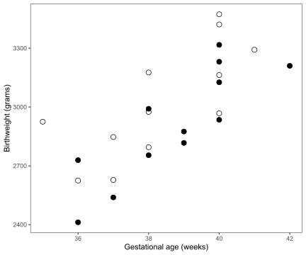
birthweight |> summarise(boys_sum_x=sum(`boys gestational age`),
boys_sum_y=sum(`boys weight`),
boys_sum_x2=sum((`boys gestational age`)^2),
boys_sum_y2=sum((`boys weight`)^2),
boys_sum_xy=sum((`boys gestational age`)*(`boys weight`)),
girls_sum_x=sum(`girls gestational age`),
girls_sum_y=sum(`girls weight`),
girls_sum_x2=sum((`girls gestational age`)^2),
girls_sum_y2=sum((`girls weight`)^2),
girls_sum_xy=sum((`girls gestational age`)*(`girls weight`))) |>
pivot_longer(
cols = starts_with(c("boys", "girls")),
names_to = "items",
values_to = "values",
values_drop_na = TRUE
)## # A tibble: 10 × 2
## items values
## <chr> <dbl>
## 1 boys_sum_x 460
## 2 boys_sum_y 36288
## 3 boys_sum_x2 17672
## 4 boys_sum_y2 110623496
## 5 boys_sum_xy 1395370
## 6 girls_sum_x 465
## 7 girls_sum_y 34936
## 8 girls_sum_x2 18055
## 9 girls_sum_y2 102575468
## 10 girls_sum_xy 1358497birthweight_summary <- birthweight |> summarise(boys_sum_x=sum(`boys gestational age`),
boys_sum_y=sum(`boys weight`),
boys_sum_x2=sum((`boys gestational age`)^2),
boys_sum_y2=sum((`boys weight`)^2),
boys_sum_xy=sum((`boys gestational age`)*(`boys weight`)),
girls_sum_x=sum(`girls gestational age`),
girls_sum_y=sum(`girls weight`),
girls_sum_x2=sum((`girls gestational age`)^2),
girls_sum_y2=sum((`girls weight`)^2),
girls_sum_xy=sum((`girls gestational age`)*(`girls weight`)))
birthweight_summary## # A tibble: 1 × 10
## boys_sum_x boys_sum_y boys_sum_x2 boys_sum_y2 boys_sum_xy girls_sum_x
## <dbl> <dbl> <dbl> <dbl> <dbl> <dbl>
## 1 460 36288 17672 110623496 1395370 465
## # ℹ 4 more variables: girls_sum_y <dbl>, girls_sum_x2 <dbl>,
## # girls_sum_y2 <dbl>, girls_sum_xy <dbl>#Table2.5
K=dim(birthweight)[1]
birthweight_summary |> summarise(b=(K*sum(boys_sum_xy,girls_sum_xy)-(sum(boys_sum_x*boys_sum_y, girls_sum_x*girls_sum_y)))/(K*sum(boys_sum_x2, girls_sum_x2)-(sum(boys_sum_x^2, girls_sum_x^2))),
a1=boys_sum_y/K-b*boys_sum_x/K,
a2=girls_sum_y/K-b*girls_sum_x/K,
b1=(K*boys_sum_xy-boys_sum_x*boys_sum_y)/(K*boys_sum_x2-boys_sum_x^2),
b2=(K*girls_sum_xy-girls_sum_x*girls_sum_y)/(K*girls_sum_x2-girls_sum_x^2),
a11=boys_sum_y/K-b1*boys_sum_x/K,
a22=girls_sum_y/K-b2*girls_sum_x/K,
S0=sum((birthweight$`boys weight`-a1-b*birthweight$`boys gestational age`)^2,
(birthweight$`girls weight`-a2-b*birthweight$`girls gestational age`)^2),
S1=sum((birthweight$`boys weight`-a11-b1*birthweight$`boys gestational age`)^2,
(birthweight$`girls weight`-a22-b2*birthweight$`girls gestational age`)^2),
Fstatistic=((S0-S1)/(2-1))/(S1/(24-4)),
p_value=pf(Fstatistic, df1=1, df2=20)
) |>
as.data.frame()## b a1 a2 b1 b2 a11 a22 S0
## 1 120.8943 -1610.283 -1773.322 111.9828 130.4 -1268.672 -2141.667 658770.7
## S1 Fstatistic p_value
## 1 652424.5 0.1945428 0.33610662.5 Exercises
2.5.1
Genetically similar seeds are randomly assigned to be raised in either a nutritionally enriched environment (treatment group) or standard conditions (control group) using a completely randomized experimental design. After a predetermined time all plants are harvested, dried and weighed. The results, expressed in grams.
plants## # A tibble: 20 × 2
## treatment control
## <dbl> <dbl>
## 1 4.81 4.17
## 2 4.17 3.05
## 3 4.41 5.18
## 4 3.59 4.01
## 5 5.87 6.11
## 6 3.83 4.1
## 7 6.03 5.17
## 8 4.98 3.57
## 9 4.9 5.33
## 10 5.75 5.59
## 11 5.36 4.66
## 12 3.48 5.58
## 13 4.69 3.66
## 14 4.44 4.5
## 15 4.89 3.9
## 16 4.71 4.61
## 17 5.48 5.62
## 18 4.32 4.53
## 19 5.15 6.05
## 20 6.34 5.14Perform an unpaired t-test on these data and calculate a 95% confidence interval for the difference between the group means. Interpret these results.
#unpaired t-test
t1 <- t.test(plants$treatment, plants$control, var.equal = TRUE, data=plants)
t1##
## Two Sample t-test
##
## data: plants$treatment and plants$control
## t = 0.50985, df = 38, p-value = 0.6131
## alternative hypothesis: true difference in means is not equal to 0
## 95 percent confidence interval:
## -0.3965733 0.6635733
## sample estimates:
## mean of x mean of y
## 4.8600 4.7265t1$conf.int## [1] -0.3965733 0.6635733
## attr(,"conf.level")
## [1] 0.95#t
sp <- sqrt((19*var(plants$treatment)+19*var(plants$control))/38)
(mean(plants$treatment)-mean(plants$control))/(sp*sqrt(2/20))## [1] 0.5098476#p-value
2*(1-pt(0.5098476, df=38))## [1] 0.6131068mean(plants$treatment)## [1] 4.86mean(plants$control)## [1] 4.7265sum(plants$treatment+plants$control)/40## [1] 4.79325mean(c(plants$treatment, plants$control))## [1] 4.79325c(plants$treatment, plants$control)## [1] 4.81 4.17 4.41 3.59 5.87 3.83 6.03 4.98 4.90 5.75 5.36 3.48 4.69 4.44 4.89
## [16] 4.71 5.48 4.32 5.15 6.34 4.17 3.05 5.18 4.01 6.11 4.10 5.17 3.57 5.33 5.59
## [31] 4.66 5.58 3.66 4.50 3.90 4.61 5.62 4.53 6.05 5.14#S1 and S0
S1 <- sum((plants$treatment-mean(plants$treatment))^2) + sum((plants$control-mean(plants$control))^2)
S0 <- sum((c(plants$treatment, plants$control)-mean(c(plants$treatment, plants$control)))^2)
S1## [1] 26.05345S0## [1] 26.23168#F(1,38)
(S0-S1)/(S1/38)## [1] 0.2599446t <- (mean(plants$treatment)-mean(plants$control))/(sp*sqrt(2/20))
t^2## [1] 0.25994462.5.2
The weights, in kilograms, of twenty men before and after participation in a “waist loss” program are shown in Table 2.8 (Egger et al. 1999). We want to know if, on average, they retain a weight loss twelve months after the program.
waist## # A tibble: 20 × 3
## man before after
## <dbl> <dbl> <dbl>
## 1 1 101. 97
## 2 2 102 108.
## 3 3 106. 97
## 4 4 108 108
## 5 5 92 84
## 6 6 117. 112.
## 7 7 110. 102.
## 8 8 135 128.
## 9 9 124. 118.
## 10 10 95 94.2
## 11 11 105 105
## 12 12 85 82.4
## 13 13 107. 98.2
## 14 14 80 83.6
## 15 15 115. 115
## 16 16 104. 103
## 17 17 82 80
## 18 18 102. 102.
## 19 19 104. 103.
## 20 20 93 93#unpaired t-test
t1 <- t.test(waist$before, waist$after, var.equal = TRUE, data=waist)
t1##
## Two Sample t-test
##
## data: waist$before and waist$after
## t = 0.64309, df = 38, p-value = 0.524
## alternative hypothesis: true difference in means is not equal to 0
## 95 percent confidence interval:
## -5.68128 10.97128
## sample estimates:
## mean of x mean of y
## 103.245 100.600#Dk
Dk <- waist$before - waist$after
EDk <- mean(Dk)
EDk## [1] 2.645#H0 is EDk = 0 and Dk ~ N(0, \sigma^2); H1 is EDk != 0 and Dk ~ N(EDk, \sigma^2)
S0 <- sum(Dk^2)
S1 <- sum((Dk-EDk)^2)#F(1,19)
(S0-S1)/(S1/19)## [1] 8.256448Fstatistic <- (S0-S1)/(S1/19)
1-pf(Fstatistic, df1=1, df2=19)## [1] 0.009730463#paired t-test
t2 <- t.test(waist$before, waist$after, paired = TRUE, var.equal = TRUE, data=waist)
t2##
## Paired t-test
##
## data: waist$before and waist$after
## t = 2.8734, df = 19, p-value = 0.00973
## alternative hypothesis: true mean difference is not equal to 0
## 95 percent confidence interval:
## 0.718348 4.571652
## sample estimates:
## mean difference
## 2.645(t2$statistic)^2## t
## 8.256448Chapter3 Exponential Family and Generalized Linear Models
Exercises
3.6
mortality## # A tibble: 8 × 3
## `age group` deaths population
## <chr> <dbl> <dbl>
## 1 30-34 1 17742
## 2 35-39 5 16554
## 3 40-44 5 16059
## 4 45-49 12 13083
## 5 50-54 25 10784
## 6 55-59 38 9645
## 7 60-64 54 10706
## 8 65-69 65 9933library(dplyr)
mortality2 <- mortality %>%
mutate(
age=as.integer(stringr::str_split(as.character(`age group`), "-") %>% purrr::map_chr(., 1)),
death_rate = deaths*100000 / population,
log_age=log(age),
log_deaths=log(death_rate)
)
mortality2## # A tibble: 8 × 7
## `age group` deaths population age death_rate log_age log_deaths
## <chr> <dbl> <dbl> <int> <dbl> <dbl> <dbl>
## 1 30-34 1 17742 30 5.64 3.40 1.73
## 2 35-39 5 16554 35 30.2 3.56 3.41
## 3 40-44 5 16059 40 31.1 3.69 3.44
## 4 45-49 12 13083 45 91.7 3.81 4.52
## 5 50-54 25 10784 50 232. 3.91 5.45
## 6 55-59 38 9645 55 394. 4.01 5.98
## 7 60-64 54 10706 60 504. 4.09 6.22
## 8 65-69 65 9933 65 654. 4.17 6.48lmodel <- lm(log_deaths ~ log_age, data = mortality2)
lmodel##
## Call:
## lm(formula = log_deaths ~ log_age, data = mortality2)
##
## Coefficients:
## (Intercept) log_age
## -18.909 6.152plot(mortality2$log_age, mortality2$log_deaths)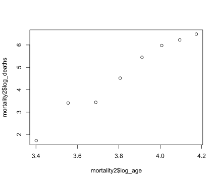
summary(lmodel)##
## Call:
## lm(formula = log_deaths ~ log_age, data = mortality2)
##
## Residuals:
## Min 1Q Median 3Q Max
## -0.34631 -0.28614 -0.02311 0.24654 0.44482
##
## Coefficients:
## Estimate Std. Error t value Pr(>|t|)
## (Intercept) -18.9094 1.7376 -10.88 3.57e-05 ***
## log_age 6.1520 0.4527 13.59 9.85e-06 ***
## ---
## Signif. codes: 0 '***' 0.001 '**' 0.01 '*' 0.05 '.' 0.1 ' ' 1
##
## Residual standard error: 0.3222 on 6 degrees of freedom
## Multiple R-squared: 0.9685, Adjusted R-squared: 0.9633
## F-statistic: 184.7 on 1 and 6 DF, p-value: 9.854e-06exp(lmodel$fitted.values)*mortality2$population/100000## 1 2 3 4 5 6 7 8
## 1.330546 3.204702 7.069199 11.886386 18.733671 30.115732 57.094466 86.677030mortality2$deaths## [1] 1 5 5 12 25 38 54 65data(poisson)
poisson## # A tibble: 9 × 2
## y x
## <dbl> <dbl>
## 1 2 -1
## 2 3 -1
## 3 6 0
## 4 7 0
## 5 8 0
## 6 9 0
## 7 10 1
## 8 12 1
## 9 15 1res.p=glm(y~x,family=poisson(link="identity"),data=poisson)
summary(res.p)##
## Call:
## glm(formula = y ~ x, family = poisson(link = "identity"), data = poisson)
##
## Coefficients:
## Estimate Std. Error z value Pr(>|z|)
## (Intercept) 7.4516 0.8841 8.428 < 2e-16 ***
## x 4.9353 1.0892 4.531 5.86e-06 ***
## ---
## Signif. codes: 0 '***' 0.001 '**' 0.01 '*' 0.05 '.' 0.1 ' ' 1
##
## (Dispersion parameter for poisson family taken to be 1)
##
## Null deviance: 18.4206 on 8 degrees of freedom
## Residual deviance: 1.8947 on 7 degrees of freedom
## AIC: 40.008
##
## Number of Fisher Scoring iterations: 3Chapter4 Estimation
#table 4.1
data(failure)
failure## # A tibble: 49 × 1
## lifetimes
## <dbl>
## 1 1051
## 2 1337
## 3 1389
## 4 1921
## 5 1942
## 6 2322
## 7 3629
## 8 4006
## 9 4012
## 10 4063
## 11 4921
## 12 5445
## 13 5620
## 14 5817
## 15 5905
## 16 5956
## 17 6068
## 18 6121
## 19 6473
## 20 7501
## 21 7886
## 22 8108
## 23 8546
## 24 8666
## 25 8831
## # ℹ 24 more rowshist(failure$lifetimes,freq=T,col="grey",breaks=12)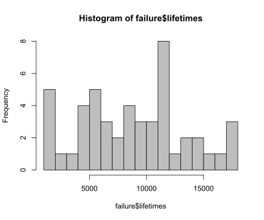
library(tidyverse)
length(failure$lifetimes)## [1] 49failure$percent <- order(failure$lifetimes)*100/length(failure$lifetimes)
failure |> ggplot(aes(x=lifetimes, y=percent)) + geom_point(size=3) +
scale_x_log10() + scale_y_log10() + theme_bw()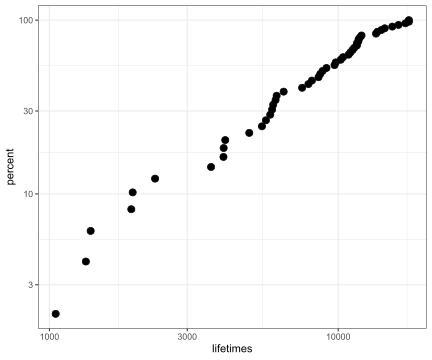
weibull <- tibble(
x=seq(1000, 20000, by=1),
data = dweibull(seq(1000, 20000, by=1),shape=3))
weibull$percent <- order(weibull$data)*100/length(weibull$data)
head(weibull)## # A tibble: 6 × 3
## x data percent
## <dbl> <dbl> <dbl>
## 1 1000 0 0.00526
## 2 1001 0 0.0105
## 3 1002 0 0.0158
## 4 1003 0 0.0211
## 5 1004 0 0.0263
## 6 1005 0 0.0316weibull |> ggplot(aes(x=x, y=percent)) + geom_point(size=1) + theme_bw()
y <- failure$lifetimes
N <- length(failure$lifetimes)
shape <- 2
forU <- function(theta){
1e6*(-(shape*N)/(theta)+(shape*sum(y^2))/(theta^3))
}
forUprime <- function(theta){
1e6*((shape*N)/(theta^2)-(shape*3*sum(y^2))/(theta^4))
}
forEUprime <- function(theta){
1e6*(-(shape^2*N)/(theta^2))
}
nextTheta <- function(theta, U, Up){
theta - U/Up
}theta1 <- mean(failure$lifetimes)
U10e6_1 <- forU(theta1)
Uprime10e6_1 <- forUprime(theta1)
EUprime10e6_1 <- forEUprime(theta1)
newTheta <- nextTheta(theta1, U10e6_1/1e6, Uprime10e6_1/1e6)
theta1## [1] 8805.694U10e6_1## [1] 2915.751Uprime10e6_1## [1] -3.521083EUprime10e6_1## [1] -2.52772U10e6_1/Uprime10e6_1## [1] -828.0835U10e6_1/EUprime10e6_1## [1] -1153.51newTheta## [1] 9633.777library(tidyverse)
tibble("theta" = theta1,
"U10e6" = U10e6_1,
"Uprime10e6" = Uprime10e6_1,
"EUprime10e6" = EUprime10e6_1,
"U/Uprime" = U10e6_1/Uprime10e6_1,
"U/EUprime" = U10e6_1/EUprime10e6_1
) %>%
add_row("theta" = nextTheta(last(.$theta), last(.$U10e6)/1e6, last(.$Uprime10e6)/1e6),
"U10e6" = forU(theta),
"Uprime10e6" = forUprime(theta),
"EUprime10e6" = forEUprime(theta),
"U/Uprime" = U10e6/Uprime10e6,
"U/EUprime" = U10e6/EUprime10e6
) %>%
add_row("theta" = nextTheta(last(.$theta), last(.$U10e6)/1e6, last(.$Uprime10e6)/1e6),
"U10e6" = forU(theta),
"Uprime10e6" = forUprime(theta),
"EUprime10e6" = forEUprime(theta),
"U/Uprime" = U10e6/Uprime10e6,
"U/EUprime" = U10e6/EUprime10e6
) %>%
add_row("theta" = nextTheta(last(.$theta), last(.$U10e6)/1e6, last(.$Uprime10e6)/1e6),
"U10e6" = forU(theta),
"Uprime10e6" = forUprime(theta),
"EUprime10e6" = forEUprime(theta),
"U/Uprime" = U10e6/Uprime10e6,
"U/EUprime" = U10e6/EUprime10e6
) %>%
add_row("theta" = nextTheta(last(.$theta), last(.$U10e6)/1e6, last(.$Uprime10e6)/1e6),
"U10e6" = forU(theta),
"Uprime10e6" = forUprime(theta),
"EUprime10e6" = forEUprime(theta),
"U/Uprime" = U10e6/Uprime10e6,
"U/EUprime" = U10e6/EUprime10e6
)## # A tibble: 5 × 6
## theta U10e6 Uprime10e6 EUprime10e6 `U/Uprime` `U/EUprime`
## <dbl> <dbl> <dbl> <dbl> <dbl> <dbl>
## 1 8806. 2916. -3.52 -2.53 -828. -1.15e+3
## 2 9634. 553. -2.28 -2.11 -242. -2.62e+2
## 3 9876. 32.7 -2.02 -2.01 -16.2 -1.63e+1
## 4 9892. 0.134 -2.00 -2.00 -0.0668 -6.68e-2
## 5 9892. 0.00000226 -2.00 -2.00 -0.00000113 -1.13e-6library(dobson)
data(poisson)
poisson## # A tibble: 9 × 2
## y x
## <dbl> <dbl>
## 1 2 -1
## 2 3 -1
## 3 6 0
## 4 7 0
## 5 8 0
## 6 9 0
## 7 10 1
## 8 12 1
## 9 15 1res.p=glm(y~x,family=poisson(link="identity"),data=poisson)
summary(res.p)##
## Call:
## glm(formula = y ~ x, family = poisson(link = "identity"), data = poisson)
##
## Coefficients:
## Estimate Std. Error z value Pr(>|z|)
## (Intercept) 7.4516 0.8841 8.428 < 2e-16 ***
## x 4.9353 1.0892 4.531 5.86e-06 ***
## ---
## Signif. codes: 0 '***' 0.001 '**' 0.01 '*' 0.05 '.' 0.1 ' ' 1
##
## (Dispersion parameter for poisson family taken to be 1)
##
## Null deviance: 18.4206 on 8 degrees of freedom
## Residual deviance: 1.8947 on 7 degrees of freedom
## AIC: 40.008
##
## Number of Fisher Scoring iterations: 3aids## # A tibble: 20 × 3
## year quarter cases
## <dbl> <dbl> <dbl>
## 1 1984 1 1
## 2 1984 2 6
## 3 1984 3 16
## 4 1984 4 23
## 5 1985 1 27
## 6 1985 2 39
## 7 1985 3 31
## 8 1985 4 30
## 9 1986 1 43
## 10 1986 2 51
## 11 1986 3 63
## 12 1986 4 70
## 13 1987 1 88
## 14 1987 2 97
## 15 1987 3 91
## 16 1987 4 104
## 17 1988 1 110
## 18 1988 2 113
## 19 1988 3 149
## 20 1988 4 159aids |> ggplot(aes(x=seq(1,20, by=1),
y=cases)) + geom_point(size=2) + theme_bw()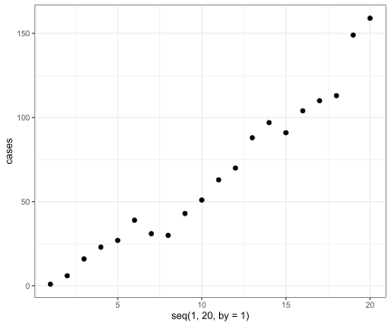
ggplot(aes(x=log(seq(1,20, by=1)),
y=log(cases)),
data=aids) + geom_point(size=2) + theme_bw()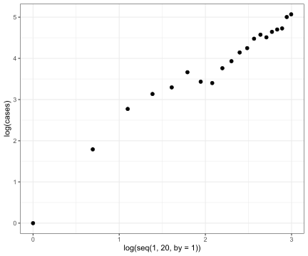
aids$logx <- log(seq(1,20, by=1))
res.p=glm(cases~logx,family=poisson(link="log"),data=aids)
summary(res.p)##
## Call:
## glm(formula = cases ~ logx, family = poisson(link = "log"), data = aids)
##
## Coefficients:
## Estimate Std. Error z value Pr(>|z|)
## (Intercept) 0.99600 0.16971 5.869 4.39e-09 ***
## logx 1.32661 0.06463 20.525 < 2e-16 ***
## ---
## Signif. codes: 0 '***' 0.001 '**' 0.01 '*' 0.05 '.' 0.1 ' ' 1
##
## (Dispersion parameter for poisson family taken to be 1)
##
## Null deviance: 677.264 on 19 degrees of freedom
## Residual deviance: 21.755 on 18 degrees of freedom
## AIC: 138.05
##
## Number of Fisher Scoring iterations: 4beta1 = 1
beta2 = 1
beta = matrix(c(beta1, beta2))
beta## [,1]
## [1,] 1
## [2,] 1X = matrix(c(rep(1,20), aids$logx),
ncol = 2,
byrow = FALSE)
X## [,1] [,2]
## [1,] 1 0.0000000
## [2,] 1 0.6931472
## [3,] 1 1.0986123
## [4,] 1 1.3862944
## [5,] 1 1.6094379
## [6,] 1 1.7917595
## [7,] 1 1.9459101
## [8,] 1 2.0794415
## [9,] 1 2.1972246
## [10,] 1 2.3025851
## [11,] 1 2.3978953
## [12,] 1 2.4849066
## [13,] 1 2.5649494
## [14,] 1 2.6390573
## [15,] 1 2.7080502
## [16,] 1 2.7725887
## [17,] 1 2.8332133
## [18,] 1 2.8903718
## [19,] 1 2.9444390
## [20,] 1 2.9957323library(matlib)
Y=aids$cases
W = as.vector(exp(X %*% beta))
XWX = t(X) %*% diag(W) %*% X
XWX## [,1] [,2]
## [1,] 570.8392 1439.608
## [2,] 1439.6080 3768.835Z = X %*% beta + Y/exp(X %*% beta) - 1
XWz = t(X) %*% diag(W) %*% Z
XWz## [,1]
## [1,] 2750.608
## [2,] 7165.214beta = inv(XWX) %*% XWz
beta## [,1]
## [1,] 0.652354
## [2,] 1.651976W = as.vector(exp(X %*% beta))
XWX = t(X) %*% diag(W) %*% X
XWX## [,1] [,2]
## [1,] 2179.160 5759.537
## [2,] 5759.537 15530.924Z = X %*% beta + Y/exp(X %*% beta) - 1
XWz = t(X) %*% diag(W) %*% Z
XWz## [,1]
## [1,] 10068.04
## [2,] 27050.81beta = inv(XWX) %*% XWz
beta## [,1]
## [1,] 0.8418285
## [2,] 1.4296516W = as.vector(exp(X %*% beta))
XWX = t(X) %*% diag(W) %*% X
XWX## [,1] [,2]
## [1,] 1468.897 3831.947
## [2,] 3831.947 10243.200Z = X %*% beta + Y/exp(X %*% beta) - 1
XWz = t(X) %*% diag(W) %*% Z
XWz## [,1]
## [1,] 6557.012
## [2,] 17434.482beta = inv(XWX) %*% XWz
beta## [,1]
## [1,] 0.984507
## [2,] 1.333712W = as.vector(exp(X %*% beta))
XWX = t(X) %*% diag(W) %*% X
XWX## [,1] [,2]
## [1,] 1320.094 3421.644
## [2,] 3421.644 9108.435Z = X %*% beta + Y/exp(X %*% beta) - 1
XWz = t(X) %*% diag(W) %*% Z
XWz## [,1]
## [1,] 5854.034
## [2,] 15491.392beta = inv(XWX) %*% XWz
beta## [,1]
## [1,] 0.9959001
## [2,] 1.3266773W = as.vector(exp(X %*% beta))
XWX = t(X) %*% diag(W) %*% X
XWX## [,1] [,2]
## [1,] 1311.101 3396.658
## [2,] 3396.658 9039.070Z = X %*% beta + Y/exp(X %*% beta) - 1
XWz = t(X) %*% diag(W) %*% Z
XWz## [,1]
## [1,] 5811.893
## [2,] 15374.382beta = inv(XWX) %*% XWz
beta## [,1]
## [1,] 0.9959791
## [2,] 1.3265970leukemia## # A tibble: 17 × 2
## time wbc
## <dbl> <dbl>
## 1 65 3.36
## 2 156 2.88
## 3 100 3.63
## 4 134 3.41
## 5 16 3.78
## 6 108 4.02
## 7 121 4
## 8 4 4.23
## 9 39 3.73
## 10 143 3.85
## 11 56 3.97
## 12 26 4.51
## 13 22 4.54
## 14 1 5
## 15 1 5
## 16 5 4.72
## 17 65 5leukemia |> ggplot(aes(x=wbc, y=time))+geom_point(size=2) + theme_bw()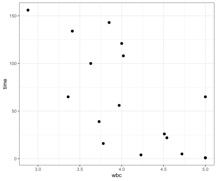
res.e=glm(time~wbc,family=Gamma(link="log"), data=leukemia)
summary(res.e, dispersion=1)##
## Call:
## glm(formula = time ~ wbc, family = Gamma(link = "log"), data = leukemia)
##
## Coefficients:
## Estimate Std. Error z value Pr(>|z|)
## (Intercept) 8.4775 1.6548 5.123 3.01e-07 ***
## wbc -1.1093 0.3997 -2.776 0.00551 **
## ---
## Signif. codes: 0 '***' 0.001 '**' 0.01 '*' 0.05 '.' 0.1 ' ' 1
##
## (Dispersion parameter for Gamma family taken to be 1)
##
## Null deviance: 26.282 on 16 degrees of freedom
## Residual deviance: 19.457 on 15 degrees of freedom
## AIC: 173.97
##
## Number of Fisher Scoring iterations: 8beta1 = 1
beta2 = 1
beta = matrix(c(beta1, beta2))
beta## [,1]
## [1,] 1
## [2,] 1X = matrix(c(rep(1,length(leukemia$wbc)), leukemia$wbc),
ncol = 2,
byrow = FALSE)
X## [,1] [,2]
## [1,] 1 3.36
## [2,] 1 2.88
## [3,] 1 3.63
## [4,] 1 3.41
## [5,] 1 3.78
## [6,] 1 4.02
## [7,] 1 4.00
## [8,] 1 4.23
## [9,] 1 3.73
## [10,] 1 3.85
## [11,] 1 3.97
## [12,] 1 4.51
## [13,] 1 4.54
## [14,] 1 5.00
## [15,] 1 5.00
## [16,] 1 4.72
## [17,] 1 5.00library(matlib)
Y=leukemia$time
for (i in 1:8) {
W = rep(1,length(leukemia$wbc))
XWX = t(X) %*% diag(W) %*% X
print(paste0("iter_", i))
print(XWX)
Z = X %*% beta + (Y-exp(X %*% beta))/exp(X %*% beta)
XWz = t(X) %*% diag(W) %*% Z
print(XWz)
beta = inv(XWX) %*% XWz
print(beta)
writeLines("\n")
}## [1] "iter_1"
## [,1] [,2]
## [1,] 17.00 69.6300
## [2,] 69.63 291.4571
## [,1]
## [1,] 80.19729
## [2,] 328.25994
## [,1]
## [1,] 4.86057632
## [2,] -0.03493351
##
##
## [1] "iter_2"
## [,1] [,2]
## [1,] 17.00 69.6300
## [2,] 69.63 291.4571
## [,1]
## [1,] 72.57509
## [2,] 293.84440
## [,1]
## [1,] 6.5030112
## [2,] -0.5453974
##
##
## [1] "iter_3"
## [,1] [,2]
## [1,] 17.00 69.6300
## [2,] 69.63 291.4571
## [,1]
## [1,] 68.40056
## [2,] 274.35080
## [,1]
## [1,] 7.8244252
## [2,] -0.9279706
##
##
## [1] "iter_4"
## [,1] [,2]
## [1,] 17.00 69.6300
## [2,] 69.63 291.4571
## [,1]
## [1,] 67.03087
## [2,] 267.77587
## [,1]
## [1,] 8.375058
## [2,] -1.082077
##
##
## [1] "iter_5"
## [,1] [,2]
## [1,] 17.00 69.6300
## [2,] 69.63 291.4571
## [,1]
## [1,] 66.87989
## [2,] 266.99995
## [,1]
## [1,] 8.469218
## [2,] -1.107235
##
##
## [1] "iter_6"
## [,1] [,2]
## [1,] 17.00 69.6300
## [2,] 69.63 291.4571
## [,1]
## [1,] 66.87706
## [2,] 266.97632
## [,1]
## [1,] 8.476937
## [2,] -1.109160
##
##
## [1] "iter_7"
## [,1] [,2]
## [1,] 17.00 69.6300
## [2,] 69.63 291.4571
## [,1]
## [1,] 66.87705
## [2,] 266.97547
## [,1]
## [1,] 8.477461
## [2,] -1.109288
##
##
## [1] "iter_8"
## [,1] [,2]
## [1,] 17.00 69.6300
## [2,] 69.63 291.4571
## [,1]
## [1,] 66.87705
## [2,] 266.97541
## [,1]
## [1,] 8.477495
## [2,] -1.109296Chapter5 Inference
#Exercises 5.1
#critical value
qchisq(0.95,df=1)## [1] 3.841459N=10
y=3
pi=c(0.1,0.3,0.5)
#information
J=N/(pi*(1-pi))
#Wald/score statistic
Wald = (y-N*pi)^2/(N*pi*(1-pi))
#Deviance
pi_hat=y/N
D=2*(y*log(pi_hat/pi)+(N-y)*log((1-pi_hat)/(1-pi)))
Wald## [1] 4.444444 0.000000 1.600000D## [1] 3.073272 0.000000 1.645658#Exercises 5.3(d)
N=100
theta_hat=c()
for(i in 1:20){
N=100
U = runif(N, min = 0, max = 1)
theta=2
Y=(1/U)^(1/theta)
theta_h = N/(sum(log(Y)))
print(theta_h)
theta_hat=c(theta_hat, theta_h)
}## [1] 2.191289
## [1] 1.973575
## [1] 2.269228
## [1] 1.936563
## [1] 1.858015
## [1] 1.794424
## [1] 2.046288
## [1] 1.925291
## [1] 2.057207
## [1] 2.514523
## [1] 2.192137
## [1] 1.958794
## [1] 2.131131
## [1] 1.581678
## [1] 1.819127
## [1] 1.915695
## [1] 1.902304
## [1] 1.735085
## [1] 2.007618
## [1] 2.057621theta_hat## [1] 2.191289 1.973575 2.269228 1.936563 1.858015 1.794424 2.046288 1.925291
## [9] 2.057207 2.514523 2.192137 1.958794 2.131131 1.581678 1.819127 1.915695
## [17] 1.902304 1.735085 2.007618 2.057621quantile(theta_hat, probs = c(2.5, 97.5)/100)## 2.5% 97.5%
## 1.654546 2.398008library(dobson)
leukemia## # A tibble: 17 × 2
## time wbc
## <dbl> <dbl>
## 1 65 3.36
## 2 156 2.88
## 3 100 3.63
## 4 134 3.41
## 5 16 3.78
## 6 108 4.02
## 7 121 4
## 8 4 4.23
## 9 39 3.73
## 10 143 3.85
## 11 56 3.97
## 12 26 4.51
## 13 22 4.54
## 14 1 5
## 15 1 5
## 16 5 4.72
## 17 65 5res.e=glm(time~wbc,family=Gamma(link="log"), data=leukemia)
summary(res.e, dispersion=1)##
## Call:
## glm(formula = time ~ wbc, family = Gamma(link = "log"), data = leukemia)
##
## Coefficients:
## Estimate Std. Error z value Pr(>|z|)
## (Intercept) 8.4775 1.6548 5.123 3.01e-07 ***
## wbc -1.1093 0.3997 -2.776 0.00551 **
## ---
## Signif. codes: 0 '***' 0.001 '**' 0.01 '*' 0.05 '.' 0.1 ' ' 1
##
## (Dispersion parameter for Gamma family taken to be 1)
##
## Null deviance: 26.282 on 16 degrees of freedom
## Residual deviance: 19.457 on 15 degrees of freedom
## AIC: 173.97
##
## Number of Fisher Scoring iterations: 8#95% confidence interval for the parameter b1.
-1.1093+0.3997*2## [1] -0.3099-1.1093-0.3997*2## [1] -1.9087res.e2=glm(time~1,family=Gamma(link="log"), data=leukemia)
summary(res.e2, dispersion=1)##
## Call:
## glm(formula = time ~ 1, family = Gamma(link = "log"), data = leukemia)
##
## Coefficients:
## Estimate Std. Error z value Pr(>|z|)
## (Intercept) 4.1347 0.2425 17.05 <2e-16 ***
## ---
## Signif. codes: 0 '***' 0.001 '**' 0.01 '*' 0.05 '.' 0.1 ' ' 1
##
## (Dispersion parameter for Gamma family taken to be 1)
##
## Null deviance: 26.282 on 16 degrees of freedom
## Residual deviance: 26.282 on 16 degrees of freedom
## AIC: 178.09
##
## Number of Fisher Scoring iterations: 6#deviance difference
res.e2$deviance - res.e$deviance## [1] 6.825567diff = res.e2$deviance - res.e$deviance
#p value
(1-pchisq(diff, df=1))## [1] 0.008986204Chapter6 Normal Linear Models
carbohydrate## # A tibble: 20 × 4
## carbohydrate age weight protein
## <dbl> <dbl> <dbl> <dbl>
## 1 33 33 100 14
## 2 40 47 92 15
## 3 37 49 135 18
## 4 27 35 144 12
## 5 30 46 140 15
## 6 43 52 101 15
## 7 34 62 95 14
## 8 48 23 101 17
## 9 30 32 98 15
## 10 38 42 105 14
## 11 50 31 108 17
## 12 51 61 85 19
## 13 30 63 130 19
## 14 36 40 127 20
## 15 41 50 109 15
## 16 42 64 107 16
## 17 46 56 117 18
## 18 24 61 100 13
## 19 35 48 118 18
## 20 37 28 102 14dput(carbohydrate)## structure(list(carbohydrate = c(33, 40, 37, 27, 30, 43, 34, 48,
## 30, 38, 50, 51, 30, 36, 41, 42, 46, 24, 35, 37), age = c(33,
## 47, 49, 35, 46, 52, 62, 23, 32, 42, 31, 61, 63, 40, 50, 64, 56,
## 61, 48, 28), weight = c(100, 92, 135, 144, 140, 101, 95, 101,
## 98, 105, 108, 85, 130, 127, 109, 107, 117, 100, 118, 102), protein = c(14,
## 15, 18, 12, 15, 15, 14, 17, 15, 14, 17, 19, 19, 20, 15, 16, 18,
## 13, 18, 14)), class = c("tbl_df", "tbl", "data.frame"), row.names = c(NA,
## -20L))#Model 6.7
N=dim(carbohydrate)[1]
X <- carbohydrate
X[,1] <- rep(1, N)
X## # A tibble: 20 × 4
## carbohydrate age weight protein
## <dbl> <dbl> <dbl> <dbl>
## 1 1 33 100 14
## 2 1 47 92 15
## 3 1 49 135 18
## 4 1 35 144 12
## 5 1 46 140 15
## 6 1 52 101 15
## 7 1 62 95 14
## 8 1 23 101 17
## 9 1 32 98 15
## 10 1 42 105 14
## 11 1 31 108 17
## 12 1 61 85 19
## 13 1 63 130 19
## 14 1 40 127 20
## 15 1 50 109 15
## 16 1 64 107 16
## 17 1 56 117 18
## 18 1 61 100 13
## 19 1 48 118 18
## 20 1 28 102 14Why \((y-Xb)^T(y-Xb)\ne y^Ty-b^TX^Ty\), where \(b=(X^TX)^{-1}X^Ty\) is the least squares estimate?
\[\begin{align} (y-Xb)^T(y-Xb)&=y^Ty-y^TXb-b^TX^Ty+b^TX^TXb\\ &=y^Ty-b^TX^Ty \end{align}\]
carbohydrate <- structure(list(carbohydrate = c(33, 40, 37, 27, 30, 43, 34, 48,
30, 38, 50, 51, 30, 36, 41, 42, 46, 24, 35, 37), age = c(33,
47, 49, 35, 46, 52, 62, 23, 32, 42, 31, 61, 63, 40, 50, 64, 56,
61, 48, 28), weight = c(100, 92, 135, 144, 140, 101, 95, 101,
98, 105, 108, 85, 130, 127, 109, 107, 117, 100, 118, 102), protein = c(14,
15, 18, 12, 15, 15, 14, 17, 15, 14, 17, 19, 19, 20, 15, 16, 18,
13, 18, 14)), class = c("tbl_df", "tbl", "data.frame"), row.names = c(NA,
-20L))
N=dim(carbohydrate)[1]
X <- carbohydrate
X[,1] <- rep(1, N)
y <- as.matrix(carbohydrate$carbohydrate)
#b=(X^TX)^{-1}X^Ty
X <- as.matrix(X)
XTX <- t(X) %*% X
XTy <- t(X) %*% y
XTX_inv <- solve(XTX)
b=XTX_inv %*% XTy
#Residual S
t(y - X %*% b) %*% (y - X %*% b)## [,1]
## [1,] 567.6629#Residual S
t(y) %*% y - 2*(t(y) %*% X %*% b) + t(b) %*% XTX %*% b## [,1]
## [1,] 567.6629#Residual S
t(y) %*% y - t(b) %*% XTy## [,1]
## [1,] 567.6629#Model 6.7
y <- as.matrix(carbohydrate$carbohydrate)
#X^Ty
t(as.matrix(X)) %*% y## [,1]
## carbohydrate 752
## age 34596
## weight 82270
## protein 12105#X^TX
t(as.matrix(X)) %*% as.matrix(X)## carbohydrate age weight protein
## carbohydrate 20 923 2214 318
## age 923 45697 102003 14780
## weight 2214 102003 250346 35306
## protein 318 14780 35306 5150#b=(X^TX)^{-1}X^Ty
X <- as.matrix(X)
XTX <- t(X) %*% X
XTy <- t(X) %*% y
solve(XTX)## carbohydrate age weight protein
## carbohydrate 4.81577219 -1.134935e-02 -1.875498e-02 -0.1362153330
## age -0.01134935 3.368777e-04 1.887239e-05 -0.0003953918
## weight -0.01875498 1.887239e-05 1.955259e-04 -0.0002365220
## protein -0.13621533 -3.953918e-04 -2.365220e-04 0.0113613619XTX_inv <- solve(XTX)
b=solve(XTX) %*% XTy
b## [,1]
## carbohydrate 36.9600559
## age -0.1136764
## weight -0.2280174
## protein 1.9577126t(y) %*% y## [,1]
## [1,] 29368#Residual S
t(y - X %*% b) %*% (y - X %*% b)## [,1]
## [1,] 567.6629#Residual S
t(y) %*% y - 2*(t(y) %*% X %*% b) + t(b) %*% XTX %*% b## [,1]
## [1,] 567.6629#Residual
t(y) %*% y - t(b) %*% XTy## [,1]
## [1,] 567.6629#R^2
(t(b) %*% XTX %*% b - N*mean(y)^2)/(t(y) %*% y - N*(mean(y)^2))## [,1]
## [1,] 0.4805428(t(b) %*% XTy - N*mean(y)^2)/(t(y) %*% y - N*mean(y)^2)## [,1]
## [1,] 0.4805428#fitted values
X %*% b## [,1]
## [1,] 37.81498
## [2,] 40.00536
## [3,] 35.84640
## [4,] 23.63943
## [5,] 29.17420
## [6,] 37.38482
## [7,] 35.65845
## [8,] 44.59686
## [9,] 40.34240
## [10,] 35.65180
## [11,] 42.09133
## [12,] 47.84086
## [13,] 37.35273
## [14,] 42.60905
## [15,] 35.78803
## [16,] 36.61031
## [17,] 39.15497
## [18,] 32.67433
## [19,] 39.83637
## [20,] 37.92732#unbiased estimator of \sigma^2:
p=4
(t(y-X %*% b) %*% (y-X %*% b))/(N-p)## [,1]
## [1,] 35.47893sigma_sq <- (t(y-X %*% b) %*% (y-X %*% b))/(N-p)
#J^{-1}
diag(XTX_inv)## carbohydrate age weight protein
## 4.8157721870 0.0003368777 0.0001955259 0.0113613619sqrt(as.vector(sigma_sq) * diag(XTX_inv))## carbohydrate age weight protein
## 13.07128293 0.10932548 0.08328895 0.63489286#Model 6.7
N=dim(carbohydrate)[1]
X2 <- carbohydrate[,2:4]
X2[,1] <- rep(1, N)
X2## # A tibble: 20 × 3
## age weight protein
## <dbl> <dbl> <dbl>
## 1 1 100 14
## 2 1 92 15
## 3 1 135 18
## 4 1 144 12
## 5 1 140 15
## 6 1 101 15
## 7 1 95 14
## 8 1 101 17
## 9 1 98 15
## 10 1 105 14
## 11 1 108 17
## 12 1 85 19
## 13 1 130 19
## 14 1 127 20
## 15 1 109 15
## 16 1 107 16
## 17 1 117 18
## 18 1 100 13
## 19 1 118 18
## 20 1 102 14y <- as.matrix(carbohydrate$carbohydrate)
#b=(X^TX)^{-1}X^Ty
X2 <- as.matrix(X2)
XTX2 <- t(X2) %*% X2
XTy2 <- t(X2) %*% y
solve(XTX2)## age weight protein
## age 4.43341460 -0.0181191691 -0.1495360119
## weight -0.01811917 0.0001944686 -0.0002143716
## protein -0.14953601 -0.0002143716 0.0108972924XTX_inv2 <- solve(XTX2)
b2=XTX_inv2 %*% XTy2
b2## [,1]
## age 33.130320
## weight -0.221649
## protein 1.824291t(y) %*% y## [,1]
## [1,] 29368#Residual
t(y - X2 %*% b2) %*% (y - X2 %*% b2)## [,1]
## [1,] 606.0219res.lm=lm(carbohydrate~age+weight+protein,data=carbohydrate)
summary(res.lm)##
## Call:
## lm(formula = carbohydrate ~ age + weight + protein, data = carbohydrate)
##
## Residuals:
## Min 1Q Median 3Q Max
## -10.3424 -4.8203 0.9897 3.8553 7.9087
##
## Coefficients:
## Estimate Std. Error t value Pr(>|t|)
## (Intercept) 36.96006 13.07128 2.828 0.01213 *
## age -0.11368 0.10933 -1.040 0.31389
## weight -0.22802 0.08329 -2.738 0.01460 *
## protein 1.95771 0.63489 3.084 0.00712 **
## ---
## Signif. codes: 0 '***' 0.001 '**' 0.01 '*' 0.05 '.' 0.1 ' ' 1
##
## Residual standard error: 5.956 on 16 degrees of freedom
## Multiple R-squared: 0.4805, Adjusted R-squared: 0.3831
## F-statistic: 4.934 on 3 and 16 DF, p-value: 0.01297res.lm=lm(carbohydrate~age+weight+protein,data=carbohydrate)
b2 <- res.lm$coefficients
N=dim(carbohydrate)[1]
X <- carbohydrate
X[,1] <- rep(1, N)
y <- as.matrix(carbohydrate$carbohydrate)
#b=(X^TX)^{-1}X^Ty
X <- as.matrix(X)
#Residual S
t(y - X %*% b2) %*% (y - X %*% b2)## [,1]
## [1,] 567.6629#Residual S
t(y) %*% y - 2*(t(y) %*% X %*% b2) + t(b2) %*% XTX %*% b2## [,1]
## [1,] 567.6629#Residual
t(y) %*% y - t(b2) %*% XTy## [,1]
## [1,] 567.6629crossprod(X)## carbohydrate age weight protein
## carbohydrate 20 923 2214 318
## age 923 45697 102003 14780
## weight 2214 102003 250346 35306
## protein 318 14780 35306 5150t(X) %*% X## carbohydrate age weight protein
## carbohydrate 20 923 2214 318
## age 923 45697 102003 14780
## weight 2214 102003 250346 35306
## protein 318 14780 35306 5150res.lm$fitted.values## 1 2 3 4 5 6 7 8
## 37.81498 40.00536 35.84640 23.63943 29.17420 37.38482 35.65845 44.59686
## 9 10 11 12 13 14 15 16
## 40.34240 35.65180 42.09133 47.84086 37.35273 42.60905 35.78803 36.61031
## 17 18 19 20
## 39.15497 32.67433 39.83637 37.92732#unbiased estimator of \sigma^2:
b2 <- res.lm$coefficients
p=4
sigma_sq <- (t(y-X %*% b2) %*% (y-X %*% b2))/(N-p)
sigma_hat <- sqrt(sigma_sq)
sigma_hat## [,1]
## [1,] 5.956419#het matrix X(X^TX)^{-1}X^T
H <- X %*% XTX_inv %*% t(X)
diag(H)## [1] 0.14759018 0.11986321 0.19203771 0.49453706 0.23926883 0.08702051
## [7] 0.22415190 0.29634508 0.14949497 0.09270349 0.15862094 0.34949329
## [13] 0.27032727 0.29021767 0.06653041 0.15639780 0.12027527 0.25560301
## [19] 0.10186193 0.18765947hatvalues(res.lm)## 1 2 3 4 5 6 7
## 0.14759018 0.11986321 0.19203771 0.49453706 0.23926883 0.08702051 0.22415190
## 8 9 10 11 12 13 14
## 0.29634508 0.14949497 0.09270349 0.15862094 0.34949329 0.27032727 0.29021767
## 15 16 17 18 19 20
## 0.06653041 0.15639780 0.12027527 0.25560301 0.10186193 0.18765947#standard deviation of residual
std_e <- as.vector(sigma_hat)*sqrt(1-hatvalues(res.lm))
std_e## 1 2 3 4 5 6 7 8
## 5.499326 5.588051 5.354030 4.234771 5.195183 5.691356 5.246547 4.996491
## 9 10 11 12 13 14 15 16
## 5.493178 5.673615 5.463628 4.804090 5.088026 5.018199 5.754868 5.470841
## 17 18 19 20
## 5.586742 5.139106 5.644907 5.368517#Table 6.6
library(tidyverse)
tibble(carbohydrate = carbohydrate$carbohydrate,
Fitted_values = res.lm$fitted.values,
Residual = res.lm$residuals,
Std_residual = res.lm$residuals/std_e,
DFIT = Std_residual*sqrt(hatvalues(res.lm)/(1-hatvalues(res.lm))),
cooks_distance = cooks.distance(res.lm))## # A tibble: 20 × 6
## carbohydrate Fitted_values Residual Std_residual DFIT cooks_distance
## <dbl> <dbl> <dbl> <dbl> <dbl> <dbl>
## 1 33 37.8 -4.81 -0.876 -0.364 0.0332
## 2 40 40.0 -0.00536 -0.000959 -0.000354 0.0000000313
## 3 37 35.8 1.15 0.215 0.105 0.00276
## 4 27 23.6 3.36 0.794 0.785 0.154
## 5 30 29.2 0.826 0.159 0.0891 0.00199
## 6 43 37.4 5.62 0.987 0.305 0.0232
## 7 34 35.7 -1.66 -0.316 -0.170 0.00722
## 8 48 44.6 3.40 0.681 0.442 0.0488
## 9 30 40.3 -10.3 -1.88 -0.789 0.156
## 10 38 35.7 2.35 0.414 0.132 0.00438
## 11 50 42.1 7.91 1.45 0.629 0.0988
## 12 51 47.8 3.16 0.658 0.482 0.0581
## 13 30 37.4 -7.35 -1.45 -0.880 0.193
## 14 36 42.6 -6.61 -1.32 -0.842 0.177
## 15 41 35.8 5.21 0.906 0.242 0.0146
## 16 42 36.6 5.39 0.985 0.424 0.0450
## 17 46 39.2 6.85 1.23 0.453 0.0513
## 18 24 32.7 -8.67 -1.69 -0.989 0.245
## 19 35 39.8 -4.84 -0.857 -0.289 0.0208
## 20 37 37.9 -0.927 -0.173 -0.0830 0.00172res.lm1=lm(carbohydrate~weight+protein,data=carbohydrate)
summary(res.lm1)##
## Call:
## lm(formula = carbohydrate ~ weight + protein, data = carbohydrate)
##
## Residuals:
## Min 1Q Median 3Q Max
## -10.6812 -3.9135 0.9464 4.0880 9.7948
##
## Coefficients:
## Estimate Std. Error t value Pr(>|t|)
## (Intercept) 33.13032 12.57155 2.635 0.01736 *
## weight -0.22165 0.08326 -2.662 0.01642 *
## protein 1.82429 0.62327 2.927 0.00941 **
## ---
## Signif. codes: 0 '***' 0.001 '**' 0.01 '*' 0.05 '.' 0.1 ' ' 1
##
## Residual standard error: 5.971 on 17 degrees of freedom
## Multiple R-squared: 0.4454, Adjusted R-squared: 0.3802
## F-statistic: 6.827 on 2 and 17 DF, p-value: 0.006661The R squared value ranges between 0 to 1 and is represented by the below formula:
\[R2= 1- SSres / SStot\]
anova(res.lm)## Analysis of Variance Table
##
## Response: carbohydrate
## Df Sum Sq Mean Sq F value Pr(>F)
## age 1 3.82 3.82 0.1076 0.747136
## weight 1 183.98 183.98 5.1856 0.036859 *
## protein 1 337.34 337.34 9.5082 0.007121 **
## Residuals 16 567.66 35.48
## ---
## Signif. codes: 0 '***' 0.001 '**' 0.01 '*' 0.05 '.' 0.1 ' ' 1anova(res.lm1)## Analysis of Variance Table
##
## Response: carbohydrate
## Df Sum Sq Mean Sq F value Pr(>F)
## weight 1 181.38 181.378 5.088 0.037560 *
## protein 1 305.40 305.400 8.567 0.009409 **
## Residuals 17 606.02 35.648
## ---
## Signif. codes: 0 '***' 0.001 '**' 0.01 '*' 0.05 '.' 0.1 ' ' 1#SStot OF res.lm
sum(anova(res.lm)$`Sum Sq`)## [1] 1092.8sum((carbohydrate$carbohydrate-mean(carbohydrate$carbohydrate))^2)## [1] 1092.8#SSres OF res.lm
sum(anova(res.lm)$`Sum Sq`[1:3])## [1] 525.1371sum((res.lm$fitted.values-mean(carbohydrate$carbohydrate))^2)## [1] 525.1371sum((res.lm$fitted.values-mean(res.lm$fitted.values))^2)## [1] 525.1371#SStot OF res.lm1
sum(anova(res.lm1)$`Sum Sq`)## [1] 1092.8sum((carbohydrate$carbohydrate-mean(carbohydrate$carbohydrate))^2)## [1] 1092.8#SSres OF res.lm1
sum(anova(res.lm1)$`Sum Sq`[1:2])## [1] 486.7781sum((res.lm1$fitted.values-mean(carbohydrate$carbohydrate))^2)## [1] 486.7781#R-square
summary(res.lm)$r.squared## [1] 0.48054281-anova(res.lm)$`Sum Sq`[4]/sum(anova(res.lm)$`Sum Sq`)## [1] 0.4805428summary(res.lm1)$r.squared## [1] 0.44544111-anova(res.lm1)$`Sum Sq`[3]/sum(anova(res.lm1)$`Sum Sq`)## [1] 0.4454411Adjusted \(R^2\) is computed as:
\[1 - (1 - R^2) \frac{n - 1}{n - p - 1}\]
#res.lm
summary(res.lm)$adj.r.squared## [1] 0.38314451-(1-summary(res.lm)$r.squared)*(20-1)/(20-3-1)## [1] 0.3831445#res.lm1
summary(res.lm1)$adj.r.squared## [1] 0.38019891-(1-summary(res.lm1)$r.squared)*(20-1)/(20-2-1)## [1] 0.3801989The square root of \(R^2\) is called the multiple correlation coefficient.
anova(res.lm, res.lm1)## Analysis of Variance Table
##
## Model 1: carbohydrate ~ age + weight + protein
## Model 2: carbohydrate ~ weight + protein
## Res.Df RSS Df Sum of Sq F Pr(>F)
## 1 16 567.66
## 2 17 606.02 -1 -38.359 1.0812 0.3139#F statistic
38.359/(567.66/16)## [1] 1.0811821-pf(38.359/(567.66/16), df1=1, df2=16)## [1] 0.3138919data(carbohydrate)
res.glm=glm(carbohydrate~age+weight+protein,family=gaussian,data=carbohydrate)
summary(res.glm)##
## Call:
## glm(formula = carbohydrate ~ age + weight + protein, family = gaussian,
## data = carbohydrate)
##
## Coefficients:
## Estimate Std. Error t value Pr(>|t|)
## (Intercept) 36.96006 13.07128 2.828 0.01213 *
## age -0.11368 0.10933 -1.040 0.31389
## weight -0.22802 0.08329 -2.738 0.01460 *
## protein 1.95771 0.63489 3.084 0.00712 **
## ---
## Signif. codes: 0 '***' 0.001 '**' 0.01 '*' 0.05 '.' 0.1 ' ' 1
##
## (Dispersion parameter for gaussian family taken to be 35.47893)
##
## Null deviance: 1092.80 on 19 degrees of freedom
## Residual deviance: 567.66 on 16 degrees of freedom
## AIC: 133.67
##
## Number of Fisher Scoring iterations: 2res.glm2=glm(carbohydrate~weight+protein,family=gaussian,data=carbohydrate)
summary(res.glm2)##
## Call:
## glm(formula = carbohydrate ~ weight + protein, family = gaussian,
## data = carbohydrate)
##
## Coefficients:
## Estimate Std. Error t value Pr(>|t|)
## (Intercept) 33.13032 12.57155 2.635 0.01736 *
## weight -0.22165 0.08326 -2.662 0.01642 *
## protein 1.82429 0.62327 2.927 0.00941 **
## ---
## Signif. codes: 0 '***' 0.001 '**' 0.01 '*' 0.05 '.' 0.1 ' ' 1
##
## (Dispersion parameter for gaussian family taken to be 35.64835)
##
## Null deviance: 1092.80 on 19 degrees of freedom
## Residual deviance: 606.02 on 17 degrees of freedom
## AIC: 132.98
##
## Number of Fisher Scoring iterations: 2# Therefore, the difference in the residual sums of squares for Models (6.7) and (6.6) is 606.022−567.663 = 38.359.
res.glm2$deviance## [1] 606.0219res.glm$deviance## [1] 567.6629res.glm2$deviance - res.glm$deviance## [1] 38.35907#(606.02-567.66)#The value F =38.359/35.489 = 1.08 is not significant compared with the F(1,16) distribution,
res.glm2$df.residual## [1] 17res.glm$df.residual## [1] 16(res.glm2$deviance - res.glm$deviance)/(res.glm$deviance/res.glm$df.residual)## [1] 1.081179Fstatistic <- (606.02-567.66)/(567.66/16)
Fstatistic## [1] 1.081211pf(Fstatistic, 1,16)## [1] 0.6861142library(cvTools)
full.model <- lm(carbohydrate ~ ., data = carbohydrate)
cvFit(full.model, data = carbohydrate, K = 5, R = 20, y = carbohydrate$carbohydrate)## 5-fold CV results:
## CV
## 7.136062library(olsrr)
full.model <- lm(carbohydrate ~ ., data = carbohydrate)
ols_step_both_p(full.model, details=TRUE)## Stepwise Selection Method
## ---------------------------
##
## Candidate Terms:
##
## 1. age
## 2. weight
## 3. protein
##
## We are selecting variables based on p value...
##
##
## Stepwise Selection: Step 1
##
## - protein added
##
## Model Summary
## ---------------------------------------------------------------
## R 0.463 RMSE 6.907
## R-Squared 0.214 Coef. Var 18.369
## Adj. R-Squared 0.171 MSE 47.703
## Pred R-Squared -0.010 MAE 5.842
## ---------------------------------------------------------------
## RMSE: Root Mean Square Error
## MSE: Mean Square Error
## MAE: Mean Absolute Error
##
## ANOVA
## -------------------------------------------------------------------
## Sum of
## Squares DF Mean Square F Sig.
## -------------------------------------------------------------------
## Regression 234.150 1 234.150 4.909 0.0399
## Residual 858.650 18 47.703
## Total 1092.800 19
## -------------------------------------------------------------------
##
## Parameter Estimates
## ----------------------------------------------------------------------------------------
## model Beta Std. Error Std. Beta t Sig lower upper
## ----------------------------------------------------------------------------------------
## (Intercept) 12.479 11.444 1.090 0.290 -11.563 36.521
## protein 1.580 0.713 0.463 2.216 0.040 0.082 3.078
## ----------------------------------------------------------------------------------------
##
##
##
## Stepwise Selection: Step 2
##
## - weight added
##
## Model Summary
## --------------------------------------------------------------
## R 0.667 RMSE 5.971
## R-Squared 0.445 Coef. Var 15.879
## Adj. R-Squared 0.380 MSE 35.648
## Pred R-Squared 0.236 MAE 4.593
## --------------------------------------------------------------
## RMSE: Root Mean Square Error
## MSE: Mean Square Error
## MAE: Mean Absolute Error
##
## ANOVA
## -------------------------------------------------------------------
## Sum of
## Squares DF Mean Square F Sig.
## -------------------------------------------------------------------
## Regression 486.778 2 243.389 6.827 0.0067
## Residual 606.022 17 35.648
## Total 1092.800 19
## -------------------------------------------------------------------
##
## Parameter Estimates
## ----------------------------------------------------------------------------------------
## model Beta Std. Error Std. Beta t Sig lower upper
## ----------------------------------------------------------------------------------------
## (Intercept) 33.130 12.572 2.635 0.017 6.607 59.654
## protein 1.824 0.623 0.534 2.927 0.009 0.509 3.139
## weight -0.222 0.083 -0.486 -2.662 0.016 -0.397 -0.046
## ----------------------------------------------------------------------------------------
##
##
##
## Model Summary
## --------------------------------------------------------------
## R 0.667 RMSE 5.971
## R-Squared 0.445 Coef. Var 15.879
## Adj. R-Squared 0.380 MSE 35.648
## Pred R-Squared 0.236 MAE 4.593
## --------------------------------------------------------------
## RMSE: Root Mean Square Error
## MSE: Mean Square Error
## MAE: Mean Absolute Error
##
## ANOVA
## -------------------------------------------------------------------
## Sum of
## Squares DF Mean Square F Sig.
## -------------------------------------------------------------------
## Regression 486.778 2 243.389 6.827 0.0067
## Residual 606.022 17 35.648
## Total 1092.800 19
## -------------------------------------------------------------------
##
## Parameter Estimates
## ----------------------------------------------------------------------------------------
## model Beta Std. Error Std. Beta t Sig lower upper
## ----------------------------------------------------------------------------------------
## (Intercept) 33.130 12.572 2.635 0.017 6.607 59.654
## protein 1.824 0.623 0.534 2.927 0.009 0.509 3.139
## weight -0.222 0.083 -0.486 -2.662 0.016 -0.397 -0.046
## ----------------------------------------------------------------------------------------
##
##
##
## No more variables to be added/removed.
##
##
## Final Model Output
## ------------------
##
## Model Summary
## --------------------------------------------------------------
## R 0.667 RMSE 5.971
## R-Squared 0.445 Coef. Var 15.879
## Adj. R-Squared 0.380 MSE 35.648
## Pred R-Squared 0.236 MAE 4.593
## --------------------------------------------------------------
## RMSE: Root Mean Square Error
## MSE: Mean Square Error
## MAE: Mean Absolute Error
##
## ANOVA
## -------------------------------------------------------------------
## Sum of
## Squares DF Mean Square F Sig.
## -------------------------------------------------------------------
## Regression 486.778 2 243.389 6.827 0.0067
## Residual 606.022 17 35.648
## Total 1092.800 19
## -------------------------------------------------------------------
##
## Parameter Estimates
## ----------------------------------------------------------------------------------------
## model Beta Std. Error Std. Beta t Sig lower upper
## ----------------------------------------------------------------------------------------
## (Intercept) 33.130 12.572 2.635 0.017 6.607 59.654
## protein 1.824 0.623 0.534 2.927 0.009 0.509 3.139
## weight -0.222 0.083 -0.486 -2.662 0.016 -0.397 -0.046
## ----------------------------------------------------------------------------------------##
## Stepwise Selection Summary
## ------------------------------------------------------------------------------------
## Added/ Adj.
## Step Variable Removed R-Square R-Square C(p) AIC RMSE
## ------------------------------------------------------------------------------------
## 1 protein addition 0.214 0.171 8.2020 137.9501 6.9067
## 2 weight addition 0.445 0.380 3.0810 132.9812 5.9706
## ------------------------------------------------------------------------------------#R code (lasso)
library(glmnet)
y = carbohydrate$carbohydrate
x = as.matrix(carbohydrate[,c('age','weight','protein')])
fit = glmnet(x, y)
plot(fit, xvar='lambda')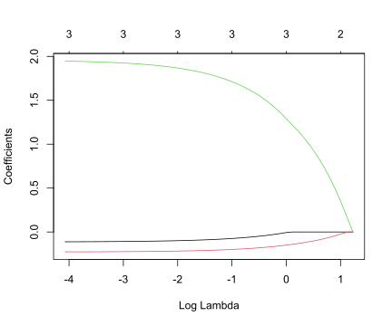
cvfit = cv.glmnet(x, y, grouped=FALSE)
coef(cvfit, s = "lambda.1se")## 4 x 1 sparse Matrix of class "dgCMatrix"
## s1
## (Intercept) 33.889042731
## age -0.004292978
## weight -0.148035052
## protein 1.276513112plant.dried## # A tibble: 30 × 2
## group weight
## <chr> <dbl>
## 1 Control 4.17
## 2 Control 5.58
## 3 Control 5.18
## 4 Control 6.11
## 5 Control 4.5
## 6 Control 4.61
## 7 Control 5.17
## 8 Control 4.53
## 9 Control 5.33
## 10 Control 5.14
## 11 TreatmentA 4.81
## 12 TreatmentA 4.17
## 13 TreatmentA 4.41
## 14 TreatmentA 3.59
## 15 TreatmentA 5.87
## 16 TreatmentA 3.83
## 17 TreatmentA 6.03
## 18 TreatmentA 4.89
## 19 TreatmentA 4.32
## 20 TreatmentA 4.69
## 21 TreatmentB 6.31
## 22 TreatmentB 5.12
## 23 TreatmentB 5.54
## 24 TreatmentB 5.5
## 25 TreatmentB 5.37
## # ℹ 5 more rowsres.glm1=glm(weight~-1 + group, family=gaussian, data=plant.dried)
summary(res.glm1)##
## Call:
## glm(formula = weight ~ -1 + group, family = gaussian, data = plant.dried)
##
## Coefficients:
## Estimate Std. Error t value Pr(>|t|)
## groupControl 5.0320 0.1971 25.53 <2e-16 ***
## groupTreatmentA 4.6610 0.1971 23.64 <2e-16 ***
## groupTreatmentB 5.5260 0.1971 28.03 <2e-16 ***
## ---
## Signif. codes: 0 '***' 0.001 '**' 0.01 '*' 0.05 '.' 0.1 ' ' 1
##
## (Dispersion parameter for gaussian family taken to be 0.3885959)
##
## Null deviance: 786.318 on 30 degrees of freedom
## Residual deviance: 10.492 on 27 degrees of freedom
## AIC: 61.619
##
## Number of Fisher Scoring iterations: 2res.glm0=glm(weight~1, family=gaussian, data=plant.dried)
summary(res.glm0)##
## Call:
## glm(formula = weight ~ 1, family = gaussian, data = plant.dried)
##
## Coefficients:
## Estimate Std. Error t value Pr(>|t|)
## (Intercept) 5.073 0.128 39.63 <2e-16 ***
## ---
## Signif. codes: 0 '***' 0.001 '**' 0.01 '*' 0.05 '.' 0.1 ' ' 1
##
## (Dispersion parameter for gaussian family taken to be 0.49167)
##
## Null deviance: 14.258 on 29 degrees of freedom
## Residual deviance: 14.258 on 29 degrees of freedom
## AIC: 66.821
##
## Number of Fisher Scoring iterations: 2balanced## # A tibble: 12 × 3
## `factor A` `factor B` data
## <chr> <chr> <dbl>
## 1 A1 B1 6.8
## 2 A1 B1 6.6
## 3 A1 B2 5.3
## 4 A1 B2 6.1
## 5 A2 B1 7.5
## 6 A2 B1 7.4
## 7 A2 B2 7.2
## 8 A2 B2 6.5
## 9 A3 B1 7.8
## 10 A3 B1 9.1
## 11 A3 B2 8.8
## 12 A3 B2 9.1res.glmint=glm(data~`factor A`*`factor B`, family=gaussian, data=balanced)
res.glmadd=glm(data~`factor A`+`factor B`, family=gaussian, data=balanced)
res.glmA=glm(data~`factor A`, family=gaussian, data=balanced)
res.glmB=glm(data~`factor B`, family=gaussian, data=balanced)
res.glmmean=glm(data~1, family=gaussian, data=balanced)res.glmint##
## Call: glm(formula = data ~ `factor A` * `factor B`, family = gaussian,
## data = balanced)
##
## Coefficients:
## (Intercept) `factor A`A2
## 6.70 0.75
## `factor A`A3 `factor B`B2
## 1.75 -1.00
## `factor A`A2:`factor B`B2 `factor A`A3:`factor B`B2
## 0.40 1.50
##
## Degrees of Freedom: 11 Total (i.e. Null); 6 Residual
## Null Deviance: 15.83
## Residual Deviance: 1.48 AIC: 22.94summary(res.glmint)##
## Call:
## glm(formula = data ~ `factor A` * `factor B`, family = gaussian,
## data = balanced)
##
## Coefficients:
## Estimate Std. Error t value Pr(>|t|)
## (Intercept) 6.7000 0.3512 19.078 1.34e-06 ***
## `factor A`A2 0.7500 0.4967 1.510 0.1818
## `factor A`A3 1.7500 0.4967 3.524 0.0125 *
## `factor B`B2 -1.0000 0.4967 -2.013 0.0907 .
## `factor A`A2:`factor B`B2 0.4000 0.7024 0.569 0.5897
## `factor A`A3:`factor B`B2 1.5000 0.7024 2.136 0.0766 .
## ---
## Signif. codes: 0 '***' 0.001 '**' 0.01 '*' 0.05 '.' 0.1 ' ' 1
##
## (Dispersion parameter for gaussian family taken to be 0.2466667)
##
## Null deviance: 15.83 on 11 degrees of freedom
## Residual deviance: 1.48 on 6 degrees of freedom
## AIC: 22.94
##
## Number of Fisher Scoring iterations: 2anova(res.glmint)## Analysis of Deviance Table
##
## Model: gaussian, link: identity
##
## Response: data
##
## Terms added sequentially (first to last)
##
##
## Df Deviance Resid. Df Resid. Dev
## NULL 11 15.8300
## `factor A` 2 12.7400 9 3.0900
## `factor B` 1 0.4033 8 2.6867
## `factor A`:`factor B` 2 1.2067 6 1.4800#b^TX^Ty = y^y-(y-Xb)^T(y-Xb)
sum(res.glmint$data$data^2)## [1] 664.1crossprod(res.glmint$data$data)## [,1]
## [1,] 664.1res.glmint$data$data-res.glmint$fitted.values## 1 2 3 4 5 6 7 8 9 10 11 12
## 0.10 -0.10 -0.40 0.40 0.05 -0.05 0.35 -0.35 -0.65 0.65 -0.15 0.15res.glmint$residuals## 1 2 3 4 5 6 7 8 9 10 11 12
## 0.10 -0.10 -0.40 0.40 0.05 -0.05 0.35 -0.35 -0.65 0.65 -0.15 0.15sum(res.glmint$data$data^2) - sum((res.glmint$data$data-res.glmint$fitted.values)^2)## [1] 662.62summary(res.glmadd)##
## Call:
## glm(formula = data ~ `factor A` + `factor B`, family = gaussian,
## data = balanced)
##
## Coefficients:
## Estimate Std. Error t value Pr(>|t|)
## (Intercept) 6.3833 0.3346 19.079 5.9e-08 ***
## `factor A`A2 0.9500 0.4098 2.318 0.049047 *
## `factor A`A3 2.5000 0.4098 6.101 0.000289 ***
## `factor B`B2 -0.3667 0.3346 -1.096 0.305015
## ---
## Signif. codes: 0 '***' 0.001 '**' 0.01 '*' 0.05 '.' 0.1 ' ' 1
##
## (Dispersion parameter for gaussian family taken to be 0.3358333)
##
## Null deviance: 15.8300 on 11 degrees of freedom
## Residual deviance: 2.6867 on 8 degrees of freedom
## AIC: 26.095
##
## Number of Fisher Scoring iterations: 2sum(res.glmadd$data$data^2) - sum((res.glmadd$residuals)^2)## [1] 661.4133summary(res.glmA)##
## Call:
## glm(formula = data ~ `factor A`, family = gaussian, data = balanced)
##
## Coefficients:
## Estimate Std. Error t value Pr(>|t|)
## (Intercept) 6.2000 0.2930 21.162 5.51e-09 ***
## `factor A`A2 0.9500 0.4143 2.293 0.047550 *
## `factor A`A3 2.5000 0.4143 6.034 0.000194 ***
## ---
## Signif. codes: 0 '***' 0.001 '**' 0.01 '*' 0.05 '.' 0.1 ' ' 1
##
## (Dispersion parameter for gaussian family taken to be 0.3433333)
##
## Null deviance: 15.83 on 11 degrees of freedom
## Residual deviance: 3.09 on 9 degrees of freedom
## AIC: 25.774
##
## Number of Fisher Scoring iterations: 2sum(res.glmA$data$data^2) - sum((res.glmA$residuals)^2)## [1] 661.01summary(res.glmB)##
## Call:
## glm(formula = data ~ `factor B`, family = gaussian, data = balanced)
##
## Coefficients:
## Estimate Std. Error t value Pr(>|t|)
## (Intercept) 7.5333 0.5071 14.857 3.83e-08 ***
## `factor B`B2 -0.3667 0.7171 -0.511 0.62
## ---
## Signif. codes: 0 '***' 0.001 '**' 0.01 '*' 0.05 '.' 0.1 ' ' 1
##
## (Dispersion parameter for gaussian family taken to be 1.542667)
##
## Null deviance: 15.830 on 11 degrees of freedom
## Residual deviance: 15.427 on 10 degrees of freedom
## AIC: 43.069
##
## Number of Fisher Scoring iterations: 2sum(res.glmB$data$data^2) - sum((res.glmB$residuals)^2)## [1] 648.6733summary(res.glmmean)##
## Call:
## glm(formula = data ~ 1, family = gaussian, data = balanced)
##
## Coefficients:
## Estimate Std. Error t value Pr(>|t|)
## (Intercept) 7.3500 0.3463 21.22 2.82e-10 ***
## ---
## Signif. codes: 0 '***' 0.001 '**' 0.01 '*' 0.05 '.' 0.1 ' ' 1
##
## (Dispersion parameter for gaussian family taken to be 1.439091)
##
## Null deviance: 15.83 on 11 degrees of freedom
## Residual deviance: 15.83 on 11 degrees of freedom
## AIC: 41.379
##
## Number of Fisher Scoring iterations: 2sum(res.glmmean$data$data^2) - sum((res.glmmean$residuals)^2)## [1] 648.27#Table6.13
tibble(
d.f.=c(res.glmint$df.residual,
res.glmadd$df.residual,
res.glmA$df.residual,
res.glmB$df.residual,
res.glmmean$df.residual),
bTXTy=c(sum(res.glmint$data$data^2) - sum((res.glmint$residuals)^2),
sum(res.glmadd$data$data^2) - sum((res.glmadd$residuals)^2),
sum(res.glmA$data$data^2) - sum((res.glmA$residuals)^2),
sum(res.glmB$data$data^2) - sum((res.glmB$residuals)^2),
sum(res.glmmean$data$data^2) - sum((res.glmmean$residuals)^2)),
scaled_deviance= c(res.glmint$deviance,
res.glmadd$deviance,
res.glmA$deviance,
res.glmB$deviance,
res.glmmean$deviance),
) |> as.data.frame()## d.f. bTXTy scaled_deviance
## 1 6 662.6200 1.480000
## 2 8 661.4133 2.686667
## 3 9 661.0100 3.090000
## 4 10 648.6733 15.426667
## 5 11 648.2700 15.830000sigmaDs <- res.glmint$deviance
sigmaDi <- res.glmadd$deviance
#F
((sigmaDi-sigmaDs)/(res.glmadd$df.residual-res.glmint$df.residual))/(sigmaDs/res.glmint$df.residual)## [1] 2.445946df1=res.glmadd$df.residual-res.glmint$df.residual
df1## [1] 2df2=res.glmint$df.residual
df2## [1] 6#F
Fstatistic=((sigmaDi-sigmaDs)/(res.glmadd$df.residual-res.glmint$df.residual))/(sigmaDs/res.glmint$df.residual)
1-pf(Fstatistic, df1=df1, df2=df2)## [1] 0.1671644sigmaDs <- res.glmint$deviance
sigmaDi <- res.glmadd$deviance
sigmaDa <- res.glmA$deviance
df1=res.glmA$df.residual-res.glmadd$df.residual
df1## [1] 1df2=res.glmint$df.residual
df2## [1] 6Fstatistic=((sigmaDa-sigmaDi)/(res.glmA$df.residual-res.glmadd$df.residual))/(sigmaDs/res.glmint$df.residual)
Fstatistic## [1] 1.6351351-pf(Fstatistic, df1=df1, df2=df2)## [1] 0.2482245sigmaDs <- res.glmint$deviance
sigmaDi <- res.glmadd$deviance
sigmaDb <- res.glmB$deviance
df1=res.glmB$df.residual-res.glmadd$df.residual
df1## [1] 2df2=res.glmint$df.residual
df2## [1] 6Fstatistic=((sigmaDb-sigmaDi)/(res.glmB$df.residual-res.glmadd$df.residual))/(sigmaDs/res.glmint$df.residual)
Fstatistic## [1] 25.824321-pf(Fstatistic, df1=df1, df2=df2)## [1] 0.001127422#Table6.14
tibble(Source_of_variantion=c(
"Mean",
"Level A",
"Level B",
"Interactions",
"Residual"
),
d.f.=c(
length(res.glmmean$coefficients),
length(res.glmA$coefficients)-length(res.glmmean$coefficients),
length(res.glmB$coefficients)-length(res.glmmean$coefficients),
length(res.glmint$coefficients)-length(res.glmA$coefficients)-length(res.glmB$coefficients)+length(res.glmmean$coefficients),
res.glmint$df.residual
),
sum_of_squares=c(
sum(res.glmmean$data$data^2) - sum((res.glmmean$residuals)^2),
sum(res.glmA$data$data^2) - sum((res.glmA$residuals)^2) - (sum(res.glmmean$data$data^2) - sum((res.glmmean$residuals)^2)),
sum(res.glmB$data$data^2) - sum((res.glmB$residuals)^2) - (sum(res.glmmean$data$data^2) - sum((res.glmmean$residuals)^2)),
sum(res.glmint$data$data^2) - sum((res.glmint$residuals)^2) -
(sum(res.glmA$data$data^2) - sum((res.glmA$residuals)^2)) -
(sum(res.glmB$data$data^2) - sum((res.glmB$residuals)^2)) +
((sum(res.glmmean$data$data^2) - sum((res.glmmean$residuals)^2))),
sum((res.glmint$residuals)^2)
),
Mean_squares = sum_of_squares/`d.f.`,
"F"=c(
" ",
((sigmaDb-sigmaDi)/(res.glmB$df.residual-res.glmadd$df.residual))/(sigmaDs/res.glmint$df.residual),
((sigmaDa-sigmaDi)/(res.glmA$df.residual-res.glmadd$df.residual))/(sigmaDs/res.glmint$df.residual),
((sigmaDi-sigmaDs)/(res.glmadd$df.residual-res.glmint$df.residual))/(sigmaDs/res.glmint$df.residual),
" "
)
) |> as.data.frame()## Source_of_variantion d.f. sum_of_squares Mean_squares F
## 1 Mean 1 648.2700000 648.2700000
## 2 Level A 2 12.7400000 6.3700000 25.8243243243243
## 3 Level B 1 0.4033333 0.4033333 1.63513513513513
## 4 Interactions 2 1.2066667 0.6033333 2.44594594594595
## 5 Residual 6 1.4800000 0.2466667anova(res.glmmean, res.glmA, res.glmB, res.glmadd, res.glmint)## Analysis of Deviance Table
##
## Model 1: data ~ 1
## Model 2: data ~ `factor A`
## Model 3: data ~ `factor B`
## Model 4: data ~ `factor A` + `factor B`
## Model 5: data ~ `factor A` * `factor B`
## Resid. Df Resid. Dev Df Deviance
## 1 11 15.8300
## 2 9 3.0900 2 12.7400
## 3 10 15.4267 -1 -12.3367
## 4 8 2.6867 2 12.7400
## 5 6 1.4800 2 1.2067#Table6.14
anova(res.glmmean, res.glmA, res.glmB, res.glmadd, res.glmint)$`Resid. Dev`## [1] 15.830000 3.090000 15.426667 2.686667 1.480000#sum_of_squares Mean
sum(res.glmmean$data$data^2) - sum((res.glmmean$residuals)^2)## [1] 648.27#sum_of_squares Level A
anova(res.glmmean, res.glmA, res.glmB, res.glmadd, res.glmint)$`Resid. Dev`[1] - anova(res.glmmean, res.glmA, res.glmB, res.glmadd, res.glmint)$`Resid. Dev`[2]## [1] 12.74#sum_of_squares Level B
anova(res.glmmean, res.glmA, res.glmB, res.glmadd, res.glmint)$`Resid. Dev`[1] - anova(res.glmmean, res.glmA, res.glmB, res.glmadd, res.glmint)$`Resid. Dev`[3]## [1] 0.4033333#sum_of_squares Interactions
anova(res.glmmean, res.glmA, res.glmB, res.glmadd, res.glmint)$`Resid. Dev`[4] - anova(res.glmmean, res.glmA, res.glmB, res.glmadd, res.glmint)$`Resid. Dev`[5]## [1] 1.206667#sum_of_squares Residual
anova(res.glmmean, res.glmA, res.glmB, res.glmadd, res.glmint)$`Resid. Dev`[5]## [1] 1.48#Table6.15
achievement## # A tibble: 21 × 3
## method y x
## <chr> <dbl> <dbl>
## 1 A 6 3
## 2 A 4 1
## 3 A 5 3
## 4 A 3 1
## 5 A 4 2
## 6 A 3 1
## 7 A 6 4
## 8 B 8 4
## 9 B 9 5
## 10 B 7 5
## 11 B 9 4
## 12 B 8 3
## 13 B 5 1
## 14 B 7 2
## 15 C 6 3
## 16 C 7 2
## 17 C 7 2
## 18 C 7 3
## 19 C 8 4
## 20 C 5 1
## 21 C 7 4achievement |> ggplot(aes(x=x,
y=y,
group=method)) + geom_point(aes(shape=method, color=method), size=3) +
theme_bw() + theme(
# Hide panel borders and remove grid lines
#panel.border = element_line(colour = "black"),
panel.grid.major = element_blank(),
panel.grid.minor = element_blank(),
# Change axis line
#axis.line = element_line(colour = "black")
) + xlab("Gestational age (weeks)") +
ylab("Birthweight (grams)") + scale_shape_manual(values=c(1, 3, 18))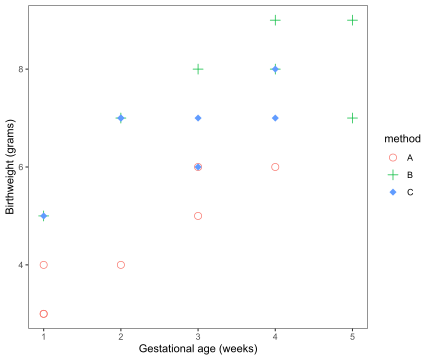
#Model 6.13
res.glm=glm(y~x+method, family=gaussian, data=achievement)
summary(res.glm)##
## Call:
## glm(formula = y ~ x + method, family = gaussian, data = achievement)
##
## Coefficients:
## Estimate Std. Error t value Pr(>|t|)
## (Intercept) 2.8367 0.4235 6.699 3.74e-06 ***
## x 0.7429 0.1421 5.227 6.84e-05 ***
## methodB 2.1878 0.4545 4.814 0.000162 ***
## methodC 1.8612 0.4240 4.390 0.000400 ***
## ---
## Signif. codes: 0 '***' 0.001 '**' 0.01 '*' 0.05 '.' 0.1 ' ' 1
##
## (Dispersion parameter for gaussian family taken to be 0.6060024)
##
## Null deviance: 63.810 on 20 degrees of freedom
## Residual deviance: 10.302 on 17 degrees of freedom
## AIC: 54.64
##
## Number of Fisher Scoring iterations: 2#Model 6.13
summary(res.glm)$coefficients## Estimate Std. Error t value Pr(>|t|)
## (Intercept) 2.8367347 0.4234705 6.698778 3.739415e-06
## x 0.7428571 0.1421270 5.226714 6.837988e-05
## methodB 2.1877551 0.4544618 4.813947 1.620169e-04
## methodC 1.8612245 0.4239569 4.390126 3.995625e-04summary(res.glm)$coefficients[1]## [1] 2.836735summary(res.glm)$coefficients[1]+summary(res.glm)$coefficients[3]## [1] 5.02449summary(res.glm)$coefficients[1]+summary(res.glm)$coefficients[4]## [1] 4.697959summary(res.glm)$coefficients[2]## [1] 0.7428571#sigmaD1
res.glm$deviance## [1] 10.30204#Model 6.14
res.glm2=glm(y~x, family=gaussian, data=achievement)
summary(res.glm2)##
## Call:
## glm(formula = y ~ x, family = gaussian, data = achievement)
##
## Coefficients:
## Estimate Std. Error t value Pr(>|t|)
## (Intercept) 3.4468 0.6112 5.639 1.95e-05 ***
## x 1.0106 0.2001 5.051 7.09e-05 ***
## ---
## Signif. codes: 0 '***' 0.001 '**' 0.01 '*' 0.05 '.' 0.1 ' ' 1
##
## (Dispersion parameter for gaussian family taken to be 1.433371)
##
## Null deviance: 63.810 on 20 degrees of freedom
## Residual deviance: 27.234 on 19 degrees of freedom
## AIC: 71.054
##
## Number of Fisher Scoring iterations: 2#Model 6.14
summary(res.glm2)$coefficients## Estimate Std. Error t value Pr(>|t|)
## (Intercept) 3.446809 0.6112211 5.639217 1.946757e-05
## x 1.010638 0.2000691 5.051447 7.088061e-05summary(res.glm2)$coefficients[1]## [1] 3.446809summary(res.glm2)$coefficients[2]## [1] 1.010638#sigmaD0
res.glm2$deviance## [1] 27.23404anova(res.glm2,res.glm)## Analysis of Deviance Table
##
## Model 1: y ~ x
## Model 2: y ~ x + method
## Resid. Df Resid. Dev Df Deviance
## 1 19 27.234
## 2 17 10.302 2 16.932#b^TX^Ty
sum((res.glm2$data$y)^2) - sum((res.glm2$data$y-res.glm2$fitted.values)^2)## [1] 853.766sum(res.glm2$fitted.values^2)## [1] 853.766anova(res.glm2,res.glm)$`Resid. Df`## [1] 19 17#Table6.16
tibble(d.f.=c(length(res.glm2$coefficients),
anova(res.glm2,res.glm)$`Resid. Df`[1]-anova(res.glm2,res.glm)$`Resid. Df`[2],
anova(res.glm2,res.glm)$`Resid. Df`[2]),
sum_of_squaresc=c(sum(res.glm2$fitted.values^2),
anova(res.glm2,res.glm)$`Resid. Dev`[1]-anova(res.glm2,res.glm)$`Resid. Dev`[2],
anova(res.glm2,res.glm)$`Resid. Dev`[2]),
Mean_squares=sum_of_squaresc/`d.f.`,
"F"=c("",Mean_squares[2]/Mean_squares[3],"")) |> as.data.frame()## d.f. sum_of_squaresc Mean_squares F
## 1 2 853.76596 426.8829787
## 2 2 16.93200 8.4660009 13.9702431129244
## 3 17 10.30204 0.6060024head(PLOS)## nchar authors
## 1 150 6
## 2 88 17
## 3 64 3
## 4 126 30
## 5 87 9
## 6 115 3dim(PLOS)## [1] 878 2#Figure6.7
PLOS |> ggplot(aes(x=authors,
y=nchar))+geom_jitter(size=1)+theme_bw() + theme(
# Hide panel borders and remove grid lines
#panel.border = element_line(colour = "black"),
panel.grid.major = element_blank(),
panel.grid.minor = element_blank(),
# Change axis line
#axis.line = element_line(colour = "black")
)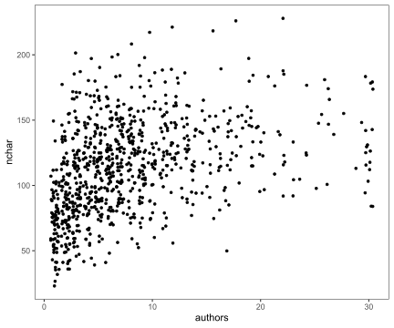
#Model6.15
lmodel = lm(nchar ~ authors, data=PLOS)
summary(lmodel)##
## Call:
## lm(formula = nchar ~ authors, data = PLOS)
##
## Residuals:
## Min 1Q Median 3Q Max
## -83.210 -23.156 -1.519 20.753 99.068
##
## Coefficients:
## Estimate Std. Error t value Pr(>|t|)
## (Intercept) 96.1061 1.7554 54.75 <2e-16 ***
## authors 2.1826 0.1737 12.56 <2e-16 ***
## ---
## Signif. codes: 0 '***' 0.001 '**' 0.01 '*' 0.05 '.' 0.1 ' ' 1
##
## Residual standard error: 32.89 on 876 degrees of freedom
## Multiple R-squared: 0.1527, Adjusted R-squared: 0.1517
## F-statistic: 157.8 on 1 and 876 DF, p-value: < 2.2e-16#Model6.16
qmodel = lm(nchar ~ authors + I(authors^2), data=PLOS)
summary(qmodel)##
## Call:
## lm(formula = nchar ~ authors + I(authors^2), data = PLOS)
##
## Residuals:
## Min 1Q Median 3Q Max
## -90.09 -21.33 -2.51 18.34 102.78
##
## Coefficients:
## Estimate Std. Error t value Pr(>|t|)
## (Intercept) 81.40444 2.47751 32.86 < 2e-16 ***
## authors 6.06579 0.50618 11.98 < 2e-16 ***
## I(authors^2) -0.15375 0.01891 -8.13 1.46e-15 ***
## ---
## Signif. codes: 0 '***' 0.001 '**' 0.01 '*' 0.05 '.' 0.1 ' ' 1
##
## Residual standard error: 31.73 on 875 degrees of freedom
## Multiple R-squared: 0.2122, Adjusted R-squared: 0.2104
## F-statistic: 117.8 on 2 and 875 DF, p-value: < 2.2e-16sum(lmodel$residuals^2)## [1] 947501.8sum(qmodel$residuals^2)## [1] 880950.2anova(lmodel, qmodel)## Analysis of Variance Table
##
## Model 1: nchar ~ authors
## Model 2: nchar ~ authors + I(authors^2)
## Res.Df RSS Df Sum of Sq F Pr(>F)
## 1 876 947502
## 2 875 880950 1 66552 66.102 1.458e-15 ***
## ---
## Signif. codes: 0 '***' 0.001 '**' 0.01 '*' 0.05 '.' 0.1 ' ' 1#Table6.21
#Fractional polynomials
p=c(-2,-1,-0.5,0,0.5,1,2,3)
for(i in p){
model = lm(nchar ~ I(authors^i), data=PLOS)
print(sum(model$residuals^2))
}## [1] 926425.7
## [1] 872771.8
## [1] 852655.3
## [1] 1118208
## [1] 896880.9
## [1] 947501.8
## [1] 1025531
## [1] 1064216p=c(-2,-1,-0.5,0,0.5,1,2,3)
model <- function(i){
sum(lm(nchar ~ I(authors^i), data=PLOS)$residuals^2)
}
sapply(p, model)## [1] 926425.7 872771.8 852655.3 1118207.9 896880.9 947501.8 1025530.8
## [8] 1064216.3sugar## # A tibble: 6 × 3
## period refined manufactured
## <chr> <dbl> <dbl>
## 1 1936-39 32 16.3
## 2 1046-49 31.2 23.1
## 3 1956-59 27 23.6
## 4 1966-69 21 27.7
## 5 1976-79 14.9 34.6
## 6 1986-89 8.8 33.9sugar2 <- sugar
sugar2["decade"] <- c(seq(0,5))
sugar2## # A tibble: 6 × 4
## period refined manufactured decade
## <chr> <dbl> <dbl> <int>
## 1 1936-39 32 16.3 0
## 2 1046-49 31.2 23.1 1
## 3 1956-59 27 23.6 2
## 4 1966-69 21 27.7 3
## 5 1976-79 14.9 34.6 4
## 6 1986-89 8.8 33.9 5model1 <- lm(refined ~ decade, data=sugar2)
summary(model1)##
## Call:
## lm(formula = refined ~ decade, data = sugar2)
##
## Residuals:
## 1 2 3 4 5 6
## -2.6905 1.3924 2.0752 0.9581 -0.2590 -1.4762
##
## Coefficients:
## Estimate Std. Error t value Pr(>|t|)
## (Intercept) 34.6905 1.4765 23.50 1.95e-05 ***
## decade -4.8829 0.4877 -10.01 0.000559 ***
## ---
## Signif. codes: 0 '***' 0.001 '**' 0.01 '*' 0.05 '.' 0.1 ' ' 1
##
## Residual standard error: 2.04 on 4 degrees of freedom
## Multiple R-squared: 0.9616, Adjusted R-squared: 0.952
## F-statistic: 100.2 on 1 and 4 DF, p-value: 0.0005593#coefficients
model1$coefficients## (Intercept) decade
## 34.690476 -4.882857#extract standard error of individual regression coefficients
sqrt(diag(vcov(model1)))## (Intercept) decade
## 1.4765230 0.4876795#extract residual standard error of regression model
summary(model1)$sigma## [1] 2.04011#95% confidence interval
t_value <- qt(0.975, df=4)
t_value## [1] 2.776445sd <- sqrt(diag(vcov(model1)))[2]
model1$coefficients[2]-t_value*sd## decade
## -6.236872model1$coefficients[2]+t_value*sd## decade
## -3.528842model2 <- lm(manufactured ~ decade, data=sugar2)
summary(model2)##
## Call:
## lm(formula = manufactured ~ decade, data = sugar2)
##
## Residuals:
## 1 2 3 4 5 6
## -1.1905 1.9924 -1.1248 -0.6419 2.6410 -1.6762
##
## Coefficients:
## Estimate Std. Error t value Pr(>|t|)
## (Intercept) 17.4905 1.4854 11.775 0.000298 ***
## decade 3.6171 0.4906 7.373 0.001804 **
## ---
## Signif. codes: 0 '***' 0.001 '**' 0.01 '*' 0.05 '.' 0.1 ' ' 1
##
## Residual standard error: 2.052 on 4 degrees of freedom
## Multiple R-squared: 0.9315, Adjusted R-squared: 0.9143
## F-statistic: 54.36 on 1 and 4 DF, p-value: 0.001804#coefficients
model2$coefficients## (Intercept) decade
## 17.490476 3.617143#extract standard error of individual regression coefficients
sqrt(diag(vcov(model2)))## (Intercept) decade
## 1.4853655 0.4906001#95% confidence interval
model2$coefficients[2]-t_value*sd## decade
## 2.263128model2$coefficients[2]+t_value*sd## decade
## 4.971158sugar2['Total'] <- sugar2['refined']+sugar2['manufactured']
model3 <- lm(Total ~ decade, data=sugar2)
summary(model3)##
## Call:
## lm(formula = Total ~ decade, data = sugar2)
##
## Residuals:
## 1 2 3 4 5 6
## -3.8810 3.3848 0.9505 0.3162 2.3819 -3.1524
##
## Coefficients:
## Estimate Std. Error t value Pr(>|t|)
## (Intercept) 52.181 2.377 21.956 2.55e-05 ***
## decade -1.266 0.785 -1.612 0.182
## ---
## Signif. codes: 0 '***' 0.001 '**' 0.01 '*' 0.05 '.' 0.1 ' ' 1
##
## Residual standard error: 3.284 on 4 degrees of freedom
## Multiple R-squared: 0.3939, Adjusted R-squared: 0.2424
## F-statistic: 2.6 on 1 and 4 DF, p-value: 0.1822#Table 6.23
pasture## # A tibble: 27 × 2
## K yield
## <dbl> <dbl>
## 1 0 1754.
## 2 40 4923.
## 3 50 5246.
## 4 5 3185.
## 5 10 3538.
## 6 30 4000
## 7 15 4185.
## 8 40 4692.
## 9 20 3600
## 10 15 3108.
## 11 30 4415.
## 12 50 4938.
## 13 5 3046.
## 14 0 2554.
## 15 10 3323.
## 16 40 4462.
## 17 20 4215.
## 18 40 4154.
## 19 10 2400
## 20 5 2862.
## 21 40 3723
## 22 30 4892.
## 23 40 4785.
## 24 20 3185.
## 25 0 2723.
## # ℹ 2 more rows#EXERCISES 6.2
pasture |> ggplot(aes(x=K,
y=yield))+geom_point(size=1)+theme_bw() + theme(
# Hide panel borders and remove grid lines
#panel.border = element_line(colour = "black"),
panel.grid.major = element_blank(),
panel.grid.minor = element_blank(),
# Change axis line
#axis.line = element_line(colour = "black")
)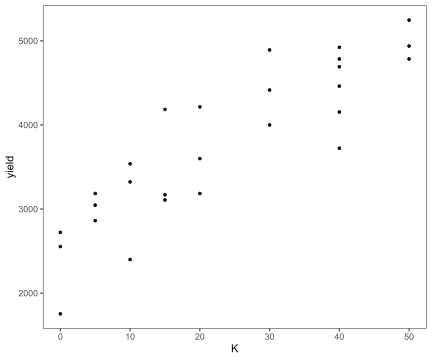
lmodel2 = lm(yield ~ K, data=pasture)
summary(lmodel2)##
## Call:
## lm(formula = yield ~ K, data = pasture)
##
## Residuals:
## Min 1Q Median 3Q Max
## -890.32 -231.14 -11.45 252.25 814.96
##
## Coefficients:
## Estimate Std. Error t value Pr(>|t|)
## (Intercept) 2644.224 148.366 17.822 1.01e-15 ***
## K 48.361 5.192 9.315 1.32e-09 ***
## ---
## Signif. codes: 0 '***' 0.001 '**' 0.01 '*' 0.05 '.' 0.1 ' ' 1
##
## Residual standard error: 445.1 on 25 degrees of freedom
## Multiple R-squared: 0.7763, Adjusted R-squared: 0.7674
## F-statistic: 86.77 on 1 and 25 DF, p-value: 1.316e-09qmodel2 = lm(yield ~ K + I(K^2), data=pasture)
summary(qmodel2)##
## Call:
## lm(formula = yield ~ K + I(K^2), data = pasture)
##
## Residuals:
## Min 1Q Median 3Q Max
## -876.18 -257.45 82.54 287.88 722.17
##
## Coefficients:
## Estimate Std. Error t value Pr(>|t|)
## (Intercept) 2471.2637 196.1115 12.601 4.51e-12 ***
## K 73.8059 19.8999 3.709 0.0011 **
## I(K^2) -0.5152 0.3894 -1.323 0.1983
## ---
## Signif. codes: 0 '***' 0.001 '**' 0.01 '*' 0.05 '.' 0.1 ' ' 1
##
## Residual standard error: 438.6 on 24 degrees of freedom
## Multiple R-squared: 0.7915, Adjusted R-squared: 0.7742
## F-statistic: 45.56 on 2 and 24 DF, p-value: 6.736e-09anova(lmodel2, qmodel2)## Analysis of Variance Table
##
## Model 1: yield ~ K
## Model 2: yield ~ K + I(K^2)
## Res.Df RSS Df Sum of Sq F Pr(>F)
## 1 25 4952793
## 2 24 4616095 1 336698 1.7506 0.1983#standard deviation of residual
N=length(pasture$K)
p=3
sigma_sq <- (t(pasture$yield-qmodel2$fitted.values) %*% (pasture$yield-qmodel2$fitted.values))/(N-p)
sigma_hat <- sqrt(sigma_sq)
std_e <- as.vector(sigma_hat)*sqrt(1-hatvalues(qmodel2))
std_e## 1 2 3 4 5 6 7 8
## 392.2723 421.5502 382.4364 417.6786 424.3213 418.1877 422.4668 421.5502
## 9 10 11 12 13 14 15 16
## 418.6776 422.4668 418.1877 382.4364 417.6786 392.2723 424.3213 421.5502
## 17 18 19 20 21 22 23 24
## 418.6776 421.5502 424.3213 417.6786 421.5502 418.1877 421.5502 418.6776
## 25 26 27
## 392.2723 382.4364 422.4668#standardized residuals
qmodel2$residuals/std_e## 1 2 3 4 5 6
## -1.82873907 0.76839933 0.97438347 0.85517076 0.89718998 -0.53029260
## 7 8 9 10 11 12
## 1.70940578 0.22089635 -0.33749718 -0.83967034 0.46304132 0.16954371
## 13 14 15 16 17 18
## 0.52381553 0.21040554 0.38955584 -0.32660664 1.13236888 -1.05629433
## 19 20 21 22 23 24
## -1.78591804 0.08184895 -2.07847386 1.60343841 0.43985010 -1.32966870
## 25 26 27
## 0.64199347 -0.23261469 -0.69386007plot(qmodel2$residuals/std_e)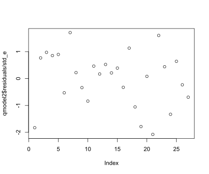
#EXERCISES6.3
m1 <- lm(carbohydrate~age+weight+protein,data=carbohydrate)
m2 <- lm(carbohydrate~weight+protein,data=carbohydrate)
m3 <- lm(carbohydrate~age+protein,data=carbohydrate)
m4 <- lm(carbohydrate~protein,data=carbohydrate)
anova(m1, m2, m3, m4)## Analysis of Variance Table
##
## Model 1: carbohydrate ~ age + weight + protein
## Model 2: carbohydrate ~ weight + protein
## Model 3: carbohydrate ~ age + protein
## Model 4: carbohydrate ~ protein
## Res.Df RSS Df Sum of Sq F Pr(>F)
## 1 16 567.66
## 2 17 606.02 -1 -38.359 1.0812 0.3139
## 3 17 833.57 0 -227.549
## 4 18 858.65 -1 -25.079 0.7069 0.4129#EXERCISES6.4
cholesterol## # A tibble: 30 × 3
## chol age bmi
## <dbl> <dbl> <dbl>
## 1 5.94 52 20.7
## 2 4.71 46 21.3
## 3 5.86 51 25.4
## 4 6.52 44 22.7
## 5 6.8 70 23.9
## 6 5.23 33 24.3
## 7 4.97 21 22.2
## 8 8.78 63 26.2
## 9 5.13 56 23.3
## 10 6.74 54 29.2
## 11 5.95 44 22.7
## 12 5.83 71 21.9
## 13 5.74 39 22.4
## 14 4.92 58 20.2
## 15 6.69 58 24.4
## 16 6.48 65 26.3
## 17 8.83 76 22.7
## 18 5.1 47 21.5
## 19 5.81 43 20.7
## 20 4.65 30 18.9
## 21 6.82 58 23.9
## 22 6.28 78 24.3
## 23 5.15 49 23.8
## 24 2.92 36 19.6
## 25 9.27 67 24.3
## # ℹ 5 more rowsm5 <- lm(chol~age+bmi,data=cholesterol)
m6 <- lm(chol~age,data=cholesterol)
anova(m5, m6)## Analysis of Variance Table
##
## Model 1: chol ~ age + bmi
## Model 2: chol ~ age
## Res.Df RSS Df Sum of Sq F Pr(>F)
## 1 27 26.571
## 2 28 31.636 -1 -5.0655 5.1474 0.03149 *
## ---
## Signif. codes: 0 '***' 0.001 '**' 0.01 '*' 0.05 '.' 0.1 ' ' 1#EXERCISES6.5
plasma## # A tibble: 31 × 2
## Group phosphate
## <chr> <dbl>
## 1 H-O 2.3
## 2 H-O 4.1
## 3 H-O 4.2
## 4 H-O 4
## 5 H-O 4.6
## 6 H-O 4.6
## 7 H-O 3.8
## 8 H-O 5.2
## 9 H-O 3.1
## 10 H-O 3.7
## 11 H-O 3.8
## 12 N-O 3
## 13 N-O 4.1
## 14 N-O 3.9
## 15 N-O 3.1
## 16 N-O 3.3
## 17 N-O 2.9
## 18 N-O 3.3
## 19 N-O 3.9
## 20 C 3
## 21 C 2.6
## 22 C 3.1
## 23 C 2.2
## 24 C 2.1
## 25 C 2.4
## # ℹ 6 more rowsm7 <- lm(phosphate~Group,data=plasma)
#Sum of squares: mean
length(plasma$phosphate)*mean(plasma$phosphate)^2## [1] 350.919anova(m7)## Analysis of Variance Table
##
## Response: phosphate
## Df Sum Sq Mean Sq F value Pr(>F)
## Group 2 7.8083 3.9041 11.651 0.0002082 ***
## Residuals 28 9.3827 0.3351
## ---
## Signif. codes: 0 '***' 0.001 '**' 0.01 '*' 0.05 '.' 0.1 ' ' 1tibble(d.f.=c(1,
anova(m7)$`Df`[1],
anova(m7)$`Df`[2]),
Sum_of_squares=c(length(plasma$phosphate)*mean(plasma$phosphate)^2,
anova(m7)$`Sum Sq`[1],
anova(m7)$`Sum Sq`[2]),
Mean_squares=Sum_of_squares/d.f.,
"F"=c("",Mean_squares[2]/Mean_squares[3],"")) |> as.data.frame()## d.f. Sum_of_squares Mean_squares F
## 1 1 350.919032 350.919032
## 2 2 7.808278 3.904139 11.6508063181284
## 3 28 9.382689 0.3350961-pf(11.6508063181284, df1=2, df2=28)## [1] 0.0002081509#pooled standard deviation
N=length(plasma$phosphate)
p=3
sqrt(sum((plasma$phosphate-m7$fitted.values)^2)/(N-p))## [1] 0.5788748summary(m7)##
## Call:
## lm(formula = phosphate ~ Group, data = plasma)
##
## Residuals:
## Min 1Q Median 3Q Max
## -1.64545 -0.29148 0.01667 0.36667 1.25455
##
## Coefficients:
## Estimate Std. Error t value Pr(>|t|)
## (Intercept) 2.7833 0.1671 16.656 4.63e-16 ***
## GroupH-O 1.1621 0.2416 4.809 4.67e-05 ***
## GroupN-O 0.6542 0.2642 2.476 0.0196 *
## ---
## Signif. codes: 0 '***' 0.001 '**' 0.01 '*' 0.05 '.' 0.1 ' ' 1
##
## Residual standard error: 0.5789 on 28 degrees of freedom
## Multiple R-squared: 0.4542, Adjusted R-squared: 0.4152
## F-statistic: 11.65 on 2 and 28 DF, p-value: 0.0002082m7$coefficients## (Intercept) GroupH-O GroupN-O
## 2.7833333 1.1621212 0.6541667plasma |> group_by(Group) |> summarise(n=n())## # A tibble: 3 × 2
## Group n
## <chr> <int>
## 1 C 12
## 2 H-O 11
## 3 N-O 8t_value <- qt(0.975, df=28)
t_value## [1] 2.048407sd <- sqrt(sum((plasma$phosphate-m7$fitted.values)^2)/(N-p))
sd## [1] 0.5788748#95% percentile
m7$coefficients[2]-m7$coefficients[3]-t_value*sd*sqrt(1/11+1/8)## GroupH-O
## -0.04302617m7$coefficients[2]-m7$coefficients[3]+t_value*sd*sqrt(1/11+1/8)## GroupH-O
## 1.058935#EXERCISES6.6
machine2 <- machine |> mutate(day=factor(day),
worker=factor(worker)) |> drop_na() |> as.data.frame()
machine2[37, 3] <- 32.9
machine2$weight## [1] 35.7 37.1 36.7 37.7 35.3 38.4 37.2 38.1 36.9 37.2 34.9 34.3 34.5 33.7 36.2
## [16] 37.1 35.5 36.5 36.0 33.8 34.7 35.2 34.6 36.4 35.2 36.9 38.5 36.4 37.8 36.1
## [31] 32.0 35.2 33.5 32.9 33.3 35.8 32.9 35.7 38.0 36.1#Sum of squares: Mean
length(machine2$weight)*(mean(machine2$weight))^2## [1] 51122.5m8 <- lm(weight~1,data=machine2)
m9 <- lm(weight~worker,data=machine2)
m10 <- lm(weight~day,data=machine2)
m11 <- lm(weight~day+worker,data=machine2)
m12 <- lm(weight~day*worker,data=machine2)
anova(m8,m9,m10,m11,m12)## Analysis of Variance Table
##
## Model 1: weight ~ 1
## Model 2: weight ~ worker
## Model 3: weight ~ day
## Model 4: weight ~ day + worker
## Model 5: weight ~ day * worker
## Res.Df RSS Df Sum of Sq F Pr(>F)
## 1 39 103.860
## 2 36 49.238 3 54.622 14.495 3.895e-06 ***
## 3 38 97.776 -2 -48.538 19.320 3.144e-06 ***
## 4 35 43.154 3 54.622 14.495 3.895e-06 ***
## 5 32 40.196 3 2.958 0.785 0.5112
## ---
## Signif. codes: 0 '***' 0.001 '**' 0.01 '*' 0.05 '.' 0.1 ' ' 1There are significant differences between workers and between days but no evidence of interaction effects.
#EXERCISES6.7
balanced## # A tibble: 12 × 3
## `factor A` `factor B` data
## <chr> <chr> <dbl>
## 1 A1 B1 6.8
## 2 A1 B1 6.6
## 3 A1 B2 5.3
## 4 A1 B2 6.1
## 5 A2 B1 7.5
## 6 A2 B1 7.4
## 7 A2 B2 7.2
## 8 A2 B2 6.5
## 9 A3 B1 7.8
## 10 A3 B1 9.1
## 11 A3 B2 8.8
## 12 A3 B2 9.1N=length(balanced$data)
y=balanced$data
X=matrix(c(rep(1,N),
c(rep(-1,4),rep(1,4),rep(0,4)),
c(rep(-1,4),rep(0,4),rep(1,4)),
c(rep(-1,2),rep(1,2),rep(-1,2),rep(1,2),rep(-1,2),rep(1,2)),
c(rep(1,2),rep(-1,4),rep(1,2),rep(0,4)),
c(rep(1,2),rep(-1,2),rep(0,4),rep(-1,2),rep(1,2))),
ncol = 6,
byrow = FALSE)
X## [,1] [,2] [,3] [,4] [,5] [,6]
## [1,] 1 -1 -1 -1 1 1
## [2,] 1 -1 -1 -1 1 1
## [3,] 1 -1 -1 1 -1 -1
## [4,] 1 -1 -1 1 -1 -1
## [5,] 1 1 0 -1 -1 0
## [6,] 1 1 0 -1 -1 0
## [7,] 1 1 0 1 1 0
## [8,] 1 1 0 1 1 0
## [9,] 1 0 1 -1 0 -1
## [10,] 1 0 1 -1 0 -1
## [11,] 1 0 1 1 0 1
## [12,] 1 0 1 1 0 1crossprod(X)## [,1] [,2] [,3] [,4] [,5] [,6]
## [1,] 12 0 0 0 0 0
## [2,] 0 8 4 0 0 0
## [3,] 0 4 8 0 0 0
## [4,] 0 0 0 12 0 0
## [5,] 0 0 0 0 8 4
## [6,] 0 0 0 0 4 8Model6.9
\[E(Y_{jkl}) = \mu +\alpha_j+\beta_k+(\alpha\beta)_{jk}\] Model6.9
\[E(Y_{jkl}) = \mu +\alpha_j+\beta_k\]
Model6.10
\[E(Y_{jkl}) = \mu +\alpha_j\]
Model6.11
\[E(Y_{jkl}) = \mu +\beta_k\]
#Model6.9
#E(Yjkl) = μ +aj+bk+(ab)jk,
N=dim(X)[1]
p=dim(X)[1]-dim(X)[2]
b1=crossprod(solve(crossprod(X)), crossprod(X, y))
b1## [,1]
## [1,] 7.3500000
## [2,] -0.2000000
## [3,] 1.3500000
## [4,] -0.1833333
## [5,] -0.1166667
## [6,] 0.4333333sigma.sq = crossprod((y-X %*% b1))/(N-p)
#bXy
crossprod(b1, crossprod(X, y))## [,1]
## [1,] 662.62sigma.sq.D1 = crossprod(y) - crossprod(b1, crossprod(X, y))
sigma.sq.D1## [,1]
## [1,] 1.48Deviance1 = sigma.sq.D1/sigma.sq
Deviance1## [,1]
## [1,] 6Deviance_f <- function(X1){
N=dim(X1)[1]
p1=dim(X1)[1]-dim(X1)[2]
b=crossprod(solve(crossprod(X1)), crossprod(X1, y))
sigma_sq = crossprod((y-X1 %*% b))/(N-p1)
sigma_sq_D1 = crossprod(y) - crossprod(b, crossprod(X1, y))
return(sigma_sq_D1)
}
Deviance_f(X[,1:4])## [,1]
## [1,] 2.686667Chapter7 Binary Variables and Logistic Regression
y=c(6,13,18,28,52,53,61,60)
n=c(59,60,62,56,63,59,62,60)
x=c(1.6907,1.7242,1.7552,1.7842,1.8113,1.8369,1.8610,1.8839)
n_y=n-y
beetle.mat=cbind(y,n_y)
beetle.mat## y n_y
## [1,] 6 53
## [2,] 13 47
## [3,] 18 44
## [4,] 28 28
## [5,] 52 11
## [6,] 53 6
## [7,] 61 1
## [8,] 60 0y=c(6,13,18,28,52,53,61,60)
n=c(59,60,62,56,63,59,62,60)
x=c(1.6907,1.7242,1.7552,1.7842,1.8113,1.8369,1.8610,1.8839)
X1=matrix(c(rep(1, length(x)), x),
ncol = 2,
byrow = FALSE)
B=matrix(c(0, 0), ncol = 1, byrow = FALSE)
for(i in seq(1:6)){
pii = exp(X1 %*% B)/(1+exp(X1 %*% B))
npi1_pi = n*pii*(1-pii)
U=matrix(c(sum(y-n*pii),
sum((y-n*pii)*x)),
ncol = 1, byrow = FALSE)
J=matrix(c(sum(npi1_pi),
sum(npi1_pi*x),
sum(npi1_pi*x),
sum(npi1_pi*x*x)),
ncol=2,
byrow = TRUE)
J_1 = solve(J)
B=J_1 %*% (crossprod(J, B)+U)
print(paste0("iter: ", i))
print("coefficients:")
print(B)
print("variances:")
print(diag(J_1))
writeLines("\n")
}## [1] "iter: 1"
## [1] "coefficients:"
## [,1]
## [1,] -37.85638
## [2,] 21.33743
## [1] "variances:"
## [1] 6.742888 2.092829
##
##
## [1] "iter: 2"
## [1] "coefficients:"
## [,1]
## [1,] -53.85319
## [2,] 30.38351
## [1] "variances:"
## [1] 13.045111 4.087611
##
##
## [1] "iter: 3"
## [1] "coefficients:"
## [,1]
## [1,] -59.96521
## [2,] 33.84419
## [1] "variances:"
## [1] 21.500222 6.777708
##
##
## [1] "iter: 4"
## [1] "coefficients:"
## [,1]
## [1,] -60.70778
## [2,] 34.26485
## [1] "variances:"
## [1] 26.195147 8.274844
##
##
## [1] "iter: 5"
## [1] "coefficients:"
## [,1]
## [1,] -60.71745
## [2,] 34.27032
## [1] "variances:"
## [1] 26.831382 8.477882
##
##
## [1] "iter: 6"
## [1] "coefficients:"
## [,1]
## [1,] -60.71745
## [2,] 34.27033
## [1] "variances:"
## [1] 26.839770 8.480559sqrt(diag(J_1))## [1] 5.180711 2.912140B## [,1]
## [1,] -60.71745
## [2,] 34.27033y=c(6,13,18,28,52,53,61,60)
n=c(59,60,62,56,63,59,62,60)
x=c(1.6907,1.7242,1.7552,1.7842,1.8113,1.8369,1.8610,1.8839)
#sigma_sq
sigma_sq <- crossprod(y-n*exp(X1 %*% B)/(1+exp(X1 %*% B)))/(dim(X1)[1]-dim(X1)[2])
#Deviance
pi=y/n
pi_hat=exp(X1 %*% B)/(1+exp(X1 %*% B))
#add small error to get rid of 0
Deviance=2*sum((y*log(pi/pi_hat)+(n-y)*log((1-pi+1/1e10)/(1-pi_hat+1/1e10))))
Deviance## [1] 11.23223#add small error to get rid of 0
p_null <- sum(y)/sum(n)
Deviance_null=2*sum((y*log(pi/p_null)+(n-y)*log((1-pi+1/1e10)/(1-p_null+1/1e10))))
Deviance_null## [1] 284.2024res.glm1=glm(beetle.mat~x, family=binomial(link="logit"))
summary(res.glm1)##
## Call:
## glm(formula = beetle.mat ~ x, family = binomial(link = "logit"))
##
## Coefficients:
## Estimate Std. Error z value Pr(>|z|)
## (Intercept) -60.717 5.181 -11.72 <2e-16 ***
## x 34.270 2.912 11.77 <2e-16 ***
## ---
## Signif. codes: 0 '***' 0.001 '**' 0.01 '*' 0.05 '.' 0.1 ' ' 1
##
## (Dispersion parameter for binomial family taken to be 1)
##
## Null deviance: 284.202 on 7 degrees of freedom
## Residual deviance: 11.232 on 6 degrees of freedom
## AIC: 41.43
##
## Number of Fisher Scoring iterations: 4summary(res.glm1)##
## Call:
## glm(formula = beetle.mat ~ x, family = binomial(link = "logit"))
##
## Coefficients:
## Estimate Std. Error z value Pr(>|z|)
## (Intercept) -60.717 5.181 -11.72 <2e-16 ***
## x 34.270 2.912 11.77 <2e-16 ***
## ---
## Signif. codes: 0 '***' 0.001 '**' 0.01 '*' 0.05 '.' 0.1 ' ' 1
##
## (Dispersion parameter for binomial family taken to be 1)
##
## Null deviance: 284.202 on 7 degrees of freedom
## Residual deviance: 11.232 on 6 degrees of freedom
## AIC: 41.43
##
## Number of Fisher Scoring iterations: 4logLik(res.glm1)## 'log Lik.' -18.71513 (df=2)#mini model with no explanatory variable
res.glm.mini=glm(beetle.mat~1, family=binomial(link="logit"))
summary(res.glm.mini)##
## Call:
## glm(formula = beetle.mat ~ 1, family = binomial(link = "logit"))
##
## Coefficients:
## Estimate Std. Error z value Pr(>|z|)
## (Intercept) 0.42630 0.09327 4.571 4.87e-06 ***
## ---
## Signif. codes: 0 '***' 0.001 '**' 0.01 '*' 0.05 '.' 0.1 ' ' 1
##
## (Dispersion parameter for binomial family taken to be 1)
##
## Null deviance: 284.2 on 7 degrees of freedom
## Residual deviance: 284.2 on 7 degrees of freedom
## AIC: 312.4
##
## Number of Fisher Scoring iterations: 4logLik(res.glm.mini)## 'log Lik.' -155.2002 (df=1)#AIC
-2*logLik(res.glm.mini)+2*1## 'log Lik.' 312.4005 (df=1)y=c(6,13,18,28,52,53,61,60)
n=c(59,60,62,56,63,59,62,60)
x=c(1.6907,1.7242,1.7552,1.7842,1.8113,1.8369,1.8610,1.8839)
#log likelihood of model with no explanatory variable
pi_tide <- sum(y)/sum(n)
sum(log(choose(n, y)))## [1] 167.5203sum(y*log(pi_tide)+(n-y)*log(1-pi_tide))## [1] -322.7205sum(log(choose(n, y))+y*log(pi_tide)+(n-y)*log(1-pi_tide))## [1] -155.2002fitted.values(res.glm1)## 1 2 3 4 5 6 7
## 0.05860103 0.16402787 0.36211901 0.60531491 0.79517177 0.90323582 0.95519611
## 8
## 0.97904934fit_p=c(fitted.values(res.glm1))
fit_y=n*fit_p
fit_y## 1 2 3 4 5 6 7 8
## 3.457461 9.841672 22.451378 33.897635 50.095822 53.290913 59.222159 58.742961#logistic model
res.glm1=glm(beetle.mat~x, family=binomial(link="logit"))
summary(res.glm1)##
## Call:
## glm(formula = beetle.mat ~ x, family = binomial(link = "logit"))
##
## Coefficients:
## Estimate Std. Error z value Pr(>|z|)
## (Intercept) -60.717 5.181 -11.72 <2e-16 ***
## x 34.270 2.912 11.77 <2e-16 ***
## ---
## Signif. codes: 0 '***' 0.001 '**' 0.01 '*' 0.05 '.' 0.1 ' ' 1
##
## (Dispersion parameter for binomial family taken to be 1)
##
## Null deviance: 284.202 on 7 degrees of freedom
## Residual deviance: 11.232 on 6 degrees of freedom
## AIC: 41.43
##
## Number of Fisher Scoring iterations: 4logLik(res.glm1)## 'log Lik.' -18.71513 (df=2)res.glm1$deviance## [1] 11.23223res.glm1$residuals## 1 2 3 4 5 6
## 0.78115418 0.38388091 -0.31082206 -0.44081641 0.18557365 -0.05641516
## 7 8
## 0.67002811 1.02139898res.glm1$resid## 1 2 3 4 5 6
## 0.78115418 0.38388091 -0.31082206 -0.44081641 0.18557365 -0.05641516
## 7 8
## 0.67002811 1.02139898#working
resid(res.glm1,type="working")## 1 2 3 4 5 6
## 0.78115418 0.38388091 -0.31082206 -0.44081641 0.18557365 -0.05641516
## 7 8
## 0.67002811 1.02139898#deviance
resid(res.glm1,type="dev")## 1 2 3 4 5 6 7
## 1.2836777 1.0596900 -1.1961123 -1.5941244 0.6061405 -0.1271584 1.2510711
## 8
## 1.5939850#response
resid(res.glm1,type="resp")## 1 2 3 4 5 6
## 0.043093890 0.052638798 -0.071796425 -0.105314906 0.030225053 -0.004930735
## 7 8
## 0.028674861 0.020950656#pearson
resid(res.glm1,type="pear")## 1 2 3 4 5 6 7
## 1.4092960 1.1011003 -1.1762596 -1.6123815 0.5944454 -0.1281090 1.0914228
## 8
## 1.1331102#predict values are the linear function: beta*x
#fitted.values are the logistic of predict
res.glm1$fitted.values## 1 2 3 4 5 6 7
## 0.05860103 0.16402787 0.36211901 0.60531491 0.79517177 0.90323582 0.95519611
## 8
## 0.97904934predict(res.glm1)## 1 2 3 4 5 6 7
## -2.7766148 -1.6285589 -0.5661788 0.4276606 1.3563864 2.2337068 3.0596216
## 8
## 3.8444121exp(predict(res.glm1))/(1+exp(predict(res.glm1)))## 1 2 3 4 5 6 7
## 0.05860103 0.16402787 0.36211901 0.60531491 0.79517177 0.90323582 0.95519611
## 8
## 0.97904934#working residuals
resid(res.glm1,type="working")## 1 2 3 4 5 6
## 0.78115418 0.38388091 -0.31082206 -0.44081641 0.18557365 -0.05641516
## 7 8
## 0.67002811 1.02139898#predict mu=beta*x
mu = predict(res.glm1)
#pi is logistic of predict
pi = exp(mu)/(1+exp(mu))
(y/n-pi) / (pi*(1-pi))## 1 2 3 4 5 6
## 0.78115418 0.38388091 -0.31082206 -0.44081641 0.18557365 -0.05641516
## 7 8
## 0.67002811 1.02139898#response residuals
resid(res.glm1,type="resp")## 1 2 3 4 5 6
## 0.043093890 0.052638798 -0.071796425 -0.105314906 0.030225053 -0.004930735
## 7 8
## 0.028674861 0.020950656y/n - res.glm1$fitted.values## 1 2 3 4 5 6
## 0.043093890 0.052638798 -0.071796425 -0.105314906 0.030225053 -0.004930735
## 7 8
## 0.028674861 0.020950656#pearson residuals
resid(res.glm1,type="pear")## 1 2 3 4 5 6 7
## 1.4092960 1.1011003 -1.1762596 -1.6123815 0.5944454 -0.1281090 1.0914228
## 8
## 1.1331102pi = exp(mu)/(1+exp(mu))
(y/n-pi) / sqrt((pi*(1-pi))/n)## 1 2 3 4 5 6 7
## 1.4092960 1.1011003 -1.1762596 -1.6123815 0.5944454 -0.1281090 1.0914228
## 8
## 1.1331102#or
(y-n*pi) / sqrt(n*pi*(1-pi))## 1 2 3 4 5 6 7
## 1.4092960 1.1011003 -1.1762596 -1.6123815 0.5944454 -0.1281090 1.0914228
## 8
## 1.1331102Deviance is \[\begin{align} D&=2[l(b_{max};y)-l(b;y)]\\ &=2\sum_{i=1}^{N}\left[y_i\log(y_i/\hat{y})+(n_i-y_i)\log\left(\frac{n_i-y_i}{n_i-\hat{y}}\right)\right]\\ \end{align}\]
For Deviance for a Poisson model: \[sign(o_i-e_i)*\sqrt{d_i}=sign(o_i-e_i)*\sqrt{2[o_i\log(o_i/e_i)-(o_i-e_i)]}, \quad i=1,\dots,N\]
#Deviance residuals (add small error to get rid of log0)
resid(res.glm1,type="dev")## 1 2 3 4 5 6 7
## 1.2836777 1.0596900 -1.1961123 -1.5941244 0.6061405 -0.1271584 1.2510711
## 8
## 1.5939850pi = exp(mu)/(1+exp(mu))
sqrt(-2*(y*log(pi/(y/n))+(n-y)*log((1-pi+1e-10)/(1-y/n+1e-10))))*sign(y/n-pi)## 1 2 3 4 5 6 7
## 1.2836777 1.0596900 -1.1961123 -1.5941244 0.6061405 -0.1271584 1.2510711
## 8
## 1.5939850#sum squared deviance residuals is the model deviance
sum(resid(res.glm1,type="dev")^2)## [1] 11.23223res.glm1$deviance## [1] 11.23223sum(-2*(y*log(pi/(y/n))+(n-y)*log((1-pi+1e-10)/(1-y/n+1e-10))))## [1] 11.23223#partial residuals
resid(res.glm1,type="partial")## x
## 1 -2.7392650
## 2 -1.9884824
## 3 -1.6208053
## 4 -0.7569602
## 5 0.7981557
## 6 1.4334872
## 7 2.9858454
## 8 4.1220067
## attr(,"constant")
## [1] 0.7438044pi = exp(mu)/(1+exp(mu))
(y/n-pi) / (pi*(1-pi)) + res.glm1$coefficients[2]*(x - mean(x))## 1 2 3 4 5 6 7
## -2.7392650 -1.9884824 -1.6208053 -0.7569602 0.7981557 1.4334872 2.9858454
## 8
## 4.1220067res.glm2=glm(beetle.mat~x, family=binomial(link="probit"))
summary(res.glm2)##
## Call:
## glm(formula = beetle.mat ~ x, family = binomial(link = "probit"))
##
## Coefficients:
## Estimate Std. Error z value Pr(>|z|)
## (Intercept) -34.935 2.648 -13.19 <2e-16 ***
## x 19.728 1.487 13.27 <2e-16 ***
## ---
## Signif. codes: 0 '***' 0.001 '**' 0.01 '*' 0.05 '.' 0.1 ' ' 1
##
## (Dispersion parameter for binomial family taken to be 1)
##
## Null deviance: 284.20 on 7 degrees of freedom
## Residual deviance: 10.12 on 6 degrees of freedom
## AIC: 40.318
##
## Number of Fisher Scoring iterations: 4fit_p2=c(fitted.values(res.glm2))
fit_y2=n*fit_p2
fit_y2## 1 2 3 4 5 6 7 8
## 3.357774 10.721610 23.481932 33.815505 49.615626 53.318874 59.664650 59.227967res.glm3=glm(beetle.mat~x, family=binomial(link="cloglog"))
summary(res.glm3)##
## Call:
## glm(formula = beetle.mat ~ x, family = binomial(link = "cloglog"))
##
## Coefficients:
## Estimate Std. Error z value Pr(>|z|)
## (Intercept) -39.572 3.240 -12.21 <2e-16 ***
## x 22.041 1.799 12.25 <2e-16 ***
## ---
## Signif. codes: 0 '***' 0.001 '**' 0.01 '*' 0.05 '.' 0.1 ' ' 1
##
## (Dispersion parameter for binomial family taken to be 1)
##
## Null deviance: 284.2024 on 7 degrees of freedom
## Residual deviance: 3.4464 on 6 degrees of freedom
## AIC: 33.644
##
## Number of Fisher Scoring iterations: 4fit_p3=c(fitted.values(res.glm3))
fit_y3=n*fit_p3
fit_y3## 1 2 3 4 5 6 7 8
## 5.58945 11.28068 20.95422 30.36944 47.77642 54.14273 61.11331 59.94723senility## # A tibble: 54 × 2
## x s
## <dbl> <dbl>
## 1 9 1
## 2 13 1
## 3 6 1
## 4 8 1
## 5 10 1
## 6 4 1
## 7 14 1
## 8 8 1
## 9 11 1
## 10 7 1
## 11 9 1
## 12 7 1
## 13 5 1
## 14 14 1
## 15 13 0
## 16 16 0
## 17 10 0
## 18 12 0
## 19 11 0
## 20 14 0
## 21 15 0
## 22 18 0
## 23 7 0
## 24 16 0
## 25 9 0
## # ℹ 29 more rows#Table 7.9
senility2 <- senility |> group_by(x) |>
mutate(y=sum(s),
n=n(),
) |> distinct(x, .keep_all = TRUE) |>
arrange(x) |> ungroup()
senility2## # A tibble: 17 × 4
## x s y n
## <dbl> <dbl> <dbl> <int>
## 1 4 1 1 2
## 2 5 1 1 1
## 3 6 1 1 2
## 4 7 1 2 3
## 5 8 1 2 2
## 6 9 1 2 6
## 7 10 1 1 6
## 8 11 1 1 6
## 9 12 0 0 2
## 10 13 1 1 6
## 11 14 1 2 7
## 12 15 0 0 3
## 13 16 0 0 4
## 14 17 0 0 1
## 15 18 0 0 1
## 16 19 0 0 1
## 17 20 0 0 1res.glm.senility=glm(cbind(y,n-y)~x,family=binomial(link="logit"),data=senility2)
summary(res.glm.senility)##
## Call:
## glm(formula = cbind(y, n - y) ~ x, family = binomial(link = "logit"),
## data = senility2)
##
## Coefficients:
## Estimate Std. Error z value Pr(>|z|)
## (Intercept) 2.4040 1.1918 2.017 0.04369 *
## x -0.3235 0.1140 -2.838 0.00453 **
## ---
## Signif. codes: 0 '***' 0.001 '**' 0.01 '*' 0.05 '.' 0.1 ' ' 1
##
## (Dispersion parameter for binomial family taken to be 1)
##
## Null deviance: 20.208 on 16 degrees of freedom
## Residual deviance: 9.419 on 15 degrees of freedom
## AIC: 27.792
##
## Number of Fisher Scoring iterations: 5#Table 7.9
predicts <- predict(res.glm.senility)
pi_tide2 <- exp(predicts)/(1+exp(predicts))
pearson_residuals <- resid(res.glm.senility, type="pear")
deviance_residuals <- resid(res.glm.senility, type="dev")
senility2 |> mutate(pi_tide=pi_tide2,
X=pearson_residuals,
d=deviance_residuals)## # A tibble: 17 × 7
## x s y n pi_tide X d
## <dbl> <dbl> <dbl> <int> <dbl> <dbl> <dbl>
## 1 4 1 1 2 0.752 -0.826 -0.766
## 2 5 1 1 1 0.687 0.675 0.866
## 3 6 1 1 2 0.614 -0.330 -0.326
## 4 7 1 2 3 0.535 0.458 0.464
## 5 8 1 2 2 0.454 1.55 1.78
## 6 9 1 2 6 0.376 -0.214 -0.216
## 7 10 1 1 6 0.303 -0.728 -0.771
## 8 11 1 1 6 0.240 -0.419 -0.436
## 9 12 0 0 2 0.186 -0.675 -0.906
## 10 13 1 1 6 0.142 0.176 0.172
## 11 14 1 2 7 0.107 1.53 1.31
## 12 15 0 0 3 0.0795 -0.509 -0.705
## 13 16 0 0 4 0.0588 -0.500 -0.696
## 14 17 0 0 1 0.0433 -0.213 -0.297
## 15 18 0 0 1 0.0317 -0.181 -0.254
## 16 19 0 0 1 0.0231 -0.154 -0.216
## 17 20 0 0 1 0.0168 -0.131 -0.184senility2 |> mutate(pi_tide=pi_tide2,
X=pearson_residuals,
d=deviance_residuals) |>
summarize(across(everything(), sum))## # A tibble: 1 × 7
## x s y n pi_tide X d
## <dbl> <dbl> <dbl> <int> <dbl> <dbl> <dbl>
## 1 204 10 14 54 4.65 -0.486 -1.19senility3 <- senility2 |> mutate(pi_tide=pi_tide2,
X=pearson_residuals,
d=deviance_residuals,
e=n*pi_tide,
n_e=n-e)
sum(senility3$X^2)## [1] 8.083029sum(senility3$d^2)## [1] 9.41897senility3[senility3$pi_tide <= 0.107,]## # A tibble: 7 × 9
## x s y n pi_tide X d e n_e
## <dbl> <dbl> <dbl> <int> <dbl> <dbl> <dbl> <dbl> <dbl>
## 1 14 1 2 7 0.107 1.53 1.31 0.747 6.25
## 2 15 0 0 3 0.0795 -0.509 -0.705 0.239 2.76
## 3 16 0 0 4 0.0588 -0.500 -0.696 0.235 3.76
## 4 17 0 0 1 0.0433 -0.213 -0.297 0.0433 0.957
## 5 18 0 0 1 0.0317 -0.181 -0.254 0.0317 0.968
## 6 19 0 0 1 0.0231 -0.154 -0.216 0.0231 0.977
## 7 20 0 0 1 0.0168 -0.131 -0.184 0.0168 0.983senility3[senility3$pi_tide > 0.107 & senility3$pi_tide <= 0.304,]## # A tibble: 4 × 9
## x s y n pi_tide X d e n_e
## <dbl> <dbl> <dbl> <int> <dbl> <dbl> <dbl> <dbl> <dbl>
## 1 10 1 1 6 0.303 -0.728 -0.771 1.82 4.18
## 2 11 1 1 6 0.240 -0.419 -0.436 1.44 4.56
## 3 12 0 0 2 0.186 -0.675 -0.906 0.371 1.63
## 4 13 1 1 6 0.142 0.176 0.172 0.850 5.15senility3[senility3$pi_tide > 0.304,]## # A tibble: 6 × 9
## x s y n pi_tide X d e n_e
## <dbl> <dbl> <dbl> <int> <dbl> <dbl> <dbl> <dbl> <dbl>
## 1 4 1 1 2 0.752 -0.826 -0.766 1.50 0.496
## 2 5 1 1 1 0.687 0.675 0.866 0.687 0.313
## 3 6 1 1 2 0.614 -0.330 -0.326 1.23 0.773
## 4 7 1 2 3 0.535 0.458 0.464 1.60 1.40
## 5 8 1 2 2 0.454 1.55 1.78 0.908 1.09
## 6 9 1 2 6 0.376 -0.214 -0.216 2.25 3.75#Table7.10
senility3[senility3$pi_tide <= 0.107,] |> summarize(across(1:9, sum)) |> as.data.frame()## x s y n pi_tide X d e n_e
## 1 119 1 2 18 0.3599508 -0.1527076 -1.047855 1.335407 16.66459senility3[senility3$pi_tide > 0.107 & senility3$pi_tide <= 0.304,] |> summarize(across(1:9, sum)) |> as.data.frame()## x s y n pi_tide X d e n_e
## 1 46 3 3 20 0.8703006 -1.646441 -1.941109 4.479079 15.52092senility3[senility3$pi_tide > 0.304,] |> summarize(across(1:9, sum)) |> as.data.frame()## x s y n pi_tide X d e n_e
## 1 39 6 9 16 3.417445 1.313162 1.799157 8.185514 7.814486X_HL=sum((2-1.335)^2/1.335,
(3-4.479)^2/4.479,
(9-8.186)^2/8.186,
(16-16.665)^2/16.665,
(17-15.521)^2/15.521,
(7-7.814)^2/7.814
)
X_HL## [1] 1.1528411-pchisq(X_HL, df=1)## [1] 0.2829553res.glm.senility.mini=glm(cbind(y,n-y)~1,family=binomial(link="logit"),data=senility2)
summary(res.glm.senility.mini)##
## Call:
## glm(formula = cbind(y, n - y) ~ 1, family = binomial(link = "logit"),
## data = senility2)
##
## Coefficients:
## Estimate Std. Error z value Pr(>|z|)
## (Intercept) -1.0498 0.3105 -3.381 0.000723 ***
## ---
## Signif. codes: 0 '***' 0.001 '**' 0.01 '*' 0.05 '.' 0.1 ' ' 1
##
## (Dispersion parameter for binomial family taken to be 1)
##
## Null deviance: 20.208 on 16 degrees of freedom
## Residual deviance: 20.208 on 16 degrees of freedom
## AIC: 36.581
##
## Number of Fisher Scoring iterations: 3#AIC
AIC(res.glm.senility.mini)## [1] 36.5808-2*c(logLik(res.glm.senility.mini))+2*1## [1] 36.5808#BIC
BIC(res.glm.senility.mini)## [1] 37.41401res.glm.senility.mini$aic-2*1+1*log(length(senility2$y))## [1] 37.41401predict(res.glm.senility.mini)## 1 2 3 4 5 6 7 8
## -1.049822 -1.049822 -1.049822 -1.049822 -1.049822 -1.049822 -1.049822 -1.049822
## 9 10 11 12 13 14 15 16
## -1.049822 -1.049822 -1.049822 -1.049822 -1.049822 -1.049822 -1.049822 -1.049822
## 17
## -1.049822constant <- sum(log(choose(senility2$n, senility2$y)))
constant## [1] 13.61276logLik(res.glm.senility)## 'log Lik.' -11.89593 (df=2)logLik(res.glm.senility.mini)## 'log Lik.' -17.2904 (df=1)#pseudo R2
R2 <- (logLik(res.glm.senility.mini)-logLik(res.glm.senility))/(logLik(res.glm.senility.mini)-constant)
R2## 'log Lik.' 0.1745604 (df=1)#ungrouped
res.glm.senility.ungrouped=glm(s~x,family=binomial(link="logit"),data=senility)
summary(res.glm.senility.ungrouped)##
## Call:
## glm(formula = s ~ x, family = binomial(link = "logit"), data = senility)
##
## Coefficients:
## Estimate Std. Error z value Pr(>|z|)
## (Intercept) 2.4040 1.1918 2.017 0.04369 *
## x -0.3235 0.1140 -2.838 0.00453 **
## ---
## Signif. codes: 0 '***' 0.001 '**' 0.01 '*' 0.05 '.' 0.1 ' ' 1
##
## (Dispersion parameter for binomial family taken to be 1)
##
## Null deviance: 61.806 on 53 degrees of freedom
## Residual deviance: 51.017 on 52 degrees of freedom
## AIC: 55.017
##
## Number of Fisher Scoring iterations: 5logLik(res.glm.senility.ungrouped)## 'log Lik.' -25.50869 (df=2)#ungrouped
res.glm.senility.ungrouped.mini=glm(s~1,family=binomial(link="logit"),data=senility)
summary(res.glm.senility.ungrouped.mini)##
## Call:
## glm(formula = s ~ 1, family = binomial(link = "logit"), data = senility)
##
## Coefficients:
## Estimate Std. Error z value Pr(>|z|)
## (Intercept) -1.0498 0.3105 -3.381 0.000723 ***
## ---
## Signif. codes: 0 '***' 0.001 '**' 0.01 '*' 0.05 '.' 0.1 ' ' 1
##
## (Dispersion parameter for binomial family taken to be 1)
##
## Null deviance: 61.806 on 53 degrees of freedom
## Residual deviance: 61.806 on 53 degrees of freedom
## AIC: 63.806
##
## Number of Fisher Scoring iterations: 4logLik(res.glm.senility.ungrouped.mini)## 'log Lik.' -30.90316 (df=1)data(anthers)
anthers## # A tibble: 6 × 4
## y n storage centrifuge
## <dbl> <dbl> <dbl> <dbl>
## 1 55 102 1 40
## 2 52 99 1 150
## 3 57 108 1 350
## 4 55 76 2 40
## 5 50 81 2 150
## 6 50 90 2 350#model2 different Intercept and different slope
j <- anthers$storage
newstor <- j-1
x <- log(anthers$centrifuge)
res.glm1=glm(cbind(y,n-y)~newstor*x,family=binomial(link="logit"),data=anthers)
summary(res.glm1)##
## Call:
## glm(formula = cbind(y, n - y) ~ newstor * x, family = binomial(link = "logit"),
## data = anthers)
##
## Coefficients:
## Estimate Std. Error z value Pr(>|z|)
## (Intercept) 0.23389 0.62839 0.372 0.7097
## newstor 1.97711 0.99802 1.981 0.0476 *
## x -0.02274 0.12685 -0.179 0.8577
## newstor:x -0.31862 0.19888 -1.602 0.1091
## ---
## Signif. codes: 0 '***' 0.001 '**' 0.01 '*' 0.05 '.' 0.1 ' ' 1
##
## (Dispersion parameter for binomial family taken to be 1)
##
## Null deviance: 10.451974 on 5 degrees of freedom
## Residual deviance: 0.027728 on 2 degrees of freedom
## AIC: 37.596
##
## Number of Fisher Scoring iterations: 3#model2 different Intercept and shared slope
data(anthers)
j <- anthers$storage
newstor <- j-1
x <- log(anthers$centrifuge)
res.glm2=glm(cbind(y,n-y)~newstor+x,family=binomial(link="logit"),data=anthers)
summary(res.glm2)##
## Call:
## glm(formula = cbind(y, n - y) ~ newstor + x, family = binomial(link = "logit"),
## data = anthers)
##
## Coefficients:
## Estimate Std. Error z value Pr(>|z|)
## (Intercept) 0.87673 0.48701 1.800 0.0718 .
## newstor 0.40684 0.17462 2.330 0.0198 *
## x -0.15459 0.09702 -1.593 0.1111
## ---
## Signif. codes: 0 '***' 0.001 '**' 0.01 '*' 0.05 '.' 0.1 ' ' 1
##
## (Dispersion parameter for binomial family taken to be 1)
##
## Null deviance: 10.4520 on 5 degrees of freedom
## Residual deviance: 2.6188 on 3 degrees of freedom
## AIC: 38.187
##
## Number of Fisher Scoring iterations: 3#model3 shared Intercept and slope
data(anthers)
x <- log(anthers$centrifuge)
res.glm3=glm(cbind(y,n-y)~x,family=binomial(link="logit"),data=anthers)
summary(res.glm3)##
## Call:
## glm(formula = cbind(y, n - y) ~ x, family = binomial(link = "logit"),
## data = anthers)
##
## Coefficients:
## Estimate Std. Error z value Pr(>|z|)
## (Intercept) 1.0213 0.4813 2.122 0.0338 *
## x -0.1478 0.0965 -1.532 0.1255
## ---
## Signif. codes: 0 '***' 0.001 '**' 0.01 '*' 0.05 '.' 0.1 ' ' 1
##
## (Dispersion parameter for binomial family taken to be 1)
##
## Null deviance: 10.4520 on 5 degrees of freedom
## Residual deviance: 8.0916 on 4 degrees of freedom
## AIC: 41.66
##
## Number of Fisher Scoring iterations: 3#fitted model1
fit_p1=c(fitted.values(res.glm1))
fit_y1=anthers$n*fit_p1
fit_y1## 1 2 3 4 5 6
## 54.81819 52.46542 56.71639 54.83190 50.43032 49.73778#fitted model2
fit_p2=c(fitted.values(res.glm2))
fit_y2=anthers$n*fit_p2
fit_y2## 1 2 3 4 5 6
## 58.75401 52.02530 53.22069 51.00579 50.58959 53.40461#fitted model2
fit_p3=c(fitted.values(res.glm3))
fit_y3=anthers$n*fit_p3
fit_y3## 1 2 3 4 5 6
## 62.91247 56.39788 58.18362 46.87596 46.14372 48.48635res.glm1$null.deviance## [1] 10.45197res.glm1$deviance## [1] 0.0277278res.glm2$null.deviance## [1] 10.45197res.glm2$deviance## [1] 2.618837res.glm3$null.deviance## [1] 10.45197res.glm3$deviance## [1] 8.091578#model3 shared Intercept and slope
data(senility)
senility## # A tibble: 54 × 2
## x s
## <dbl> <dbl>
## 1 9 1
## 2 13 1
## 3 6 1
## 4 8 1
## 5 10 1
## 6 4 1
## 7 14 1
## 8 8 1
## 9 11 1
## 10 7 1
## 11 9 1
## 12 7 1
## 13 5 1
## 14 14 1
## 15 13 0
## 16 16 0
## 17 10 0
## 18 12 0
## 19 11 0
## 20 14 0
## 21 15 0
## 22 18 0
## 23 7 0
## 24 16 0
## 25 9 0
## # ℹ 29 more rowslibrary(tidyverse)
senility2 <- senility |>
group_by(x) |>
summarize(y = sum(s),
n = n())
senility2## # A tibble: 17 × 3
## x y n
## <dbl> <dbl> <int>
## 1 4 1 2
## 2 5 1 1
## 3 6 1 2
## 4 7 2 3
## 5 8 2 2
## 6 9 2 6
## 7 10 1 6
## 8 11 1 6
## 9 12 0 2
## 10 13 1 6
## 11 14 2 7
## 12 15 0 3
## 13 16 0 4
## 14 17 0 1
## 15 18 0 1
## 16 19 0 1
## 17 20 0 1res.glm=glm(cbind(y,n-y)~x,family=binomial(link="logit"),data=senility2)
summary(res.glm)##
## Call:
## glm(formula = cbind(y, n - y) ~ x, family = binomial(link = "logit"),
## data = senility2)
##
## Coefficients:
## Estimate Std. Error z value Pr(>|z|)
## (Intercept) 2.4040 1.1918 2.017 0.04369 *
## x -0.3235 0.1140 -2.838 0.00453 **
## ---
## Signif. codes: 0 '***' 0.001 '**' 0.01 '*' 0.05 '.' 0.1 ' ' 1
##
## (Dispersion parameter for binomial family taken to be 1)
##
## Null deviance: 20.208 on 16 degrees of freedom
## Residual deviance: 9.419 on 15 degrees of freedom
## AIC: 27.792
##
## Number of Fisher Scoring iterations: 5res.glm$deviance## [1] 9.41897pchisq(res.glm$deviance, df=15)## [1] 0.1453876min(senility2$x)## [1] 4max(senility2$x)## [1] 20x2 <- data.frame(x = seq(min(senility2$x), max(senility2$x), by=0.1))predict <- predict(res.glm, x2, type="response")
predict2 <- cbind(x2, data.frame(predict))
head(predict2)## x predict
## 1 4.0 0.7521145
## 2 4.1 0.7460336
## 3 4.2 0.7398551
## 4 4.3 0.7335800
## 5 4.4 0.7272093
## 6 4.5 0.7207443senility3 <- senility2 |>
mutate(
proportion = y/n
)
senility3## # A tibble: 17 × 4
## x y n proportion
## <dbl> <dbl> <int> <dbl>
## 1 4 1 2 0.5
## 2 5 1 1 1
## 3 6 1 2 0.5
## 4 7 2 3 0.667
## 5 8 2 2 1
## 6 9 2 6 0.333
## 7 10 1 6 0.167
## 8 11 1 6 0.167
## 9 12 0 2 0
## 10 13 1 6 0.167
## 11 14 2 7 0.286
## 12 15 0 3 0
## 13 16 0 4 0
## 14 17 0 1 0
## 15 18 0 1 0
## 16 19 0 1 0
## 17 20 0 1 0ggplot(senility3, aes(x = x, y = proportion)) +
geom_point(size=2) +
geom_line(data=predict2, aes(x = x, y = predict)) + theme_bw() + theme(
# Hide panel borders and remove grid lines
#panel.border = element_line(colour = "black"),
panel.grid.major = element_blank(),
panel.grid.minor = element_blank(),
# Change axis line
#axis.line = element_line(colour = "black")
) + scale_x_continuous(limits = c(4, 20), expand = c(0, 0))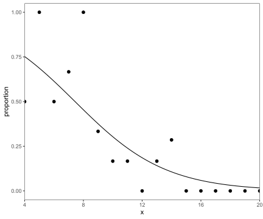
res.glm$coefficients[1]## (Intercept)
## 2.404043senility3 |>
mutate(estimate = exp(res.glm$coefficients[1]+res.glm$coefficients[2]*x)/(1+exp(res.glm$coefficients[1]+res.glm$coefficients[2]*x))) |>
mutate(X = (y-n*estimate)/sqrt(n*estimate*(1-estimate)))## # A tibble: 17 × 6
## x y n proportion estimate X
## <dbl> <dbl> <int> <dbl> <dbl> <dbl>
## 1 4 1 2 0.5 0.752 -0.826
## 2 5 1 1 1 0.687 0.675
## 3 6 1 2 0.5 0.614 -0.330
## 4 7 2 3 0.667 0.535 0.458
## 5 8 2 2 1 0.454 1.55
## 6 9 2 6 0.333 0.376 -0.214
## 7 10 1 6 0.167 0.303 -0.728
## 8 11 1 6 0.167 0.240 -0.419
## 9 12 0 2 0 0.186 -0.675
## 10 13 1 6 0.167 0.142 0.176
## 11 14 2 7 0.286 0.107 1.53
## 12 15 0 3 0 0.0795 -0.509
## 13 16 0 4 0 0.0588 -0.500
## 14 17 0 1 0 0.0433 -0.213
## 15 18 0 1 0 0.0317 -0.181
## 16 19 0 1 0 0.0231 -0.154
## 17 20 0 1 0 0.0168 -0.131res.glm=glm(s~x,family=binomial(link="logit"),data=senility)
summary(res.glm)##
## Call:
## glm(formula = s ~ x, family = binomial(link = "logit"), data = senility)
##
## Coefficients:
## Estimate Std. Error z value Pr(>|z|)
## (Intercept) 2.4040 1.1918 2.017 0.04369 *
## x -0.3235 0.1140 -2.838 0.00453 **
## ---
## Signif. codes: 0 '***' 0.001 '**' 0.01 '*' 0.05 '.' 0.1 ' ' 1
##
## (Dispersion parameter for binomial family taken to be 1)
##
## Null deviance: 61.806 on 53 degrees of freedom
## Residual deviance: 51.017 on 52 degrees of freedom
## AIC: 55.017
##
## Number of Fisher Scoring iterations: 5library(doBy)
waisgrp=summaryBy(s~x,data=senility,FUN=c(sum,length))
names(waisgrp)=c('x','y','n')
waisgrp## # A tibble: 17 × 3
## x y n
## <dbl> <dbl> <dbl>
## 1 4 1 2
## 2 5 1 1
## 3 6 1 2
## 4 7 2 3
## 5 8 2 2
## 6 9 2 6
## 7 10 1 6
## 8 11 1 6
## 9 12 0 2
## 10 13 1 6
## 11 14 2 7
## 12 15 0 3
## 13 16 0 4
## 14 17 0 1
## 15 18 0 1
## 16 19 0 1
## 17 20 0 1res.glm=glm(cbind(y, n-y)~x,family=binomial(link="logit"), data=waisgrp)
summary(res.glm)##
## Call:
## glm(formula = cbind(y, n - y) ~ x, family = binomial(link = "logit"),
## data = waisgrp)
##
## Coefficients:
## Estimate Std. Error z value Pr(>|z|)
## (Intercept) 2.4040 1.1918 2.017 0.04369 *
## x -0.3235 0.1140 -2.838 0.00453 **
## ---
## Signif. codes: 0 '***' 0.001 '**' 0.01 '*' 0.05 '.' 0.1 ' ' 1
##
## (Dispersion parameter for binomial family taken to be 1)
##
## Null deviance: 20.208 on 16 degrees of freedom
## Residual deviance: 9.419 on 15 degrees of freedom
## AIC: 27.792
##
## Number of Fisher Scoring iterations: 5anthers## # A tibble: 6 × 4
## y n storage centrifuge
## <dbl> <dbl> <dbl> <dbl>
## 1 55 102 1 40
## 2 52 99 1 150
## 3 57 108 1 350
## 4 55 76 2 40
## 5 50 81 2 150
## 6 50 90 2 350anthers.sum <- aggregate(anthers[c("n","y")], by = anthers[c("storage")], FUN=sum)
anthers.sum## storage n y
## 1 1 309 164
## 2 2 247 155dput(anthers.sum)## structure(list(storage = c(1, 2), n = c(309, 247), y = c(164,
## 155)), row.names = c(NA, -2L), class = "data.frame")anthers.sum <- structure(list(storage = c(1, 2), n = c(309, 247), y = c(164,
155)), row.names = c(NA, -2L), class = "data.frame")
logit_model <- glm(cbind(y, n-y) ~ storage, data=anthers.sum, family=binomial(link='logit'))
log_model <- glm(cbind(y, n-y) ~ storage, data=anthers.sum, family=binomial(link='log'))
logit_model$coefficients## (Intercept) storage
## -0.2753712 0.3985039log_model$coefficients## (Intercept) storage
## -0.8009865 0.1675116summary(logit_model)##
## Call:
## glm(formula = cbind(y, n - y) ~ storage, family = binomial(link = "logit"),
## data = anthers.sum)
##
## Coefficients:
## Estimate Std. Error z value Pr(>|z|)
## (Intercept) -0.2754 0.2632 -1.046 0.2955
## storage 0.3985 0.1741 2.289 0.0221 *
## ---
## Signif. codes: 0 '***' 0.001 '**' 0.01 '*' 0.05 '.' 0.1 ' ' 1
##
## (Dispersion parameter for binomial family taken to be 1)
##
## Null deviance: 5.2790e+00 on 1 degrees of freedom
## Residual deviance: -3.7748e-14 on 0 degrees of freedom
## AIC: 16.079
##
## Number of Fisher Scoring iterations: 2stats::confint(logit_model)## 2.5 % 97.5 %
## (Intercept) -0.79161864 0.2410017
## storage 0.05841082 0.7414014Newton method:
the log-likelihood function is
\[l=\sum_{i=1}^{N}\left[y_i(\beta_1+\beta_2x_i)-n_i\log\left[1+\exp(\beta_1+\beta_2x_i)\right]+\log{n_i \choose y_i}\right]\]
the score matrix is
\[U=\left[\begin{matrix}
\frac{\partial l}{\partial\beta_1} \\ \frac{\partial l}{\partial\beta_2}
\end{matrix}\right]=\left[\begin{matrix}
\sum(y_i-n_i\pi_i) \\ \sum x_i(y_i-n_i\pi_i)
\end{matrix}\right]\]
\[\pi_i=\frac{\exp(\beta_1+\beta_2x_i)}{1+\exp(\beta_1+\beta_2x_i)}\]
the information matrix is
\[J=\left[\begin{matrix} \sum n_i\pi_i(1-\pi_i) & \sum n_ix_i\pi_i(1-\pi_i) \\ \sum n_ix_i\pi_i(1-\pi_i) & \sum n_ix_i^2\pi_i(1-\pi_i) \end{matrix}\right]\]
The iteration is :
\[J^{(m-1)} b^m=J^{(m-1)} b^{(m-1)}+U^{(m-1)}\]
For a log-likelihood function of a single parameter \(\beta\) , the first three terms of the Taylor series approximation near an estimate \(b\) are
\[\begin{align}l(\beta)&\approx l(b)+(\beta-b)U(b)+\frac{1}{2}(\beta-b)^2U'(b)\\ &=l(b)+(\beta-b)U(b)-\frac{1}{2}(\beta-b)^2J(b)\\ &=-\frac{1}{2}(\beta-b)^2J(b) \end{align}\] when \(U(b)\) is the maximum likelihood estimate, \(U(b)=0\) Then \[l(\beta)-l(b)=-\frac{1}{2}(\beta-b)^2J(b)\] and because \[\mathbb E[(b-\beta)(b-\beta)^T]=J^{-1}\mathbb E(UU^T)J^{-1}=J^{-1}\] because \[J=\mathbb E(UU^T)\] then \[2[l(\beta)-l(b)]=(b-\beta)^2J(b)\sim \chi^2(p)\]
For the one-parameter case, \[b\sim N(\beta, J^{-1})\]
X <- matrix(c(1,1,1,2), ncol=2,
byrow = TRUE)
B=matrix(c(0, 0), ncol = 1, byrow = FALSE)
n <- anthers.sum$n
y <- anthers.sum$y
x <- anthers.sum$storage
for(i in seq(1:6)){
pii = exp(X %*% B)/(1+exp(X %*% B))
npi1_pi = n*pii*(1-pii)
U=matrix(c(sum(y-n*pii),
sum((y-n*pii)*x)),
ncol = 1, byrow = FALSE)
J=matrix(c(sum(npi1_pi),
sum(npi1_pi*x),
sum(npi1_pi*x),
sum(npi1_pi*x*x)),
ncol=2,
byrow = TRUE)
J_1 = solve(J)
B=J_1 %*% (crossprod(J, B)+U)
print(paste0("iter: ", i))
print("coefficients:")
print(B)
print("variances:")
print(diag(J_1))
print("std.error:")
print(sqrt(diag(J_1)))
writeLines("\n")
}## [1] "iter: 1"
## [1] "coefficients:"
## [,1]
## [1,] -0.2641668
## [2,] 0.3871441
## [1] "variances:"
## [1] 0.06797427 0.02913932
## [1] "std.error:"
## [1] 0.2607188 0.1707024
##
##
## [1] "iter: 2"
## [1] "coefficients:"
## [,1]
## [1,] -0.2753545
## [2,] 0.3984872
## [1] "variances:"
## [1] 0.06924687 0.03026490
## [1] "std.error:"
## [1] 0.2631480 0.1739681
##
##
## [1] "iter: 3"
## [1] "coefficients:"
## [,1]
## [1,] -0.2753712
## [2,] 0.3985039
## [1] "variances:"
## [1] 0.06929756 0.03031522
## [1] "std.error:"
## [1] 0.2632443 0.1741127
##
##
## [1] "iter: 4"
## [1] "coefficients:"
## [,1]
## [1,] -0.2753712
## [2,] 0.3985039
## [1] "variances:"
## [1] 0.06929763 0.03031529
## [1] "std.error:"
## [1] 0.2632444 0.1741129
##
##
## [1] "iter: 5"
## [1] "coefficients:"
## [,1]
## [1,] -0.2753712
## [2,] 0.3985039
## [1] "variances:"
## [1] 0.06929763 0.03031529
## [1] "std.error:"
## [1] 0.2632444 0.1741129
##
##
## [1] "iter: 6"
## [1] "coefficients:"
## [,1]
## [1,] -0.2753712
## [2,] 0.3985039
## [1] "variances:"
## [1] 0.06929763 0.03031529
## [1] "std.error:"
## [1] 0.2632444 0.1741129#pi_hat
fitted.values(logit_model)## 1 2
## 0.5307443 0.6275304#linear values
predict(logit_model)## 1 2
## 0.1231327 0.5216365#pi_hat
exp(predict(logit_model))/(1+exp(predict(logit_model)))## 1 2
## 0.5307443 0.6275304x <- anthers.sum$storage
#Logit model odds ratios Constant
exp(coefficients(summary(logit_model))["(Intercept)",1]+coefficients(summary(logit_model))["storage",1]*x[1])## [1] 1.131034#Logit model odds ratios Treatment vs. control
exp(coefficients(summary(logit_model))["storage",1]*(x[2]-x[1]))## [1] 1.489594questionr::odds.ratio(logit_model, level=0.95)## OR 2.5 % 97.5 % p
## (Intercept) 0.75929 0.45311 1.2725 0.29553
## storage 1.48959 1.06015 2.0989 0.02209 *
## ---
## Signif. codes: 0 '***' 0.001 '**' 0.01 '*' 0.05 '.' 0.1 ' ' 1coefficients(summary(logit_model))## Estimate Std. Error z value Pr(>|z|)
## (Intercept) -0.2753712 0.2632444 -1.046066 0.29553034
## storage 0.3985039 0.1741129 2.288767 0.02209287#95% CI of constant
exp(coefficients(summary(logit_model))["(Intercept)",1]+qnorm(c(0.025,0.975))*coefficients(summary(logit_model))["(Intercept)",2])## [1] 0.4532458 1.2719847#95% CI of treatment vs constant
exp(coefficients(summary(logit_model))["storage",1]+qnorm(c(0.025,0.975))*coefficients(summary(logit_model))["storage",2])## [1] 1.058919 2.095430#Exercises 7.1
hiroshima## # A tibble: 6 × 4
## radiation leukemia `other cancer` `total cancers`
## <chr> <dbl> <dbl> <dbl>
## 1 0 13 378 391
## 2 1 to 9 5 200 205
## 3 10 to 49 5 151 156
## 4 50 to 99 3 47 50
## 5 100 to 199 4 31 35
## 6 200 + 18 33 51hiroshima2 <- hiroshima |> mutate(dosage=as.integer(str_split(hiroshima$radiation, " ") |> map_chr(\(x) x[1])))
hiroshima2## # A tibble: 6 × 5
## radiation leukemia `other cancer` `total cancers` dosage
## <chr> <dbl> <dbl> <dbl> <int>
## 1 0 13 378 391 0
## 2 1 to 9 5 200 205 1
## 3 10 to 49 5 151 156 10
## 4 50 to 99 3 47 50 50
## 5 100 to 199 4 31 35 100
## 6 200 + 18 33 51 200model.hiroshima <- glm(cbind(leukemia, `other cancer`) ~ dosage, data=hiroshima2, family=binomial(link='logit'))
summary(model.hiroshima)##
## Call:
## glm(formula = cbind(leukemia, `other cancer`) ~ dosage, family = binomial(link = "logit"),
## data = hiroshima2)
##
## Coefficients:
## Estimate Std. Error z value Pr(>|z|)
## (Intercept) -3.488973 0.204062 -17.098 < 2e-16 ***
## dosage 0.014410 0.001817 7.932 2.15e-15 ***
## ---
## Signif. codes: 0 '***' 0.001 '**' 0.01 '*' 0.05 '.' 0.1 ' ' 1
##
## (Dispersion parameter for binomial family taken to be 1)
##
## Null deviance: 54.35089 on 5 degrees of freedom
## Residual deviance: 0.43206 on 4 degrees of freedom
## AIC: 26.097
##
## Number of Fisher Scoring iterations: 4n_total <- hiroshima2$`total cancers`
observed <- hiroshima2$leukemia
predict(model.hiroshima)## 1 2 3 4 5 6
## -3.4889730 -3.4745628 -3.3448706 -2.7684611 -2.0479491 -0.6069252fitted.values(model.hiroshima)*n_total## 1 2 3 4 5 6
## 11.584398 6.159169 5.313911 2.952623 3.999092 17.990807exp(predict(model.hiroshima))*n_total/(1+exp(predict(model.hiroshima)))## 1 2 3 4 5 6
## 11.584398 6.159169 5.313911 2.952623 3.999092 17.990807estimated <- fitted.values(model.hiroshima)*n_totalhiroshima2 <- hiroshima2 |> mutate(OL=observed,
OO=n_total-observed,
EL=estimated,
EO=n_total-estimated)
hiroshima2## # A tibble: 6 × 9
## radiation leukemia `other cancer` `total cancers` dosage OL OO EL
## <chr> <dbl> <dbl> <dbl> <int> <dbl> <dbl> <dbl>
## 1 0 13 378 391 0 13 378 11.6
## 2 1 to 9 5 200 205 1 5 200 6.16
## 3 10 to 49 5 151 156 10 5 151 5.31
## 4 50 to 99 3 47 50 50 3 47 2.95
## 5 100 to 199 4 31 35 100 4 31 4.00
## 6 200 + 18 33 51 200 18 33 18.0
## # ℹ 1 more variable: EO <dbl>hiroshima2[hiroshima2$dosage == 0,]## # A tibble: 1 × 9
## radiation leukemia `other cancer` `total cancers` dosage OL OO EL
## <chr> <dbl> <dbl> <dbl> <int> <dbl> <dbl> <dbl>
## 1 0 13 378 391 0 13 378 11.6
## # ℹ 1 more variable: EO <dbl>hiroshima2[hiroshima2$dosage > 0 & hiroshima2$dosage <= 50,]## # A tibble: 3 × 9
## radiation leukemia `other cancer` `total cancers` dosage OL OO EL
## <chr> <dbl> <dbl> <dbl> <int> <dbl> <dbl> <dbl>
## 1 1 to 9 5 200 205 1 5 200 6.16
## 2 10 to 49 5 151 156 10 5 151 5.31
## 3 50 to 99 3 47 50 50 3 47 2.95
## # ℹ 1 more variable: EO <dbl>hiroshima2[hiroshima2$dosage > 50,]## # A tibble: 2 × 9
## radiation leukemia `other cancer` `total cancers` dosage OL OO EL
## <chr> <dbl> <dbl> <dbl> <int> <dbl> <dbl> <dbl>
## 1 100 to 199 4 31 35 100 4 31 4.00
## 2 200 + 18 33 51 200 18 33 18.0
## # ℹ 1 more variable: EO <dbl>hiroshima2[hiroshima2$dosage == 0,] |> summarize(across(6:9, sum)) |> as.data.frame()## OL OO EL EO
## 1 13 378 11.5844 379.4156hiroshima2[hiroshima2$dosage > 0 & hiroshima2$dosage <= 50,] |> summarize(across(6:9, sum)) |> as.data.frame()## OL OO EL EO
## 1 13 398 14.4257 396.5743hiroshima2[hiroshima2$dosage > 50,] |> summarize(across(6:9, sum)) |> as.data.frame()## OL OO EL EO
## 1 22 64 21.9899 64.0101#XHL^2
X_HL <- sum(c((13-11.5844)^2/11.5844,
(378-379.4156)^2/379.4156,
(13-14.4257)^2/14.4257,
(398-396.5743)^2/396.5743,
(22-21.9899)^2/21.9899,
(64-64.0101)^2/64.0101
))
X_HL## [1] 0.32430071-pchisq(X_HL, df=1)## [1] 0.5690345#Exercises 7.3
graduates## # A tibble: 60 × 5
## year survive total faculty sex
## <dbl> <chr> <chr> <chr> <chr>
## 1 1938 18 22 medicine men
## 2 1939 16 23 medicine men
## 3 1940 7 17 medicine men
## 4 1941 12 25 medicine men
## 5 1942 24 50 medicine men
## 6 1943 16 21 medicine men
## 7 1944 22 32 medicine men
## 8 1945 12 14 medicine men
## 9 1946 22 34 medicine men
## 10 1947 28 37 medicine men
## 11 1938 16 30 arts men
## 12 1939 13 22 arts men
## 13 1940 11 25 arts men
## 14 1941 12 14 arts men
## 15 1942 8 12 arts men
## 16 1943 11 20 arts men
## 17 1944 4 10 arts men
## 18 1945 4 12 arts men
## 19 1946 * * arts men
## 20 1947 13 23 arts men
## 21 1938 9 14 science men
## 22 1939 9 12 science men
## 23 1940 12 19 science men
## 24 1941 12 15 science men
## 25 1942 20 28 science men
## # ℹ 35 more rowsgraduates$survive = as.numeric(graduates$survive)
graduates$total = as.numeric(graduates$total)
graduates## # A tibble: 60 × 5
## year survive total faculty sex
## <dbl> <dbl> <dbl> <chr> <chr>
## 1 1938 18 22 medicine men
## 2 1939 16 23 medicine men
## 3 1940 7 17 medicine men
## 4 1941 12 25 medicine men
## 5 1942 24 50 medicine men
## 6 1943 16 21 medicine men
## 7 1944 22 32 medicine men
## 8 1945 12 14 medicine men
## 9 1946 22 34 medicine men
## 10 1947 28 37 medicine men
## 11 1938 16 30 arts men
## 12 1939 13 22 arts men
## 13 1940 11 25 arts men
## 14 1941 12 14 arts men
## 15 1942 8 12 arts men
## 16 1943 11 20 arts men
## 17 1944 4 10 arts men
## 18 1945 4 12 arts men
## 19 1946 NA NA arts men
## 20 1947 13 23 arts men
## 21 1938 9 14 science men
## 22 1939 9 12 science men
## 23 1940 12 19 science men
## 24 1941 12 15 science men
## 25 1942 20 28 science men
## # ℹ 35 more rowsaggregate(graduates[c("survive","total")], by = graduates[c("sex")], FUN=sum, na.rm = TRUE) |> mutate(ratio=survive/total)## sex survive total ratio
## 1 men 536 799 0.6708385
## 2 women 184 218 0.8440367graduates$year <- factor(graduates$year)
model.graduates <- glm(cbind(survive, total-survive) ~ year, data=graduates, family=binomial(link='logit'),
na.action = na.omit)
summary(model.graduates)##
## Call:
## glm(formula = cbind(survive, total - survive) ~ year, family = binomial(link = "logit"),
## data = graduates, na.action = na.omit)
##
## Coefficients:
## Estimate Std. Error z value Pr(>|z|)
## (Intercept) 0.69315 0.21004 3.300 0.000967 ***
## year1939 0.06899 0.31064 0.222 0.824238
## year1940 -0.18760 0.29378 -0.639 0.523103
## year1941 0.21511 0.31662 0.679 0.496882
## year1942 -0.17261 0.28810 -0.599 0.549076
## year1943 0.43672 0.32729 1.334 0.182096
## year1944 0.34093 0.29407 1.159 0.246323
## year1945 0.62614 0.30175 2.075 0.037988 *
## year1946 0.07411 0.39592 0.187 0.851521
## year1947 0.40547 0.28143 1.441 0.149667
## ---
## Signif. codes: 0 '***' 0.001 '**' 0.01 '*' 0.05 '.' 0.1 ' ' 1
##
## (Dispersion parameter for binomial family taken to be 1)
##
## Null deviance: 116.09 on 57 degrees of freedom
## Residual deviance: 101.04 on 48 degrees of freedom
## (2 observations deleted due to missingness)
## AIC: 269.78
##
## Number of Fisher Scoring iterations: 4graduates$sex <- factor(graduates$sex)
graduates$faculty <- factor(graduates$faculty)
model.graduates2 <- glm(cbind(survive, total-survive) ~ faculty,
data=graduates, family=binomial(link='logit'),
na.action = na.omit)
summary(model.graduates2)##
## Call:
## glm(formula = cbind(survive, total - survive) ~ faculty, family = binomial(link = "logit"),
## data = graduates, na.action = na.omit)
##
## Coefficients:
## Estimate Std. Error z value Pr(>|z|)
## (Intercept) 0.7117 0.1180 6.029 1.65e-09 ***
## facultyengineering 0.2595 0.2220 1.169 0.24243
## facultymedicine -0.1205 0.1726 -0.698 0.48511
## facultyscience 0.7207 0.1931 3.731 0.00019 ***
## ---
## Signif. codes: 0 '***' 0.001 '**' 0.01 '*' 0.05 '.' 0.1 ' ' 1
##
## (Dispersion parameter for binomial family taken to be 1)
##
## Null deviance: 116.086 on 57 degrees of freedom
## Residual deviance: 94.225 on 54 degrees of freedom
## (2 observations deleted due to missingness)
## AIC: 250.96
##
## Number of Fisher Scoring iterations: 4model.graduates.sex <- glm(cbind(survive, total-survive) ~ sex,
data=graduates, family=binomial(link='logit'),
na.action = na.omit)
summary(model.graduates.sex)##
## Call:
## glm(formula = cbind(survive, total - survive) ~ sex, family = binomial(link = "logit"),
## data = graduates, na.action = na.omit)
##
## Coefficients:
## Estimate Std. Error z value Pr(>|z|)
## (Intercept) 0.71198 0.07529 9.457 < 2e-16 ***
## sexwomen 0.97660 0.20128 4.852 1.22e-06 ***
## ---
## Signif. codes: 0 '***' 0.001 '**' 0.01 '*' 0.05 '.' 0.1 ' ' 1
##
## (Dispersion parameter for binomial family taken to be 1)
##
## Null deviance: 116.09 on 57 degrees of freedom
## Residual deviance: 88.84 on 56 degrees of freedom
## (2 observations deleted due to missingness)
## AIC: 241.58
##
## Number of Fisher Scoring iterations: 4model.graduates.interact <- glm(cbind(survive, total-survive) ~ faculty*sex,
data=graduates, family=binomial(link='logit'),
na.action = na.omit)
summary(model.graduates.interact)##
## Call:
## glm(formula = cbind(survive, total - survive) ~ faculty * sex,
## family = binomial(link = "logit"), data = graduates, na.action = na.omit)
##
## Coefficients: (2 not defined because of singularities)
## Estimate Std. Error z value Pr(>|z|)
## (Intercept) 0.1911 0.1550 1.233 0.21774
## facultyengineering 0.7801 0.2437 3.201 0.00137 **
## facultymedicine 0.4001 0.1997 2.004 0.04511 *
## facultyscience 0.9968 0.2239 4.452 8.50e-06 ***
## sexwomen 1.2112 0.2534 4.780 1.76e-06 ***
## facultyengineering:sexwomen NA NA NA NA
## facultymedicine:sexwomen NA NA NA NA
## facultyscience:sexwomen 0.5627 0.6640 0.848 0.39671
## ---
## Signif. codes: 0 '***' 0.001 '**' 0.01 '*' 0.05 '.' 0.1 ' ' 1
##
## (Dispersion parameter for binomial family taken to be 1)
##
## Null deviance: 116.086 on 57 degrees of freedom
## Residual deviance: 56.765 on 52 degrees of freedom
## (2 observations deleted due to missingness)
## AIC: 217.5
##
## Number of Fisher Scoring iterations: 5women <- graduates[graduates$sex == "women",]
men <- graduates[graduates$sex == "men",]
model.graduates.women <- glm(cbind(survive, total-survive) ~ faculty,
data=women, family=binomial(link='logit'),
na.action = na.omit)
summary(model.graduates.women)##
## Call:
## glm(formula = cbind(survive, total - survive) ~ faculty, family = binomial(link = "logit"),
## data = women, na.action = na.omit)
##
## Coefficients:
## Estimate Std. Error z value Pr(>|z|)
## (Intercept) 1.4023 0.2005 6.994 2.66e-12 ***
## facultyscience 1.5595 0.6251 2.495 0.0126 *
## ---
## Signif. codes: 0 '***' 0.001 '**' 0.01 '*' 0.05 '.' 0.1 ' ' 1
##
## (Dispersion parameter for binomial family taken to be 1)
##
## Null deviance: 22.555 on 19 degrees of freedom
## Residual deviance: 13.739 on 18 degrees of freedom
## AIC: 46.642
##
## Number of Fisher Scoring iterations: 5model.graduates.men <- glm(cbind(survive, total-survive) ~ faculty,
data=men, family=binomial(link='logit'),
na.action = na.omit)
summary(model.graduates.men)##
## Call:
## glm(formula = cbind(survive, total - survive) ~ faculty, family = binomial(link = "logit"),
## data = men, na.action = na.omit)
##
## Coefficients:
## Estimate Std. Error z value Pr(>|z|)
## (Intercept) 0.1911 0.1550 1.233 0.21774
## facultyengineering 0.7801 0.2437 3.201 0.00137 **
## facultymedicine 0.4001 0.1997 2.004 0.04511 *
## facultyscience 0.9968 0.2239 4.452 8.5e-06 ***
## ---
## Signif. codes: 0 '***' 0.001 '**' 0.01 '*' 0.05 '.' 0.1 ' ' 1
##
## (Dispersion parameter for binomial family taken to be 1)
##
## Null deviance: 66.285 on 37 degrees of freedom
## Residual deviance: 43.026 on 34 degrees of freedom
## (2 observations deleted due to missingness)
## AIC: 170.86
##
## Number of Fisher Scoring iterations: 4Chapter8 Nominal and Ordinal Logistic Regression
8.2 Multinomial distribution
If \((X_1,\cdots, X_n)\) is a vector with multinomial distribution, proof that \(\text{Cov}(X_i,X_j)=-rp_ip_j\), \(i\neq j\) where \(r\) is the number of trials of the experiment, \(p_i\) is the probability of success for the variable \(X_i\). \[fdp=f(x_1,...x_n)={r!\over{x_1!x_2!\cdots x_n!}}p_1^{x_1}\cdots p_n^{x_n} \] if \(x_1+x_2+\cdots +x_n=r\)
We can use indicator random variables to help simplify the covariance expression. We can interpret the problem as \(r\) independent rolls of an \(n\) sided die. Let \(X_i\) be the number of rolls that result in side \(i\) facing up, and let \(I_{k}^{(i)}\) be an indicator equal to \(1\) when roll \(k\) is equal to \(i\) and \(0\) otherwise. Then, we can express \(X_i\) and \(X_j\) as follows:
\[\begin{equation} X_i = \sum_{k=1}^{r} I_{k}^{(i)}~~~\mathrm{and}~~~X_j = \sum_{k=1}^{r} I_{k}^{(j)} \end{equation}\]
Let’s re-write the covariance using indicators: \[\begin{equation} \mathrm{Cov}(X_i,X_j) = E[X_i X_j] - E[X_i]E[X_j] \end{equation}\] Let’s compute the first term: \[\begin{eqnarray} E[X_i X_j] &=& E\bigg[(\sum_{k=1}^{r}I_{k}^{(i)}) (\sum_{l=1}^{r}I_{l}^{(j)})\bigg] = \sum_{k=l}E\big[I_{k}^{(i)}I_{l}^{(j)}\big] + \sum_{k\neq l}E\big[I_{k}^{(i)}I_{l}^{(j)}\big] = \\ &=& 0 + \sum_{k\neq l}E\big[I_{k}^{(i)}\big] E\big[I_{l}^{(j)}\big] = \sum_{k\neq l} p_i p_j = (r^2 - r)p_i p_j \end{eqnarray}\] where we expanded the product of sums, used linearity of expectation and the fact that when \(k=l\) we can’t simultaneously roll \(i\) and \(j\) on the same trial \(k=l\) (making the product of indicators zero) Finally we applied independence of rolls that enabled us to write it as a product of probabilities. Let’s compute the remaining term: \[\begin{equation} E[X_i] = E[\sum_{k=1}^{r}I_{k}^{(i)}] = \sum_{k=1}^{r}E[I_{k}^{(i)}] = rp_i \end{equation}\] Therefore, the covariance equals: \[\begin{equation} \mathrm{Cov}(X_i,X_j) = E[X_i X_j] - E[X_i]E[X_j] = (r^2-r)p_ip_j - r^2p_ip_j = -r p_i p_j \end{equation}\] Notice that \(\mathrm{Cov}(X_i, X_j) = -r p_i p_j < 0\) is negative, this makes sense intuitively since for a fixed number of rolls \(r\), if we roll many outcomes \(i\), this reduces the number of possible outcomes \(j\), and therefore \(X_i\) and \(X_j\) are negatively correlated! reference
Cars## # A tibble: 18 × 4
## sex age response frequency
## <chr> <chr> <chr> <dbl>
## 1 women 18-23 no/little 26
## 2 women 18-23 important 12
## 3 women 18-23 very important 7
## 4 women 24-40 no/little 9
## 5 women 24-40 important 21
## 6 women 24-40 very important 15
## 7 women > 40 no/little 5
## 8 women > 40 important 14
## 9 women > 40 very important 41
## 10 men 18-23 no/little 40
## 11 men 18-23 important 17
## 12 men 18-23 very important 8
## 13 men 24-40 no/little 17
## 14 men 24-40 important 15
## 15 men 24-40 very important 12
## 16 men > 40 no/little 8
## 17 men > 40 important 15
## 18 men > 40 very important 18#Figure 8.1
library(tidyverse)
library(ggprism)
Cars |> group_by(sex, age) |> mutate(
age = factor(age, levels = c("18-23", "24-40", "> 40")),
proportion = frequency/sum(frequency)
) |> ggplot(aes(x = age, y = proportion, group = response)) +
geom_point(size=2) +
geom_line(aes(color = response, linetype = response), size=1) +
facet_wrap(~sex) + theme_bw() + theme(
# Hide panel borders and remove grid lines
#panel.border = element_line(colour = "black"),
panel.grid.major = element_blank(),
panel.grid.minor = element_blank(),
# Change axis line
#axis.line = element_line(colour = "black")
) + scale_y_continuous(limits = c(0, 0.8), expand = c(0, 0)) +
theme_prism(palette = "black_and_white", base_size = 16) +
scale_colour_prism(palette = "colorblind_safe")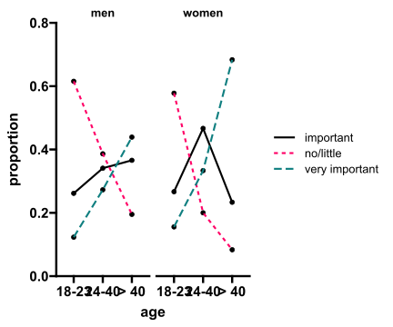
factor(Cars$age)## [1] 18-23 18-23 18-23 24-40 24-40 24-40 > 40 > 40 > 40 18-23 18-23 18-23
## [13] 24-40 24-40 24-40 > 40 > 40 > 40
## Levels: > 40 18-23 24-40factor(Cars$sex)## [1] women women women women women women women women women men men men
## [13] men men men men men men
## Levels: men womenfactor(Cars$response)## [1] no/little important very important no/little important
## [6] very important no/little important very important no/little
## [11] important very important no/little important very important
## [16] no/little important very important
## Levels: important no/little very importantlibrary(nnet)
Cars2 <- Cars |> group_by(sex, age) |> mutate(
age = factor(age, levels = c("18-23", "24-40", "> 40")),
sex = factor(sex, levels = c("women", "men")),
response = factor(response, levels = c("no/little", "important", "very important"))
)
res.cars=multinom(response~age+sex, weights=frequency,data=Cars2)## # weights: 15 (8 variable)
## initial value 329.583687
## iter 10 value 290.490920
## final value 290.351098
## convergedsummary(res.cars)## Call:
## multinom(formula = response ~ age + sex, data = Cars2, weights = frequency)
##
## Coefficients:
## (Intercept) age24-40 age> 40 sexmen
## important -0.5907992 1.128268 1.587709 -0.3881301
## very important -1.0390726 1.478104 2.916757 -0.8130202
##
## Std. Errors:
## (Intercept) age24-40 age> 40 sexmen
## important 0.2839756 0.3416449 0.4028997 0.3005115
## very important 0.3305014 0.4009256 0.4229276 0.3210382
##
## Residual Deviance: 580.7022
## AIC: 596.7022summary(res.cars)$coefficients## (Intercept) age24-40 age> 40 sexmen
## important -0.5907992 1.128268 1.587709 -0.3881301
## very important -1.0390726 1.478104 2.916757 -0.8130202summary(res.cars)$standard.errors## (Intercept) age24-40 age> 40 sexmen
## important 0.2839756 0.3416449 0.4028997 0.3005115
## very important 0.3305014 0.4009256 0.4229276 0.3210382#Odds ratio
exp(summary(res.cars)$coefficients)## (Intercept) age24-40 age> 40 sexmen
## important 0.5538844 3.090300 4.892529 0.6783241
## very important 0.3537826 4.384626 18.481251 0.4435165#95% CI
exp(summary(res.cars)$coefficients+qnorm(0.025)*summary(res.cars)$standard.errors)## (Intercept) age24-40 age> 40 sexmen
## important 0.3174671 1.581947 2.221184 0.3763929
## very important 0.1851029 1.998316 8.067421 0.2363968exp(summary(res.cars)$coefficients+qnorm(0.975)*summary(res.cars)$standard.errors)## (Intercept) age24-40 age> 40 sexmen
## important 0.9663615 6.036836 10.77661 1.2224555
## very important 0.6761761 9.620575 42.33777 0.8321049#(95% confidence interval)
exp(summary(res.cars)$coefficients - summary(res.cars)$standard.errors * 1.96)## (Intercept) age24-40 age> 40 sexmen
## important 0.3174638 1.581928 2.221152 0.3763888
## very important 0.1851007 1.998287 8.067298 0.2363941exp(summary(res.cars)$coefficients + summary(res.cars)$standard.errors * 1.96)## (Intercept) age24-40 age> 40 sexmen
## important 0.9663714 6.036910 10.77677 1.2224687
## very important 0.6761841 9.620714 42.33842 0.8321145logLik(res.cars)## 'log Lik.' -290.3511 (df=8)#minimal model
res.cars.mini=multinom(response~1, weights=frequency,data=Cars2)## # weights: 6 (2 variable)
## initial value 329.583687
## final value 329.272024
## convergedsummary(res.cars.mini)## Call:
## multinom(formula = response ~ 1, data = Cars2, weights = frequency)
##
## Coefficients:
## (Intercept)
## important -0.11066559
## very important -0.03883986
##
## Std. Errors:
## (Intercept)
## important 0.1419933
## very important 0.1393729
##
## Residual Deviance: 658.544
## AIC: 662.544logLik(res.cars.mini)## 'log Lik.' -329.272 (df=2)# the likelihood ratio chi-squared statistic C
2*(c(logLik(res.cars) - logLik(res.cars.mini)))## [1] 77.84185#degrees of freedom
8-2## [1] 6#p value with chisq(6)
1-pchisq(2*(c(logLik(res.cars) - logLik(res.cars.mini))), df=6)## [1] 9.992007e-15#pseudo R^2
c((logLik(res.cars.mini) - logLik(res.cars))/logLik(res.cars.mini))## [1] 0.118203#AIC
res.cars$AIC## [1] 596.7022-2* logLik(res.cars)+2*res.cars$edf## 'log Lik.' 596.7022 (df=8)attr(logLik(res.cars), "df")## [1] 8#coefficients
coef(res.cars)## (Intercept) age24-40 age> 40 sexmen
## important -0.5907992 1.128268 1.587709 -0.3881301
## very important -1.0390726 1.478104 2.916757 -0.8130202#fitted values
fitted(res.cars)## no/little important very important
## 1 0.52420049 0.2903465 0.1854530
## 2 0.52420049 0.2903465 0.1854530
## 3 0.52420049 0.2903465 0.1854530
## 4 0.23458355 0.4015294 0.3638870
## 5 0.23458355 0.4015294 0.3638870
## 6 0.23458355 0.4015294 0.3638870
## 7 0.09757772 0.2644254 0.6379968
## 8 0.09757772 0.2644254 0.6379968
## 9 0.09757772 0.2644254 0.6379968
## 10 0.65247678 0.2451441 0.1023791
## 11 0.65247678 0.2451441 0.1023791
## 12 0.65247678 0.2451441 0.1023791
## 13 0.35099404 0.4075274 0.2414786
## 14 0.35099404 0.4075274 0.2414786
## 15 0.35099404 0.4075274 0.2414786
## 16 0.17427519 0.3203504 0.5053744
## 17 0.17427519 0.3203504 0.5053744
## 18 0.17427519 0.3203504 0.5053744#Table 8.3
fitted(res.cars) |> bind_cols(Obs.freq = Cars2$frequency,
sex = Cars2$sex,
age = Cars2$age) |>
group_by(sex, age) |>
mutate(group.total = sum(Obs.freq)) |>
mutate(fitted.no.little = `no/little`*group.total,
fitted.important = important*group.total,
fitted.very.important = `very important`*group.total,
residual.no.little = (Obs.freq-fitted.no.little)/sqrt(fitted.no.little),
residual.important = (Obs.freq-fitted.important)/sqrt(fitted.important),
residual.very.important = (Obs.freq-fitted.very.important)/sqrt(fitted.very.important)
) |> as.data.frame()## no/little important very important Obs.freq sex age group.total
## 1 0.52420049 0.2903465 0.1854530 26 women 18-23 45
## 2 0.52420049 0.2903465 0.1854530 12 women 18-23 45
## 3 0.52420049 0.2903465 0.1854530 7 women 18-23 45
## 4 0.23458355 0.4015294 0.3638870 9 women 24-40 45
## 5 0.23458355 0.4015294 0.3638870 21 women 24-40 45
## 6 0.23458355 0.4015294 0.3638870 15 women 24-40 45
## 7 0.09757772 0.2644254 0.6379968 5 women > 40 60
## 8 0.09757772 0.2644254 0.6379968 14 women > 40 60
## 9 0.09757772 0.2644254 0.6379968 41 women > 40 60
## 10 0.65247678 0.2451441 0.1023791 40 men 18-23 65
## 11 0.65247678 0.2451441 0.1023791 17 men 18-23 65
## 12 0.65247678 0.2451441 0.1023791 8 men 18-23 65
## 13 0.35099404 0.4075274 0.2414786 17 men 24-40 44
## 14 0.35099404 0.4075274 0.2414786 15 men 24-40 44
## 15 0.35099404 0.4075274 0.2414786 12 men 24-40 44
## 16 0.17427519 0.3203504 0.5053744 8 men > 40 41
## 17 0.17427519 0.3203504 0.5053744 15 men > 40 41
## 18 0.17427519 0.3203504 0.5053744 18 men > 40 41
## fitted.no.little fitted.important fitted.very.important residual.no.little
## 1 23.589022 13.06559 8.345386 0.4964074
## 2 23.589022 13.06559 8.345386 -2.3861175
## 3 23.589022 13.06559 8.345386 -3.4155907
## 4 10.556260 18.06882 16.374916 -0.4789906
## 5 10.556260 18.06882 16.374916 3.2144083
## 6 10.556260 18.06882 16.374916 1.3677088
## 7 5.854663 15.86553 38.279811 -0.3532191
## 8 5.854663 15.86553 38.279811 3.3663407
## 9 5.854663 15.86553 38.279811 14.5250200
## 10 42.410991 15.93437 6.654642 -0.3702170
## 11 42.410991 15.93437 6.654642 -3.9019562
## 12 42.410991 15.93437 6.654642 -5.2839411
## 13 15.443738 17.93121 10.625057 0.3960104
## 14 15.443738 17.93121 10.625057 -0.1129146
## 15 15.443738 17.93121 10.625057 -0.8763021
## 16 7.145283 13.13437 20.720349 0.3197517
## 17 7.145283 13.13437 20.720349 2.9384673
## 18 7.145283 13.13437 20.720349 4.0607740
## residual.important residual.very.important
## 1 3.5783433 6.1113199
## 2 -0.2947993 1.2650810
## 3 -1.6780645 -0.4657187
## 4 -2.1334675 -1.8225001
## 5 0.6895678 1.1429574
## 6 -0.7219499 -0.3397713
## 7 -2.7278690 -5.3789308
## 8 -0.4683537 -3.9242838
## 9 6.3101920 0.4396572
## 10 6.0287861 12.9262641
## 11 0.2669563 4.0103582
## 12 -1.9876727 0.5215254
## 13 -0.2199079 1.9557381
## 14 -0.6922158 1.3421677
## 15 -1.4006778 0.4218122
## 16 -1.4167148 -2.7944767
## 17 0.5147796 -1.2566780
## 18 1.3425629 -0.5976214#Table 8.3
options(paged.print = FALSE,
pillar.print_max = 25,
pillar.print_min = 25)
fitted(res.cars) |> as_tibble() |> distinct(.keep_all = TRUE)|> pivot_longer(
cols = c('no/little', 'important', 'very important'),
names_to = "Importance.Rating",
values_to = "Estimated.probability"
) |> bind_cols(Obs.freq = Cars2$frequency,
sex = Cars2$sex,
age = Cars2$age) |>
group_by(sex, age) |>
mutate(group.total = sum(Obs.freq)) |>
mutate(fitted.value = Estimated.probability*group.total,
Pearson.residual = (Obs.freq-fitted.value)/sqrt(fitted.value)
)## # A tibble: 18 × 8
## # Groups: sex, age [6]
## Importance.Rating Estimated.probability Obs.freq sex age group.total
## <chr> <dbl> <dbl> <fct> <fct> <dbl>
## 1 no/little 0.524 26 women 18-23 45
## 2 important 0.290 12 women 18-23 45
## 3 very important 0.185 7 women 18-23 45
## 4 no/little 0.235 9 women 24-40 45
## 5 important 0.402 21 women 24-40 45
## 6 very important 0.364 15 women 24-40 45
## 7 no/little 0.0976 5 women > 40 60
## 8 important 0.264 14 women > 40 60
## 9 very important 0.638 41 women > 40 60
## 10 no/little 0.652 40 men 18-23 65
## 11 important 0.245 17 men 18-23 65
## 12 very important 0.102 8 men 18-23 65
## 13 no/little 0.351 17 men 24-40 44
## 14 important 0.408 15 men 24-40 44
## 15 very important 0.241 12 men 24-40 44
## 16 no/little 0.174 8 men > 40 41
## 17 important 0.320 15 men > 40 41
## 18 very important 0.505 18 men > 40 41
## # ℹ 2 more variables: fitted.value <dbl>, Pearson.residual <dbl>sum.squared.residuals <- fitted(res.cars) |> as_tibble() |> distinct(.keep_all = TRUE)|> pivot_longer(
cols = c('no/little', 'important', 'very important'),
names_to = "Importance.Rating",
values_to = "Estimated.probability"
) |> bind_cols(Obs.freq = Cars2$frequency,
sex = Cars2$sex,
age = Cars2$age) |>
group_by(sex, age) |>
mutate(group.total = sum(Obs.freq)) |>
mutate(fitted.value = Estimated.probability*group.total,
Pearson.residual = (Obs.freq-fitted.value)/sqrt(fitted.value)
) |> ungroup() |>
summarize(sum(Pearson.residual^2))
sum.squared.residuals## # A tibble: 1 × 1
## `sum(Pearson.residual^2)`
## <dbl>
## 1 3.93res.cars.max=multinom(response~age+sex+age*sex, weights=frequency,data=Cars2)## # weights: 21 (12 variable)
## initial value 329.583687
## iter 10 value 289.028791
## final value 288.381742
## convergedres.cars.max## Call:
## multinom(formula = response ~ age + sex + age * sex, data = Cars2,
## weights = frequency)
##
## Coefficients:
## (Intercept) age24-40 age> 40 sexmen age24-40:sexmen
## important -0.7731881 1.620480 1.802883 -0.08249128 -0.8899378
## very important -1.3121701 1.822993 3.416376 -0.29728385 -0.5618162
## age> 40:sexmen
## important -0.3185948
## very important -0.9959994
##
## Residual Deviance: 576.7635
## AIC: 600.7635summary(res.cars.max)## Call:
## multinom(formula = response ~ age + sex + age * sex, data = Cars2,
## weights = frequency)
##
## Coefficients:
## (Intercept) age24-40 age> 40 sexmen age24-40:sexmen
## important -0.7731881 1.620480 1.802883 -0.08249128 -0.8899378
## very important -1.3121701 1.822993 3.416376 -0.29728385 -0.5618162
## age> 40:sexmen
## important -0.3185948
## very important -0.9959994
##
## Std. Errors:
## (Intercept) age24-40 age> 40 sexmen age24-40:sexmen
## important 0.3489915 0.5296461 0.6270856 0.4534522 0.6998853
## very important 0.4258132 0.5992447 0.6369618 0.5756024 0.8070020
## age> 40:sexmen
## important 0.8177568
## very important 0.8580658
##
## Residual Deviance: 576.7635
## AIC: 600.7635logLik(res.cars.max)## 'log Lik.' -288.3817 (df=12)attr(logLik(res.cars.max), "df")## [1] 12#the deviance
2*(logLik(res.cars.max) - logLik(res.cars))## 'log Lik.' 3.938713 (df=12)#The degrees of freedom associated with this deviance
attr(logLik(res.cars.max), "df") - attr(logLik(res.cars), "df")## [1] 4difference <- 2*(logLik(res.cars.max) - logLik(res.cars))
difference## 'log Lik.' 3.938713 (df=12)1-pchisq(difference,df=4)## 'log Lik.' 0.4143637 (df=12)library(MASS)
res.polr=polr(response~age+sex, weights=frequency,data=Cars2)
res.polr## Call:
## polr(formula = response ~ age + sex, data = Cars2, weights = frequency)
##
## Coefficients:
## age24-40 age> 40 sexmen
## 1.1470997 2.2324597 -0.5762262
##
## Intercepts:
## no/little|important important|very important
## 0.04353714 1.65497448
##
## Residual Deviance: 581.2956
## AIC: 591.2956logLik(res.polr)## 'log Lik.' -290.6478 (df=5)summary(res.polr)## Call:
## polr(formula = response ~ age + sex, data = Cars2, weights = frequency)
##
## Coefficients:
## Value Std. Error t value
## age24-40 1.1471 0.2776 4.132
## age> 40 2.2325 0.2915 7.659
## sexmen -0.5762 0.2262 -2.548
##
## Intercepts:
## Value Std. Error t value
## no/little|important 0.0435 0.2323 0.1874
## important|very important 1.6550 0.2556 6.4744
##
## Residual Deviance: 581.2956
## AIC: 591.2956coefficients <- summary(res.polr)$coefficients
coefficients## Value Std. Error t value
## age24-40 1.14709969 0.2776161 4.131964
## age> 40 2.23245971 0.2914908 7.658766
## sexmen -0.57622616 0.2261865 -2.547571
## no/little|important 0.04353714 0.2322724 0.187440
## important|very important 1.65497448 0.2556182 6.474401The following proportional odds model was fitted to these data:
\[\log\left(\frac{\pi_1}{\pi_2+\pi_3}\right)=\beta_{01}+\beta_{1}x_1+\beta_{2}x_2+\beta_{3}x_3\] \[\log\left(\frac{\pi_1+\pi_2}{\pi_3}\right)=\beta_{02}+\beta_{1}x_1+\beta_{2}x_2+\beta_{3}x_3\]
#Table8.4
tibble(Estimate_b= c(coefficients[4,1], #beta_01
coefficients[5,1], #beta_02
coefficients[3,1], #beta_1
coefficients[1,1], #beta_2
coefficients[2,1]),#beta_3
Standard_error_b= c(coefficients[4,2],
coefficients[5,2],
coefficients[3,2],
coefficients[1,2],
coefficients[2,2]),
Odds_ratio_OR=exp(Estimate_b),
`95%_CI_low`=c(exp(Estimate_b+qnorm(0.025)*Standard_error_b)),
`95%_CI_high`=c(exp(Estimate_b+qnorm(0.975)*Standard_error_b))
)## # A tibble: 5 × 5
## Estimate_b Standard_error_b Odds_ratio_OR `95%_CI_low` `95%_CI_high`
## <dbl> <dbl> <dbl> <dbl> <dbl>
## 1 0.0435 0.232 1.04 0.663 1.65
## 2 1.65 0.256 5.23 3.17 8.64
## 3 -0.576 0.226 0.562 0.361 0.876
## 4 1.15 0.278 3.15 1.83 5.43
## 5 2.23 0.291 9.32 5.27 16.5res.polr.mini=polr(response~1, weights=frequency,data=Cars2)
summary(res.polr.mini)## Call:
## polr(formula = response ~ 1, data = Cars2, weights = frequency)
##
## No coefficients
##
## Intercepts:
## Value Std. Error t value
## no/little|important -0.6190 0.1210 -5.1141
## important|very important 0.6782 0.1222 5.5510
##
## Residual Deviance: 658.544
## AIC: 662.544logLik(res.polr)## 'log Lik.' -290.6478 (df=5)logLik(res.polr.mini)## 'log Lik.' -329.272 (df=2)#C
2*(logLik(res.polr)-logLik(res.polr.mini))## 'log Lik.' 77.24849 (df=5)#R^2
(logLik(res.polr.mini)-logLik(res.polr))/logLik(res.polr.mini)## 'log Lik.' 0.1173019 (df=2)#AIC
-2*logLik(res.polr)+2*attr(logLik(res.polr), "df")## 'log Lik.' 591.2956 (df=5)res.polr$deviance## [1] 581.2956fitted(res.polr)## no/little important very important
## 1 0.5108826 0.3286797 0.16043777
## 2 0.5108826 0.3286797 0.16043777
## 3 0.5108826 0.3286797 0.16043777
## 4 0.2490730 0.3752352 0.37569186
## 5 0.2490730 0.3752352 0.37569186
## 6 0.2490730 0.3752352 0.37569186
## 7 0.1007497 0.2587618 0.64048855
## 8 0.1007497 0.2587618 0.64048855
## 9 0.1007497 0.2587618 0.64048855
## 10 0.6501647 0.2528518 0.09698344
## 11 0.6501647 0.2528518 0.09698344
## 12 0.6501647 0.2528518 0.09698344
## 13 0.3711383 0.3761309 0.25273073
## 14 0.3711383 0.3761309 0.25273073
## 15 0.3711383 0.3761309 0.25273073
## 16 0.1662146 0.3334706 0.50031477
## 17 0.1662146 0.3334706 0.50031477
## 18 0.1662146 0.3334706 0.50031477fitted(res.polr) |> as_tibble() |> distinct(.keep_all = TRUE)|> pivot_longer(
cols = c('no/little', 'important', 'very important'),
names_to = "Importance.Rating",
values_to = "Estimated.probability"
) |> bind_cols(Obs.freq = Cars2$frequency,
sex = Cars2$sex,
age = Cars2$age) |>
group_by(sex, age) |>
mutate(group.total = sum(Obs.freq)) |>
mutate(fitted.value = Estimated.probability*group.total,
Pearson.residual = (Obs.freq-fitted.value)/sqrt(fitted.value)
)## # A tibble: 18 × 8
## # Groups: sex, age [6]
## Importance.Rating Estimated.probability Obs.freq sex age group.total
## <chr> <dbl> <dbl> <fct> <fct> <dbl>
## 1 no/little 0.511 26 women 18-23 45
## 2 important 0.329 12 women 18-23 45
## 3 very important 0.160 7 women 18-23 45
## 4 no/little 0.249 9 women 24-40 45
## 5 important 0.375 21 women 24-40 45
## 6 very important 0.376 15 women 24-40 45
## 7 no/little 0.101 5 women > 40 60
## 8 important 0.259 14 women > 40 60
## 9 very important 0.640 41 women > 40 60
## 10 no/little 0.650 40 men 18-23 65
## 11 important 0.253 17 men 18-23 65
## 12 very important 0.0970 8 men 18-23 65
## 13 no/little 0.371 17 men 24-40 44
## 14 important 0.376 15 men 24-40 44
## 15 very important 0.253 12 men 24-40 44
## 16 no/little 0.166 8 men > 40 41
## 17 important 0.333 15 men > 40 41
## 18 very important 0.500 18 men > 40 41
## # ℹ 2 more variables: fitted.value <dbl>, Pearson.residual <dbl>sum.squared.residuals <- fitted(res.polr) |> as_tibble() |> distinct(.keep_all = TRUE)|> pivot_longer(
cols = c('no/little', 'important', 'very important'),
names_to = "Importance.Rating",
values_to = "Estimated.probability"
) |> bind_cols(Obs.freq = Cars2$frequency,
sex = Cars2$sex,
age = Cars2$age) |>
group_by(sex, age) |>
mutate(group.total = sum(Obs.freq)) |>
mutate(fitted.value = Estimated.probability*group.total,
Pearson.residual = (Obs.freq-fitted.value)/sqrt(fitted.value)
) |> ungroup() |>
summarize(sum(Pearson.residual^2))
sum.squared.residuals## # A tibble: 1 × 1
## `sum(Pearson.residual^2)`
## <dbl>
## 1 4.561-pchisq(4.56, df=7)## [1] 0.7134807Exercises
8.1
If there are only \(J = 2\) response categories, show that models Suppose the first category is the reference category, the logits for the other categories are defined by \[logit(\pi_i)=\log(\pi_j/\pi_1)=\mathbf x_j^T\boldsymbol\beta_j,\quad \text{for}\quad j=2,\dots,J.\tag{8.4}\] The cumulative logit model is \[\log\left(\frac{\pi_1+\cdots+\pi_j}{\pi_{j+1}+\cdots+\pi_J}\right)=\mathbf x_j^T\boldsymbol\beta_j\tag{8.13}\] The adjacent category logit model is \[\log\left(\frac{\pi_j}{\pi_{j+1}}\right)=\mathbf x_j^T\boldsymbol\beta_j\tag{8.15}\] and Continuation ratio logit model \[\log\left(\frac{\pi_j}{\pi_{j+1}+\cdots+\pi_{J}}\right)=\mathbf x_j^T\boldsymbol\beta_j\tag{8.16}\] all reduce to the logistic regression model for binary data.
\[\log\left(\frac{\pi}{1-\pi}\right)=\mathbf x_j^T\boldsymbol\beta_j\]
#Exercises 8.2
housing## Sat Infl Type Cont Freq
## 1 Low Low Tower Low 21
## 2 Medium Low Tower Low 21
## 3 High Low Tower Low 28
## 4 Low Medium Tower Low 34
## 5 Medium Medium Tower Low 22
## 6 High Medium Tower Low 36
## 7 Low High Tower Low 10
## 8 Medium High Tower Low 11
## 9 High High Tower Low 36
## 10 Low Low Apartment Low 61
## 11 Medium Low Apartment Low 23
## 12 High Low Apartment Low 17
## 13 Low Medium Apartment Low 43
## 14 Medium Medium Apartment Low 35
## 15 High Medium Apartment Low 40
## 16 Low High Apartment Low 26
## 17 Medium High Apartment Low 18
## 18 High High Apartment Low 54
## 19 Low Low Atrium Low 13
## 20 Medium Low Atrium Low 9
## 21 High Low Atrium Low 10
## 22 Low Medium Atrium Low 8
## 23 Medium Medium Atrium Low 8
## 24 High Medium Atrium Low 12
## 25 Low High Atrium Low 6
## 26 Medium High Atrium Low 7
## 27 High High Atrium Low 9
## 28 Low Low Terrace Low 18
## 29 Medium Low Terrace Low 6
## 30 High Low Terrace Low 7
## 31 Low Medium Terrace Low 15
## 32 Medium Medium Terrace Low 13
## 33 High Medium Terrace Low 13
## 34 Low High Terrace Low 7
## 35 Medium High Terrace Low 5
## 36 High High Terrace Low 11
## 37 Low Low Tower High 14
## 38 Medium Low Tower High 19
## 39 High Low Tower High 37
## 40 Low Medium Tower High 17
## 41 Medium Medium Tower High 23
## 42 High Medium Tower High 40
## 43 Low High Tower High 3
## 44 Medium High Tower High 5
## 45 High High Tower High 23
## 46 Low Low Apartment High 78
## 47 Medium Low Apartment High 46
## 48 High Low Apartment High 43
## 49 Low Medium Apartment High 48
## 50 Medium Medium Apartment High 45
## 51 High Medium Apartment High 86
## 52 Low High Apartment High 15
## 53 Medium High Apartment High 25
## 54 High High Apartment High 62
## 55 Low Low Atrium High 20
## 56 Medium Low Atrium High 23
## 57 High Low Atrium High 20
## 58 Low Medium Atrium High 10
## 59 Medium Medium Atrium High 22
## 60 High Medium Atrium High 24
## 61 Low High Atrium High 7
## 62 Medium High Atrium High 10
## 63 High High Atrium High 21
## 64 Low Low Terrace High 57
## 65 Medium Low Terrace High 23
## 66 High Low Terrace High 13
## 67 Low Medium Terrace High 31
## 68 Medium Medium Terrace High 21
## 69 High Medium Terrace High 13
## 70 Low High Terrace High 5
## 71 Medium High Terrace High 6
## 72 High High Terrace High 13housing$Sat2 <- factor(housing$Sat, levels = c("Low","Medium","High"))
housing$Type2 <- factor(housing$Type, levels = c("Tower","Apartment","Atrium","Terrace"))
housing$Cont2 <- factor(housing$Cont, levels = c("Low","High"))
housing## Sat Infl Type Cont Freq Sat2 Type2 Cont2
## 1 Low Low Tower Low 21 Low Tower Low
## 2 Medium Low Tower Low 21 Medium Tower Low
## 3 High Low Tower Low 28 High Tower Low
## 4 Low Medium Tower Low 34 Low Tower Low
## 5 Medium Medium Tower Low 22 Medium Tower Low
## 6 High Medium Tower Low 36 High Tower Low
## 7 Low High Tower Low 10 Low Tower Low
## 8 Medium High Tower Low 11 Medium Tower Low
## 9 High High Tower Low 36 High Tower Low
## 10 Low Low Apartment Low 61 Low Apartment Low
## 11 Medium Low Apartment Low 23 Medium Apartment Low
## 12 High Low Apartment Low 17 High Apartment Low
## 13 Low Medium Apartment Low 43 Low Apartment Low
## 14 Medium Medium Apartment Low 35 Medium Apartment Low
## 15 High Medium Apartment Low 40 High Apartment Low
## 16 Low High Apartment Low 26 Low Apartment Low
## 17 Medium High Apartment Low 18 Medium Apartment Low
## 18 High High Apartment Low 54 High Apartment Low
## 19 Low Low Atrium Low 13 Low Atrium Low
## 20 Medium Low Atrium Low 9 Medium Atrium Low
## 21 High Low Atrium Low 10 High Atrium Low
## 22 Low Medium Atrium Low 8 Low Atrium Low
## 23 Medium Medium Atrium Low 8 Medium Atrium Low
## 24 High Medium Atrium Low 12 High Atrium Low
## 25 Low High Atrium Low 6 Low Atrium Low
## 26 Medium High Atrium Low 7 Medium Atrium Low
## 27 High High Atrium Low 9 High Atrium Low
## 28 Low Low Terrace Low 18 Low Terrace Low
## 29 Medium Low Terrace Low 6 Medium Terrace Low
## 30 High Low Terrace Low 7 High Terrace Low
## 31 Low Medium Terrace Low 15 Low Terrace Low
## 32 Medium Medium Terrace Low 13 Medium Terrace Low
## 33 High Medium Terrace Low 13 High Terrace Low
## 34 Low High Terrace Low 7 Low Terrace Low
## 35 Medium High Terrace Low 5 Medium Terrace Low
## 36 High High Terrace Low 11 High Terrace Low
## 37 Low Low Tower High 14 Low Tower High
## 38 Medium Low Tower High 19 Medium Tower High
## 39 High Low Tower High 37 High Tower High
## 40 Low Medium Tower High 17 Low Tower High
## 41 Medium Medium Tower High 23 Medium Tower High
## 42 High Medium Tower High 40 High Tower High
## 43 Low High Tower High 3 Low Tower High
## 44 Medium High Tower High 5 Medium Tower High
## 45 High High Tower High 23 High Tower High
## 46 Low Low Apartment High 78 Low Apartment High
## 47 Medium Low Apartment High 46 Medium Apartment High
## 48 High Low Apartment High 43 High Apartment High
## 49 Low Medium Apartment High 48 Low Apartment High
## 50 Medium Medium Apartment High 45 Medium Apartment High
## 51 High Medium Apartment High 86 High Apartment High
## 52 Low High Apartment High 15 Low Apartment High
## 53 Medium High Apartment High 25 Medium Apartment High
## 54 High High Apartment High 62 High Apartment High
## 55 Low Low Atrium High 20 Low Atrium High
## 56 Medium Low Atrium High 23 Medium Atrium High
## 57 High Low Atrium High 20 High Atrium High
## 58 Low Medium Atrium High 10 Low Atrium High
## 59 Medium Medium Atrium High 22 Medium Atrium High
## 60 High Medium Atrium High 24 High Atrium High
## 61 Low High Atrium High 7 Low Atrium High
## 62 Medium High Atrium High 10 Medium Atrium High
## 63 High High Atrium High 21 High Atrium High
## 64 Low Low Terrace High 57 Low Terrace High
## 65 Medium Low Terrace High 23 Medium Terrace High
## 66 High Low Terrace High 13 High Terrace High
## 67 Low Medium Terrace High 31 Low Terrace High
## 68 Medium Medium Terrace High 21 Medium Terrace High
## 69 High Medium Terrace High 13 High Terrace High
## 70 Low High Terrace High 5 Low Terrace High
## 71 Medium High Terrace High 6 Medium Terrace High
## 72 High High Terrace High 13 High Terrace Highlibrary(nnet)
#levels of satisfaction and type of housing
res.housing.1=multinom(Sat2~Type2, weights=Freq,data=housing)## # weights: 15 (8 variable)
## initial value 1846.767257
## iter 10 value 1794.655475
## final value 1794.104446
## convergedsummary(res.housing.1)## Call:
## multinom(formula = Sat2 ~ Type2, data = housing, weights = Freq)
##
## Coefficients:
## (Intercept) Type2Apartment Type2Atrium Type2Terrace
## Medium 0.02000502 -0.3646237 0.1905561 -0.6062867
## High 0.70320372 -0.5948949 -0.2977434 -1.3450483
##
## Std. Errors:
## (Intercept) Type2Apartment Type2Atrium Type2Terrace
## Medium 0.1414286 0.1700012 0.2197390 0.2025695
## High 0.1228863 0.1486686 0.2028366 0.1921080
##
## Residual Deviance: 3588.209
## AIC: 3604.209#levels of satisfaction and type of contact
res.housing.2=multinom(Sat2~Cont2, weights=Freq,data=housing)## # weights: 9 (4 variable)
## initial value 1846.767257
## final value 1821.875901
## convergedsummary(res.housing.2)## Call:
## multinom(formula = Sat2 ~ Cont2, data = housing, weights = Freq)
##
## Coefficients:
## (Intercept) Cont2High
## Medium -0.38656248 0.2572377
## High 0.04113022 0.2174434
##
## Std. Errors:
## (Intercept) Cont2High
## Medium 0.09713283 0.1282373
## High 0.08648579 0.1152828
##
## Residual Deviance: 3643.752
## AIC: 3651.752#levels of satisfaction and type of housing and contact
res.housing.3=multinom(Sat2~Type2+Cont2, weights=Freq,data=housing)## # weights: 18 (10 variable)
## initial value 1846.767257
## iter 10 value 1793.932058
## final value 1789.600661
## convergedsummary(res.housing.3)## Call:
## multinom(formula = Sat2 ~ Type2 + Cont2, data = housing, weights = Freq)
##
## Coefficients:
## (Intercept) Type2Apartment Type2Atrium Type2Terrace Cont2High
## Medium -0.1091063 -0.407446 0.1278116 -0.6738718 0.3005283
## High 0.5586042 -0.642400 -0.3672630 -1.4199239 0.3334568
##
## Std. Errors:
## (Intercept) Type2Apartment Type2Atrium Type2Terrace Cont2High
## Medium 0.1524817 0.1713221 0.2217222 0.2051505 0.1306991
## High 0.1330480 0.1501078 0.2048673 0.1947044 0.1190333
##
## Residual Deviance: 3579.201
## AIC: 3599.201res.housing.3$edf## [1] 10#Exercise 8.3
tumor## # A tibble: 16 × 4
## treatment sex response frequency
## <chr> <chr> <chr> <dbl>
## 1 sequential male progressive 28
## 2 sequential male no change 45
## 3 sequential male partial remission 29
## 4 sequential male complete remission 26
## 5 sequential female progressive 4
## 6 sequential female no change 12
## 7 sequential female partial remission 5
## 8 sequential female complete remission 2
## 9 alternating male progressive 41
## 10 alternating male no change 44
## 11 alternating male partial remission 20
## 12 alternating male complete remission 20
## 13 alternating female progressive 12
## 14 alternating female no change 7
## 15 alternating female partial remission 3
## 16 alternating female complete remission 1tumor$treatment2 <- factor(tumor$treatment, levels = c("sequential","alternating"))
tumor$sex2 <- factor(tumor$sex, levels = c("male","female"))
tumor$response2 <- factor(tumor$response, levels = c("progressive","no change","partial remission","complete remission"))
tumor## # A tibble: 16 × 7
## treatment sex response frequency treatment2 sex2 response2
## <chr> <chr> <chr> <dbl> <fct> <fct> <fct>
## 1 sequential male progressive 28 sequential male progressi…
## 2 sequential male no change 45 sequential male no change
## 3 sequential male partial remission 29 sequential male partial r…
## 4 sequential male complete remission 26 sequential male complete …
## 5 sequential female progressive 4 sequential female progressi…
## 6 sequential female no change 12 sequential female no change
## 7 sequential female partial remission 5 sequential female partial r…
## 8 sequential female complete remission 2 sequential female complete …
## 9 alternating male progressive 41 alternating male progressi…
## 10 alternating male no change 44 alternating male no change
## 11 alternating male partial remission 20 alternating male partial r…
## 12 alternating male complete remission 20 alternating male complete …
## 13 alternating female progressive 12 alternating female progressi…
## 14 alternating female no change 7 alternating female no change
## 15 alternating female partial remission 3 alternating female partial r…
## 16 alternating female complete remission 1 alternating female complete …res.tumor=multinom(response2~treatment2+sex2, weights=frequency,data=tumor)## # weights: 16 (9 variable)
## initial value 414.502014
## iter 10 value 393.063983
## final value 393.017781
## convergedsummary(res.tumor)## Call:
## multinom(formula = response2 ~ treatment2 + sex2, data = tumor,
## weights = frequency)
##
## Coefficients:
## (Intercept) treatment2alternating sex2female
## no change 0.59410378 -0.6164471 -0.09022479
## partial remission 0.12100143 -0.8978741 -0.36184200
## complete remission 0.01640707 -0.7986077 -1.27828458
##
## Std. Errors:
## (Intercept) treatment2alternating sex2female
## no change 0.2320622 0.2954662 0.3786300
## partial remission 0.2586785 0.3511362 0.4771684
## complete remission 0.2685967 0.3677728 0.6605406
##
## Residual Deviance: 786.0356
## AIC: 804.0356res.tumor$edf## [1] 9coefficients <- summary(res.tumor)$coefficients
coefficients## (Intercept) treatment2alternating sex2female
## no change 0.59410378 -0.6164471 -0.09022479
## partial remission 0.12100143 -0.8978741 -0.36184200
## complete remission 0.01640707 -0.7986077 -1.27828458#alternating vs. sequential
exp(coefficients[,2])## no change partial remission complete remission
## 0.5398591 0.4074349 0.4499550#Wald statistic
coefficients## (Intercept) treatment2alternating sex2female
## no change 0.59410378 -0.6164471 -0.09022479
## partial remission 0.12100143 -0.8978741 -0.36184200
## complete remission 0.01640707 -0.7986077 -1.27828458coefficients/summary(res.tumor)$standard.errors## (Intercept) treatment2alternating sex2female
## no change 2.56010567 -2.086354 -0.2382928
## partial remission 0.46776758 -2.557054 -0.7583110
## complete remission 0.06108443 -2.171470 -1.9352097fitted(res.tumor)## progressive no change partial remission complete remission
## 1 0.2017522 0.3654553 0.2277029 0.20508966
## 2 0.2017522 0.3654553 0.2277029 0.20508966
## 3 0.2017522 0.3654553 0.2277029 0.20508966
## 4 0.2017522 0.3654553 0.2277029 0.20508966
## 5 0.2685127 0.4444233 0.2110421 0.07602186
## 6 0.2685127 0.4444233 0.2110421 0.07602186
## 7 0.2685127 0.4444233 0.2110421 0.07602186
## 8 0.2685127 0.4444233 0.2110421 0.07602186
## 9 0.3454059 0.3377739 0.1588321 0.15798808
## 10 0.3454059 0.3377739 0.1588321 0.15798808
## 11 0.3454059 0.3377739 0.1588321 0.15798808
## 12 0.3454059 0.3377739 0.1588321 0.15798808
## 13 0.4271389 0.3816642 0.1367828 0.05441413
## 14 0.4271389 0.3816642 0.1367828 0.05441413
## 15 0.4271389 0.3816642 0.1367828 0.05441413
## 16 0.4271389 0.3816642 0.1367828 0.05441413fitted(res.tumor) |> as_tibble() |> distinct(.keep_all = TRUE)|> pivot_longer(
cols = c('progressive', 'no change', 'partial remission', 'complete remission'),
names_to = "stage",
values_to = "Estimated.probability"
) |> bind_cols(Obs.freq = tumor$frequency,
sex = tumor$sex2,
treatment = tumor$treatment2) |>
group_by(sex, treatment) |>
mutate(group.total = sum(Obs.freq)) |>
mutate(fitted.value = Estimated.probability*group.total,
Pearson.residual = (Obs.freq-fitted.value)/sqrt(fitted.value)
)## # A tibble: 16 × 8
## # Groups: sex, treatment [4]
## stage Estimated.probability Obs.freq sex treatment group.total fitted.value
## <chr> <dbl> <dbl> <fct> <fct> <dbl> <dbl>
## 1 prog… 0.202 28 male sequenti… 128 25.8
## 2 no c… 0.365 45 male sequenti… 128 46.8
## 3 part… 0.228 29 male sequenti… 128 29.1
## 4 comp… 0.205 26 male sequenti… 128 26.3
## 5 prog… 0.269 4 fema… sequenti… 23 6.18
## 6 no c… 0.444 12 fema… sequenti… 23 10.2
## 7 part… 0.211 5 fema… sequenti… 23 4.85
## 8 comp… 0.0760 2 fema… sequenti… 23 1.75
## 9 prog… 0.345 41 male alternat… 125 43.2
## 10 no c… 0.338 44 male alternat… 125 42.2
## 11 part… 0.159 20 male alternat… 125 19.9
## 12 comp… 0.158 20 male alternat… 125 19.7
## 13 prog… 0.427 12 fema… alternat… 23 9.82
## 14 no c… 0.382 7 fema… alternat… 23 8.78
## 15 part… 0.137 3 fema… alternat… 23 3.15
## 16 comp… 0.0544 1 fema… alternat… 23 1.25
## # ℹ 1 more variable: Pearson.residual <dbl>fitted(res.tumor) |> as_tibble() |> distinct(.keep_all = TRUE)|> pivot_longer(
cols = c('progressive', 'no change', 'partial remission', 'complete remission'),
names_to = "stage",
values_to = "Estimated.probability"
) |> bind_cols(Obs.freq = tumor$frequency,
sex = tumor$sex2,
treatment = tumor$treatment2) |>
group_by(sex, treatment) |>
mutate(group.total = sum(Obs.freq)) |>
mutate(fitted.value = Estimated.probability*group.total,
Pearson.residual = (Obs.freq-fitted.value)/sqrt(fitted.value)
) |> ungroup() |>
summarize(sum(Pearson.residual^2))## # A tibble: 1 × 1
## `sum(Pearson.residual^2)`
## <dbl>
## 1 2.46res.tumor$edf## [1] 91-pchisq(2.46, df=res.tumor$edf)## [1] 0.9819399Chapter9 Poisson Regression and Log-Linear Models
doctors## # A tibble: 10 × 4
## age smoking deaths `person-years`
## <chr> <chr> <dbl> <dbl>
## 1 35 to 44 smoker 32 52407
## 2 45 to 54 smoker 104 43248
## 3 55 to 64 smoker 206 28612
## 4 65 to 74 smoker 186 12663
## 5 75 to 84 smoker 102 5317
## 6 35 to 44 non-smoker 2 18790
## 7 45 to 54 non-smoker 12 10673
## 8 55 to 64 non-smoker 28 5710
## 9 65 to 74 non-smoker 28 2585
## 10 75 to 84 non-smoker 31 1462knitr::kable(doctors)| age | smoking | deaths | person-years |
|---|---|---|---|
| 35 to 44 | smoker | 32 | 52407 |
| 45 to 54 | smoker | 104 | 43248 |
| 55 to 64 | smoker | 206 | 28612 |
| 65 to 74 | smoker | 186 | 12663 |
| 75 to 84 | smoker | 102 | 5317 |
| 35 to 44 | non-smoker | 2 | 18790 |
| 45 to 54 | non-smoker | 12 | 10673 |
| 55 to 64 | non-smoker | 28 | 5710 |
| 65 to 74 | non-smoker | 28 | 2585 |
| 75 to 84 | non-smoker | 31 | 1462 |
pander::pander( doctors, style='rmarkdown')| age | smoking | deaths | person-years |
|---|---|---|---|
| 35 to 44 | smoker | 32 | 52407 |
| 45 to 54 | smoker | 104 | 43248 |
| 55 to 64 | smoker | 206 | 28612 |
| 65 to 74 | smoker | 186 | 12663 |
| 75 to 84 | smoker | 102 | 5317 |
| 35 to 44 | non-smoker | 2 | 18790 |
| 45 to 54 | non-smoker | 12 | 10673 |
| 55 to 64 | non-smoker | 28 | 5710 |
| 65 to 74 | non-smoker | 28 | 2585 |
| 75 to 84 | non-smoker | 31 | 1462 |
9.2 Poisson regression
library(tidyverse)
library(ggprism)
doctors |> ggplot(aes(x=age,
y=deaths*100000/`person-years`,
group=smoking))+geom_point(size=3, aes(shape=smoking)) +
scale_colour_prism(palette = "colorblind_safe",
labels = c("No smoking", "smoking")) +
theme_prism(border = TRUE,
palette = "black_and_white",
base_size = 12)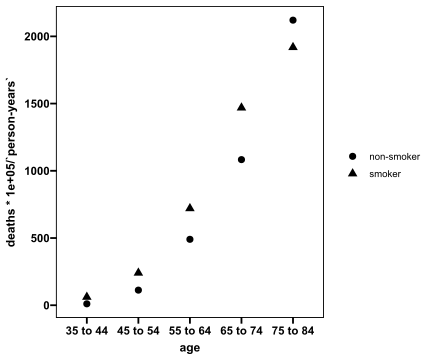
doctors |> mutate(agecat = c(1:5,1:5),
agesq = agecat^2,
smoke = c(rep(1,5), rep(0,5)),
smokage = c(1:5, rep(0,5)))## # A tibble: 10 × 8
## age smoking deaths `person-years` agecat agesq smoke smokage
## <chr> <chr> <dbl> <dbl> <int> <dbl> <dbl> <dbl>
## 1 35 to 44 smoker 32 52407 1 1 1 1
## 2 45 to 54 smoker 104 43248 2 4 1 2
## 3 55 to 64 smoker 206 28612 3 9 1 3
## 4 65 to 74 smoker 186 12663 4 16 1 4
## 5 75 to 84 smoker 102 5317 5 25 1 5
## 6 35 to 44 non-smoker 2 18790 1 1 0 0
## 7 45 to 54 non-smoker 12 10673 2 4 0 0
## 8 55 to 64 non-smoker 28 5710 3 9 0 0
## 9 65 to 74 non-smoker 28 2585 4 16 0 0
## 10 75 to 84 non-smoker 31 1462 5 25 0 0doctors2 <- doctors |> mutate(agecat = c(1:5,1:5),
agesq = agecat^2,
smoke = c(rep(1,5), rep(0,5)),
smokage = c(1:5, rep(0,5)))
doctors2## # A tibble: 10 × 8
## age smoking deaths `person-years` agecat agesq smoke smokage
## <chr> <chr> <dbl> <dbl> <int> <dbl> <dbl> <dbl>
## 1 35 to 44 smoker 32 52407 1 1 1 1
## 2 45 to 54 smoker 104 43248 2 4 1 2
## 3 55 to 64 smoker 206 28612 3 9 1 3
## 4 65 to 74 smoker 186 12663 4 16 1 4
## 5 75 to 84 smoker 102 5317 5 25 1 5
## 6 35 to 44 non-smoker 2 18790 1 1 0 0
## 7 45 to 54 non-smoker 12 10673 2 4 0 0
## 8 55 to 64 non-smoker 28 5710 3 9 0 0
## 9 65 to 74 non-smoker 28 2585 4 16 0 0
## 10 75 to 84 non-smoker 31 1462 5 25 0 0res.doc<-glm(deaths~agecat + agesq + smoke + smoke:agecat + offset(log(`person-years`)),
family=poisson(link="log"),data=doctors2)
summary(res.doc)##
## Call:
## glm(formula = deaths ~ agecat + agesq + smoke + smoke:agecat +
## offset(log(`person-years`)), family = poisson(link = "log"),
## data = doctors2)
##
## Coefficients:
## Estimate Std. Error z value Pr(>|z|)
## (Intercept) -10.79176 0.45008 -23.978 < 2e-16 ***
## agecat 2.37648 0.20795 11.428 < 2e-16 ***
## agesq -0.19768 0.02737 -7.223 5.08e-13 ***
## smoke 1.44097 0.37220 3.872 0.000108 ***
## agecat:smoke -0.30755 0.09704 -3.169 0.001528 **
## ---
## Signif. codes: 0 '***' 0.001 '**' 0.01 '*' 0.05 '.' 0.1 ' ' 1
##
## (Dispersion parameter for poisson family taken to be 1)
##
## Null deviance: 935.0673 on 9 degrees of freedom
## Residual deviance: 1.6354 on 5 degrees of freedom
## AIC: 66.703
##
## Number of Fisher Scoring iterations: 4summary(res.doc)$coefficients## Estimate Std. Error z value Pr(>|z|)
## (Intercept) -10.7917625 0.45007723 -23.977579 4.766017e-127
## agecat 2.3764783 0.20794860 11.428201 3.023077e-30
## agesq -0.1976765 0.02736742 -7.223060 5.083068e-13
## smoke 1.4409719 0.37219886 3.871511 1.081629e-04
## agecat:smoke -0.3075481 0.09704114 -3.169255 1.528305e-03#Table9.2
tibble(beta_hat=c(res.doc$coefficients[2:5]),
se_beta_hat=c(summary(res.doc)$coefficients[2:5,2]),
Wald_statistic=beta_hat/se_beta_hat,
p_value=2*(1-pnorm(abs(Wald_statistic))),
Rate_ratio=exp(beta_hat),
`95%CI_low`=exp(beta_hat+qnorm(0.025)*summary(res.doc)$coefficients[2:5,2]),
`95%CI_high`=exp(beta_hat+qnorm(0.975)*summary(res.doc)$coefficients[2:5,2])
)## # A tibble: 4 × 7
## beta_hat se_beta_hat Wald_statistic p_value Rate_ratio `95%CI_low`
## <dbl> <dbl> <dbl> <dbl> <dbl> <dbl>
## 1 2.38 0.208 11.4 0 10.8 7.16
## 2 -0.198 0.0274 -7.22 5.08e-13 0.821 0.778
## 3 1.44 0.372 3.87 1.08e- 4 4.22 2.04
## 4 -0.308 0.0970 -3.17 1.53e- 3 0.735 0.608
## # ℹ 1 more variable: `95%CI_high` <dbl>fit_p=c(fitted(res.doc))
fit_p## 1 2 3 4 5 6 7
## 29.584734 106.811960 208.198646 182.827893 102.576767 3.414801 11.541629
## 8 9 10
## 24.743377 30.229155 31.071038pearsonresid<-(doctors$deaths-fit_p)/sqrt(fit_p)
pearsonresid## 1 2 3 4 5 6
## 0.44404929 -0.27208163 -0.15237591 0.23459923 -0.05694769 -0.76561908
## 7 8 9 10
## 0.13492231 0.65469354 -0.40544060 -0.01274427chisq<-sum(pearsonresid*pearsonresid)
chisq## [1] 1.550251devres<-sign(doctors2$deaths-fit_p)*(sqrt(2*(doctors2$deaths*log(doctors2$deaths/fit_p)-(doctors2$deaths-fit_p))))
devres## 1 2 3 4 5 6
## 0.43820403 -0.27328873 -0.15264528 0.23392570 -0.05700118 -0.83049031
## 7 8 9 10
## 0.13404370 0.64106682 -0.41058325 -0.01274913deviance<-sum(devres*devres)
deviance## [1] 1.63537#Table9.3
tibble(Age.cat=doctors2$agecat,
smoking.cat=doctors2$smoke,
Observed.death=doctors2$deaths,
Expected.death=fit_p,
Pearson.residual=pearsonresid,
Deviance.residual=devres)## # A tibble: 10 × 6
## Age.cat smoking.cat Observed.death Expected.death Pearson.residual
## <int> <dbl> <dbl> <dbl> <dbl>
## 1 1 1 32 29.6 0.444
## 2 2 1 104 107. -0.272
## 3 3 1 206 208. -0.152
## 4 4 1 186 183. 0.235
## 5 5 1 102 103. -0.0569
## 6 1 0 2 3.41 -0.766
## 7 2 0 12 11.5 0.135
## 8 3 0 28 24.7 0.655
## 9 4 0 28 30.2 -0.405
## 10 5 0 31 31.1 -0.0127
## # ℹ 1 more variable: Deviance.residual <dbl>res.doc$deviance## [1] 1.63537res.doc.mini<-glm(deaths~1 + offset(log(`person-years`)),
family=poisson(link="log"),data=doctors2)
summary(res.doc.mini)##
## Call:
## glm(formula = deaths ~ 1 + offset(log(`person-years`)), family = poisson(link = "log"),
## data = doctors2)
##
## Coefficients:
## Estimate Std. Error z value Pr(>|z|)
## (Intercept) -5.51442 0.03698 -149.1 <2e-16 ***
## ---
## Signif. codes: 0 '***' 0.001 '**' 0.01 '*' 0.05 '.' 0.1 ' ' 1
##
## (Dispersion parameter for poisson family taken to be 1)
##
## Null deviance: 935.07 on 9 degrees of freedom
## Residual deviance: 935.07 on 9 degrees of freedom
## AIC: 992.14
##
## Number of Fisher Scoring iterations: 5logLik(res.doc.mini)## 'log Lik.' -495.0676 (df=1)logLik(res.doc)## 'log Lik.' -28.35166 (df=5)#C
2*(logLik(res.doc)-logLik(res.doc.mini))## 'log Lik.' 933.432 (df=5)1-pchisq(933.432, df=4)## [1] 0#pseudo R2
(logLik(res.doc.mini)-logLik(res.doc))/logLik(res.doc.mini)## 'log Lik.' 0.9427318 (df=1)#Table9.4
melanoma <- structure(list(type = c("hutchinson's melanotic freckle", "hutchinson's melanotic freckle",
"hutchinson's melanotic freckle", "superficial spreading melanoma",
"superficial spreading melanoma", "superficial spreading melanoma",
"nodular", "nodular", "nodular", "indeterminate", "indeterminate",
"indeterminate"), site = c("head & neck", "trunk", "extremities",
"head & neck", "trunk", "extremities", "head & neck", "trunk",
"extremities", "head & neck", "trunk", "extremities"), frequency = c(22,
2, 10, 16, 54, 115, 19, 33, 73, 11, 17, 28)), class = c("tbl_df",
"tbl", "data.frame"), row.names = c(NA, -12L))
melanoma## # A tibble: 12 × 3
## type site frequency
## <chr> <chr> <dbl>
## 1 hutchinson's melanotic freckle head & neck 22
## 2 hutchinson's melanotic freckle trunk 2
## 3 hutchinson's melanotic freckle extremities 10
## 4 superficial spreading melanoma head & neck 16
## 5 superficial spreading melanoma trunk 54
## 6 superficial spreading melanoma extremities 115
## 7 nodular head & neck 19
## 8 nodular trunk 33
## 9 nodular extremities 73
## 10 indeterminate head & neck 11
## 11 indeterminate trunk 17
## 12 indeterminate extremities 28library(tidyverse)
melanoma |> tidyr::pivot_wider(names_from = type, values_from = frequency) |>
mutate(sum=`hutchinson's melanotic freckle`+ `superficial spreading melanoma` +nodular+ indeterminate)## # A tibble: 3 × 6
## site hutchinson's melanot…¹ superficial spreadin…² nodular indeterminate
## <chr> <dbl> <dbl> <dbl> <dbl>
## 1 head & ne… 22 16 19 11
## 2 trunk 2 54 33 17
## 3 extremiti… 10 115 73 28
## # ℹ abbreviated names: ¹`hutchinson's melanotic freckle`,
## # ²`superficial spreading melanoma`
## # ℹ 1 more variable: sum <dbl>library(tidyverse)
library(gt)
melanoma |> pivot_wider(names_from = type, values_from = frequency) |>
mutate(sum=`hutchinson's melanotic freckle`+ `superficial spreading melanoma` +nodular+ indeterminate) |>
gt(rowname_col = "site") |>
grand_summary_rows(fns = list(fn = "sum"))| hutchinson's melanotic freckle | superficial spreading melanoma | nodular | indeterminate | sum | |
|---|---|---|---|---|---|
| head & neck | 22 | 16 | 19 | 11 | 68 |
| trunk | 2 | 54 | 33 | 17 | 106 |
| extremities | 10 | 115 | 73 | 28 | 226 |
| sum | 34 | 185 | 125 | 56 | 400 |
melanoma2 <- melanoma |> pivot_wider(names_from = type, values_from = frequency) |>
mutate(sum=`hutchinson's melanotic freckle`+ `superficial spreading melanoma` +nodular+ indeterminate) |>
gt(rowname_col = "site") |>
grand_summary_rows(fns = list(fn = "sum"))
melanoma2| hutchinson's melanotic freckle | superficial spreading melanoma | nodular | indeterminate | sum | |
|---|---|---|---|---|---|
| head & neck | 22 | 16 | 19 | 11 | 68 |
| trunk | 2 | 54 | 33 | 17 | 106 |
| extremities | 10 | 115 | 73 | 28 | 226 |
| sum | 34 | 185 | 125 | 56 | 400 |
melanoma3 <- melanoma |> pivot_wider(names_from = type, values_from = frequency) |>
mutate(sum=`hutchinson's melanotic freckle`+ `superficial spreading melanoma` +nodular+ indeterminate)
melanoma3## # A tibble: 3 × 6
## site hutchinson's melanot…¹ superficial spreadin…² nodular indeterminate
## <chr> <dbl> <dbl> <dbl> <dbl>
## 1 head & ne… 22 16 19 11
## 2 trunk 2 54 33 17
## 3 extremiti… 10 115 73 28
## # ℹ abbreviated names: ¹`hutchinson's melanotic freckle`,
## # ²`superficial spreading melanoma`
## # ℹ 1 more variable: sum <dbl>melanoma3[4,] <- list("sum", 34, 185, 125, 56, 400)
melanoma3## # A tibble: 4 × 6
## site hutchinson's melanot…¹ superficial spreadin…² nodular indeterminate
## <chr> <dbl> <dbl> <dbl> <dbl>
## 1 head & ne… 22 16 19 11
## 2 trunk 2 54 33 17
## 3 extremiti… 10 115 73 28
## 4 sum 34 185 125 56
## # ℹ abbreviated names: ¹`hutchinson's melanotic freckle`,
## # ²`superficial spreading melanoma`
## # ℹ 1 more variable: sum <dbl>#row ratio
melanoma3[4, 2:5]/400## hutchinson's melanotic freckle superficial spreading melanoma nodular
## 1 0.085 0.4625 0.3125
## indeterminate
## 1 0.14#column ratio
melanoma3[1:3, 6]/400## sum
## 1 0.170
## 2 0.265
## 3 0.565str(matrix(unlist(melanoma3[4, 2:5]/400)))## num [1:4, 1] 0.085 0.463 0.312 0.14m1 <- matrix(unlist(melanoma3[4, 2:5]/400), nrow=1)
m1## [,1] [,2] [,3] [,4]
## [1,] 0.085 0.4625 0.3125 0.14m2 <- matrix(t(melanoma3[1:3, 6]/400), ncol = 1)
m2## [,1]
## [1,] 0.170
## [2,] 0.265
## [3,] 0.565str(m1)## num [1, 1:4] 0.085 0.463 0.312 0.14str(m2)## num [1:3, 1] 0.17 0.265 0.565m2 %*% m1## [,1] [,2] [,3] [,4]
## [1,] 0.014450 0.0786250 0.0531250 0.0238
## [2,] 0.022525 0.1225625 0.0828125 0.0371
## [3,] 0.048025 0.2613125 0.1765625 0.0791(m2 %*% m1) * 400## [,1] [,2] [,3] [,4]
## [1,] 5.78 31.450 21.250 9.52
## [2,] 9.01 49.025 33.125 14.84
## [3,] 19.21 104.525 70.625 31.64estimated <- (m2 %*% m1) * 400unlist(t(melanoma3[1:3, 2:5]))## [,1] [,2] [,3]
## hutchinson's melanotic freckle 22 2 10
## superficial spreading melanoma 16 54 115
## nodular 19 33 73
## indeterminate 11 17 28matrix(unlist(t(melanoma3[1:3, 2:5])), ncol=4, byrow = T)## [,1] [,2] [,3] [,4]
## [1,] 22 16 19 11
## [2,] 2 54 33 17
## [3,] 10 115 73 28observed <- matrix(unlist(t(melanoma3[1:3, 2:5])), ncol=4, byrow = T)#X^2
(observed-estimated)^2/estimated## [,1] [,2] [,3] [,4]
## [1,] 45.517024 7.5899046 0.2382352941 0.2300840
## [2,] 5.453951 0.5048572 0.0004716981 0.3143935
## [3,] 4.415622 1.0497548 0.0798672566 0.4187611sum((observed-estimated)^2/estimated)## [1] 65.812931-pchisq(65.81293, df=6)## [1] 2.943201e-12melanoma5 <- melanoma |> mutate(tumor = factor(type, levels = c("hutchinson's melanotic freckle",
"superficial spreading melanoma",
"nodular",
"indeterminate")),
site2 = factor(site, levels = c("head & neck",
"trunk",
"extremities"))
)
melanoma5## # A tibble: 12 × 5
## type site frequency tumor site2
## <chr> <chr> <dbl> <fct> <fct>
## 1 hutchinson's melanotic freckle head & neck 22 hutchinson's mela… head…
## 2 hutchinson's melanotic freckle trunk 2 hutchinson's mela… trunk
## 3 hutchinson's melanotic freckle extremities 10 hutchinson's mela… extr…
## 4 superficial spreading melanoma head & neck 16 superficial sprea… head…
## 5 superficial spreading melanoma trunk 54 superficial sprea… trunk
## 6 superficial spreading melanoma extremities 115 superficial sprea… extr…
## 7 nodular head & neck 19 nodular head…
## 8 nodular trunk 33 nodular trunk
## 9 nodular extremities 73 nodular extr…
## 10 indeterminate head & neck 11 indeterminate head…
## 11 indeterminate trunk 17 indeterminate trunk
## 12 indeterminate extremities 28 indeterminate extr…ressat.melanoma<-glm(frequency~tumor*site2,family=poisson(),data=melanoma5)
ressat.melanoma##
## Call: glm(formula = frequency ~ tumor * site2, family = poisson(),
## data = melanoma5)
##
## Coefficients:
## (Intercept)
## 3.0910
## tumorsuperficial spreading melanoma
## -0.3185
## tumornodular
## -0.1466
## tumorindeterminate
## -0.6931
## site2trunk
## -2.3979
## site2extremities
## -0.7885
## tumorsuperficial spreading melanoma:site2trunk
## 3.6143
## tumornodular:site2trunk
## 2.9500
## tumorindeterminate:site2trunk
## 2.8332
## tumorsuperficial spreading melanoma:site2extremities
## 2.7608
## tumornodular:site2extremities
## 2.1345
## tumorindeterminate:site2extremities
## 1.7228
##
## Degrees of Freedom: 11 Total (i.e. Null); 0 Residual
## Null Deviance: 295.2
## Residual Deviance: -1.754e-14 AIC: 83.11summary(ressat.melanoma)##
## Call:
## glm(formula = frequency ~ tumor * site2, family = poisson(),
## data = melanoma5)
##
## Coefficients:
## Estimate Std. Error
## (Intercept) 3.0910 0.2132
## tumorsuperficial spreading melanoma -0.3185 0.3286
## tumornodular -0.1466 0.3132
## tumorindeterminate -0.6931 0.3693
## site2trunk -2.3979 0.7385
## site2extremities -0.7885 0.3814
## tumorsuperficial spreading melanoma:site2trunk 3.6143 0.7915
## tumornodular:site2trunk 2.9500 0.7927
## tumorindeterminate:site2trunk 2.8332 0.8338
## tumorsuperficial spreading melanoma:site2extremities 2.7608 0.4655
## tumornodular:site2extremities 2.1345 0.4602
## tumorindeterminate:site2extremities 1.7228 0.5216
## z value Pr(>|z|)
## (Intercept) 14.498 < 2e-16 ***
## tumorsuperficial spreading melanoma -0.969 0.332432
## tumornodular -0.468 0.639712
## tumorindeterminate -1.877 0.060511 .
## site2trunk -3.247 0.001167 **
## site2extremities -2.067 0.038701 *
## tumorsuperficial spreading melanoma:site2trunk 4.566 4.96e-06 ***
## tumornodular:site2trunk 3.721 0.000198 ***
## tumorindeterminate:site2trunk 3.398 0.000679 ***
## tumorsuperficial spreading melanoma:site2extremities 5.931 3.00e-09 ***
## tumornodular:site2extremities 4.638 3.52e-06 ***
## tumorindeterminate:site2extremities 3.303 0.000957 ***
## ---
## Signif. codes: 0 '***' 0.001 '**' 0.01 '*' 0.05 '.' 0.1 ' ' 1
##
## (Dispersion parameter for poisson family taken to be 1)
##
## Null deviance: 2.9520e+02 on 11 degrees of freedom
## Residual deviance: -1.7542e-14 on 0 degrees of freedom
## AIC: 83.111
##
## Number of Fisher Scoring iterations: 3logLik(ressat.melanoma)## 'log Lik.' -29.5557 (df=12)ressat.melanoma.add<-glm(frequency~tumor+site2,family=poisson(),data=melanoma5)
summary(ressat.melanoma.add)##
## Call:
## glm(formula = frequency ~ tumor + site2, family = poisson(),
## data = melanoma5)
##
## Coefficients:
## Estimate Std. Error z value Pr(>|z|)
## (Intercept) 1.7544 0.2040 8.600 < 2e-16 ***
## tumorsuperficial spreading melanoma 1.6940 0.1866 9.079 < 2e-16 ***
## tumornodular 1.3020 0.1934 6.731 1.68e-11 ***
## tumorindeterminate 0.4990 0.2174 2.295 0.02173 *
## site2trunk 0.4439 0.1554 2.857 0.00427 **
## site2extremities 1.2010 0.1383 8.683 < 2e-16 ***
## ---
## Signif. codes: 0 '***' 0.001 '**' 0.01 '*' 0.05 '.' 0.1 ' ' 1
##
## (Dispersion parameter for poisson family taken to be 1)
##
## Null deviance: 295.203 on 11 degrees of freedom
## Residual deviance: 51.795 on 6 degrees of freedom
## AIC: 122.91
##
## Number of Fisher Scoring iterations: 5#D
logLik(ressat.melanoma.add)## 'log Lik.' -55.45321 (df=6)2*(logLik(ressat.melanoma)-logLik(ressat.melanoma.add))## 'log Lik.' 51.79501 (df=12)ressat.melanoma.add$fitted.values## 1 2 3 4 5 6 7 8 9 10
## 5.780 9.010 19.210 31.450 49.025 104.525 21.250 33.125 70.625 9.520
## 11 12
## 14.840 31.640melanoma5$frequency## [1] 22 2 10 16 54 115 19 33 73 11 17 28#chi-square
sum((ressat.melanoma.add$fitted.values-melanoma5$frequency)^2/ressat.melanoma.add$fitted.values)## [1] 65.81293ressat.melanoma.mini<-glm(frequency~1,family=poisson(),data=melanoma5)
summary(ressat.melanoma.mini)##
## Call:
## glm(formula = frequency ~ 1, family = poisson(), data = melanoma5)
##
## Coefficients:
## Estimate Std. Error z value Pr(>|z|)
## (Intercept) 3.507 0.050 70.13 <2e-16 ***
## ---
## Signif. codes: 0 '***' 0.001 '**' 0.01 '*' 0.05 '.' 0.1 ' ' 1
##
## (Dispersion parameter for poisson family taken to be 1)
##
## Null deviance: 295.2 on 11 degrees of freedom
## Residual deviance: 295.2 on 11 degrees of freedom
## AIC: 356.31
##
## Number of Fisher Scoring iterations: 5#D
logLik(ressat.melanoma.mini)## 'log Lik.' -177.1572 (df=1)2*(logLik(ressat.melanoma.add)-logLik(ressat.melanoma.mini))## 'log Lik.' 243.408 (df=6)#pseudo R2
(logLik(ressat.melanoma.mini)-logLik(ressat.melanoma))/logLik(ressat.melanoma.mini)## 'log Lik.' 0.8331668 (df=1)#Table 9.7
ulcer## # A tibble: 8 × 4
## ulcer `case-control` aspirin frequency
## <chr> <chr> <chr> <dbl>
## 1 gastric control non-user 62
## 2 gastric control user 6
## 3 gastric case non-user 39
## 4 gastric case user 25
## 5 duodenal control non-user 53
## 6 duodenal control user 8
## 7 duodenal case non-user 49
## 8 duodenal case user 8ulcer$ulcer## [1] "gastric" "gastric" "gastric" "gastric" "duodenal" "duodenal" "duodenal"
## [8] "duodenal"#GD ulcer site
#CC case-control status
#AP aspirin
library(tidyverse)
ulcer2 <- ulcer |> mutate(GD = factor(ulcer, levels = c("gastric", "duodenal")),
CC = factor(`case-control`, levels = c("control", "case")),
AP = factor(aspirin, levels = c("non-user", "user"))
)
ulcer2## # A tibble: 8 × 7
## ulcer `case-control` aspirin frequency GD CC AP
## <chr> <chr> <chr> <dbl> <fct> <fct> <fct>
## 1 gastric control non-user 62 gastric control non-user
## 2 gastric control user 6 gastric control user
## 3 gastric case non-user 39 gastric case non-user
## 4 gastric case user 25 gastric case user
## 5 duodenal control non-user 53 duodenal control non-user
## 6 duodenal control user 8 duodenal control user
## 7 duodenal case non-user 49 duodenal case non-user
## 8 duodenal case user 8 duodenal case userres1.aspirin<-glm(frequency~GD + CC + GD*CC, family=poisson(), data=ulcer2)
summary(res1.aspirin)##
## Call:
## glm(formula = frequency ~ GD + CC + GD * CC, family = poisson(),
## data = ulcer2)
##
## Coefficients:
## Estimate Std. Error z value Pr(>|z|)
## (Intercept) 3.526361 0.121268 29.079 <2e-16 ***
## GDduodenal -0.108634 0.176350 -0.616 0.538
## CCcase -0.060625 0.174158 -0.348 0.728
## GDduodenal:CCcase -0.007198 0.253512 -0.028 0.977
## ---
## Signif. codes: 0 '***' 0.001 '**' 0.01 '*' 0.05 '.' 0.1 ' ' 1
##
## (Dispersion parameter for poisson family taken to be 1)
##
## Null deviance: 127.75 on 7 degrees of freedom
## Residual deviance: 126.71 on 4 degrees of freedom
## AIC: 174.32
##
## Number of Fisher Scoring iterations: 5res2.aspirin<-glm(frequency~GD + CC + GD*CC + AP, family=poisson(), data=ulcer2)
summary(res2.aspirin)##
## Call:
## glm(formula = frequency ~ GD + CC + GD * CC + AP, family = poisson(),
## data = ulcer2)
##
## Coefficients:
## Estimate Std. Error z value Pr(>|z|)
## (Intercept) 4.011253 0.125028 32.083 <2e-16 ***
## GDduodenal -0.108634 0.176350 -0.616 0.538
## CCcase -0.060625 0.174158 -0.348 0.728
## APuser -1.463058 0.161872 -9.038 <2e-16 ***
## GDduodenal:CCcase -0.007198 0.253512 -0.028 0.977
## ---
## Signif. codes: 0 '***' 0.001 '**' 0.01 '*' 0.05 '.' 0.1 ' ' 1
##
## (Dispersion parameter for poisson family taken to be 1)
##
## Null deviance: 127.749 on 7 degrees of freedom
## Residual deviance: 21.789 on 3 degrees of freedom
## AIC: 71.404
##
## Number of Fisher Scoring iterations: 5res3.aspirin<-glm(frequency~GD + CC + GD*CC + AP + AP*CC,family=poisson(), data=ulcer2)
summary(res3.aspirin)##
## Call:
## glm(formula = frequency ~ GD + CC + GD * CC + AP + AP * CC, family = poisson(),
## data = ulcer2)
##
## Coefficients:
## Estimate Std. Error z value Pr(>|z|)
## (Intercept) 4.104627 0.125098 32.811 < 2e-16 ***
## GDduodenal -0.108634 0.176350 -0.616 0.53789
## CCcase -0.264198 0.185402 -1.425 0.15416
## APuser -2.105875 0.283062 -7.440 1.01e-13 ***
## GDduodenal:CCcase -0.007198 0.253511 -0.028 0.97735
## CCcase:APuser 1.125046 0.348984 3.224 0.00127 **
## ---
## Signif. codes: 0 '***' 0.001 '**' 0.01 '*' 0.05 '.' 0.1 ' ' 1
##
## (Dispersion parameter for poisson family taken to be 1)
##
## Null deviance: 127.749 on 7 degrees of freedom
## Residual deviance: 10.538 on 2 degrees of freedom
## AIC: 62.153
##
## Number of Fisher Scoring iterations: 4res4.aspirin<-glm(frequency~GD + CC + GD*CC + AP + AP*CC + AP*GD, family=poisson(), data=ulcer2)
summary(res4.aspirin)##
## Call:
## glm(formula = frequency ~ GD + CC + GD * CC + AP + AP * CC +
## AP * GD, family = poisson(), data = ulcer2)
##
## Coefficients:
## Estimate Std. Error z value Pr(>|z|)
## (Intercept) 4.06961 0.12862 31.640 < 2e-16 ***
## GDduodenal -0.03598 0.18042 -0.199 0.84195
## CCcase -0.32091 0.19384 -1.656 0.09782 .
## APuser -1.82193 0.30796 -5.916 3.3e-09 ***
## GDduodenal:CCcase 0.10574 0.26147 0.404 0.68590
## CCcase:APuser 1.14288 0.35207 3.246 0.00117 **
## GDduodenal:APuser -0.70005 0.34603 -2.023 0.04306 *
## ---
## Signif. codes: 0 '***' 0.001 '**' 0.01 '*' 0.05 '.' 0.1 ' ' 1
##
## (Dispersion parameter for poisson family taken to be 1)
##
## Null deviance: 127.749 on 7 degrees of freedom
## Residual deviance: 6.283 on 1 degrees of freedom
## AIC: 59.898
##
## Number of Fisher Scoring iterations: 4#Table 9.11
tibble(Models=c("GD+CC+GDXCC",
"GD+CC+GDXCC+AP",
"GD+CC+GDXCC+AP+APXCC",
"GD+CC+GDXCC+AP+APXCC++APXGD"),
D.F.=c(res1.aspirin$df.residual,
res2.aspirin$df.residual,
res3.aspirin$df.residual,
res4.aspirin$df.residual),
Deviance=c(res1.aspirin$deviance,
res2.aspirin$deviance,
res3.aspirin$deviance,
res4.aspirin$deviance)
) |> as.data.frame()## Models D.F. Deviance
## 1 GD+CC+GDXCC 4 126.707890
## 2 GD+CC+GDXCC+AP 3 21.789257
## 3 GD+CC+GDXCC+AP+APXCC 2 10.538439
## 4 GD+CC+GDXCC+AP+APXCC++APXGD 1 6.282983#delta D comparison of aspirin use between cases and controls
res2.aspirin$deviance - res3.aspirin$deviance## [1] 11.25082(1-pchisq(11.25082, df=1))## [1] 0.0007958785#delta D, difference between ulcer sites
res3.aspirin$deviance - res4.aspirin$deviance## [1] 4.255456(1-pchisq(4.255456, df=1))## [1] 0.03912444#chi-square
sum((res4.aspirin$fitted.values-ulcer2$frequency)^2/res4.aspirin$fitted.values)## [1] 6.48795(1-pchisq(6.48795, df=1))## [1] 0.01086082res4.aspirin$fitted.values## 1 2 3 4 5 6 7 8
## 58.534241 9.465759 42.465759 21.534241 56.465759 4.534241 45.534241 11.465759res4.aspirin$deviance## [1] 6.282983Exercises 9.1
The joint probability distribution: \[f(\mathbf y;\boldsymbol\mu)=\prod_{i=1}^{N}\mu_i^{y_i}e^{-\mu_i}/y_i!\]
\[l(\mathbf y;\boldsymbol\mu)=\sum_{i=1}^{N}(y_i\log(\mu_i)-\mu_i-\log(y_i!))=\sum_{i=1}^{N}\left(y_i\left(\beta_1+\sum_{j=2}^{J}x_{ij}\beta_j\right)-\exp\left(\beta_1+\sum_{j=2}^{J}x_{ij}\beta_j\right)-\log(y_i!)\right)\] The score statistic for \(\beta_1\) is \[\frac{\partial l(\mathbf y;\boldsymbol\mu)}{\partial \beta_1}=\sum_{i=1}^{N}\left(y_i-\mu_i\right)\]
#Exercises 9.2
insurance## # A tibble: 32 × 5
## car age district y n
## <dbl> <dbl> <dbl> <dbl> <dbl>
## 1 1 1 0 65 317
## 2 1 2 0 65 476
## 3 1 3 0 52 486
## 4 1 4 0 310 3259
## 5 2 1 0 98 486
## 6 2 2 0 159 1004
## 7 2 3 0 175 1355
## 8 2 4 0 877 7660
## 9 3 1 0 41 223
## 10 3 2 0 117 539
## 11 3 3 0 137 697
## 12 3 4 0 477 3442
## 13 4 1 0 11 40
## 14 4 2 0 35 148
## 15 4 3 0 39 214
## 16 4 4 0 167 1019
## 17 1 1 1 2 20
## 18 1 2 1 5 33
## 19 1 3 1 4 40
## 20 1 4 1 36 316
## 21 2 1 1 7 31
## 22 2 2 1 10 81
## 23 2 3 1 22 122
## 24 2 4 1 102 724
## 25 3 1 1 5 18
## # ℹ 7 more rowsinsurance$car2 <- factor(insurance$car)
insurance$age2 <- factor(insurance$age)
insurance$district2 <- factor(insurance$district)insurance |> group_by(c(car2)) |> mutate(rate=sum(y)/sum(n))## # A tibble: 32 × 10
## # Groups: c(car2) [4]
## car age district y n car2 age2 district2 `c(car2)` rate
## <dbl> <dbl> <dbl> <dbl> <dbl> <fct> <fct> <fct> <fct> <dbl>
## 1 1 1 0 65 317 1 1 0 1 0.109
## 2 1 2 0 65 476 1 2 0 1 0.109
## 3 1 3 0 52 486 1 3 0 1 0.109
## 4 1 4 0 310 3259 1 4 0 1 0.109
## 5 2 1 0 98 486 2 1 0 2 0.126
## 6 2 2 0 159 1004 2 2 0 2 0.126
## 7 2 3 0 175 1355 2 3 0 2 0.126
## 8 2 4 0 877 7660 2 4 0 2 0.126
## 9 3 1 0 41 223 3 1 0 3 0.161
## 10 3 2 0 117 539 3 2 0 3 0.161
## 11 3 3 0 137 697 3 3 0 3 0.161
## 12 3 4 0 477 3442 3 4 0 3 0.161
## 13 4 1 0 11 40 4 1 0 4 0.189
## 14 4 2 0 35 148 4 2 0 4 0.189
## 15 4 3 0 39 214 4 3 0 4 0.189
## 16 4 4 0 167 1019 4 4 0 4 0.189
## 17 1 1 1 2 20 1 1 1 1 0.109
## 18 1 2 1 5 33 1 2 1 1 0.109
## 19 1 3 1 4 40 1 3 1 1 0.109
## 20 1 4 1 36 316 1 4 1 1 0.109
## 21 2 1 1 7 31 2 1 1 2 0.126
## 22 2 2 1 10 81 2 2 1 2 0.126
## 23 2 3 1 22 122 2 3 1 2 0.126
## 24 2 4 1 102 724 2 4 1 2 0.126
## 25 3 1 1 5 18 3 1 1 3 0.161
## # ℹ 7 more rowsinsurance |> ggplot(aes(x=car2, y=y/n)) +
geom_point(size=3, aes(color=age2)) +
facet_grid(~district2) +
scale_colour_prism(palette = "candy_bright") +
theme_prism(border = TRUE,
palette = "black_and_white",
base_size = 12) +
labs(x="cars", y="rate")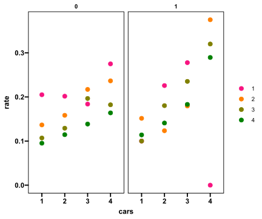
res.insurance<-glm(y/n~car2+age2+district2+car2*age2+car2*district2+age2*district2, family=quasipoisson(), data=insurance)
summary(res.insurance)##
## Call:
## glm(formula = y/n ~ car2 + age2 + district2 + car2 * age2 + car2 *
## district2 + age2 * district2, family = quasipoisson(), data = insurance)
##
## Coefficients:
## Estimate Std. Error t value Pr(>|t|)
## (Intercept) -1.63176 0.39059 -4.178 0.00238 **
## car22 0.22917 0.50283 0.456 0.65936
## car23 0.28810 0.49292 0.584 0.57325
## car24 -0.18154 0.54274 -0.334 0.74568
## age22 -0.25468 0.53999 -0.472 0.64840
## age23 -0.67888 0.59357 -1.144 0.28225
## age24 -0.69793 0.59799 -1.167 0.27315
## district21 -0.58042 0.47743 -1.216 0.25502
## car22:age22 -0.39160 0.69271 -0.565 0.58567
## car23:age22 -0.13194 0.65924 -0.200 0.84582
## car24:age22 0.83270 0.67478 1.234 0.24844
## car22:age23 0.01957 0.72284 0.027 0.97899
## car23:age23 0.26895 0.69355 0.388 0.70718
## car24:age23 0.95684 0.72306 1.323 0.21836
## car22:age24 -0.18616 0.74021 -0.251 0.80708
## car23:age24 -0.03957 0.71448 -0.055 0.95705
## car24:age24 0.84184 0.72819 1.156 0.27742
## car22:district21 0.27647 0.52431 0.527 0.61074
## car23:district21 0.31835 0.49950 0.637 0.53978
## car24:district21 0.20342 0.48888 0.416 0.68709
## age22:district21 0.47513 0.45559 1.043 0.32420
## age23:district21 0.66356 0.46475 1.428 0.18712
## age24:district21 0.71833 0.48559 1.479 0.17319
## ---
## Signif. codes: 0 '***' 0.001 '**' 0.01 '*' 0.05 '.' 0.1 ' ' 1
##
## (Dispersion parameter for quasipoisson family taken to be 0.03758626)
##
## Null deviance: 1.10956 on 31 degrees of freedom
## Residual deviance: 0.43626 on 9 degrees of freedom
## AIC: NA
##
## Number of Fisher Scoring iterations: 5res.insurance2<-glm(y/n~car+age+district, family=quasipoisson(), data=insurance)
summary(res.insurance2)##
## Call:
## glm(formula = y/n ~ car + age + district, family = quasipoisson(),
## data = insurance)
##
## Coefficients:
## Estimate Std. Error t value Pr(>|t|)
## (Intercept) -2.14870 0.20948 -10.257 5.48e-11 ***
## car 0.19999 0.05271 3.794 0.000727 ***
## age -0.05696 0.05190 -1.098 0.281733
## district 0.08896 0.11600 0.767 0.449551
## ---
## Signif. codes: 0 '***' 0.001 '**' 0.01 '*' 0.05 '.' 0.1 ' ' 1
##
## (Dispersion parameter for quasipoisson family taken to be 0.01926316)
##
## Null deviance: 1.10956 on 31 degrees of freedom
## Residual deviance: 0.79295 on 28 degrees of freedom
## AIC: NA
##
## Number of Fisher Scoring iterations: 4#Exercises 9.3
vaccine## # A tibble: 6 × 3
## treatment response frequency
## <chr> <chr> <dbl>
## 1 placebo small 25
## 2 placebo moderate 8
## 3 placebo large 5
## 4 vaccine small 6
## 5 vaccine moderate 18
## 6 vaccine large 11vaccine.frequency <- matrix(c(vaccine$frequency), ncol = 2, byrow = FALSE)
vaccine.frequency## [,1] [,2]
## [1,] 25 6
## [2,] 8 18
## [3,] 5 11chisq.test(vaccine.frequency)##
## Pearson's Chi-squared test
##
## data: vaccine.frequency
## X-squared = 17.648, df = 2, p-value = 0.0001472res.vaccine<-glm(frequency~treatment+response,family=poisson(),data=vaccine)
summary(res.vaccine)##
## Call:
## glm(formula = frequency ~ treatment + response, family = poisson(),
## data = vaccine)
##
## Coefficients:
## Estimate Std. Error z value Pr(>|z|)
## (Intercept) 2.11972 0.27408 7.734 1.04e-14 ***
## treatmentvaccine -0.08224 0.23428 -0.351 0.7256
## responsemoderate 0.48551 0.31774 1.528 0.1265
## responsesmall 0.66140 0.30783 2.149 0.0317 *
## ---
## Signif. codes: 0 '***' 0.001 '**' 0.01 '*' 0.05 '.' 0.1 ' ' 1
##
## (Dispersion parameter for poisson family taken to be 1)
##
## Null deviance: 23.807 on 5 degrees of freedom
## Residual deviance: 18.643 on 2 degrees of freedom
## AIC: 51.771
##
## Number of Fisher Scoring iterations: 5res.vaccine$fitted.values## 1 2 3 4 5 6
## 16.136986 13.534247 8.328767 14.863014 12.465753 7.671233vaccine$frequency## [1] 25 8 5 6 18 11sum((vaccine$frequency-res.vaccine$fitted.values)^2/res.vaccine$fitted.values)## [1] 17.64783chisq.stat <- sum((vaccine$frequency-res.vaccine$fitted.values)^2/res.vaccine$fitted.values)
1-pchisq(chisq.stat, df=res.vaccine$df.residual)## [1] 0.0001471709res.vaccine$deviance## [1] 18.64253res.vaccine$residuals## 1 2 3 4 5 6
## 0.5492360 -0.4089069 -0.3996711 -0.5963134 0.4439560 0.4339286#For the placebo group the estimated probabilities for the ‘small’, ‘moderate’ and ‘large’ responses are
res.vaccine$coefficients## (Intercept) treatmentvaccine responsemoderate responsesmall
## 2.1197154 -0.0822381 0.4855078 0.6613985small <- exp(res.vaccine$coefficients[4])
moderate <- exp(res.vaccine$coefficients[3])
total <- sum(small, moderate, 1)
#small
small/total## responsesmall
## 0.4246575#moderate
moderate/total## responsemoderate
## 0.3561644#large
1/total## [1] 0.2191781Chapter10 Survival Analysis
#Table10.1
remission## # A tibble: 42 × 3
## time group censored
## <dbl> <chr> <dbl>
## 1 1 C 0
## 2 1 C 0
## 3 2 C 0
## 4 2 C 0
## 5 3 C 0
## 6 4 C 0
## 7 4 C 0
## 8 5 C 0
## 9 5 C 0
## 10 8 C 0
## 11 8 C 0
## 12 8 C 0
## 13 8 C 0
## 14 11 C 0
## 15 11 C 0
## 16 12 C 0
## 17 12 C 0
## 18 15 C 0
## 19 17 C 0
## 20 22 C 0
## 21 23 C 0
## 22 6 T 0
## 23 6 T 0
## 24 6 T 0
## 25 6 T 1
## # ℹ 17 more rowsremission |> ggplot(aes(x=time)) +
geom_bar(stat = "count") +
facet_wrap(vars(group)) + theme_bw() + theme(
# Hide panel borders and remove grid lines
#panel.border = element_line(colour = "black"),
panel.grid.major = element_blank(),
panel.grid.minor = element_blank(),
# Change axis line
#axis.line = element_line(colour = "black")
)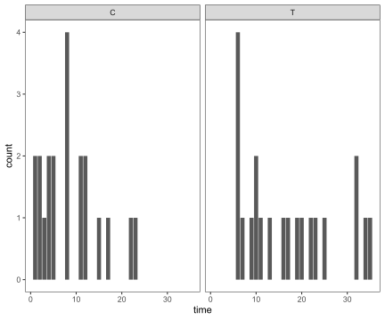
#Table10.2
library(tidyverse)
data.frame(
n=c(21,21,17,15,12,11,7,6),
d=c(0,3,1,1,1,1,1,1)
) |> mutate(s=(n-d)/n,
S=cumprod(s))## n d s S
## 1 21 0 1.0000000 1.0000000
## 2 21 3 0.8571429 0.8571429
## 3 17 1 0.9411765 0.8067227
## 4 15 1 0.9333333 0.7529412
## 5 12 1 0.9166667 0.6901961
## 6 11 1 0.9090909 0.6274510
## 7 7 1 0.8571429 0.5378151
## 8 6 1 0.8333333 0.4481793survival_treatment <- data.frame(
n=c(21,21,17,15,12,11,7,6),
d=c(0,3,1,1,1,1,1,1)
) |> mutate(time = c(0,6,7,10,13,16,22,23),
treatment = rep("treatment", 8),
s=(n-d)/n,
S=cumprod(s))
survival_treatment## n d time treatment s S
## 1 21 0 0 treatment 1.0000000 1.0000000
## 2 21 3 6 treatment 0.8571429 0.8571429
## 3 17 1 7 treatment 0.9411765 0.8067227
## 4 15 1 10 treatment 0.9333333 0.7529412
## 5 12 1 13 treatment 0.9166667 0.6901961
## 6 11 1 16 treatment 0.9090909 0.6274510
## 7 7 1 22 treatment 0.8571429 0.5378151
## 8 6 1 23 treatment 0.8333333 0.4481793#
survival_control <- data.frame(
n=c(21,21,19,17,16,14,12,8,6,4,3,2,1),
d=c(0,2,2,1,2,2,4,2,2,1,1,1,1)
) |> mutate(time = c(0,1,2,3,4,5,8,11,12,15,17,22,23),
treatment = rep("control", 13),
s=(n-d)/n,
S=cumprod(s))
survival_control## n d time treatment s S
## 1 21 0 0 control 1.0000000 1.00000000
## 2 21 2 1 control 0.9047619 0.90476190
## 3 19 2 2 control 0.8947368 0.80952381
## 4 17 1 3 control 0.9411765 0.76190476
## 5 16 2 4 control 0.8750000 0.66666667
## 6 14 2 5 control 0.8571429 0.57142857
## 7 12 4 8 control 0.6666667 0.38095238
## 8 8 2 11 control 0.7500000 0.28571429
## 9 6 2 12 control 0.6666667 0.19047619
## 10 4 1 15 control 0.7500000 0.14285714
## 11 3 1 17 control 0.6666667 0.09523810
## 12 2 1 22 control 0.5000000 0.04761905
## 13 1 1 23 control 0.0000000 0.00000000data <- rbind(survival_control, survival_treatment)
data## n d time treatment s S
## 1 21 0 0 control 1.0000000 1.00000000
## 2 21 2 1 control 0.9047619 0.90476190
## 3 19 2 2 control 0.8947368 0.80952381
## 4 17 1 3 control 0.9411765 0.76190476
## 5 16 2 4 control 0.8750000 0.66666667
## 6 14 2 5 control 0.8571429 0.57142857
## 7 12 4 8 control 0.6666667 0.38095238
## 8 8 2 11 control 0.7500000 0.28571429
## 9 6 2 12 control 0.6666667 0.19047619
## 10 4 1 15 control 0.7500000 0.14285714
## 11 3 1 17 control 0.6666667 0.09523810
## 12 2 1 22 control 0.5000000 0.04761905
## 13 1 1 23 control 0.0000000 0.00000000
## 14 21 0 0 treatment 1.0000000 1.00000000
## 15 21 3 6 treatment 0.8571429 0.85714286
## 16 17 1 7 treatment 0.9411765 0.80672269
## 17 15 1 10 treatment 0.9333333 0.75294118
## 18 12 1 13 treatment 0.9166667 0.69019608
## 19 11 1 16 treatment 0.9090909 0.62745098
## 20 7 1 22 treatment 0.8571429 0.53781513
## 21 6 1 23 treatment 0.8333333 0.44817927data |> ggplot(aes(x=time, y=S)) + geom_step(aes(linetype = treatment)) + theme_bw() + theme(
# Hide panel borders and remove grid lines
#panel.border = element_line(colour = "black"),
panel.grid.major = element_blank(),
panel.grid.minor = element_blank(),
# Change axis line
#axis.line = element_line(colour = "black")
) + theme_prism(border = TRUE,
palette = "black_and_white",
base_size = 12) 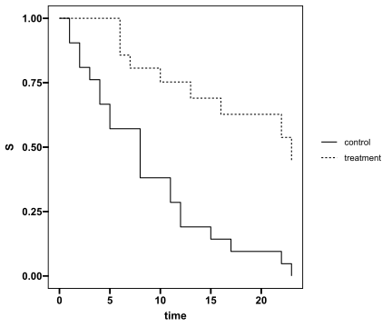
#cumulative hazard function
data |> mutate(logH=log(-log(S)),
logY=log(time))## n d time treatment s S logH logY
## 1 21 0 0 control 1.0000000 1.00000000 -Inf -Inf
## 2 21 2 1 control 0.9047619 0.90476190 -2.30175086 0.0000000
## 3 19 2 2 control 0.8947368 0.80952381 -1.55443332 0.6931472
## 4 17 1 3 control 0.9411765 0.76190476 -1.30219694 1.0986123
## 5 16 2 4 control 0.8750000 0.66666667 -0.90272046 1.3862944
## 6 14 2 5 control 0.8571429 0.57142857 -0.58050482 1.6094379
## 7 12 4 8 control 0.6666667 0.38095238 -0.03554335 2.0794415
## 8 8 2 11 control 0.7500000 0.28571429 0.22535149 2.3978953
## 9 6 2 12 control 0.6666667 0.19047619 0.50574961 2.4849066
## 10 4 1 15 control 0.7500000 0.14285714 0.66572981 2.7080502
## 11 3 1 17 control 0.6666667 0.09523810 0.85500037 2.8332133
## 12 2 1 22 control 0.5000000 0.04761905 1.11334405 3.0910425
## 13 1 1 23 control 0.0000000 0.00000000 Inf 3.1354942
## 14 21 0 0 treatment 1.0000000 1.00000000 -Inf -Inf
## 15 21 3 6 treatment 0.8571429 0.85714286 -1.86982471 1.7917595
## 16 17 1 7 treatment 0.9411765 0.80672269 -1.53816291 1.9459101
## 17 15 1 10 treatment 0.9333333 0.75294118 -1.25959767 2.3025851
## 18 12 1 13 treatment 0.9166667 0.69019608 -0.99214760 2.5649494
## 19 11 1 16 treatment 0.9090909 0.62745098 -0.76337711 2.7725887
## 20 7 1 22 treatment 0.8571429 0.53781513 -0.47764812 3.0910425
## 21 6 1 23 treatment 0.8333333 0.44817927 -0.21994621 3.1354942data |> mutate(logH=log(-log(S)),
logY=log(time)) |> ggplot(aes(x=logY, y=logH)) + geom_point(aes(shape = treatment), size=3) +
theme_bw() + theme(
# Hide panel borders and remove grid lines
#panel.border = element_line(colour = "black"),
panel.grid.major = element_blank(),
panel.grid.minor = element_blank(),
# Change axis line
#axis.line = element_line(colour = "black")
)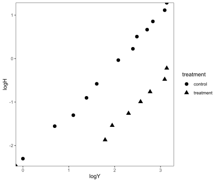
remission## # A tibble: 42 × 3
## time group censored
## <dbl> <chr> <dbl>
## 1 1 C 0
## 2 1 C 0
## 3 2 C 0
## 4 2 C 0
## 5 3 C 0
## 6 4 C 0
## 7 4 C 0
## 8 5 C 0
## 9 5 C 0
## 10 8 C 0
## 11 8 C 0
## 12 8 C 0
## 13 8 C 0
## 14 11 C 0
## 15 11 C 0
## 16 12 C 0
## 17 12 C 0
## 18 15 C 0
## 19 17 C 0
## 20 22 C 0
## 21 23 C 0
## 22 6 T 0
## 23 6 T 0
## 24 6 T 0
## 25 6 T 1
## # ℹ 17 more rows#the exponential model can be fitted:
res.gehanexp<-glm(censored==0~group + offset(log(time)), family=poisson(),
data=remission)
summary(res.gehanexp)##
## Call:
## glm(formula = censored == 0 ~ group + offset(log(time)), family = poisson(),
## data = remission)
##
## Coefficients:
## Estimate Std. Error z value Pr(>|z|)
## (Intercept) -2.1595 0.2182 -9.896 < 2e-16 ***
## groupT -1.5266 0.3984 -3.832 0.000127 ***
## ---
## Signif. codes: 0 '***' 0.001 '**' 0.01 '*' 0.05 '.' 0.1 ' ' 1
##
## (Dispersion parameter for poisson family taken to be 1)
##
## Null deviance: 54.503 on 41 degrees of freedom
## Residual deviance: 38.017 on 40 degrees of freedom
## AIC: 102.02
##
## Number of Fisher Scoring iterations: 6#AIC
AIC(res.gehanexp)## [1] 102.0173-2* logLik(res.gehanexp)+2*2## 'log Lik.' 102.0173 (df=2)log(remission$time)## [1] 0.0000000 0.0000000 0.6931472 0.6931472 1.0986123 1.3862944 1.3862944
## [8] 1.6094379 1.6094379 2.0794415 2.0794415 2.0794415 2.0794415 2.3978953
## [15] 2.3978953 2.4849066 2.4849066 2.7080502 2.8332133 3.0910425 3.1354942
## [22] 1.7917595 1.7917595 1.7917595 1.7917595 1.9459101 2.1972246 2.3025851
## [29] 2.3025851 2.3978953 2.5649494 2.7725887 2.8332133 2.9444390 2.9957323
## [36] 3.0910425 3.1354942 3.2188758 3.4657359 3.4657359 3.5263605 3.5553481offset(log(remission$time))## [1] 0.0000000 0.0000000 0.6931472 0.6931472 1.0986123 1.3862944 1.3862944
## [8] 1.6094379 1.6094379 2.0794415 2.0794415 2.0794415 2.0794415 2.3978953
## [15] 2.3978953 2.4849066 2.4849066 2.7080502 2.8332133 3.0910425 3.1354942
## [22] 1.7917595 1.7917595 1.7917595 1.7917595 1.9459101 2.1972246 2.3025851
## [29] 2.3025851 2.3978953 2.5649494 2.7725887 2.8332133 2.9444390 2.9957323
## [36] 3.0910425 3.1354942 3.2188758 3.4657359 3.4657359 3.5263605 3.5553481mu <- res.gehanexp$fitted.values
y <- remission$time
m <- sum(remission$censored == 0)
delta <- (remission$censored * -1)+1
#lambda_hat
m/sum((mu-delta)*log(y), na.rm = TRUE)## [1] 1.631587library(survival)
Surv(remission$time,remission$censored==0)## [1] 1 1 2 2 3 4 4 5 5 8 8 8 8 11 11 12 12 15 17
## [20] 22 23 6 6 6 6+ 7 9+ 10 10+ 11+ 13 16 17+ 19+ 20+ 22 23 25+
## [39] 32+ 32+ 34+ 35+res.gehan<-survreg(Surv(time,censored==0)~group, dist="exponential", data=remission)
summary(res.gehan)##
## Call:
## survreg(formula = Surv(time, censored == 0) ~ group, data = remission,
## dist = "exponential")
## Value Std. Error z p
## (Intercept) 2.159 0.218 9.90 < 2e-16
## groupT 1.527 0.398 3.83 0.00013
##
## Scale fixed at 1
##
## Exponential distribution
## Loglik(model)= -108.5 Loglik(intercept only)= -116.8
## Chisq= 16.49 on 1 degrees of freedom, p= 4.9e-05
## Number of Newton-Raphson Iterations: 4
## n= 42#AIC
AIC(res.gehan)## [1] 221.0481-2* logLik(res.gehan)+2*2## 'log Lik.' 221.0481 (df=2)res.gehan.weibull <-survreg(Surv(time,censored==0)~group,dist="weibull", data=remission)
summary(res.gehan.weibull)##
## Call:
## survreg(formula = Surv(time, censored == 0) ~ group, data = remission,
## dist = "weibull")
## Value Std. Error z p
## (Intercept) 2.248 0.166 13.55 < 2e-16
## groupT 1.267 0.311 4.08 4.5e-05
## Log(scale) -0.312 0.147 -2.12 0.034
##
## Scale= 0.732
##
## Weibull distribution
## Loglik(model)= -106.6 Loglik(intercept only)= -116.4
## Chisq= 19.65 on 1 degrees of freedom, p= 9.3e-06
## Number of Newton-Raphson Iterations: 5
## n= 42res.gehan.weibull$scale## [1] 0.7321944AIC(res.gehan.weibull)## [1] 219.159#leukemia_survival <- read.csv("leukemia_survival.csv", sep=" ", header = FALSE)
#colnames(leukemia_survival) <- c("Survival.time","White.blood.cell","Survival.time","White.blood.cell")
#leukemia_survival2 <- rbind(leukemia_survival[,1:2], leukemia_survival[,3:4])
#leukemia_survival2$AG <- c(rep("positive", 17), rep("negative", 17))
#leukemia_survival2#Table10.4
leukemia_survival <- structure(list(Survival.time = c(65L, 156L, 100L, 134L, 16L,
108L, 121L, 4L, 39L, 143L, 56L, 26L, 22L, 1L, 1L, 5L, 65L, 56L,
65L, 17L, 7L, 16L, 22L, 3L, 4L, 2L, 3L, 8L, 4L, 3L, 30L, 4L,
43L, NA), White.blood.cell = c(2.3, 0.75, 4.3, 2.6, 6, 10.5,
10, 17, 5.4, 7, 9.4, 32, 35, 100, 100, 52, 100, 4.4, 3, 4, 1.5,
9, 5.3, 10, 19, 27, 28, 31, 26, 21, 79, 100, 100, NA), AG = c("positive",
"positive", "positive", "positive", "positive", "positive", "positive",
"positive", "positive", "positive", "positive", "positive", "positive",
"positive", "positive", "positive", "positive", "negative", "negative",
"negative", "negative", "negative", "negative", "negative", "negative",
"negative", "negative", "negative", "negative", "negative", "negative",
"negative", "negative", "negative")), row.names = c(NA, -34L), class = "data.frame")
leukemia_survival## Survival.time White.blood.cell AG
## 1 65 2.30 positive
## 2 156 0.75 positive
## 3 100 4.30 positive
## 4 134 2.60 positive
## 5 16 6.00 positive
## 6 108 10.50 positive
## 7 121 10.00 positive
## 8 4 17.00 positive
## 9 39 5.40 positive
## 10 143 7.00 positive
## 11 56 9.40 positive
## 12 26 32.00 positive
## 13 22 35.00 positive
## 14 1 100.00 positive
## 15 1 100.00 positive
## 16 5 52.00 positive
## 17 65 100.00 positive
## 18 56 4.40 negative
## 19 65 3.00 negative
## 20 17 4.00 negative
## 21 7 1.50 negative
## 22 16 9.00 negative
## 23 22 5.30 negative
## 24 3 10.00 negative
## 25 4 19.00 negative
## 26 2 27.00 negative
## 27 3 28.00 negative
## 28 8 31.00 negative
## 29 4 26.00 negative
## 30 3 21.00 negative
## 31 30 79.00 negative
## 32 4 100.00 negative
## 33 43 100.00 negative
## 34 NA NA negative#Exercises 10.1
survival_AG_positive <- data.frame(
n=c(17,17,15,14,13,12,11,10,9,8,6,5,4,3,2,1),
d=c(0,2,1,1,1,1,1,1,1,2,1,1,1,1,1,1) #"0to1", "1to4", "4to5", "5to16", "16to22", "22to26","26to39","39to56", "56to65","65to100","100to108","108to121","121to134","134to143","143to156","156to..."
) |> mutate(time = c(0, unique(sort(leukemia_survival[leukemia_survival$AG == "positive",]$Survival.time))),
AG = rep("positive", 16),
s=(n-d)/n,
S=cumprod(s))
survival_AG_positive## n d time AG s S
## 1 17 0 0 positive 1.0000000 1.00000000
## 2 17 2 1 positive 0.8823529 0.88235294
## 3 15 1 4 positive 0.9333333 0.82352941
## 4 14 1 5 positive 0.9285714 0.76470588
## 5 13 1 16 positive 0.9230769 0.70588235
## 6 12 1 22 positive 0.9166667 0.64705882
## 7 11 1 26 positive 0.9090909 0.58823529
## 8 10 1 39 positive 0.9000000 0.52941176
## 9 9 1 56 positive 0.8888889 0.47058824
## 10 8 2 65 positive 0.7500000 0.35294118
## 11 6 1 100 positive 0.8333333 0.29411765
## 12 5 1 108 positive 0.8000000 0.23529412
## 13 4 1 121 positive 0.7500000 0.17647059
## 14 3 1 134 positive 0.6666667 0.11764706
## 15 2 1 143 positive 0.5000000 0.05882353
## 16 1 1 156 positive 0.0000000 0.00000000survival_AG_negative <- data.frame(
n=c(16,16,15,12,9,8,7,6,5,4,3,2,1),
d=c(0,1,3,3,1,1,1,1,1,1,1,1,1) #"0to2", 2to3", "3to4", "4to7", "7to8", "8to16", "16to17","17to22","22to30", "30to43","43to56","56to65","65to..."
) |> mutate(time = c(0, unique(sort(leukemia_survival[leukemia_survival$AG == "negative",]$Survival.time))),
AG = rep("negative", 13),
s=(n-d)/n,
S=cumprod(s))
survival_AG_negative## n d time AG s S
## 1 16 0 0 negative 1.0000000 1.0000
## 2 16 1 2 negative 0.9375000 0.9375
## 3 15 3 3 negative 0.8000000 0.7500
## 4 12 3 4 negative 0.7500000 0.5625
## 5 9 1 7 negative 0.8888889 0.5000
## 6 8 1 8 negative 0.8750000 0.4375
## 7 7 1 16 negative 0.8571429 0.3750
## 8 6 1 17 negative 0.8333333 0.3125
## 9 5 1 22 negative 0.8000000 0.2500
## 10 4 1 30 negative 0.7500000 0.1875
## 11 3 1 43 negative 0.6666667 0.1250
## 12 2 1 56 negative 0.5000000 0.0625
## 13 1 1 65 negative 0.0000000 0.0000survival_AG <- rbind(survival_AG_positive, survival_AG_negative)
survival_AG## n d time AG s S
## 1 17 0 0 positive 1.0000000 1.00000000
## 2 17 2 1 positive 0.8823529 0.88235294
## 3 15 1 4 positive 0.9333333 0.82352941
## 4 14 1 5 positive 0.9285714 0.76470588
## 5 13 1 16 positive 0.9230769 0.70588235
## 6 12 1 22 positive 0.9166667 0.64705882
## 7 11 1 26 positive 0.9090909 0.58823529
## 8 10 1 39 positive 0.9000000 0.52941176
## 9 9 1 56 positive 0.8888889 0.47058824
## 10 8 2 65 positive 0.7500000 0.35294118
## 11 6 1 100 positive 0.8333333 0.29411765
## 12 5 1 108 positive 0.8000000 0.23529412
## 13 4 1 121 positive 0.7500000 0.17647059
## 14 3 1 134 positive 0.6666667 0.11764706
## 15 2 1 143 positive 0.5000000 0.05882353
## 16 1 1 156 positive 0.0000000 0.00000000
## 17 16 0 0 negative 1.0000000 1.00000000
## 18 16 1 2 negative 0.9375000 0.93750000
## 19 15 3 3 negative 0.8000000 0.75000000
## 20 12 3 4 negative 0.7500000 0.56250000
## 21 9 1 7 negative 0.8888889 0.50000000
## 22 8 1 8 negative 0.8750000 0.43750000
## 23 7 1 16 negative 0.8571429 0.37500000
## 24 6 1 17 negative 0.8333333 0.31250000
## 25 5 1 22 negative 0.8000000 0.25000000
## 26 4 1 30 negative 0.7500000 0.18750000
## 27 3 1 43 negative 0.6666667 0.12500000
## 28 2 1 56 negative 0.5000000 0.06250000
## 29 1 1 65 negative 0.0000000 0.00000000survival_AG |> ggplot(aes(x=time, y=S)) + geom_step(aes(linetype = AG)) + theme_bw() + theme(
# Hide panel borders and remove grid lines
#panel.border = element_line(colour = "black"),
panel.grid.major = element_blank(),
panel.grid.minor = element_blank(),
# Change axis line
#axis.line = element_line(colour = "black")
) + theme_prism(border = TRUE,
palette = "black_and_white",
base_size = 12) 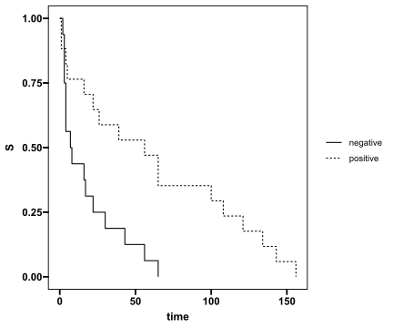
#cumulative hazard function
survival_AG |> mutate(logH=log(-log(S)),
logY=log(time))## n d time AG s S logH logY
## 1 17 0 0 positive 1.0000000 1.00000000 -Inf -Inf
## 2 17 2 1 positive 0.8823529 0.88235294 -2.07813725 0.0000000
## 3 15 1 4 positive 0.9333333 0.82352941 -1.63909324 1.3862944
## 4 14 1 5 positive 0.9285714 0.76470588 -1.31578376 1.6094379
## 5 13 1 16 positive 0.9230769 0.70588235 -1.05467188 2.7725887
## 6 12 1 22 positive 0.9166667 0.64705882 -0.83167832 3.0910425
## 7 11 1 26 positive 0.9090909 0.58823529 -0.63369360 3.2580965
## 8 10 1 39 positive 0.9000000 0.52941176 -0.45257438 3.6635616
## 9 9 1 56 positive 0.8888889 0.47058824 -0.28266561 4.0253517
## 10 8 2 65 positive 0.7500000 0.35294118 0.04061769 4.1743873
## 11 6 1 100 positive 0.8333333 0.29411765 0.20194070 4.6051702
## 12 5 1 108 positive 0.8000000 0.23529412 0.36943646 4.6821312
## 13 4 1 121 positive 0.7500000 0.17647059 0.55077745 4.7957905
## 14 3 1 134 positive 0.6666667 0.11764706 0.76083675 4.8978398
## 15 2 1 143 positive 0.5000000 0.05882353 1.04141152 4.9628446
## 16 1 1 156 positive 0.0000000 0.00000000 Inf 5.0498560
## 17 16 0 0 negative 1.0000000 1.00000000 -Inf -Inf
## 18 16 1 2 negative 0.9375000 0.93750000 -2.74049301 0.6931472
## 19 15 3 3 negative 0.8000000 0.75000000 -1.24589932 1.0986123
## 20 12 3 4 negative 0.7500000 0.56250000 -0.55275214 1.3862944
## 21 9 1 7 negative 0.8888889 0.50000000 -0.36651292 1.9459101
## 22 8 1 8 negative 0.8750000 0.43750000 -0.19033933 2.0794415
## 23 7 1 16 negative 0.8571429 0.37500000 -0.01935689 2.7725887
## 24 6 1 17 negative 0.8333333 0.31250000 0.15113254 2.8332133
## 25 5 1 22 negative 0.8000000 0.25000000 0.32663426 3.0910425
## 26 4 1 30 negative 0.7500000 0.18750000 0.51520189 3.4011974
## 27 3 1 43 negative 0.6666667 0.12500000 0.73209937 3.7612001
## 28 2 1 56 negative 0.5000000 0.06250000 1.01978144 4.0253517
## 29 1 1 65 negative 0.0000000 0.00000000 Inf 4.1743873survival_AG |> mutate(logH=log(-log(S)),
logY=log(time)) |> ggplot(aes(x=logY, y=logH)) + geom_point(aes(shape = AG), size=3) +
theme_bw() + theme(
# Hide panel borders and remove grid lines
#panel.border = element_line(colour = "black"),
panel.grid.major = element_blank(),
panel.grid.minor = element_blank(),
# Change axis line
#axis.line = element_line(colour = "black")
)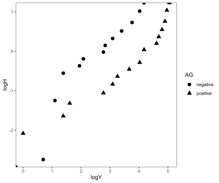
#the exponential model can be fitted:
res.leukemia_survival.poisson<-glm(rep(1, length(AG))~AG + offset(log(Survival.time)), family=poisson(),
data=leukemia_survival)
summary(res.leukemia_survival.poisson)##
## Call:
## glm(formula = rep(1, length(AG)) ~ AG + offset(log(Survival.time)),
## family = poisson(), data = leukemia_survival)
##
## Coefficients:
## Estimate Std. Error z value Pr(>|z|)
## (Intercept) -2.8869 0.2500 -11.548 < 2e-16 ***
## AGpositive -1.2478 0.3483 -3.582 0.00034 ***
## ---
## Signif. codes: 0 '***' 0.001 '**' 0.01 '*' 0.05 '.' 0.1 ' ' 1
##
## (Dispersion parameter for poisson family taken to be 1)
##
## Null deviance: 58.138 on 32 degrees of freedom
## Residual deviance: 46.198 on 31 degrees of freedom
## (1 observation deleted due to missingness)
## AIC: 116.2
##
## Number of Fisher Scoring iterations: 6#AIC
AIC(res.leukemia_survival.poisson)## [1] 116.1983-2* logLik(res.leukemia_survival.poisson)+2*2## 'log Lik.' 116.1983 (df=2)res.leukemia_survival.weibull <-survreg(Surv(Survival.time)~AG,dist="weibull", data=leukemia_survival)
summary(res.leukemia_survival.weibull)##
## Call:
## survreg(formula = Surv(Survival.time) ~ AG, data = leukemia_survival,
## dist = "weibull")
## Value Std. Error z p
## (Intercept) 2.836 0.285 9.95 <2e-16
## AGpositive 1.258 0.385 3.27 0.0011
## Log(scale) 0.100 0.141 0.71 0.4767
##
## Scale= 1.11
##
## Weibull distribution
## Loglik(model)= -149.2 Loglik(intercept only)= -153.6
## Chisq= 8.74 on 1 degrees of freedom, p= 0.0031
## Number of Newton-Raphson Iterations: 6
## n=33 (1 observation deleted due to missingness)mu <- res.leukemia_survival.poisson$fitted.values
y <- leukemia_survival$Survival.time[1:33]
m <- length(mu)
#lambda_hat
m/sum((mu-1)*log(y), na.rm = TRUE)## [1] 0.8594624res.leukemia_survival.weibull2 <-survreg(Surv(Survival.time)~AG+log(White.blood.cell),dist="weibull", data=leukemia_survival)
summary(res.leukemia_survival.weibull2)##
## Call:
## survreg(formula = Surv(Survival.time) ~ AG + log(White.blood.cell),
## data = leukemia_survival, dist = "weibull")
## Value Std. Error z p
## (Intercept) 3.7087 0.4727 7.85 4.3e-15
## AGpositive 1.0206 0.3781 2.70 0.0069
## log(White.blood.cell) -0.3103 0.1313 -2.36 0.0181
## Log(scale) 0.0399 0.1392 0.29 0.7745
##
## Scale= 1.04
##
## Weibull distribution
## Loglik(model)= -146.5 Loglik(intercept only)= -153.6
## Chisq= 14.18 on 2 degrees of freedom, p= 0.00084
## Number of Newton-Raphson Iterations: 6
## n=33 (1 observation deleted due to missingness)exp(-0.3103)## [1] 0.733227Chapter11 Clustered and Longitudinal Data
stroke.wide## # A tibble: 24 × 10
## Subject Group week1 week2 week3 week4 week5 week6 week7 week8
## <dbl> <chr> <dbl> <dbl> <dbl> <dbl> <dbl> <dbl> <dbl> <dbl>
## 1 1 A 45 45 45 45 80 80 80 90
## 2 2 A 20 25 25 25 30 35 30 50
## 3 3 A 50 50 55 70 70 75 90 90
## 4 4 A 25 25 35 40 60 60 70 80
## 5 5 A 100 100 100 100 100 100 100 100
## 6 6 A 20 20 30 50 50 60 85 95
## 7 7 A 30 35 35 40 50 60 75 85
## 8 8 A 30 35 45 50 55 65 65 70
## 9 9 B 40 55 60 70 80 85 90 90
## 10 10 B 65 65 70 70 80 80 80 80
## 11 11 B 30 30 40 45 65 85 85 85
## 12 12 B 25 35 35 35 40 45 45 45
## 13 13 B 45 45 80 80 80 80 80 80
## 14 14 B 15 15 10 10 10 20 20 20
## 15 15 B 35 35 35 45 45 45 50 50
## 16 16 B 40 40 40 55 55 55 60 65
## 17 17 C 20 20 30 30 30 30 30 30
## 18 18 C 35 35 35 40 40 40 40 40
## 19 19 C 35 35 35 40 40 40 45 45
## 20 20 C 45 65 65 65 80 85 95 100
## 21 21 C 45 65 70 90 90 95 95 100
## 22 22 C 25 30 30 35 40 40 40 40
## 23 23 C 25 25 30 30 30 30 35 40
## 24 24 C 15 35 35 35 40 50 65 65library(tidyverse)
stroke.wide |> pivot_longer(
cols = starts_with("week"),
names_to = "week",
values_to = "score",
values_drop_na = TRUE
) |>
mutate(
week = readr::parse_number(week)
)## # A tibble: 192 × 4
## Subject Group week score
## <dbl> <chr> <dbl> <dbl>
## 1 1 A 1 45
## 2 1 A 2 45
## 3 1 A 3 45
## 4 1 A 4 45
## 5 1 A 5 80
## 6 1 A 6 80
## 7 1 A 7 80
## 8 1 A 8 90
## 9 2 A 1 20
## 10 2 A 2 25
## 11 2 A 3 25
## 12 2 A 4 25
## 13 2 A 5 30
## 14 2 A 6 35
## 15 2 A 7 30
## 16 2 A 8 50
## 17 3 A 1 50
## 18 3 A 2 50
## 19 3 A 3 55
## 20 3 A 4 70
## 21 3 A 5 70
## 22 3 A 6 75
## 23 3 A 7 90
## 24 3 A 8 90
## 25 4 A 1 25
## # ℹ 167 more rowsstroke.long <- stroke.wide |> pivot_longer(
cols = starts_with("week"),
names_to = "week",
values_to = "score",
values_drop_na = TRUE
) |>
mutate(
week = readr::parse_number(week)
)
stroke.long## # A tibble: 192 × 4
## Subject Group week score
## <dbl> <chr> <dbl> <dbl>
## 1 1 A 1 45
## 2 1 A 2 45
## 3 1 A 3 45
## 4 1 A 4 45
## 5 1 A 5 80
## 6 1 A 6 80
## 7 1 A 7 80
## 8 1 A 8 90
## 9 2 A 1 20
## 10 2 A 2 25
## 11 2 A 3 25
## 12 2 A 4 25
## 13 2 A 5 30
## 14 2 A 6 35
## 15 2 A 7 30
## 16 2 A 8 50
## 17 3 A 1 50
## 18 3 A 2 50
## 19 3 A 3 55
## 20 3 A 4 70
## 21 3 A 5 70
## 22 3 A 6 75
## 23 3 A 7 90
## 24 3 A 8 90
## 25 4 A 1 25
## # ℹ 167 more rowsstroke.long |> ggplot(aes(x=week, y=score, group=Subject)) +
geom_line(aes(color = Group, linetype = Group), size=1) + theme_bw() + theme(
# Hide panel borders and remove grid lines
#panel.border = element_line(colour = "black"),
panel.grid.major = element_blank(),
panel.grid.minor = element_blank(),
# Change axis line
#axis.line = element_line(colour = "black")
)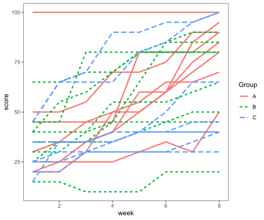
stroke.long |>
group_by(Group,week) |>
summarize(average=mean(score, na.rm = TRUE),
.groups = "drop") |>
ggplot(aes(x=week, y=average)) +
geom_line(aes(color = Group, linetype = Group), size=1) + theme_bw() + theme(
# Hide panel borders and remove grid lines
#panel.border = element_line(colour = "black"),
panel.grid.major = element_blank(),
panel.grid.minor = element_blank(),
# Change axis line
#axis.line = element_line(colour = "black")
)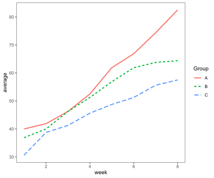
stroke.wide## # A tibble: 24 × 10
## Subject Group week1 week2 week3 week4 week5 week6 week7 week8
## <dbl> <chr> <dbl> <dbl> <dbl> <dbl> <dbl> <dbl> <dbl> <dbl>
## 1 1 A 45 45 45 45 80 80 80 90
## 2 2 A 20 25 25 25 30 35 30 50
## 3 3 A 50 50 55 70 70 75 90 90
## 4 4 A 25 25 35 40 60 60 70 80
## 5 5 A 100 100 100 100 100 100 100 100
## 6 6 A 20 20 30 50 50 60 85 95
## 7 7 A 30 35 35 40 50 60 75 85
## 8 8 A 30 35 45 50 55 65 65 70
## 9 9 B 40 55 60 70 80 85 90 90
## 10 10 B 65 65 70 70 80 80 80 80
## 11 11 B 30 30 40 45 65 85 85 85
## 12 12 B 25 35 35 35 40 45 45 45
## 13 13 B 45 45 80 80 80 80 80 80
## 14 14 B 15 15 10 10 10 20 20 20
## 15 15 B 35 35 35 45 45 45 50 50
## 16 16 B 40 40 40 55 55 55 60 65
## 17 17 C 20 20 30 30 30 30 30 30
## 18 18 C 35 35 35 40 40 40 40 40
## 19 19 C 35 35 35 40 40 40 45 45
## 20 20 C 45 65 65 65 80 85 95 100
## 21 21 C 45 65 70 90 90 95 95 100
## 22 22 C 25 30 30 35 40 40 40 40
## 23 23 C 25 25 30 30 30 30 35 40
## 24 24 C 15 35 35 35 40 50 65 65pairs(stroke.wide[, 3:10], main = "Scatter Plot Matrix for stroke Dataset")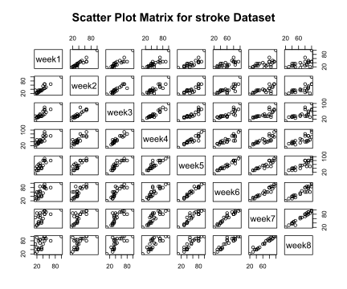
library(ggplot2)
library(GGally)
ggpairs(stroke.wide[, 3:10],
title = "Scatter Plot Matrix for stroke Dataset",
axisLabels = "show")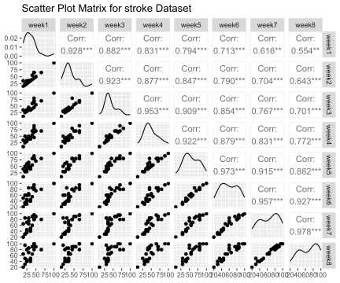
library("gpairs")
gpairs(data.frame(stroke.wide[, 3:10]))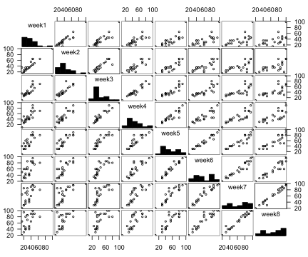
library(ggplot2)
ggcorr(stroke.wide[, 3:10],
low = "#3B9AB2",
mid = "#EEEEEE",
high = "#F21A00",
midpoint = 0.75,
limits = c(0.5, 1))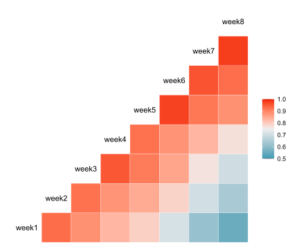
cor(stroke.wide[, 3:10], method = c("pearson"))## week1 week2 week3 week4 week5 week6 week7
## week1 1.0000000 0.9280364 0.8820153 0.8306544 0.7936646 0.7125630 0.6163514
## week2 0.9280364 1.0000000 0.9225559 0.8774061 0.8466833 0.7895900 0.7041487
## week3 0.8820153 0.9225559 1.0000000 0.9530914 0.9092148 0.8542616 0.7667288
## week4 0.8306544 0.8774061 0.9530914 1.0000000 0.9215159 0.8786341 0.8313352
## week5 0.7936646 0.8466833 0.9092148 0.9215159 1.0000000 0.9734304 0.9149511
## week6 0.7125630 0.7895900 0.8542616 0.8786341 0.9734304 1.0000000 0.9569344
## week7 0.6163514 0.7041487 0.7667288 0.8313352 0.9149511 0.9569344 1.0000000
## week8 0.5544246 0.6425992 0.7007907 0.7716004 0.8819552 0.9266933 0.9776126
## week8
## week1 0.5544246
## week2 0.6425992
## week3 0.7007907
## week4 0.7716004
## week5 0.8819552
## week6 0.9266933
## week7 0.9776126
## week8 1.0000000#model 11.1
#Table11.3
lmodel1 <- lm(score ~ Group+week, data = stroke.long)
summary(lmodel1)##
## Call:
## lm(formula = score ~ Group + week, data = stroke.long)
##
## Residuals:
## Min 1Q Median 3Q Max
## -49.332 -13.907 -4.532 15.043 58.394
##
## Coefficients:
## Estimate Std. Error t value Pr(>|t|)
## (Intercept) 36.8415 3.9712 9.277 < 2e-16 ***
## GroupB -5.6250 3.7147 -1.514 0.13164
## GroupC -12.1094 3.7147 -3.260 0.00132 **
## week 4.7644 0.6619 7.198 1.42e-11 ***
## ---
## Signif. codes: 0 '***' 0.001 '**' 0.01 '*' 0.05 '.' 0.1 ' ' 1
##
## Residual standard error: 21.01 on 188 degrees of freedom
## Multiple R-squared: 0.2494, Adjusted R-squared: 0.2374
## F-statistic: 20.82 on 3 and 188 DF, p-value: 1.084e-11#model 11.2
lmodel2 <- lm(score ~ Group*week, data = stroke.long)
summary(lmodel2)##
## Call:
## lm(formula = score ~ Group * week, data = stroke.long)
##
## Residuals:
## Min 1Q Median 3Q Max
## -47.813 -13.560 -5.305 13.337 63.854
##
## Coefficients:
## Estimate Std. Error t value Pr(>|t|)
## (Intercept) 29.82143 5.77401 5.165 6.16e-07 ***
## GroupB 3.34821 8.16569 0.410 0.6823
## GroupC -0.02232 8.16569 -0.003 0.9978
## week 6.32440 1.14342 5.531 1.07e-07 ***
## GroupB:week -1.99405 1.61705 -1.233 0.2191
## GroupC:week -2.68601 1.61705 -1.661 0.0984 .
## ---
## Signif. codes: 0 '***' 0.001 '**' 0.01 '*' 0.05 '.' 0.1 ' ' 1
##
## Residual standard error: 20.96 on 186 degrees of freedom
## Multiple R-squared: 0.2612, Adjusted R-squared: 0.2413
## F-statistic: 13.15 on 5 and 186 DF, p-value: 5.695e-11#Estimates of intercepts and slopes (and their standard errors) for each subject
#model 11.3, table 11.4
library(dplyr)
library(broom)
stroke.long |> group_by(Subject) |>
do(model = lm(score ~ week, data = .)) |>
pull(model)## [[1]]
##
## Call:
## lm(formula = score ~ week, data = .)
##
## Coefficients:
## (Intercept) week
## 30.0 7.5
##
##
## [[2]]
##
## Call:
## lm(formula = score ~ week, data = .)
##
## Coefficients:
## (Intercept) week
## 15.536 3.214
##
##
## [[3]]
##
## Call:
## lm(formula = score ~ week, data = .)
##
## Coefficients:
## (Intercept) week
## 39.821 6.429
##
##
## [[4]]
##
## Call:
## lm(formula = score ~ week, data = .)
##
## Coefficients:
## (Intercept) week
## 11.607 8.393
##
##
## [[5]]
##
## Call:
## lm(formula = score ~ week, data = .)
##
## Coefficients:
## (Intercept) week
## 100 0
##
##
## [[6]]
##
## Call:
## lm(formula = score ~ week, data = .)
##
## Coefficients:
## (Intercept) week
## 0.8929 11.1905
##
##
## [[7]]
##
## Call:
## lm(formula = score ~ week, data = .)
##
## Coefficients:
## (Intercept) week
## 15.357 7.976
##
##
## [[8]]
##
## Call:
## lm(formula = score ~ week, data = .)
##
## Coefficients:
## (Intercept) week
## 25.357 5.893
##
##
## [[9]]
##
## Call:
## lm(formula = score ~ week, data = .)
##
## Coefficients:
## (Intercept) week
## 38.571 7.262
##
##
## [[10]]
##
## Call:
## lm(formula = score ~ week, data = .)
##
## Coefficients:
## (Intercept) week
## 61.964 2.619
##
##
## [[11]]
##
## Call:
## lm(formula = score ~ week, data = .)
##
## Coefficients:
## (Intercept) week
## 14.464 9.702
##
##
## [[12]]
##
## Call:
## lm(formula = score ~ week, data = .)
##
## Coefficients:
## (Intercept) week
## 26.071 2.679
##
##
## [[13]]
##
## Call:
## lm(formula = score ~ week, data = .)
##
## Coefficients:
## (Intercept) week
## 48.75 5.00
##
##
## [[14]]
##
## Call:
## lm(formula = score ~ week, data = .)
##
## Coefficients:
## (Intercept) week
## 10.179 1.071
##
##
## [[15]]
##
## Call:
## lm(formula = score ~ week, data = .)
##
## Coefficients:
## (Intercept) week
## 31.25 2.50
##
##
## [[16]]
##
## Call:
## lm(formula = score ~ week, data = .)
##
## Coefficients:
## (Intercept) week
## 34.11 3.81
##
##
## [[17]]
##
## Call:
## lm(formula = score ~ week, data = .)
##
## Coefficients:
## (Intercept) week
## 21.071 1.429
##
##
## [[18]]
##
## Call:
## lm(formula = score ~ week, data = .)
##
## Coefficients:
## (Intercept) week
## 34.1071 0.8929
##
##
## [[19]]
##
## Call:
## lm(formula = score ~ week, data = .)
##
## Coefficients:
## (Intercept) week
## 32.143 1.607
##
##
## [[20]]
##
## Call:
## lm(formula = score ~ week, data = .)
##
## Coefficients:
## (Intercept) week
## 42.321 7.262
##
##
## [[21]]
##
## Call:
## lm(formula = score ~ week, data = .)
##
## Coefficients:
## (Intercept) week
## 48.571 7.262
##
##
## [[22]]
##
## Call:
## lm(formula = score ~ week, data = .)
##
## Coefficients:
## (Intercept) week
## 24.821 2.262
##
##
## [[23]]
##
## Call:
## lm(formula = score ~ week, data = .)
##
## Coefficients:
## (Intercept) week
## 22.321 1.845
##
##
## [[24]]
##
## Call:
## lm(formula = score ~ week, data = .)
##
## Coefficients:
## (Intercept) week
## 13.036 6.548stroke.long |> group_by(Subject) |>
do(model = lm(score ~ week, data = .)) |>
pull(model) |> purrr::map(summary)## [[1]]
##
## Call:
## lm(formula = score ~ week, data = .)
##
## Residuals:
## Min 1Q Median 3Q Max
## -15.000 -3.750 0.000 5.625 12.500
##
## Coefficients:
## Estimate Std. Error t value Pr(>|t|)
## (Intercept) 30.000 7.289 4.116 0.00624 **
## week 7.500 1.443 5.196 0.00202 **
## ---
## Signif. codes: 0 '***' 0.001 '**' 0.01 '*' 0.05 '.' 0.1 ' ' 1
##
## Residual standard error: 9.354 on 6 degrees of freedom
## Multiple R-squared: 0.8182, Adjusted R-squared: 0.7879
## F-statistic: 27 on 1 and 6 DF, p-value: 0.002022
##
##
## [[2]]
##
## Call:
## lm(formula = score ~ week, data = .)
##
## Residuals:
## Min 1Q Median 3Q Max
## -8.036 -2.054 0.000 1.696 8.750
##
## Coefficients:
## Estimate Std. Error t value Pr(>|t|)
## (Intercept) 15.5357 4.0994 3.790 0.00908 **
## week 3.2143 0.8118 3.959 0.00746 **
## ---
## Signif. codes: 0 '***' 0.001 '**' 0.01 '*' 0.05 '.' 0.1 ' ' 1
##
## Residual standard error: 5.261 on 6 degrees of freedom
## Multiple R-squared: 0.7232, Adjusted R-squared: 0.6771
## F-statistic: 15.68 on 1 and 6 DF, p-value: 0.007456
##
##
## [[3]]
##
## Call:
## lm(formula = score ~ week, data = .)
##
## Residuals:
## Min 1Q Median 3Q Max
## -4.107 -2.857 -1.607 3.929 5.179
##
## Coefficients:
## Estimate Std. Error t value Pr(>|t|)
## (Intercept) 39.8214 3.2093 12.41 1.67e-05 ***
## week 6.4286 0.6355 10.12 5.43e-05 ***
## ---
## Signif. codes: 0 '***' 0.001 '**' 0.01 '*' 0.05 '.' 0.1 ' ' 1
##
## Residual standard error: 4.119 on 6 degrees of freedom
## Multiple R-squared: 0.9446, Adjusted R-squared: 0.9354
## F-statistic: 102.3 on 1 and 6 DF, p-value: 5.426e-05
##
##
## [[4]]
##
## Call:
## lm(formula = score ~ week, data = .)
##
## Residuals:
## Min 1Q Median 3Q Max
## -5.179 -2.321 -1.071 2.188 6.429
##
## Coefficients:
## Estimate Std. Error t value Pr(>|t|)
## (Intercept) 11.6071 3.3874 3.427 0.014 *
## week 8.3929 0.6708 12.512 1.59e-05 ***
## ---
## Signif. codes: 0 '***' 0.001 '**' 0.01 '*' 0.05 '.' 0.1 ' ' 1
##
## Residual standard error: 4.347 on 6 degrees of freedom
## Multiple R-squared: 0.9631, Adjusted R-squared: 0.9569
## F-statistic: 156.5 on 1 and 6 DF, p-value: 1.594e-05
##
##
## [[5]]
##
## Call:
## lm(formula = score ~ week, data = .)
##
## Residuals:
## Min 1Q Median 3Q Max
## 0 0 0 0 0
##
## Coefficients:
## Estimate Std. Error t value Pr(>|t|)
## (Intercept) 100 0 Inf <2e-16 ***
## week 0 0 NaN NaN
## ---
## Signif. codes: 0 '***' 0.001 '**' 0.01 '*' 0.05 '.' 0.1 ' ' 1
##
## Residual standard error: 0 on 6 degrees of freedom
## Multiple R-squared: NaN, Adjusted R-squared: NaN
## F-statistic: NaN on 1 and 6 DF, p-value: NA
##
##
## [[6]]
##
## Call:
## lm(formula = score ~ week, data = .)
##
## Residuals:
## Min 1Q Median 3Q Max
## -8.0357 -5.0595 0.5357 4.8810 7.9167
##
## Coefficients:
## Estimate Std. Error t value Pr(>|t|)
## (Intercept) 0.8929 5.3036 0.168 0.872
## week 11.1905 1.0503 10.655 4.03e-05 ***
## ---
## Signif. codes: 0 '***' 0.001 '**' 0.01 '*' 0.05 '.' 0.1 ' ' 1
##
## Residual standard error: 6.807 on 6 degrees of freedom
## Multiple R-squared: 0.9498, Adjusted R-squared: 0.9414
## F-statistic: 113.5 on 1 and 6 DF, p-value: 4.03e-05
##
##
## [[7]]
##
## Call:
## lm(formula = score ~ week, data = .)
##
## Residuals:
## Min 1Q Median 3Q Max
## -7.2619 -4.5238 0.2381 4.3155 6.6667
##
## Coefficients:
## Estimate Std. Error t value Pr(>|t|)
## (Intercept) 15.3571 4.6695 3.289 0.016638 *
## week 7.9762 0.9247 8.626 0.000134 ***
## ---
## Signif. codes: 0 '***' 0.001 '**' 0.01 '*' 0.05 '.' 0.1 ' ' 1
##
## Residual standard error: 5.993 on 6 degrees of freedom
## Multiple R-squared: 0.9254, Adjusted R-squared: 0.9129
## F-statistic: 74.4 on 1 and 6 DF, p-value: 0.0001337
##
##
## [[8]]
##
## Call:
## lm(formula = score ~ week, data = .)
##
## Residuals:
## Min 1Q Median 3Q Max
## -2.5000 -1.7411 -0.5357 1.2946 4.2857
##
## Coefficients:
## Estimate Std. Error t value Pr(>|t|)
## (Intercept) 25.3571 1.9710 12.87 1.36e-05 ***
## week 5.8929 0.3903 15.10 5.32e-06 ***
## ---
## Signif. codes: 0 '***' 0.001 '**' 0.01 '*' 0.05 '.' 0.1 ' ' 1
##
## Residual standard error: 2.53 on 6 degrees of freedom
## Multiple R-squared: 0.9744, Adjusted R-squared: 0.9701
## F-statistic: 227.9 on 1 and 6 DF, p-value: 5.324e-06
##
##
## [[9]]
##
## Call:
## lm(formula = score ~ week, data = .)
##
## Residuals:
## Min 1Q Median 3Q Max
## -6.667 -1.726 1.250 2.500 5.119
##
## Coefficients:
## Estimate Std. Error t value Pr(>|t|)
## (Intercept) 38.5714 3.5225 10.95 3.44e-05 ***
## week 7.2619 0.6976 10.41 4.60e-05 ***
## ---
## Signif. codes: 0 '***' 0.001 '**' 0.01 '*' 0.05 '.' 0.1 ' ' 1
##
## Residual standard error: 4.521 on 6 degrees of freedom
## Multiple R-squared: 0.9475, Adjusted R-squared: 0.9388
## F-statistic: 108.4 on 1 and 6 DF, p-value: 4.603e-05
##
##
## [[10]]
##
## Call:
## lm(formula = score ~ week, data = .)
##
## Residuals:
## Min 1Q Median 3Q Max
## -2.9167 -2.2619 -0.0595 0.8929 4.9405
##
## Coefficients:
## Estimate Std. Error t value Pr(>|t|)
## (Intercept) 61.9643 2.2359 27.713 1.46e-07 ***
## week 2.6190 0.4428 5.915 0.00104 **
## ---
## Signif. codes: 0 '***' 0.001 '**' 0.01 '*' 0.05 '.' 0.1 ' ' 1
##
## Residual standard error: 2.87 on 6 degrees of freedom
## Multiple R-squared: 0.8536, Adjusted R-squared: 0.8292
## F-statistic: 34.99 on 1 and 6 DF, p-value: 0.001039
##
##
## [[11]]
##
## Call:
## lm(formula = score ~ week, data = .)
##
## Residuals:
## Min 1Q Median 3Q Max
## -8.2738 -4.6726 -0.7738 3.4226 12.3214
##
## Coefficients:
## Estimate Std. Error t value Pr(>|t|)
## (Intercept) 14.464 5.893 2.455 0.049480 *
## week 9.702 1.167 8.314 0.000164 ***
## ---
## Signif. codes: 0 '***' 0.001 '**' 0.01 '*' 0.05 '.' 0.1 ' ' 1
##
## Residual standard error: 7.563 on 6 degrees of freedom
## Multiple R-squared: 0.9201, Adjusted R-squared: 0.9068
## F-statistic: 69.13 on 1 and 6 DF, p-value: 0.0001642
##
##
## [[12]]
##
## Call:
## lm(formula = score ~ week, data = .)
##
## Residuals:
## Min 1Q Median 3Q Max
## -3.7500 -1.9643 0.3571 1.3839 3.5714
##
## Coefficients:
## Estimate Std. Error t value Pr(>|t|)
## (Intercept) 26.0714 2.1466 12.146 1.89e-05 ***
## week 2.6786 0.4251 6.301 0.000745 ***
## ---
## Signif. codes: 0 '***' 0.001 '**' 0.01 '*' 0.05 '.' 0.1 ' ' 1
##
## Residual standard error: 2.755 on 6 degrees of freedom
## Multiple R-squared: 0.8687, Adjusted R-squared: 0.8468
## F-statistic: 39.71 on 1 and 6 DF, p-value: 0.0007448
##
##
## [[13]]
##
## Call:
## lm(formula = score ~ week, data = .)
##
## Residuals:
## Min 1Q Median 3Q Max
## -13.75 -8.75 -1.25 7.50 16.25
##
## Coefficients:
## Estimate Std. Error t value Pr(>|t|)
## (Intercept) 48.750 8.927 5.461 0.00157 **
## week 5.000 1.768 2.828 0.03002 *
## ---
## Signif. codes: 0 '***' 0.001 '**' 0.01 '*' 0.05 '.' 0.1 ' ' 1
##
## Residual standard error: 11.46 on 6 degrees of freedom
## Multiple R-squared: 0.5714, Adjusted R-squared: 0.5
## F-statistic: 8 on 1 and 6 DF, p-value: 0.03002
##
##
## [[14]]
##
## Call:
## lm(formula = score ~ week, data = .)
##
## Residuals:
## Min 1Q Median 3Q Max
## -5.536 -3.661 1.786 2.857 3.750
##
## Coefficients:
## Estimate Std. Error t value Pr(>|t|)
## (Intercept) 10.1786 3.2093 3.172 0.0193 *
## week 1.0714 0.6355 1.686 0.1428
## ---
## Signif. codes: 0 '***' 0.001 '**' 0.01 '*' 0.05 '.' 0.1 ' ' 1
##
## Residual standard error: 4.119 on 6 degrees of freedom
## Multiple R-squared: 0.3214, Adjusted R-squared: 0.2083
## F-statistic: 2.842 on 1 and 6 DF, p-value: 0.1428
##
##
## [[15]]
##
## Call:
## lm(formula = score ~ week, data = .)
##
## Residuals:
## Min 1Q Median 3Q Max
## -3.75 -1.25 0.00 1.25 3.75
##
## Coefficients:
## Estimate Std. Error t value Pr(>|t|)
## (Intercept) 31.2500 1.9480 16.042 3.73e-06 ***
## week 2.5000 0.3858 6.481 0.000641 ***
## ---
## Signif. codes: 0 '***' 0.001 '**' 0.01 '*' 0.05 '.' 0.1 ' ' 1
##
## Residual standard error: 2.5 on 6 degrees of freedom
## Multiple R-squared: 0.875, Adjusted R-squared: 0.8542
## F-statistic: 42 on 1 and 6 DF, p-value: 0.0006413
##
##
## [[16]]
##
## Call:
## lm(formula = score ~ week, data = .)
##
## Residuals:
## Min 1Q Median 3Q Max
## -5.5357 -1.7857 -0.1786 1.9048 5.6548
##
## Coefficients:
## Estimate Std. Error t value Pr(>|t|)
## (Intercept) 34.1071 2.8090 12.142 1.9e-05 ***
## week 3.8095 0.5563 6.848 0.000477 ***
## ---
## Signif. codes: 0 '***' 0.001 '**' 0.01 '*' 0.05 '.' 0.1 ' ' 1
##
## Residual standard error: 3.605 on 6 degrees of freedom
## Multiple R-squared: 0.8866, Adjusted R-squared: 0.8677
## F-statistic: 46.9 on 1 and 6 DF, p-value: 0.0004768
##
##
## [[17]]
##
## Call:
## lm(formula = score ~ week, data = .)
##
## Residuals:
## Min 1Q Median 3Q Max
## -3.9286 -2.5000 -0.3571 2.1429 4.6429
##
## Coefficients:
## Estimate Std. Error t value Pr(>|t|)
## (Intercept) 21.0714 2.5505 8.262 0.00017 ***
## week 1.4286 0.5051 2.828 0.03002 *
## ---
## Signif. codes: 0 '***' 0.001 '**' 0.01 '*' 0.05 '.' 0.1 ' ' 1
##
## Residual standard error: 3.273 on 6 degrees of freedom
## Multiple R-squared: 0.5714, Adjusted R-squared: 0.5
## F-statistic: 8 on 1 and 6 DF, p-value: 0.03002
##
##
## [[18]]
##
## Call:
## lm(formula = score ~ week, data = .)
##
## Residuals:
## Min 1Q Median 3Q Max
## -1.7857 -0.9821 -0.1786 0.7589 2.3214
##
## Coefficients:
## Estimate Std. Error t value Pr(>|t|)
## (Intercept) 34.1071 1.1641 29.298 1.05e-07 ***
## week 0.8929 0.2305 3.873 0.00824 **
## ---
## Signif. codes: 0 '***' 0.001 '**' 0.01 '*' 0.05 '.' 0.1 ' ' 1
##
## Residual standard error: 1.494 on 6 degrees of freedom
## Multiple R-squared: 0.7143, Adjusted R-squared: 0.6667
## F-statistic: 15 on 1 and 6 DF, p-value: 0.008237
##
##
## [[19]]
##
## Call:
## lm(formula = score ~ week, data = .)
##
## Residuals:
## Min 1Q Median 3Q Max
## -1.96429 -0.71429 -0.08929 1.29464 1.60714
##
## Coefficients:
## Estimate Std. Error t value Pr(>|t|)
## (Intercept) 32.1429 1.1641 27.611 1.49e-07 ***
## week 1.6071 0.2305 6.971 0.000433 ***
## ---
## Signif. codes: 0 '***' 0.001 '**' 0.01 '*' 0.05 '.' 0.1 ' ' 1
##
## Residual standard error: 1.494 on 6 degrees of freedom
## Multiple R-squared: 0.8901, Adjusted R-squared: 0.8718
## F-statistic: 48.6 on 1 and 6 DF, p-value: 0.000433
##
##
## [[20]]
##
## Call:
## lm(formula = score ~ week, data = .)
##
## Residuals:
## Min 1Q Median 3Q Max
## -6.3690 -1.8155 0.2381 1.4881 8.1548
##
## Coefficients:
## Estimate Std. Error t value Pr(>|t|)
## (Intercept) 42.3214 3.6977 11.445 2.67e-05 ***
## week 7.2619 0.7322 9.917 6.07e-05 ***
## ---
## Signif. codes: 0 '***' 0.001 '**' 0.01 '*' 0.05 '.' 0.1 ' ' 1
##
## Residual standard error: 4.746 on 6 degrees of freedom
## Multiple R-squared: 0.9425, Adjusted R-squared: 0.9329
## F-statistic: 98.35 on 1 and 6 DF, p-value: 6.073e-05
##
##
## [[21]]
##
## Call:
## lm(formula = score ~ week, data = .)
##
## Residuals:
## Min 1Q Median 3Q Max
## -10.8333 -4.9702 0.7738 3.4226 12.3810
##
## Coefficients:
## Estimate Std. Error t value Pr(>|t|)
## (Intercept) 48.571 6.140 7.910 0.000217 ***
## week 7.262 1.216 5.972 0.000989 ***
## ---
## Signif. codes: 0 '***' 0.001 '**' 0.01 '*' 0.05 '.' 0.1 ' ' 1
##
## Residual standard error: 7.881 on 6 degrees of freedom
## Multiple R-squared: 0.856, Adjusted R-squared: 0.832
## F-statistic: 35.66 on 1 and 6 DF, p-value: 0.0009885
##
##
## [[22]]
##
## Call:
## lm(formula = score ~ week, data = .)
##
## Residuals:
## Min 1Q Median 3Q Max
## -2.917 -1.726 0.000 1.250 3.869
##
## Coefficients:
## Estimate Std. Error t value Pr(>|t|)
## (Intercept) 24.8214 1.8851 13.167 1.18e-05 ***
## week 2.2619 0.3733 6.059 0.000916 ***
## ---
## Signif. codes: 0 '***' 0.001 '**' 0.01 '*' 0.05 '.' 0.1 ' ' 1
##
## Residual standard error: 2.419 on 6 degrees of freedom
## Multiple R-squared: 0.8595, Adjusted R-squared: 0.8361
## F-statistic: 36.71 on 1 and 6 DF, p-value: 0.0009162
##
##
## [[23]]
##
## Call:
## lm(formula = score ~ week, data = .)
##
## Residuals:
## Min 1Q Median 3Q Max
## -3.3929 -1.1458 0.0298 1.1607 2.9167
##
## Coefficients:
## Estimate Std. Error t value Pr(>|t|)
## (Intercept) 22.3214 1.7092 13.060 1.24e-05 ***
## week 1.8452 0.3385 5.452 0.00158 **
## ---
## Signif. codes: 0 '***' 0.001 '**' 0.01 '*' 0.05 '.' 0.1 ' ' 1
##
## Residual standard error: 2.194 on 6 degrees of freedom
## Multiple R-squared: 0.832, Adjusted R-squared: 0.804
## F-statistic: 29.72 on 1 and 6 DF, p-value: 0.001585
##
##
## [[24]]
##
## Call:
## lm(formula = score ~ week, data = .)
##
## Residuals:
## Min 1Q Median 3Q Max
## -5.774 -4.316 -1.369 3.274 8.869
##
## Coefficients:
## Estimate Std. Error t value Pr(>|t|)
## (Intercept) 13.0357 4.4920 2.902 0.027263 *
## week 6.5476 0.8895 7.361 0.000322 ***
## ---
## Signif. codes: 0 '***' 0.001 '**' 0.01 '*' 0.05 '.' 0.1 ' ' 1
##
## Residual standard error: 5.765 on 6 degrees of freedom
## Multiple R-squared: 0.9003, Adjusted R-squared: 0.8837
## F-statistic: 54.18 on 1 and 6 DF, p-value: 0.000322library(tidyverse)
models <- stroke.long |> group_by(Subject) |>
do(model = lm(score ~ week, data = .)) |>
pull(model) |> purrr::map(tidy)
models[[1]][,1:3]## # A tibble: 2 × 3
## term estimate std.error
## <chr> <dbl> <dbl>
## 1 (Intercept) 30 7.29
## 2 week 7.5 1.44models[[1]][,1:3] |> pivot_wider(names_from = term, values_from = c(estimate, std.error))## # A tibble: 1 × 4
## `estimate_(Intercept)` estimate_week `std.error_(Intercept)` std.error_week
## <dbl> <dbl> <dbl> <dbl>
## 1 30 7.5 7.29 1.44#Table11.4
models2 <- models |> purrr::map(\(table) table[,1:3]) |>
map(~ (pivot_wider(.x, names_from=1,values_from= c(2,3))))
models2## [[1]]
## # A tibble: 1 × 4
## `estimate_(Intercept)` estimate_week `std.error_(Intercept)` std.error_week
## <dbl> <dbl> <dbl> <dbl>
## 1 30 7.5 7.29 1.44
##
## [[2]]
## # A tibble: 1 × 4
## `estimate_(Intercept)` estimate_week `std.error_(Intercept)` std.error_week
## <dbl> <dbl> <dbl> <dbl>
## 1 15.5 3.21 4.10 0.812
##
## [[3]]
## # A tibble: 1 × 4
## `estimate_(Intercept)` estimate_week `std.error_(Intercept)` std.error_week
## <dbl> <dbl> <dbl> <dbl>
## 1 39.8 6.43 3.21 0.636
##
## [[4]]
## # A tibble: 1 × 4
## `estimate_(Intercept)` estimate_week `std.error_(Intercept)` std.error_week
## <dbl> <dbl> <dbl> <dbl>
## 1 11.6 8.39 3.39 0.671
##
## [[5]]
## # A tibble: 1 × 4
## `estimate_(Intercept)` estimate_week `std.error_(Intercept)` std.error_week
## <dbl> <dbl> <dbl> <dbl>
## 1 100 0 0 0
##
## [[6]]
## # A tibble: 1 × 4
## `estimate_(Intercept)` estimate_week `std.error_(Intercept)` std.error_week
## <dbl> <dbl> <dbl> <dbl>
## 1 0.893 11.2 5.30 1.05
##
## [[7]]
## # A tibble: 1 × 4
## `estimate_(Intercept)` estimate_week `std.error_(Intercept)` std.error_week
## <dbl> <dbl> <dbl> <dbl>
## 1 15.4 7.98 4.67 0.925
##
## [[8]]
## # A tibble: 1 × 4
## `estimate_(Intercept)` estimate_week `std.error_(Intercept)` std.error_week
## <dbl> <dbl> <dbl> <dbl>
## 1 25.4 5.89 1.97 0.390
##
## [[9]]
## # A tibble: 1 × 4
## `estimate_(Intercept)` estimate_week `std.error_(Intercept)` std.error_week
## <dbl> <dbl> <dbl> <dbl>
## 1 38.6 7.26 3.52 0.698
##
## [[10]]
## # A tibble: 1 × 4
## `estimate_(Intercept)` estimate_week `std.error_(Intercept)` std.error_week
## <dbl> <dbl> <dbl> <dbl>
## 1 62.0 2.62 2.24 0.443
##
## [[11]]
## # A tibble: 1 × 4
## `estimate_(Intercept)` estimate_week `std.error_(Intercept)` std.error_week
## <dbl> <dbl> <dbl> <dbl>
## 1 14.5 9.70 5.89 1.17
##
## [[12]]
## # A tibble: 1 × 4
## `estimate_(Intercept)` estimate_week `std.error_(Intercept)` std.error_week
## <dbl> <dbl> <dbl> <dbl>
## 1 26.1 2.68 2.15 0.425
##
## [[13]]
## # A tibble: 1 × 4
## `estimate_(Intercept)` estimate_week `std.error_(Intercept)` std.error_week
## <dbl> <dbl> <dbl> <dbl>
## 1 48.8 5 8.93 1.77
##
## [[14]]
## # A tibble: 1 × 4
## `estimate_(Intercept)` estimate_week `std.error_(Intercept)` std.error_week
## <dbl> <dbl> <dbl> <dbl>
## 1 10.2 1.07 3.21 0.636
##
## [[15]]
## # A tibble: 1 × 4
## `estimate_(Intercept)` estimate_week `std.error_(Intercept)` std.error_week
## <dbl> <dbl> <dbl> <dbl>
## 1 31.3 2.5 1.95 0.386
##
## [[16]]
## # A tibble: 1 × 4
## `estimate_(Intercept)` estimate_week `std.error_(Intercept)` std.error_week
## <dbl> <dbl> <dbl> <dbl>
## 1 34.1 3.81 2.81 0.556
##
## [[17]]
## # A tibble: 1 × 4
## `estimate_(Intercept)` estimate_week `std.error_(Intercept)` std.error_week
## <dbl> <dbl> <dbl> <dbl>
## 1 21.1 1.43 2.55 0.505
##
## [[18]]
## # A tibble: 1 × 4
## `estimate_(Intercept)` estimate_week `std.error_(Intercept)` std.error_week
## <dbl> <dbl> <dbl> <dbl>
## 1 34.1 0.893 1.16 0.231
##
## [[19]]
## # A tibble: 1 × 4
## `estimate_(Intercept)` estimate_week `std.error_(Intercept)` std.error_week
## <dbl> <dbl> <dbl> <dbl>
## 1 32.1 1.61 1.16 0.231
##
## [[20]]
## # A tibble: 1 × 4
## `estimate_(Intercept)` estimate_week `std.error_(Intercept)` std.error_week
## <dbl> <dbl> <dbl> <dbl>
## 1 42.3 7.26 3.70 0.732
##
## [[21]]
## # A tibble: 1 × 4
## `estimate_(Intercept)` estimate_week `std.error_(Intercept)` std.error_week
## <dbl> <dbl> <dbl> <dbl>
## 1 48.6 7.26 6.14 1.22
##
## [[22]]
## # A tibble: 1 × 4
## `estimate_(Intercept)` estimate_week `std.error_(Intercept)` std.error_week
## <dbl> <dbl> <dbl> <dbl>
## 1 24.8 2.26 1.89 0.373
##
## [[23]]
## # A tibble: 1 × 4
## `estimate_(Intercept)` estimate_week `std.error_(Intercept)` std.error_week
## <dbl> <dbl> <dbl> <dbl>
## 1 22.3 1.85 1.71 0.338
##
## [[24]]
## # A tibble: 1 × 4
## `estimate_(Intercept)` estimate_week `std.error_(Intercept)` std.error_week
## <dbl> <dbl> <dbl> <dbl>
## 1 13.0 6.55 4.49 0.890#Table 11.4
names(models2) <- seq(1:24)
bind_rows(models2, .id = "Subject")## # A tibble: 24 × 5
## Subject `estimate_(Intercept)` estimate_week `std.error_(Intercept)`
## <chr> <dbl> <dbl> <dbl>
## 1 1 30 7.5 7.29
## 2 2 15.5 3.21 4.10
## 3 3 39.8 6.43 3.21
## 4 4 11.6 8.39 3.39
## 5 5 100 0 0
## 6 6 0.893 11.2 5.30
## 7 7 15.4 7.98 4.67
## 8 8 25.4 5.89 1.97
## 9 9 38.6 7.26 3.52
## 10 10 62.0 2.62 2.24
## 11 11 14.5 9.70 5.89
## 12 12 26.1 2.68 2.15
## 13 13 48.8 5 8.93
## 14 14 10.2 1.07 3.21
## 15 15 31.3 2.5 1.95
## 16 16 34.1 3.81 2.81
## 17 17 21.1 1.43 2.55
## 18 18 34.1 0.893 1.16
## 19 19 32.1 1.61 1.16
## 20 20 42.3 7.26 3.70
## 21 21 48.6 7.26 6.14
## 22 22 24.8 2.26 1.89
## 23 23 22.3 1.85 1.71
## 24 24 13.0 6.55 4.49
## # ℹ 1 more variable: std.error_week <dbl>models3 <- bind_rows(models2, .id = "Subject")
models3["Groups"] <- factor(c(rep("A", 8), rep("B", 8), rep("C", 8)))
models3## # A tibble: 24 × 6
## Subject `estimate_(Intercept)` estimate_week `std.error_(Intercept)`
## <chr> <dbl> <dbl> <dbl>
## 1 1 30 7.5 7.29
## 2 2 15.5 3.21 4.10
## 3 3 39.8 6.43 3.21
## 4 4 11.6 8.39 3.39
## 5 5 100 0 0
## 6 6 0.893 11.2 5.30
## 7 7 15.4 7.98 4.67
## 8 8 25.4 5.89 1.97
## 9 9 38.6 7.26 3.52
## 10 10 62.0 2.62 2.24
## 11 11 14.5 9.70 5.89
## 12 12 26.1 2.68 2.15
## 13 13 48.8 5 8.93
## 14 14 10.2 1.07 3.21
## 15 15 31.3 2.5 1.95
## 16 16 34.1 3.81 2.81
## 17 17 21.1 1.43 2.55
## 18 18 34.1 0.893 1.16
## 19 19 32.1 1.61 1.16
## 20 20 42.3 7.26 3.70
## 21 21 48.6 7.26 6.14
## 22 22 24.8 2.26 1.89
## 23 23 22.3 1.85 1.71
## 24 24 13.0 6.55 4.49
## # ℹ 2 more variables: std.error_week <dbl>, Groups <fct>#Table 11.5 Analysis of variance of intercept estimates
summary(lm(`estimate_(Intercept)` ~ Groups, data = models3))##
## Call:
## lm(formula = `estimate_(Intercept)` ~ Groups, data = models3)
##
## Residuals:
## Min 1Q Median 3Q Max
## -28.929 -14.330 -3.192 6.551 70.179
##
## Coefficients:
## Estimate Std. Error t value Pr(>|t|)
## (Intercept) 29.82143 7.57209 3.938 0.000753 ***
## GroupsB 3.34821 10.70855 0.313 0.757617
## GroupsC -0.02232 10.70855 -0.002 0.998357
## ---
## Signif. codes: 0 '***' 0.001 '**' 0.01 '*' 0.05 '.' 0.1 ' ' 1
##
## Residual standard error: 21.42 on 21 degrees of freedom
## Multiple R-squared: 0.00621, Adjusted R-squared: -0.08844
## F-statistic: 0.06561 on 2 and 21 DF, p-value: 0.9367#Table 11.6 Analysis of variance of slope estimates
summary(lm(estimate_week ~ Groups, data = models3))##
## Call:
## lm(formula = estimate_week ~ Groups, data = models3)
##
## Residuals:
## Min 1Q Median 3Q Max
## -6.3244 -1.8806 -0.4762 2.2786 5.3720
##
## Coefficients:
## Estimate Std. Error t value Pr(>|t|)
## (Intercept) 6.324 1.080 5.854 8.25e-06 ***
## GroupsB -1.994 1.528 -1.305 0.2060
## GroupsC -2.686 1.528 -1.758 0.0933 .
## ---
## Signif. codes: 0 '***' 0.001 '**' 0.01 '*' 0.05 '.' 0.1 ' ' 1
##
## Residual standard error: 3.056 on 21 degrees of freedom
## Multiple R-squared: 0.1369, Adjusted R-squared: 0.05475
## F-statistic: 1.666 on 2 and 21 DF, p-value: 0.213stroke.long <- stroke.wide |> pivot_longer(
cols = starts_with("week"),
names_to = "week",
values_to = "score",
values_drop_na = TRUE
) |>
mutate(
week = readr::parse_number(week),
Group = factor(Group)
)
colnames(stroke.long) <- c("Subject","Group","time","ability")
stroke.long## # A tibble: 192 × 4
## Subject Group time ability
## <dbl> <fct> <dbl> <dbl>
## 1 1 A 1 45
## 2 1 A 2 45
## 3 1 A 3 45
## 4 1 A 4 45
## 5 1 A 5 80
## 6 1 A 6 80
## 7 1 A 7 80
## 8 1 A 8 90
## 9 2 A 1 20
## 10 2 A 2 25
## 11 2 A 3 25
## 12 2 A 4 25
## 13 2 A 5 30
## 14 2 A 6 35
## 15 2 A 7 30
## 16 2 A 8 50
## 17 3 A 1 50
## 18 3 A 2 50
## 19 3 A 3 55
## 20 3 A 4 70
## 21 3 A 5 70
## 22 3 A 6 75
## 23 3 A 7 90
## 24 3 A 8 90
## 25 4 A 1 25
## # ℹ 167 more rows#model 11.2 pooled
lmodel2 <- glm(ability ~ Group*time, data = stroke.long)
summary(lmodel2)##
## Call:
## glm(formula = ability ~ Group * time, data = stroke.long)
##
## Coefficients:
## Estimate Std. Error t value Pr(>|t|)
## (Intercept) 29.82143 5.77401 5.165 6.16e-07 ***
## GroupB 3.34821 8.16569 0.410 0.6823
## GroupC -0.02232 8.16569 -0.003 0.9978
## time 6.32440 1.14342 5.531 1.07e-07 ***
## GroupB:time -1.99405 1.61705 -1.233 0.2191
## GroupC:time -2.68601 1.61705 -1.661 0.0984 .
## ---
## Signif. codes: 0 '***' 0.001 '**' 0.01 '*' 0.05 '.' 0.1 ' ' 1
##
## (Dispersion parameter for gaussian family taken to be 439.2931)
##
## Null deviance: 110597 on 191 degrees of freedom
## Residual deviance: 81709 on 186 degrees of freedom
## AIC: 1721.1
##
## Number of Fisher Scoring iterations: 2The estimate of \(\sigma_e\) is square root of the deviance divided by the degrees of freedom
lmodel2$df.residual## [1] 186lmodel2$deviance## [1] 81708.52#The estimate of \sigma_e is
sqrt(lmodel2$deviance/lmodel2$df.residual)## [1] 20.95932#the deviance
sum((lmodel2$fitted.values - lmodel2$data$ability)^2)## [1] 81708.52#Data reduction
summary(lm(`estimate_(Intercept)` ~ Groups, data = models3))##
## Call:
## lm(formula = `estimate_(Intercept)` ~ Groups, data = models3)
##
## Residuals:
## Min 1Q Median 3Q Max
## -28.929 -14.330 -3.192 6.551 70.179
##
## Coefficients:
## Estimate Std. Error t value Pr(>|t|)
## (Intercept) 29.82143 7.57209 3.938 0.000753 ***
## GroupsB 3.34821 10.70855 0.313 0.757617
## GroupsC -0.02232 10.70855 -0.002 0.998357
## ---
## Signif. codes: 0 '***' 0.001 '**' 0.01 '*' 0.05 '.' 0.1 ' ' 1
##
## Residual standard error: 21.42 on 21 degrees of freedom
## Multiple R-squared: 0.00621, Adjusted R-squared: -0.08844
## F-statistic: 0.06561 on 2 and 21 DF, p-value: 0.9367summary(lm(estimate_week ~ Groups, data = models3))##
## Call:
## lm(formula = estimate_week ~ Groups, data = models3)
##
## Residuals:
## Min 1Q Median 3Q Max
## -6.3244 -1.8806 -0.4762 2.2786 5.3720
##
## Coefficients:
## Estimate Std. Error t value Pr(>|t|)
## (Intercept) 6.324 1.080 5.854 8.25e-06 ***
## GroupsB -1.994 1.528 -1.305 0.2060
## GroupsC -2.686 1.528 -1.758 0.0933 .
## ---
## Signif. codes: 0 '***' 0.001 '**' 0.01 '*' 0.05 '.' 0.1 ' ' 1
##
## Residual standard error: 3.056 on 21 degrees of freedom
## Multiple R-squared: 0.1369, Adjusted R-squared: 0.05475
## F-statistic: 1.666 on 2 and 21 DF, p-value: 0.213library(geepack)
#GEE independent
gee.ind<-geeglm(ability~Group*time,
family=gaussian("identity"),
data=stroke.long,
id=Subject,
wave=time,
std.err = 'san.se',
corst="independence")
summary(gee.ind)##
## Call:
## geeglm(formula = ability ~ Group * time, family = gaussian("identity"),
## data = stroke.long, id = Subject, waves = time, corstr = "independence",
## std.err = "san.se")
##
## Coefficients:
## Estimate Std.err Wald Pr(>|W|)
## (Intercept) 29.82143 10.17573 8.589 0.00338 **
## GroupB 3.34821 11.63333 0.083 0.77349
## GroupC -0.02232 10.89585 0.000 0.99837
## time 6.32440 1.13148 31.243 2.28e-08 ***
## GroupB:time -1.99405 1.47762 1.821 0.17718
## GroupC:time -2.68601 1.47010 3.338 0.06769 .
## ---
## Signif. codes: 0 '***' 0.001 '**' 0.01 '*' 0.05 '.' 0.1 ' ' 1
##
## Correlation structure = independence
## Estimated Scale Parameters:
##
## Estimate Std.err
## (Intercept) 425.6 103.2
## Number of clusters: 24 Maximum cluster size: 8gee.ind$coefficients## (Intercept) GroupB GroupC time GroupB:time GroupC:time
## 29.82143 3.34821 -0.02232 6.32440 -1.99405 -2.68601summary(gee.ind)$coefficients## Estimate Std.err Wald Pr(>|W|)
## (Intercept) 29.82143 10.176 8.589e+00 3.383e-03
## GroupB 3.34821 11.633 8.284e-02 7.735e-01
## GroupC -0.02232 10.896 4.197e-06 9.984e-01
## time 6.32440 1.131 3.124e+01 2.277e-08
## GroupB:time -1.99405 1.478 1.821e+00 1.772e-01
## GroupC:time -2.68601 1.470 3.338e+00 6.769e-02#GEE exchangeable
gee.exch<-geeglm(ability~Group*time,family=gaussian,
std.err = 'san.se',
data=stroke.long,
id=Subject,
wave=time,
corst="exchangeable")
summary(gee.exch)##
## Call:
## geeglm(formula = ability ~ Group * time, family = gaussian, data = stroke.long,
## id = Subject, waves = time, corstr = "exchangeable", std.err = "san.se")
##
## Coefficients:
## Estimate Std.err Wald Pr(>|W|)
## (Intercept) 29.8214 10.1757 8.59 0.0034 **
## GroupB 3.3482 11.6333 0.08 0.7735
## GroupC -0.0223 10.8958 0.00 0.9984
## time 6.3244 1.1315 31.24 2.3e-08 ***
## GroupB:time -1.9940 1.4776 1.82 0.1772
## GroupC:time -2.6860 1.4701 3.34 0.0677 .
## ---
## Signif. codes: 0 '***' 0.001 '**' 0.01 '*' 0.05 '.' 0.1 ' ' 1
##
## Correlation structure = exchangeable
## Estimated Scale Parameters:
##
## Estimate Std.err
## (Intercept) 426 103
## Link = identity
##
## Estimated Correlation Parameters:
## Estimate Std.err
## alpha 0.831 0.035
## Number of clusters: 24 Maximum cluster size: 8gee.exch$cor.link## [1] "identity"#the df
gee.exch$df.residual## [1] 186#the deviance
sum((gee.exch$fitted.values - gee.exch$data$ability)^2)## [1] 81709#The estimate of \sigma_e is
sqrt(sum((gee.exch$fitted.values - gee.exch$data$ability)^2)/gee.exch$df.residual)## [1] 21#an autoregressive model of order 1, AR(1),
gee.ar1<-geeglm(ability~Group*time,
family=gaussian,
std.err = 'san.se',
data=stroke.long,
id=Subject,
wave=time,
corst="ar1")
summary(gee.ar1)##
## Call:
## geeglm(formula = ability ~ Group * time, family = gaussian, data = stroke.long,
## id = Subject, waves = time, corstr = "ar1", std.err = "san.se")
##
## Coefficients:
## Estimate Std.err Wald Pr(>|W|)
## (Intercept) 33.239 9.757 11.61 0.00066 ***
## GroupB 0.121 10.957 0.00 0.99122
## GroupC -5.960 10.376 0.33 0.56566
## time 6.077 1.035 34.45 4.4e-09 ***
## GroupB:time -2.139 1.333 2.58 0.10854
## GroupC:time -2.243 1.472 2.32 0.12756
## ---
## Signif. codes: 0 '***' 0.001 '**' 0.01 '*' 0.05 '.' 0.1 ' ' 1
##
## Correlation structure = ar1
## Estimated Scale Parameters:
##
## Estimate Std.err
## (Intercept) 430 103
## Link = identity
##
## Estimated Correlation Parameters:
## Estimate Std.err
## alpha 0.933 0.0158
## Number of clusters: 24 Maximum cluster size: 8#the df
gee.ar1$df.residual## [1] 186#the deviance
sum((gee.ar1$fitted.values - gee.ar1$data$ability)^2)## [1] 82465#The estimate of \sigma_e is
sqrt(sum((gee.ar1$fitted.values - gee.ar1$data$ability)^2)/gee.ar1$df.residual)## [1] 21.1summary(gee.ar1)$coefficients## Estimate Std.err Wald Pr(>|W|)
## (Intercept) 33.239 9.76 1.16e+01 6.58e-04
## GroupB 0.121 10.96 1.21e-04 9.91e-01
## GroupC -5.960 10.38 3.30e-01 5.66e-01
## time 6.077 1.04 3.44e+01 4.38e-09
## GroupB:time -2.139 1.33 2.58e+00 1.09e-01
## GroupC:time -2.243 1.47 2.32e+00 1.28e-01#GEE unstructured
gee.un<-geeglm(ability~Group*time,
family=gaussian,
data=stroke.long,
id=Subject,
wave=time,
corst="unstructured")
summary(gee.un)##
## Call:
## geeglm(formula = ability ~ Group * time, family = gaussian, data = stroke.long,
## id = Subject, waves = time, corstr = "unstructured")
##
## Coefficients:
## Estimate Std.err Wald Pr(>|W|)
## (Intercept) 27.536 1727.066 0 0.99
## GroupB 0.918 2222.037 0 1.00
## GroupC 1.549 2010.530 0 1.00
## time 6.879 469.581 0 0.99
## GroupB:time -1.423 603.770 0 1.00
## GroupC:time -3.073 546.696 0 1.00
##
## Correlation structure = unstructured
## Estimated Scale Parameters:
##
## Estimate Std.err
## (Intercept) 428 2667
## Link = identity
##
## Estimated Correlation Parameters:
## Estimate Std.err
## alpha.1:2 0.713 15.87
## alpha.1:3 0.708 12.86
## alpha.1:4 0.694 10.97
## alpha.1:5 0.692 15.82
## alpha.1:6 0.601 10.88
## alpha.1:7 0.534 7.01
## alpha.1:8 0.462 24.01
## alpha.2:3 0.793 8.98
## alpha.2:4 0.796 9.58
## alpha.2:5 0.805 9.89
## alpha.2:6 0.746 7.69
## alpha.2:7 0.702 5.42
## alpha.2:8 0.638 22.63
## alpha.3:4 0.920 13.66
## alpha.3:5 0.914 10.99
## alpha.3:6 0.854 12.63
## alpha.3:7 0.810 7.49
## alpha.3:8 0.737 20.52
## alpha.4:5 0.972 11.63
## alpha.4:6 0.922 14.14
## alpha.4:7 0.922 9.75
## alpha.4:8 0.850 20.73
## alpha.5:6 1.046 10.89
## alpha.5:7 1.032 2.52
## alpha.5:8 0.979 19.20
## alpha.6:7 1.072 8.55
## alpha.6:8 1.023 20.63
## alpha.7:8 1.145 30.29
## Number of clusters: 24 Maximum cluster size: 8#the df
gee.un$df.residual## [1] 186#the deviance
sum((gee.un$fitted.values - gee.un$data$ability)^2)## [1] 82257#The estimate of \sigma_e is
sqrt(sum((gee.un$fitted.values - gee.un$data$ability)^2)/gee.un$df.residual)## [1] 21nlme::lme: this package uses a “within-between” or parameter-counting approach, which is adequate for simpler model structures (single-term or nested models), but which gets progressively less applicable/harder for random-slopes models (see comments in the GLMM FAQ), crossed random effects, unbalanced designs, or more complex random effect structures where the random effects themselves are no longer iid
#random effects models
library(nlme)
rndeff<-lme(ability~Group*time,
data=stroke.long,
random=~1|Subject)
summary(rndeff)## Linear mixed-effects model fit by REML
## Data: stroke.long
## AIC BIC logLik
## 1453 1479 -718
##
## Random effects:
## Formula: ~1 | Subject
## (Intercept) Residual
## StdDev: 20.1 8.56
##
## Fixed effects: ability ~ Group * time
## Value Std.Error DF t-value p-value
## (Intercept) 29.82 7.50 165 3.98 0.0001
## GroupB 3.35 10.60 21 0.32 0.7553
## GroupC -0.02 10.60 21 0.00 0.9983
## time 6.32 0.47 165 13.54 0.0000
## GroupB:time -1.99 0.66 165 -3.02 0.0030
## GroupC:time -2.69 0.66 165 -4.07 0.0001
## Correlation:
## (Intr) GroupB GroupC time GrpB:t
## GroupB -0.707
## GroupC -0.707 0.500
## time -0.280 0.198 0.198
## GroupB:time 0.198 -0.280 -0.140 -0.707
## GroupC:time 0.198 -0.140 -0.280 -0.707 0.500
##
## Standardized Within-Group Residuals:
## Min Q1 Med Q3 Max
## -2.65509 -0.53335 -0.00376 0.53502 2.69237
##
## Number of Observations: 192
## Number of Groups: 24ind<-corAR1(form = ~ 1 | Subject)
gls.ind<-gls(ability~Group*time,
data=stroke.long,
correlation=ind)
summary(gls.ind)## Generalized least squares fit by REML
## Model: ability ~ Group * time
## Data: stroke.long
## AIC BIC logLik
## 1320 1346 -652
##
## Correlation Structure: AR(1)
## Formula: ~1 | Subject
## Parameter estimate(s):
## Phi
## 0.95
##
## Coefficients:
## Value Std.Error t-value p-value
## (Intercept) 33.4 7.94 4.21 0.0000
## GroupB -0.1 11.22 -0.01 0.9918
## GroupC -6.2 11.22 -0.55 0.5798
## time 6.1 0.84 7.20 0.0000
## GroupB:time -2.1 1.19 -1.79 0.0744
## GroupC:time -2.2 1.19 -1.88 0.0622
##
## Correlation:
## (Intr) GroupB GroupC time GrpB:t
## GroupB -0.707
## GroupC -0.707 0.500
## time -0.478 0.338 0.338
## GroupB:time 0.338 -0.478 -0.239 -0.707
## GroupC:time 0.338 -0.239 -0.478 -0.707 0.500
##
## Standardized residuals:
## Min Q1 Med Q3 Max
## -2.143 -0.586 -0.226 0.653 2.825
##
## Residual standard error: 21.4
## Degrees of freedom: 192 total; 186 residualgls.ind$coefficients## (Intercept) GroupB GroupC time GroupB:time GroupC:time
## 33.393 -0.115 -6.226 6.075 -2.141 -2.238summary(gls.ind)$coefficients## (Intercept) GroupB GroupC time GroupB:time GroupC:time
## 33.393 -0.115 -6.226 6.075 -2.141 -2.238exch<-corCompSymm(form = ~ 1 | Subject)
gls.exch<-gls(ability~Group*time,
data=stroke.long,
correlation=exch)
summary(gls.exch)## Generalized least squares fit by REML
## Model: ability ~ Group * time
## Data: stroke.long
## AIC BIC logLik
## 1453 1479 -718
##
## Correlation Structure: Compound symmetry
## Formula: ~1 | Subject
## Parameter estimate(s):
## Rho
## 0.847
##
## Coefficients:
## Value Std.Error t-value p-value
## (Intercept) 29.82 7.50 3.98 0.0001
## GroupB 3.35 10.60 0.32 0.7525
## GroupC -0.02 10.60 0.00 0.9983
## time 6.32 0.47 13.54 0.0000
## GroupB:time -1.99 0.66 -3.02 0.0029
## GroupC:time -2.69 0.66 -4.07 0.0001
##
## Correlation:
## (Intr) GroupB GroupC time GrpB:t
## GroupB -0.707
## GroupC -0.707 0.500
## time -0.280 0.198 0.198
## GroupB:time 0.198 -0.280 -0.140 -0.707
## GroupC:time 0.198 -0.140 -0.280 -0.707 0.500
##
## Standardized residuals:
## Min Q1 Med Q3 Max
## -2.186 -0.620 -0.243 0.610 2.919
##
## Residual standard error: 21.9
## Degrees of freedom: 192 total; 186 residualsummary(gls.exch)$coefficients## (Intercept) GroupB GroupC time GroupB:time GroupC:time
## 29.8214 3.3482 -0.0223 6.3244 -1.9940 -2.6860ar1<-corAR1(form = ~ 1 | Subject)
gls.ar1<-gls(ability~Group*time, data=stroke.long,
correlation=ar1)
summary(gls.ar1)## Generalized least squares fit by REML
## Model: ability ~ Group * time
## Data: stroke.long
## AIC BIC logLik
## 1320 1346 -652
##
## Correlation Structure: AR(1)
## Formula: ~1 | Subject
## Parameter estimate(s):
## Phi
## 0.95
##
## Coefficients:
## Value Std.Error t-value p-value
## (Intercept) 33.4 7.94 4.21 0.0000
## GroupB -0.1 11.22 -0.01 0.9918
## GroupC -6.2 11.22 -0.55 0.5798
## time 6.1 0.84 7.20 0.0000
## GroupB:time -2.1 1.19 -1.79 0.0744
## GroupC:time -2.2 1.19 -1.88 0.0622
##
## Correlation:
## (Intr) GroupB GroupC time GrpB:t
## GroupB -0.707
## GroupC -0.707 0.500
## time -0.478 0.338 0.338
## GroupB:time 0.338 -0.478 -0.239 -0.707
## GroupC:time 0.338 -0.239 -0.478 -0.707 0.500
##
## Standardized residuals:
## Min Q1 Med Q3 Max
## -2.143 -0.586 -0.226 0.653 2.825
##
## Residual standard error: 21.4
## Degrees of freedom: 192 total; 186 residualun<-corSymm(form = ~ 1 | Subject)
gls.un<-gls(ability~Group+time+Group*time, data=stroke.long,
correlation=un)
summary(gls.un)## Generalized least squares fit by REML
## Model: ability ~ Group + time + Group * time
## Data: stroke.long
## AIC BIC logLik
## 1338 1451 -634
##
## Correlation Structure: General
## Formula: ~1 | Subject
## Parameter estimate(s):
## Correlation:
## 1 2 3 4 5 6 7
## 2 0.931
## 3 0.868 0.931
## 4 0.789 0.875 0.952
## 5 0.708 0.819 0.892 0.913
## 6 0.576 0.731 0.815 0.855 0.965
## 7 0.426 0.606 0.693 0.782 0.886 0.945
## 8 0.319 0.522 0.609 0.707 0.840 0.908 0.975
##
## Coefficients:
## Value Std.Error t-value p-value
## (Intercept) 35.7 7.94 4.50 0.0000
## GroupB -5.5 11.24 -0.49 0.6244
## GroupC -11.3 11.24 -1.01 0.3156
## time 6.7 1.17 5.74 0.0000
## GroupB:time -3.2 1.65 -1.96 0.0512
## GroupC:time -3.9 1.65 -2.34 0.0204
##
## Correlation:
## (Intr) GroupB GroupC time GrpB:t
## GroupB -0.707
## GroupC -0.707 0.500
## time -0.760 0.537 0.537
## GroupB:time 0.537 -0.760 -0.380 -0.707
## GroupC:time 0.537 -0.380 -0.760 -0.707 0.500
##
## Standardized residuals:
## Min Q1 Med Q3 Max
## -2.4710 -0.5084 -0.0354 0.8261 2.7072
##
## Residual standard error: 21.3
## Degrees of freedom: 192 total; 186 residualAIC(gls.ind,gls.exch,gls.ar1,gls.un)## df AIC
## gls.ind 8 1320
## gls.exch 8 1453
## gls.ar1 8 1320
## gls.un 35 1338#Exercises 11.1
#Table11.9
dogs## # A tibble: 40 × 4
## dog condition y x
## <dbl> <dbl> <dbl> <dbl>
## 1 1 1 81.7 54.3
## 2 1 2 84.3 62
## 3 1 3 72.8 62.3
## 4 1 4 71.7 47.3
## 5 1 5 76.7 53.6
## 6 1 6 75.8 38
## 7 1 7 77.3 54.2
## 8 1 8 86.3 54
## 9 2 1 105 81.5
## 10 2 2 114. 80.8
## 11 2 3 109. 74.5
## 12 2 4 83.9 71.9
## 13 2 5 89 79.5
## 14 2 6 86.1 73
## 15 2 7 88.7 74.7
## 16 2 8 118. 88.6
## 17 3 1 95.5 65
## 18 3 2 95.7 68.3
## 19 3 3 84 67.9
## 20 3 4 85.8 61
## 21 3 5 98.8 66
## 22 3 6 106. 81.8
## 23 3 7 106. 71.4
## 24 3 8 115 96
## 25 4 1 113. 87.5
## # ℹ 15 more rows#Pooled
Pooled.dogs <- glm(y ~ x, data = dogs)
summary(Pooled.dogs)##
## Call:
## glm(formula = y ~ x, data = dogs)
##
## Coefficients:
## Estimate Std. Error t value Pr(>|t|)
## (Intercept) 40.7681 6.6173 6.16 3.4e-07 ***
## x 0.7692 0.0916 8.40 3.4e-10 ***
## ---
## Signif. codes: 0 '***' 0.001 '**' 0.01 '*' 0.05 '.' 0.1 ' ' 1
##
## (Dispersion parameter for gaussian family taken to be 62.6)
##
## Null deviance: 6795 on 39 degrees of freedom
## Residual deviance: 2378 on 38 degrees of freedom
## AIC: 282.9
##
## Number of Fisher Scoring iterations: 2models.dog <- dogs |> group_by(dog) |>
do(model = lm(y ~ x, data = .)) |>
pull(model) |> purrr::map(tidy)
models.dog## [[1]]
## # A tibble: 2 × 5
## term estimate std.error statistic p.value
## <chr> <dbl> <dbl> <dbl> <dbl>
## 1 (Intercept) 67.4 14.1 4.78 0.00305
## 2 x 0.206 0.262 0.784 0.463
##
## [[2]]
## # A tibble: 2 × 5
## term estimate std.error statistic p.value
## <chr> <dbl> <dbl> <dbl> <dbl>
## 1 (Intercept) -43.1 51.0 -0.845 0.430
## 2 x 1.82 0.651 2.80 0.0313
##
## [[3]]
## # A tibble: 2 × 5
## term estimate std.error statistic p.value
## <chr> <dbl> <dbl> <dbl> <dbl>
## 1 (Intercept) 43.2 15.6 2.76 0.0327
## 2 x 0.765 0.214 3.57 0.0117
##
## [[4]]
## # A tibble: 2 × 5
## term estimate std.error statistic p.value
## <chr> <dbl> <dbl> <dbl> <dbl>
## 1 (Intercept) 60.5 17.2 3.52 0.0126
## 2 x 0.547 0.212 2.58 0.0420
##
## [[5]]
## # A tibble: 2 × 5
## term estimate std.error statistic p.value
## <chr> <dbl> <dbl> <dbl> <dbl>
## 1 (Intercept) 58.9 17.6 3.34 0.0155
## 2 x 0.530 0.244 2.17 0.0729models.dog2 <- models.dog |> purrr::map(\(table) table[,1:3]) |>
map(~ (pivot_wider(.x, names_from=1,values_from= c(2,3))))
models.dog2## [[1]]
## # A tibble: 1 × 4
## `estimate_(Intercept)` estimate_x `std.error_(Intercept)` std.error_x
## <dbl> <dbl> <dbl> <dbl>
## 1 67.4 0.206 14.1 0.262
##
## [[2]]
## # A tibble: 1 × 4
## `estimate_(Intercept)` estimate_x `std.error_(Intercept)` std.error_x
## <dbl> <dbl> <dbl> <dbl>
## 1 -43.1 1.82 51.0 0.651
##
## [[3]]
## # A tibble: 1 × 4
## `estimate_(Intercept)` estimate_x `std.error_(Intercept)` std.error_x
## <dbl> <dbl> <dbl> <dbl>
## 1 43.2 0.765 15.6 0.214
##
## [[4]]
## # A tibble: 1 × 4
## `estimate_(Intercept)` estimate_x `std.error_(Intercept)` std.error_x
## <dbl> <dbl> <dbl> <dbl>
## 1 60.5 0.547 17.2 0.212
##
## [[5]]
## # A tibble: 1 × 4
## `estimate_(Intercept)` estimate_x `std.error_(Intercept)` std.error_x
## <dbl> <dbl> <dbl> <dbl>
## 1 58.9 0.530 17.6 0.244names(models.dog2) <- seq(1:5)
models.dog3 <- bind_rows(models.dog2, .id = "dog")
models.dog3["dog"] <- c(seq(1:5))
models.dog3## # A tibble: 5 × 5
## dog `estimate_(Intercept)` estimate_x `std.error_(Intercept)` std.error_x
## <int> <dbl> <dbl> <dbl> <dbl>
## 1 1 67.4 0.206 14.1 0.262
## 2 2 -43.1 1.82 51.0 0.651
## 3 3 43.2 0.765 15.6 0.214
## 4 4 60.5 0.547 17.2 0.212
## 5 5 58.9 0.530 17.6 0.244mean(models.dog3$`estimate_(Intercept)`)## [1] 37.4#Data reduction
#dogs, ignoring conditions
#Intercept (s.e.)
summary(lm(`estimate_(Intercept)` ~ 1, data = models.dog3))##
## Call:
## lm(formula = `estimate_(Intercept)` ~ 1, data = models.dog3)
##
## Residuals:
## 1 2 3 4 5
## 30.0 -80.5 5.8 23.1 21.5
##
## Coefficients:
## Estimate Std. Error t value Pr(>|t|)
## (Intercept) 37.4 20.5 1.82 0.14
##
## Residual standard error: 45.8 on 4 degrees of freedom#Slope (s.e.)
summary(lm(estimate_x ~ 1, data = models.dog3))##
## Call:
## lm(formula = estimate_x ~ 1, data = models.dog3)
##
## Residuals:
## 1 2 3 4 5
## -0.56820 1.04728 -0.00826 -0.22713 -0.24370
##
## Coefficients:
## Estimate Std. Error t value Pr(>|t|)
## (Intercept) 0.774 0.277 2.8 0.049 *
## ---
## Signif. codes: 0 '***' 0.001 '**' 0.01 '*' 0.05 '.' 0.1 ' ' 1
##
## Residual standard error: 0.619 on 4 degrees of freedom#Data reduction
#conditions, ignoring dogs
models.dog4 <- dogs |> group_by(condition) |>
do(model = lm(y ~ x, data = .)) |>
pull(model) |> purrr::map(tidy)
models.dog5 <- models.dog4 |> purrr::map(\(table) table[,1:3]) |>
map(~ (pivot_wider(.x, names_from=1,values_from= c(2,3))))
names(models.dog5) <- seq(1:8)
models.dog6 <- bind_rows(models.dog5, .id = "condition")
models.dog6["condition"] <- c(seq(1:8))
models.dog6## # A tibble: 8 × 5
## condition `estimate_(Intercept)` estimate_x std.error_(Intercept…¹ std.error_x
## <int> <dbl> <dbl> <dbl> <dbl>
## 1 1 38.0 0.830 10.1 0.135
## 2 2 28.2 0.952 21.8 0.278
## 3 3 3.72 1.25 42.6 0.583
## 4 4 40.8 0.717 32.0 0.507
## 5 5 43.7 0.741 24.7 0.327
## 6 6 56.0 0.542 15.7 0.246
## 7 7 62.8 0.417 31.3 0.453
## 8 8 48.9 0.693 19.1 0.242
## # ℹ abbreviated name: ¹`std.error_(Intercept)`#Data reduction
#conditions, ignoring dogs
#Intercept (s.e.)
summary(lm(`estimate_(Intercept)` ~ 1, data = models.dog6))##
## Call:
## lm(formula = `estimate_(Intercept)` ~ 1, data = models.dog6)
##
## Residuals:
## Min 1Q Median 3Q Max
## -36.54 -4.75 1.98 10.45 22.54
##
## Coefficients:
## Estimate Std. Error t value Pr(>|t|)
## (Intercept) 40.26 6.45 6.24 0.00043 ***
## ---
## Signif. codes: 0 '***' 0.001 '**' 0.01 '*' 0.05 '.' 0.1 ' ' 1
##
## Residual standard error: 18.2 on 7 degrees of freedom#Slope (s.e.)
summary(lm(estimate_x ~ 1, data = models.dog6))##
## Call:
## lm(formula = estimate_x ~ 1, data = models.dog6)
##
## Residuals:
## Min 1Q Median 3Q Max
## -0.3504 -0.1123 -0.0389 0.0924 0.4826
##
## Coefficients:
## Estimate Std. Error t value Pr(>|t|)
## (Intercept) 0.768 0.090 8.53 6e-05 ***
## ---
## Signif. codes: 0 '***' 0.001 '**' 0.01 '*' 0.05 '.' 0.1 ' ' 1
##
## Residual standard error: 0.254 on 7 degrees of freedom#Random effects
#dogs random, conditions fixed
library(nlme)
rndeff.dog<-lme(y~factor(condition)+x,
data=dogs,
random= ~ 1|dog)
summary(rndeff.dog)## Linear mixed-effects model fit by REML
## Data: dogs
## AIC BIC logLik
## 264 280 -121
##
## Random effects:
## Formula: ~1 | dog
## (Intercept) Residual
## StdDev: 0.00311 8.45
##
## Fixed effects: y ~ factor(condition) + x
## Value Std.Error DF t-value p-value
## (Intercept) 45.4 8.79 27 5.17 0.000
## factor(condition)2 0.1 5.36 27 0.01 0.991
## factor(condition)3 -3.8 5.34 27 -0.71 0.484
## factor(condition)4 -5.3 5.47 27 -0.97 0.339
## factor(condition)5 -0.8 5.34 27 -0.15 0.880
## factor(condition)6 -0.9 5.49 27 -0.17 0.869
## factor(condition)7 -3.8 5.37 27 -0.71 0.482
## factor(condition)8 0.8 5.36 27 0.15 0.882
## x 0.7 0.11 27 6.75 0.000
## Correlation:
## (Intr) fct()2 fct()3 fct()4 fct()5 fct()6 fct()7 fct()8
## factor(condition)2 -0.232
## factor(condition)3 -0.321 0.497
## factor(condition)4 -0.493 0.470 0.492
## factor(condition)5 -0.300 0.499 0.500 0.487
## factor(condition)6 -0.503 0.467 0.491 0.525 0.486
## factor(condition)7 -0.398 0.487 0.499 0.508 0.497 0.508
## factor(condition)8 -0.227 0.503 0.497 0.468 0.499 0.466 0.486
## x -0.903 -0.078 0.019 0.217 -0.005 0.230 0.106 -0.084
##
## Standardized Within-Group Residuals:
## Min Q1 Med Q3 Max
## -1.6785 -0.7484 0.0576 0.5904 1.5730
##
## Number of Observations: 40
## Number of Groups: 5#Random effects
#conditions random, dogs fixed
rndeff.condition<-lme(y~factor(dog)+x,
data=dogs,
random= ~ 1|condition)
summary(rndeff.condition)## Linear mixed-effects model fit by REML
## Data: dogs
## AIC BIC logLik
## 272 284 -128
##
## Random effects:
## Formula: ~1 | condition
## (Intercept) Residual
## StdDev: 0.000347 7.88
##
## Fixed effects: y ~ factor(dog) + x
## Value Std.Error DF t-value p-value
## (Intercept) 44.9 7.28 27 6.16 0.0000
## factor(dog)2 5.1 5.04 27 1.02 0.3183
## factor(dog)3 8.2 4.61 27 1.77 0.0875
## factor(dog)4 9.1 5.19 27 1.75 0.0916
## factor(dog)5 7.0 4.57 27 1.53 0.1388
## x 0.6 0.13 27 4.97 0.0000
## Correlation:
## (Intr) fct()2 fct()3 fct()4 fct()5
## factor(dog)2 0.365
## factor(dog)3 0.249 0.658
## factor(dog)4 0.396 0.703 0.663
## factor(dog)5 0.234 0.653 0.631 0.657
## x -0.924 -0.623 -0.520 -0.651 -0.506
##
## Standardized Within-Group Residuals:
## Min Q1 Med Q3 Max
## -1.767 -0.620 0.202 0.571 1.625
##
## Number of Observations: 40
## Number of Groups: 8#Random effects
#both random,
rndeff.both<-lme(y~x,
data=dogs,
random= ~ dog|condition)
summary(rndeff.both)## Linear mixed-effects model fit by REML
## Data: dogs
## AIC BIC logLik
## 290 299 -139
##
## Random effects:
## Formula: ~dog | condition
## Structure: General positive-definite, Log-Cholesky parametrization
## StdDev Corr
## (Intercept) 2.81e-04 (Intr)
## dog 7.32e-13 0
## Residual 7.91e+00
##
## Fixed effects: y ~ x
## Value Std.Error DF t-value p-value
## (Intercept) 40.8 6.62 31 6.16 0
## x 0.8 0.09 31 8.40 0
## Correlation:
## (Intr)
## x -0.982
##
## Standardized Within-Group Residuals:
## Min Q1 Med Q3 Max
## -2.009 -0.675 0.122 0.757 1.633
##
## Number of Observations: 40
## Number of Groups: 8#GEE conditions fixed
dogs$dog2 <- seq(1:40)
gee.ind.dog<-geeglm(y~factor(dog)+x,
family=gaussian("identity"),
data=dogs,
#weights=condition,
id=condition,
#corstr = "fixed",
std.err = 'san.se',
corst="independence")
summary(gee.ind.dog)##
## Call:
## geeglm(formula = y ~ factor(dog) + x, family = gaussian("identity"),
## data = dogs, id = condition, corstr = "independence", std.err = "san.se")
##
## Coefficients:
## Estimate Std.err Wald Pr(>|W|)
## (Intercept) 44.8626 4.6430 93.36 < 2e-16 ***
## factor(dog)2 5.1232 4.7041 1.19 0.276
## factor(dog)3 8.1755 3.5073 5.43 0.020 *
## factor(dog)4 9.0770 4.0122 5.12 0.024 *
## factor(dog)5 6.9657 3.5274 3.90 0.048 *
## x 0.6288 0.0818 59.04 1.5e-14 ***
## ---
## Signif. codes: 0 '***' 0.001 '**' 0.01 '*' 0.05 '.' 0.1 ' ' 1
##
## Correlation structure = independence
## Estimated Scale Parameters:
##
## Estimate Std.err
## (Intercept) 52.8 8.86
## Number of clusters: 40 Maximum cluster size: 1gee.ind.condition<-geeglm(y~factor(condition)+x,
family=gaussian("identity"),
data=dogs,
#weights=condition,
id=dog,
#corstr = "fixed",
std.err = 'san.se',
corst="independence")
summary(gee.ind.condition)##
## Call:
## geeglm(formula = y ~ factor(condition) + x, family = gaussian("identity"),
## data = dogs, id = dog, corstr = "independence", std.err = "san.se")
##
## Coefficients:
## Estimate Std.err Wald Pr(>|W|)
## (Intercept) 45.3929 6.7752 44.89 2.1e-11 ***
## factor(condition)2 0.0592 2.2242 0.00 0.979
## factor(condition)3 -3.7953 3.9743 0.91 0.340
## factor(condition)4 -5.3275 2.9544 3.25 0.071 .
## factor(condition)5 -0.8148 4.2951 0.04 0.850
## factor(condition)6 -0.9122 3.6664 0.06 0.804
## factor(condition)7 -3.8340 4.3793 0.77 0.381
## factor(condition)8 0.8007 3.9208 0.04 0.838
## x 0.7284 0.0870 70.06 < 2e-16 ***
## ---
## Signif. codes: 0 '***' 0.001 '**' 0.01 '*' 0.05 '.' 0.1 ' ' 1
##
## Correlation structure = independence
## Estimated Scale Parameters:
##
## Estimate Std.err
## (Intercept) 55.3 10.2
## Number of clusters: 5 Maximum cluster size: 8EXERCISES 11.2
\[\mathbf b=\mathbb E(\hat{\boldsymbol\beta})=\mathbb E((\mathbf{X}^T\mathbf{V}^{-1}\mathbf{X})^{-1}\mathbf{X}^T\mathbf{V}^{-1}\mathbf{y})\\ =(\mathbf{X}^T\mathbf{V}^{-1}\mathbf{X})^{-1}\mathbf{X}^T\mathbf{V}^{-1}\mathbb E(\mathbf{y})\\ =(\mathbf{X}^T\mathbf{V}^{-1}\mathbf{X})^{-1}\mathbf{X}^T\mathbf{V}^{-1}\mathbf{X}\hat{\boldsymbol\beta}\\ =\hat{\boldsymbol\beta}\]
ear## # A tibble: 18 × 4
## age treatment `number clear` frequency
## <chr> <chr> <dbl> <dbl>
## 1 < 2 CEF 0 8
## 2 < 2 CEF 1 2
## 3 < 2 CEF 2 8
## 4 < 2 AMO 0 11
## 5 < 2 AMO 1 2
## 6 < 2 AMO 2 2
## 7 2 to 5 CEF 0 6
## 8 2 to 5 CEF 1 6
## 9 2 to 5 CEF 2 10
## 10 2 to 5 AMO 0 3
## 11 2 to 5 AMO 1 1
## 12 2 to 5 AMO 2 5
## 13 >= 6 CEF 0 0
## 14 >= 6 CEF 1 1
## 15 >= 6 CEF 2 3
## 16 >= 6 AMO 0 1
## 17 >= 6 AMO 1 0
## 18 >= 6 AMO 2 6ear2 <- ear |> group_by(age, treatment) |> mutate(ratio=frequency/sum(frequency)) |> ungroup()
ear2## # A tibble: 18 × 5
## age treatment `number clear` frequency ratio
## <chr> <chr> <dbl> <dbl> <dbl>
## 1 < 2 CEF 0 8 0.444
## 2 < 2 CEF 1 2 0.111
## 3 < 2 CEF 2 8 0.444
## 4 < 2 AMO 0 11 0.733
## 5 < 2 AMO 1 2 0.133
## 6 < 2 AMO 2 2 0.133
## 7 2 to 5 CEF 0 6 0.273
## 8 2 to 5 CEF 1 6 0.273
## 9 2 to 5 CEF 2 10 0.455
## 10 2 to 5 AMO 0 3 0.333
## 11 2 to 5 AMO 1 1 0.111
## 12 2 to 5 AMO 2 5 0.556
## 13 >= 6 CEF 0 0 0
## 14 >= 6 CEF 1 1 0.25
## 15 >= 6 CEF 2 3 0.75
## 16 >= 6 AMO 0 1 0.143
## 17 >= 6 AMO 1 0 0
## 18 >= 6 AMO 2 6 0.857#Pooled
Pooled.ear1 <- glm(`number clear` ~ factor(age)*factor(treatment),
weights = ratio,
data = ear2)
summary(Pooled.ear1)##
## Call:
## glm(formula = `number clear` ~ factor(age) * factor(treatment),
## data = ear2, weights = ratio)
##
## Coefficients:
## Estimate Std. Error t value Pr(>|t|)
## (Intercept) 0.400 0.601 0.67 0.52
## factor(age)>= 6 1.314 0.849 1.55 0.15
## factor(age)2 to 5 0.822 0.849 0.97 0.36
## factor(treatment)CEF 0.600 0.849 0.71 0.50
## factor(age)>= 6:factor(treatment)CEF -0.564 1.201 -0.47 0.65
## factor(age)2 to 5:factor(treatment)CEF -0.640 1.201 -0.53 0.61
##
## (Dispersion parameter for gaussian family taken to be 0.361)
##
## Null deviance: 4.8536 on 15 degrees of freedom
## Residual deviance: 3.6066 on 10 degrees of freedom
## AIC: Inf
##
## Number of Fisher Scoring iterations: 2ear2$age <- factor(ear2$age)
ear2$treatment <- factor(ear2$treatment)
ear2## # A tibble: 18 × 5
## age treatment `number clear` frequency ratio
## <fct> <fct> <dbl> <dbl> <dbl>
## 1 < 2 CEF 0 8 0.444
## 2 < 2 CEF 1 2 0.111
## 3 < 2 CEF 2 8 0.444
## 4 < 2 AMO 0 11 0.733
## 5 < 2 AMO 1 2 0.133
## 6 < 2 AMO 2 2 0.133
## 7 2 to 5 CEF 0 6 0.273
## 8 2 to 5 CEF 1 6 0.273
## 9 2 to 5 CEF 2 10 0.455
## 10 2 to 5 AMO 0 3 0.333
## 11 2 to 5 AMO 1 1 0.111
## 12 2 to 5 AMO 2 5 0.556
## 13 >= 6 CEF 0 0 0
## 14 >= 6 CEF 1 1 0.25
## 15 >= 6 CEF 2 3 0.75
## 16 >= 6 AMO 0 1 0.143
## 17 >= 6 AMO 1 0 0
## 18 >= 6 AMO 2 6 0.857models <- ear2 |> group_by(age) |>
do(model = lm(`number clear` ~ factor(treatment),
weights = ratio, data = .)) |>
pull(model) |> purrr::map(tidy)
models2 <- models |> purrr::map(\(table) table[,1:3]) |>
map(~ (pivot_wider(.x, names_from=1,values_from= c(2,3))))
names(models2) <- c("< 2",">6","2 to 5")
models3 <- bind_rows(models2, .id = "age")
models3## # A tibble: 3 × 5
## age `estimate_(Intercept)` estimate_factor(treatme…¹ std.error_(Intercept…²
## <chr> <dbl> <dbl> <dbl>
## 1 < 2 0.400 0.6 0.591
## 2 >6 1.71 0.0357 0.582
## 3 2 to 5 1.22 -0.0404 0.619
## # ℹ abbreviated names: ¹`estimate_factor(treatment)CEF`,
## # ²`std.error_(Intercept)`
## # ℹ 1 more variable: `std.error_factor(treatment)CEF` <dbl>models <- ear2 |> group_by(treatment) |>
do(model = lm(`number clear` ~ factor(age),
weights = ratio, data = .)) |>
pull(model) |> purrr::map(tidy)
models2 <- models |> purrr::map(\(table) table[,1:3]) |>
map(~ (pivot_wider(.x, names_from=1,values_from= c(2,3))))
names(models2) <- c("AMO","CEF")
models3 <- bind_rows(models2, .id = "treatment")
models3## # A tibble: 2 × 7
## treatment `estimate_(Intercept)` estimate_factor(age)…¹ estimate_factor(age)…²
## <chr> <dbl> <dbl> <dbl>
## 1 AMO 0.4 1.31 0.822
## 2 CEF 1 0.75 0.182
## # ℹ abbreviated names: ¹`estimate_factor(age)>= 6`,
## # ²`estimate_factor(age)2 to 5`
## # ℹ 3 more variables: `std.error_(Intercept)` <dbl>,
## # `std.error_factor(age)>= 6` <dbl>, `std.error_factor(age)2 to 5` <dbl>#logistic model
library(nnet)
res.ear=multinom(`number clear`~age+treatment, weights=frequency,data=ear2)## # weights: 15 (8 variable)
## initial value 82.395922
## iter 10 value 68.432035
## final value 68.431944
## convergedsummary(res.ear)## Call:
## multinom(formula = `number clear` ~ age + treatment, data = ear2,
## weights = frequency)
##
## Coefficients:
## (Intercept) age>= 6 age2 to 5 treatmentCEF
## 1 -2.24 1.86 1.19 1.142
## 2 -1.08 3.05 1.07 0.788
##
## Std. Errors:
## (Intercept) age>= 6 age2 to 5 treatmentCEF
## 1 0.775 1.55 0.760 0.795
## 2 0.520 1.15 0.585 0.578
##
## Residual Deviance: 137
## AIC: 153t(res.ear$fitted.values[seq(1,18, by=3),])## 1 4 7 10 13 16
## 0 0.480 0.6908 0.234 0.428 0.0527 0.1127
## 1 0.161 0.0739 0.257 0.150 0.1140 0.0777
## 2 0.359 0.2353 0.509 0.423 0.8333 0.8096res.ear$edf## [1] 8ear3 <- ear |> group_by(age, treatment) |> mutate(n=sum(frequency)) |> ungroup()
estimate <- matrix(t(res.ear$fitted.values[seq(1,18, by=3),]))*ear3$n
estimate## [,1]
## [1,] 8.638
## [2,] 2.892
## [3,] 6.470
## [4,] 10.363
## [5,] 1.108
## [6,] 3.530
## [7,] 5.151
## [8,] 5.652
## [9,] 11.196
## [10,] 3.848
## [11,] 1.348
## [12,] 3.803
## [13,] 0.211
## [14,] 0.456
## [15,] 3.333
## [16,] 0.789
## [17,] 0.544
## [18,] 5.667observe <- matrix(ear2$frequency)
observe## [,1]
## [1,] 8
## [2,] 2
## [3,] 8
## [4,] 11
## [5,] 2
## [6,] 2
## [7,] 6
## [8,] 6
## [9,] 10
## [10,] 3
## [11,] 1
## [12,] 5
## [13,] 0
## [14,] 1
## [15,] 3
## [16,] 1
## [17,] 0
## [18,] 6#X^2
sum(((observe-estimate)/estimate)^2)## [1] 4.76Chapter12 Bayesian Analysis
P_theta <- 0.0333
for(theta in c(seq(0,0.5, 0.1))){
#P(y|theta)
print(choose(10,7)*theta^7*(1-theta)^3)
}## [1] 0
## [1] 8.75e-06
## [1] 0.000786
## [1] 0.009
## [1] 0.0425
## [1] 0.117Likelihood <- function(theta){
choose(10,7)*theta^7*(1-theta)^3
}#Table 12.1
library(tidyverse)
tibble(theta = c(seq(0,1.0, 0.1)),
Hypothesis=c(rep('H0', 6),rep('H1', 5))) |> mutate(
Prior = c(rep(0.0333, 6),rep(0.16,5)),
Likelihood = choose(10,7)*theta^7*(1-theta)^3,
LikelihoodXPrior= Prior*Likelihood,
Posterior = LikelihoodXPrior/sum(LikelihoodXPrior)
)## # A tibble: 11 × 6
## theta Hypothesis Prior Likelihood LikelihoodXPrior Posterior
## <dbl> <chr> <dbl> <dbl> <dbl> <dbl>
## 1 0 H0 0.0333 0 0 0
## 2 0.1 H0 0.0333 0.00000875 0.000000291 0.00000235
## 3 0.2 H0 0.0333 0.000786 0.0000262 0.000211
## 4 0.3 H0 0.0333 0.00900 0.000300 0.00241
## 5 0.4 H0 0.0333 0.0425 0.00141 0.0114
## 6 0.5 H0 0.0333 0.117 0.00390 0.0314
## 7 0.6 H1 0.16 0.215 0.0344 0.277
## 8 0.7 H1 0.16 0.267 0.0427 0.344
## 9 0.8 H1 0.16 0.201 0.0322 0.260
## 10 0.9 H1 0.16 0.0574 0.00918 0.0740
## 11 1 H1 0.16 0 0 0log(log(0.15)/log(0.25))## [1] 0.314x = seq(-0.8, 1.2, 0.01)
y = dnorm(x, mean = 0, sd = 0.1907)
Likelihood = dnorm(x, mean = 0.58, sd = 0.2266)
h=function(x){dnorm(x, mean = 0, sd = 0.1907)*dnorm(x, mean = 0.58, sd = 0.2266)}
c = integrate(h,-0.8, 1.2)
Posterior = y*Likelihood/c$value
plot(x, y, type = "l", col = "gray",
lty = 2, xlab="LHR", cex.lab=1.5, cex.main=1.5,
ylim = c(0,3), xlim = c(-0.8,1.2),
lwd=2)
text(-0.5, .6*max(y) , "Sceptical prior", cex=1.5 )
lines(x, Likelihood, type = "l", col = "gray",
lty = 1, cex.lab=1.5,
cex.main=1.5, lwd=2)
text(1.0, .6*max(Likelihood) , "Likelihood", cex=1.5 )
lines(x, Posterior, type = "l", col = "skyblue",
lty = 1, cex.lab=1.5,
cex.main=1.5, lwd=2)
text(0.3, max(Posterior) +0.2, "Posterior", col = "skyblue",
cex=1.5 )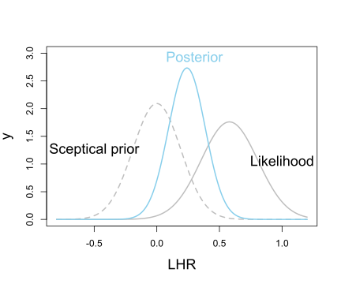
x = seq(-0.8, 1.2, 0.01)
y = dunif(x, min = -0.6, max = 1.2)
Likelihood = dnorm(x, mean = 0.58, sd = 0.2266)
h=function(x){dunif(x, min = -0.6, max = 1.2)*dnorm(x, mean = 0.58, sd = 0.2266)}
c = integrate(h,-0.8, 1.2)
Posterior = y*Likelihood/c$value
plot(x, y, type = "l", col = "gray",
lty = 2, xlab="LHR", cex.lab=1.5, cex.main=1.5,
ylim = c(0,3), xlim = c(-0.8,1.2),
lwd=2)
text(-0.5, .6*max(y) , "Uninformative prior", cex=1.5 )
lines(x, Likelihood, type = "l", col = "gray",
lty = 1, cex.lab=1.5,
cex.main=1.5, lwd=2)
text(1.0, .6*max(Likelihood) , "Likelihood", cex=1.5 )
lines(x, Posterior, type = "l", col = "skyblue",
lty = 1, cex.lab=1.5,
cex.main=1.5, lwd=2)
text(0.3, max(Posterior) +0.2, "Posterior", col = "skyblue",
cex=1.5 )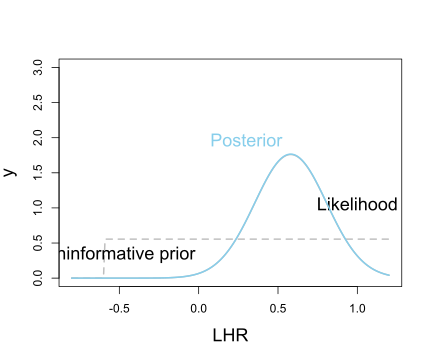
x = seq(-0.8, 1.2, 0.01)
y = dnorm(x, mean = 0, sd = 0.1907)
Likelihood = dnorm(x, mean = 0.58, sd = 0.2266)
h=function(x){dnorm(x, mean = 0, sd = 0.1907)*dnorm(x, mean = 0.58, sd = 0.2266)}
c = integrate(h,-0.8, 1.2)
Posterior_f = function(x){dnorm(x, mean = 0, sd = 0.1907)*dnorm(x, mean = 0.58, sd = 0.2266)/c$value}
#The mean
x[Posterior_f(x) == max(Posterior_f(x))]## [1] 0.24sum(Posterior_f(x)*x*0.01)## [1] 0.24#The probability that improvement is greater than 10% corresponding to LHR = 0.3137)
x2 = seq(0.3137, 1.2, 0.01)
sum(Posterior_f(x2)*0.01)## [1] 0.32qbeta(0.025,shape1=1, shape2=92)## [1] 0.000275qbeta(0.975,shape1=1, shape2=92)## [1] 0.0393#Exercises 12.1
library(tidyverse)
data1 <- tibble(theta = c(seq(0,1.0, 0.1)),
Hypothesis=c(rep('H0', 6),rep('H1', 5))) |> mutate(
Prior = c(rep(0.5/6, 6),rep(0.5/5,5)),
Likelihood = choose(10,5)*theta^5*(1-theta)^5,
LikelihoodXPrior= Prior*Likelihood,
Posterior = LikelihoodXPrior/sum(LikelihoodXPrior)
)
data1## # A tibble: 11 × 6
## theta Hypothesis Prior Likelihood LikelihoodXPrior Posterior
## <dbl> <chr> <dbl> <dbl> <dbl> <dbl>
## 1 0 H0 0.0833 0 0 0
## 2 0.1 H0 0.0833 0.00149 0.000124 0.00153
## 3 0.2 H0 0.0833 0.0264 0.00220 0.0271
## 4 0.3 H0 0.0833 0.103 0.00858 0.106
## 5 0.4 H0 0.0833 0.201 0.0167 0.206
## 6 0.5 H0 0.0833 0.246 0.0205 0.252
## 7 0.6 H1 0.1 0.201 0.0201 0.247
## 8 0.7 H1 0.1 0.103 0.0103 0.127
## 9 0.8 H1 0.1 0.0264 0.00264 0.0325
## 10 0.9 H1 0.1 0.00149 0.000149 0.00183
## 11 1 H1 0.1 0 0 0sum(data1$Posterior[data1$theta>0.5])## [1] 0.408data1 <- tibble(theta = c(seq(0,1.0, 0.1)),
Hypothesis=c(rep('H0', 6),rep('H1', 5))) |> mutate(
Prior = c(rep(0.5/6, 6),rep(0.5/5,5)),
Likelihood = choose(10,1)*theta^1*(1-theta)^9,
LikelihoodXPrior= Prior*Likelihood,
Posterior = LikelihoodXPrior/sum(LikelihoodXPrior)
)
data1## # A tibble: 11 × 6
## theta Hypothesis Prior Likelihood LikelihoodXPrior Posterior
## <dbl> <chr> <dbl> <dbl> <dbl> <dbl>
## 1 0 H0 0.0833 0 0 0
## 2 0.1 H0 0.0833 0.387 3.23e- 2 0.467
## 3 0.2 H0 0.0833 0.268 2.24e- 2 0.324
## 4 0.3 H0 0.0833 0.121 1.01e- 2 0.146
## 5 0.4 H0 0.0833 0.0403 3.36e- 3 0.0486
## 6 0.5 H0 0.0833 0.00977 8.14e- 4 0.0118
## 7 0.6 H1 0.1 0.00157 1.57e- 4 0.00228
## 8 0.7 H1 0.1 0.000138 1.38e- 5 0.000199
## 9 0.8 H1 0.1 0.00000410 4.10e- 7 0.00000593
## 10 0.9 H1 0.1 0.00000000900 9.00e-10 0.0000000130
## 11 1 H1 0.1 0 0 0sum(data1$Posterior[data1$theta>0.5])## [1] 0.00248data1 <- tibble(theta = c(seq(0,1.0, 0.1)),
Hypothesis=c(rep('H0', 6),rep('H1', 5))) |> mutate(
Prior = c(rep(0.01/6, 6),rep(0.99/5,5)),
Likelihood = choose(10,5)*theta^5*(1-theta)^5,
LikelihoodXPrior= Prior*Likelihood,
Posterior = LikelihoodXPrior/sum(LikelihoodXPrior)
)
data1## # A tibble: 11 × 6
## theta Hypothesis Prior Likelihood LikelihoodXPrior Posterior
## <dbl> <chr> <dbl> <dbl> <dbl> <dbl>
## 1 0 H0 0.00167 0 0 0
## 2 0.1 H0 0.00167 0.00149 0.00000248 0.0000372
## 3 0.2 H0 0.00167 0.0264 0.0000440 0.000661
## 4 0.3 H0 0.00167 0.103 0.000172 0.00258
## 5 0.4 H0 0.00167 0.201 0.000334 0.00502
## 6 0.5 H0 0.00167 0.246 0.000410 0.00616
## 7 0.6 H1 0.198 0.201 0.0397 0.597
## 8 0.7 H1 0.198 0.103 0.0204 0.306
## 9 0.8 H1 0.198 0.0264 0.00523 0.0786
## 10 0.9 H1 0.198 0.00149 0.000295 0.00442
## 11 1 H1 0.198 0 0 0sum(data1$Posterior[data1$theta>0.5])## [1] 0.986data1 <- tibble(theta = c(seq(0,1.0, 0.1)),
Hypothesis=c(rep('H0', 6),rep('H1', 5))) |> mutate(
Prior = c(rep(0.01/6, 6),rep(0.99/5,5)),
Likelihood = choose(10,1)*theta^1*(1-theta)^9,
LikelihoodXPrior= Prior*Likelihood,
Posterior = LikelihoodXPrior/sum(LikelihoodXPrior)
)
data1## # A tibble: 11 × 6
## theta Hypothesis Prior Likelihood LikelihoodXPrior Posterior
## <dbl> <chr> <dbl> <dbl> <dbl> <dbl>
## 1 0 H0 0.00167 0 0 0
## 2 0.1 H0 0.00167 0.387 0.000646 0.376
## 3 0.2 H0 0.00167 0.268 0.000447 0.260
## 4 0.3 H0 0.00167 0.121 0.000202 0.117
## 5 0.4 H0 0.00167 0.0403 0.0000672 0.0391
## 6 0.5 H0 0.00167 0.00977 0.0000163 0.00947
## 7 0.6 H1 0.198 0.00157 0.000311 0.181
## 8 0.7 H1 0.198 0.000138 0.0000273 0.0159
## 9 0.8 H1 0.198 0.00000410 0.000000811 0.000472
## 10 0.9 H1 0.198 0.00000000900 0.00000000178 0.00000104
## 11 1 H1 0.198 0 0 0sum(data1$Posterior[data1$theta>0.5])## [1] 0.198library(Bolstad)
theta.space<-(0:10)/10
theta.mass<-c(rep(0.5/6,6),rep(0.5/5,5))
post<-binodp(5,10,pi=theta.space,pi.prior=theta.mass,ret=TRUE)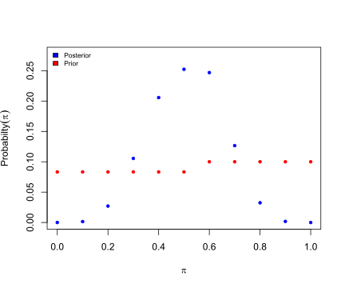
## Conditional distribution of x given pi and n:
##
## 0 1 2 3 4 5 6 7 8 9
## 0 1.0000 0.0000 0.0000 0.0000 0.0000 0.0000 0.0000 0.0000 0.0000 0.0000
## 0.1 0.3487 0.3874 0.1937 0.0574 0.0112 0.0015 0.0001 0.0000 0.0000 0.0000
## 0.2 0.1074 0.2684 0.3020 0.2013 0.0881 0.0264 0.0055 0.0008 0.0001 0.0000
## 0.3 0.0282 0.1211 0.2335 0.2668 0.2001 0.1029 0.0368 0.0090 0.0014 0.0001
## 0.4 0.0060 0.0403 0.1209 0.2150 0.2508 0.2007 0.1115 0.0425 0.0106 0.0016
## 0.5 0.0010 0.0098 0.0439 0.1172 0.2051 0.2461 0.2051 0.1172 0.0439 0.0098
## 0.6 0.0001 0.0016 0.0106 0.0425 0.1115 0.2007 0.2508 0.2150 0.1209 0.0403
## 0.7 0.0000 0.0001 0.0014 0.0090 0.0368 0.1029 0.2001 0.2668 0.2335 0.1211
## 0.8 0.0000 0.0000 0.0001 0.0008 0.0055 0.0264 0.0881 0.2013 0.3020 0.2684
## 0.9 0.0000 0.0000 0.0000 0.0000 0.0001 0.0015 0.0112 0.0574 0.1937 0.3874
## 1 0.0000 0.0000 0.0000 0.0000 0.0000 0.0000 0.0000 0.0000 0.0000 0.0000
## 10
## 0 0.0000
## 0.1 0.0000
## 0.2 0.0000
## 0.3 0.0000
## 0.4 0.0001
## 0.5 0.0010
## 0.6 0.0060
## 0.7 0.0282
## 0.8 0.1074
## 0.9 0.3487
## 1 1.0000
##
## Joint distribution:
##
## 0 1 2 3 4 5 6 7 8 9
## [1,] 0.0833 0.0000 0.0000 0.0000 0.0000 0.0000 0.0000 0.0000 0.0000 0.0000
## [2,] 0.0291 0.0323 0.0161 0.0048 0.0009 0.0001 0.0000 0.0000 0.0000 0.0000
## [3,] 0.0089 0.0224 0.0252 0.0168 0.0073 0.0022 0.0005 0.0001 0.0000 0.0000
## [4,] 0.0024 0.0101 0.0195 0.0222 0.0167 0.0086 0.0031 0.0008 0.0001 0.0000
## [5,] 0.0005 0.0034 0.0101 0.0179 0.0209 0.0167 0.0093 0.0035 0.0009 0.0001
## [6,] 0.0001 0.0008 0.0037 0.0098 0.0171 0.0205 0.0171 0.0098 0.0037 0.0008
## [7,] 0.0000 0.0002 0.0011 0.0042 0.0111 0.0201 0.0251 0.0215 0.0121 0.0040
## [8,] 0.0000 0.0000 0.0001 0.0009 0.0037 0.0103 0.0200 0.0267 0.0233 0.0121
## [9,] 0.0000 0.0000 0.0000 0.0001 0.0006 0.0026 0.0088 0.0201 0.0302 0.0268
## [10,] 0.0000 0.0000 0.0000 0.0000 0.0000 0.0001 0.0011 0.0057 0.0194 0.0387
## [11,] 0.0000 0.0000 0.0000 0.0000 0.0000 0.0000 0.0000 0.0000 0.0000 0.0000
## 10
## [1,] 0.0000
## [2,] 0.0000
## [3,] 0.0000
## [4,] 0.0000
## [5,] 0.0000
## [6,] 0.0001
## [7,] 0.0006
## [8,] 0.0028
## [9,] 0.0107
## [10,] 0.0349
## [11,] 0.1000
##
## Marginal distribution of x:
##
## 0 1 2 3 4 5 6 7 8 9 10
## [1,] 0.124 0.0691 0.0757 0.0767 0.0783 0.0813 0.0849 0.0882 0.0897 0.0827 0.149
##
##
## Prior Likelihood Posterior
## 0 0.0833 0.00000 0.00000
## 0.1 0.0833 0.00149 0.00153
## 0.2 0.0833 0.02642 0.02709
## 0.3 0.0833 0.10292 0.10552
## 0.4 0.0833 0.20066 0.20572
## 0.5 0.0833 0.24609 0.25231
## 0.6 0.1000 0.20066 0.24687
## 0.7 0.1000 0.10292 0.12662
## 0.8 0.1000 0.02642 0.03251
## 0.9 0.1000 0.00149 0.00183
## 1 0.1000 0.00000 0.00000sum(post$posterior[7:11])## [1] 0.408#Exercises 12.2
mean <- 0.3137
sigma <- 0.1907
prior_f <- function(theta) {1/(sigma*sqrt(2*base::pi))*exp(-(theta-mean)^2/(2*sigma^2))}
x = seq(-0.8, 1.2, 0.01)
#prior probability that the new treatment is effective
integrate(prior_f,0, 1.2)## 0.95 with absolute error < 1.5e-06#posterior probability that the new treatment is effective
sigma2 <- 0.2266
mean2 <- 0.58
L_Prior <- function(theta) {1/(sigma2*sqrt(2*base::pi))*exp(-(theta-mean2)^2/(2*sigma2^2))*1/(sigma*sqrt(2*base::pi))*exp(-(theta-mean)^2/(2*sigma^2))}
c <- integrate(L_Prior, -1.2, 1.2)$value
posterior_f <- function(theta) {1/(sigma2*sqrt(2*base::pi))*exp(-(theta-mean2)^2/(2*sigma2^2))*1/(sigma*sqrt(2*base::pi))*exp(-(theta-mean)^2/(2*sigma^2))/c}
integrate(posterior_f, 0, 1.5)## 0.998 with absolute error < 1.1e-09Chapter13 Markov Chain Monte Carlo Methods
N=10000
x <- rnorm(N,mean=2,sd=1)+rnorm(N,mean=5,sd=0.5)
Fn <- ecdf(x)
Fn(4)## [1] 0.0036plot(Fn, verticals = TRUE, do.points = FALSE)
inverse = function (f, lower = -100, upper = 100) {
function (y) uniroot((function (x) f(x) - y), lower = lower, upper = upper)[[1]]
}
ecdf_inverse = inverse(function (x) Fn(x), 0.1, 100)
ecdf_inverse(0.5)## [1] 7u <- runif(N)
thetas <- sapply(u, ecdf_inverse)
hist(thetas)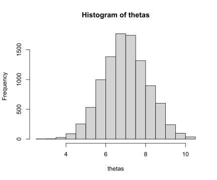
library(tidyverse)
theta <- seq(-1,7,0.01)
d_theta = 0.5*dnorm(theta,mean=2,sd=1)+0.5*dnorm(theta,mean=5,sd=0.5)
curve(0.5*dnorm(x,mean=2,sd=1)+0.5*dnorm(x,mean=5,sd=0.5), -1, 7, col="sienna",
lwd=2,n=1001, ylab="PDF", xlab="theta")
data = tibble('x'=theta, 'y'=d_theta)
data2 <- data[sample(seq_len(nrow(data)), 50, prob=data$y),]
segments(x0 = data2$x,
y0 = 0,
x1 = data2$x,
y1 = data2$y,
col= 'black',
lwd = 1)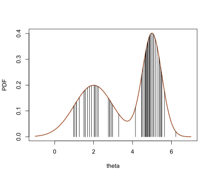
theta <- seq(-1,7,0.01)
d_theta = 0.5*dnorm(theta,mean=2,sd=1)+0.5*dnorm(theta,mean=5,sd=0.5)
curve(0.5*dnorm(x,mean=2,sd=1)+0.5*dnorm(x,mean=5,sd=0.5), -1, 7, col="sienna",
lwd=2,n=1001, ylab="PDF", xlab="theta") # plots the results
data = tibble('x'=theta, 'y'=d_theta)
data2 <- data[sample(seq_len(nrow(data)), 500, prob=data$y),]
segments(x0 = data2$x,
y0 = 0,
x1 = data2$x,
y1 = data2$y,
col= 'black',
type="l",
lwd = 0.1)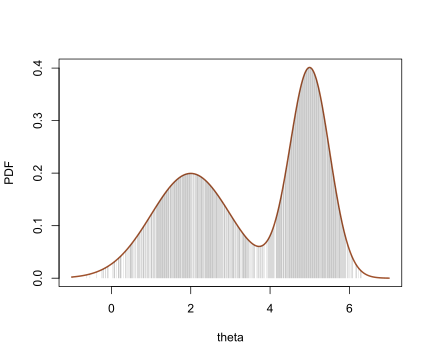
data2 <- data[sample(seq_len(nrow(data)), 50, prob=data$y),]
hist(data2$x,
breaks = seq(from=-1, to=7, by=0.5),
main="",
col="white",
xlab="theta",
ylab="Counts")
axis(side=1, at=seq(from=-1, to=7, by=1))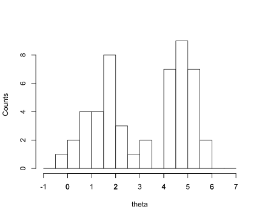
data2 <- data[sample(seq_len(nrow(data)), 500, prob=data$y),]
hist(data2$x,
breaks = seq(from=-1, to=7, by=0.2),
main="",
col="white",
xlab="theta",
ylab="Counts")
axis(side=1, at=seq(from=-1, to=7, by=1))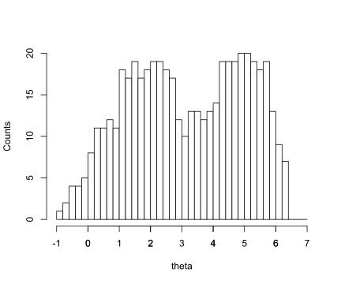
data2 <- data[sample(seq_len(nrow(data)), 500, prob=data$y),]
#sample mean
weighted.mean(data2$x,data2$y)## [1] 3.61weighted.mean(data$x,data$y)## [1] 3.5#True mean
c <- integrate(\(x) (0.5*dnorm(x,mean=2,sd=1)+0.5*dnorm(x,mean=5,sd=0.5)), -10, 10)
density_x <- function(x){
(dnorm(x,mean=2,sd=1)+dnorm(x,mean=5,sd=0.5))*x/c$value
}
integrate(density_x, -10, 10)$value## [1] 7#True variance
c <- integrate(\(x) (dnorm(x,mean=2,sd=1)+dnorm(x,mean=5,sd=0.5)), -10, 10)
density_x_x <- function(x){
(dnorm(x,mean=2,sd=1)+dnorm(x,mean=5,sd=0.5))*x*x/c$value
}
integrate(density_x_x, -10, 10)$value - (integrate(density_x, -10, 10)$value)^2## [1] 2.87(2+5)*0.5## [1] 3.5(1^2+(5-3.5)^2)*0.5+(0.5^2+(2-3.5)^2)*0.5## [1] 2.88#sample median
data2 <- data[sample(seq_len(nrow(data)), 500, prob=data$y),]
quantile(data2$x, c(0.5))## 50%
## 3#True median
for (i in 1:7) {
if(abs(integrate(\(x) (0.5*dnorm(x,mean=2,sd=1)+0.5*dnorm(x,mean=5,sd=0.5)), -10, i)$value - 0.5)<0.001){
print(i)
}
}## [1] 4y=c(6,13,18,28,52,53,61,60)
n=c(59,60,62,56,63,59,62,60)
x=c(1.6907,1.7242,1.7552,1.7842,1.8113,1.8369,1.8610,1.8839)
x_mean = x-mean(x)
n_y=n-y
beetle.mat=cbind(y,n_y)
beetle.mat## y n_y
## [1,] 6 53
## [2,] 13 47
## [3,] 18 44
## [4,] 28 28
## [5,] 52 11
## [6,] 53 6
## [7,] 61 1
## [8,] 60 0beetle## # A tibble: 8 × 3
## x n y
## <dbl> <dbl> <dbl>
## 1 1.69 59 6
## 2 1.72 60 13
## 3 1.76 62 18
## 4 1.78 56 28
## 5 1.81 63 52
## 6 1.84 59 53
## 7 1.86 62 61
## 8 1.88 60 60res.glm1=glm(beetle.mat~x_mean, family=binomial(link="logit"))
res.glm1##
## Call: glm(formula = beetle.mat ~ x_mean, family = binomial(link = "logit"))
##
## Coefficients:
## (Intercept) x_mean
## 0.744 34.270
##
## Degrees of Freedom: 7 Total (i.e. Null); 6 Residual
## Null Deviance: 284
## Residual Deviance: 11.2 AIC: 41.4logLik(res.glm1)## 'log Lik.' -18.7 (df=2)#Extreme value model
res.glm3=glm(beetle.mat~x_mean, family=binomial(link="cloglog"))
res.glm3##
## Call: glm(formula = beetle.mat ~ x_mean, family = binomial(link = "cloglog"))
##
## Coefficients:
## (Intercept) x_mean
## -0.0431 22.0412
##
## Degrees of Freedom: 7 Total (i.e. Null); 6 Residual
## Null Deviance: 284
## Residual Deviance: 3.45 AIC: 33.6logLik(res.glm3)## 'log Lik.' -14.8 (df=2)beta_1 = 0.7438
beta_2 = seq(20,40, 0.2)
mean_x = mean(x)
#pi = exp(beta_1 + beta_2*(x-mean_x))/(1+exp(beta_1 + beta_2*(x-mean_x)))
#pi/(1-pi) = (exp(beta_1 + beta_2*(x-mean_x))/(1+exp(beta_1 + beta_2*(x-mean_x))))/(1/(1+exp(beta_1 + beta_2*(x-mean_x))))
#log(pi/(1-pi)) = beta_1 + beta_2*(x-mean_x)
loglh <- function(beta2){
sum(y*(beta_1+beta2*x_mean)+n*log(1/(1+exp(beta_1+beta2*x_mean)))+log(choose(n, y)))
}
lh_beta2 = sapply(beta_2, loglh)
lh_beta2## [1] -36.2 -35.7 -35.1 -34.6 -34.1 -33.6 -33.1 -32.6 -32.1 -31.6 -31.2 -30.7
## [13] -30.3 -29.8 -29.4 -29.0 -28.6 -28.2 -27.8 -27.5 -27.1 -26.8 -26.4 -26.1
## [25] -25.7 -25.4 -25.1 -24.8 -24.5 -24.2 -24.0 -23.7 -23.4 -23.2 -22.9 -22.7
## [37] -22.5 -22.2 -22.0 -21.8 -21.6 -21.4 -21.2 -21.1 -20.9 -20.7 -20.6 -20.4
## [49] -20.3 -20.1 -20.0 -19.9 -19.8 -19.7 -19.6 -19.5 -19.4 -19.3 -19.2 -19.1
## [61] -19.1 -19.0 -19.0 -18.9 -18.9 -18.8 -18.8 -18.8 -18.7 -18.7 -18.7 -18.7
## [73] -18.7 -18.7 -18.7 -18.7 -18.8 -18.8 -18.8 -18.9 -18.9 -19.0 -19.0 -19.1
## [85] -19.1 -19.2 -19.2 -19.3 -19.4 -19.5 -19.6 -19.7 -19.8 -19.9 -20.0 -20.1
## [97] -20.2 -20.3 -20.4 -20.5 -20.7beta_1 = 0.7438
y=c(6,13,18,28,52,53,61,60)
n=c(59,60,62,56,63,59,62,60)
x=c(1.6907,1.7242,1.7552,1.7842,1.8113,1.8369,1.8610,1.8839)
x_mean = x-mean(x)
n_y=n-y
lh <- function(beta_2){
prod(exp(y*(beta_1+beta_2*x_mean)+n*log(1/(1+exp(beta_1+beta_2*x_mean)))+log(choose(n, y))))
}
beta2 <- c()
beta2[1] <- 1
for (i in 1:1000) {
beta2_star <- beta2[i]+rnorm(1)
alpha <- min((lh(beta2_star)/lh(beta2[i])),1)
u <- runif(1,min = 0, max = 1)
beta2[i+1] <- ifelse(alpha>u, beta2_star, beta2[i])
}plot(beta2)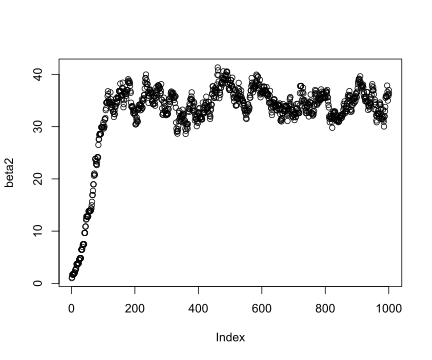
Chapter14 Example Bayesian Analyses
#Extreme value model
res.glm3=glm(beetle.mat~x, family=binomial(link="cloglog"))
res.glm3##
## Call: glm(formula = beetle.mat ~ x, family = binomial(link = "cloglog"))
##
## Coefficients:
## (Intercept) x
## -39.6 22.0
##
## Degrees of Freedom: 7 Total (i.e. Null); 6 Residual
## Null Deviance: 284
## Residual Deviance: 3.45 AIC: 33.6logLik(res.glm3)## 'log Lik.' -14.8 (df=2)res.glm3$deviance## [1] 3.45#probit model
res.glm2=glm(beetle.mat~x, family=binomial(link="probit"))
res.glm2##
## Call: glm(formula = beetle.mat ~ x, family = binomial(link = "probit"))
##
## Coefficients:
## (Intercept) x
## -34.9 19.7
##
## Degrees of Freedom: 7 Total (i.e. Null); 6 Residual
## Null Deviance: 284
## Residual Deviance: 10.1 AIC: 40.3logLik(res.glm2)## 'log Lik.' -18.2 (df=2)res.glm2$deviance## [1] 10.1# manually calculating the quantile residual
library(statmod)
qresid(res.glm1)## [1] 1.175 1.209 -1.112 -1.480 0.500 -0.362 1.047 2.006Let \(y_i\) is the proportion of the success and \(\hat\mu_i\) is the fitted values of the model:
Response: \[y_i - \hat\mu_i\] response residuals are inadequate for assessing a fitted glm, because GLMs are based on distributions where (in general) the variance depends on the mean.
Pearson:
The most direct way to handle the non-constant variance is to divide it out: \[ \frac{y_i - \hat\mu_i}{\sqrt{V(\mu_i)|_{\hat\mu_i}}}\] where \(V()\) is the (GLM) variance function (\(Var(y_i) = a(\phi)*V(\mu_i)\))
Under “Small dispersion asymptotics” conditions, the Pearson residuals have an approximate normal distribution.
Deviance: \[sign(y_i-\hat\mu_i)*\sqrt{d_i}\] where \(d_i\) is the unit deviance, i.e. \[d_i = 2(t(y_i,y_i)-t(y_i,\hat\mu_i))\] For Deviance for a Poisson model: \[sign(o_i-e_i)*\sqrt{d_i}=sign(o_i-e_i)*\sqrt{2[o_i\log(o_i/e_i)-(o_i-e_i)]}, \quad i=1,\dots,N\]
The deviance statistic (sum of squared unit-deviances) has an approximate chi-square distribution (when the saddlepoint approximation applies and under “Small dispersion asymptotics” conditions). Under these same conditions, the deviance residuals have an approximate normal distribution.
Working: \[z_i - \eta_i \] where \(z_i\) are the working responses \(\eta_i + \frac{d\eta_i}{d\mu_i}(y_i-\hat\mu_i)\) and \(\eta_i\) is the linear predictor. Meaning you get that the residual is \(\frac{d\eta_i}{d\mu_i}(y_i-\hat\mu_i)\).
The model coefficients are fitted using Fisher scoring algorithm / Iterative Reweighted Least Square (IRLS). And [it can be shown][1] that each iteration of this algorithm is equivalent to doing ordinary least-squares on the working responses as defined here.
To test the link function - plotting the linear predictor against the working responses should come out linear if the right link function was used.
Partial: \[z_i - \eta_i + X^*\beta\]
where \(X^*\) is the centered \(X\). Partial residuals can be used to determine if a covariate/predictor is on an inappropriate scale.
Quantile: \[\Phi^{-1}(F(y_i))\]
Where \(F(y_i)\) is the CDF of \(y_i\), and \(\Phi^{-1}\) is the quantile function of standard normal (inverse CDF). For discrete \(y_i\)’s you take \(u \sim Unif(F(y_i-1), F(y_i))\) and \(\Phi^{-1}(u)\).
Here is an example code to calculate these residuals:
Y = c(0,0,0,0,1,1,1,1,1)
x1 = c(1,2,3,1,2,2,3,3,3)
x2 = c(1,0,0,1,0,0,0,0,0)
fit = glm(Y ~ x1 + x2, family = 'binomial')
lp = predict(fit)
mu = exp(lp)/(1+exp(lp))
# manually calculating the 1st response residual
resid(fit, type="response")[1]## 1
## -8.65e-09Y[1] - mu[1]## 1
## -8.65e-09# manually calculating the 1st pearson residual
resid(fit, type="pearson")[1]## 1
## -9.3e-05(Y[1]-mu[1]) / sqrt(mu[1]*(1-mu[1]))## 1
## -9.3e-05# manually calculating the 1st deviance residual
resid(fit, type="deviance")[1]## 1
## -0.000132sqrt(-2*log(1-mu[1]))*sign(Y[1]-mu[1])## 1
## -0.000132# manually calculating the 1st working residual
resid(fit, type="working")[1]## 1
## -1(Y[1]-mu[1]) / (mu[1]*(1-mu[1]))## 1
## -1# manually calculating the 1st partial residual
resid(fit, type="partial")[1,1]## [1] -1.5(Y[1]-mu[1]) / (mu[1]*(1-mu[1])) + fit$coefficients[2]*(x1[1] - mean(x1))## 1
## -1.5resid(fit, type="partial")[1,2]## [1] -15.7(Y[1]-mu[1]) / (mu[1]*(1-mu[1])) + fit$coefficients[3]*(x2[1] - mean(x2))## 1
## -15.7# manually calculating the 1st quantile residual
library(statmod)
qresid(fit)[1] # results are random (uniformly), so won't come the same## [1] 1.25a = pbinom(Y[1]-1, 1, mu[1])
b = pbinom(Y[1], 1, mu[1])
qnorm(runif(1, a, b)) # results are random (uniformly), so won't come the same## [1] 0.117n = 10000
mean(replicate(n, qresid(fit)[1]))## [1] 0.00822mean(qnorm(runif(1000, a, b))) # should be close## [1] 0.00218reference: